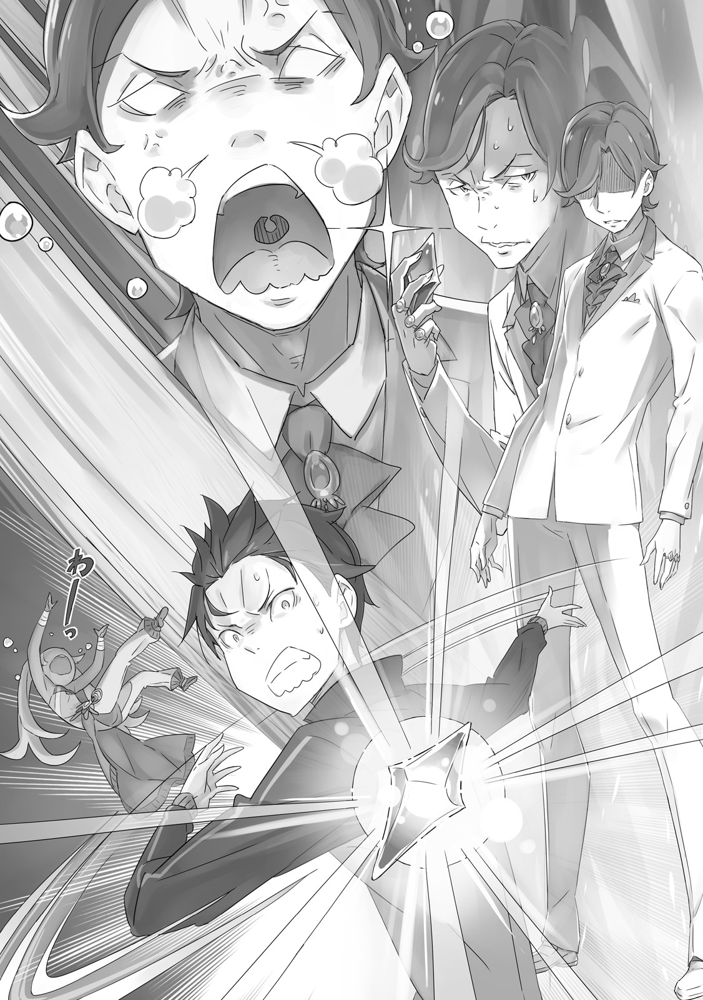

| Re：ゼロから始める異世界生活 16 | |
| 長月 達平 & 大塚 真一郎 | |

Re：ゼロから始める異世界生活 16
長月達平
本作品の全部または一部を無断で複製、転載、配信、送信すること、あるいはウェブサイトへの転載等を禁止します。また、本作品の内容を無断で改変、改ざん等を行うことも禁止します。
本作品購入時にご承諾いただいた規約により、有償・無償にかかわらず本作品を第三者に譲渡することはできません。
本作品を示すサムネイルなどのイメージ画像は、再ダウンロード時に予告なく変更される場合があります。
本作品の内容は、底本発行時の取材・執筆内容にもとづきます。
本作品は縦書きでレイアウトされています。
また、ご覧になるリーディングシステムにより、表示の差が認められることがあります。
第一章 『始まりはいつも来訪者から』
１
──勢いよく白線を乗り越えた瞬間、ナツキ・スバルの天地はひっくり返っていた。
「──だっ！ たっ！ とっ！」
全力疾走の直後だ。車も人も、急には止まれないのは同じこと。
足がつんのめり、スバルは頭から草むらに突っ込む。とっさに手をついて身を前に転がすと、もはや癖になった受け身で衝撃を殺し、そのまま地べたに仰向けに寝転んだ。
息が弾み、酸素不足で視界がちかちかする。背中には草の感触があり、森の隙間から見える空を仰いで、スバルは草木の香る空気を胸一杯に吸い込んだ。
そして、空に向かってぐっと伸ばした手を握り、拳を作る。
「ぶはーっ！ あー、辛い！ 苦しい！ でも、終わった！ ゴール、ゴールだ！」
だくだくと流れる汗もそのままに、スバルは顔をくしゃくしゃにして達成感を叫ぶ。
途中で何度も心が折れかけたが、そのたびにスバルは不屈の根性を発揮し、ついには目標の達成を成し遂げた。重ねた失敗の数だけ、その感慨は一入である。
これでようやく、色々と仕込んでくれた師匠にも顔向けできるというものだ。
「──スバル、お疲れ様だったかしら」
と、そんな心地よい達成感を抱くスバルの視界に、一人の少女が逆さまに映り込んだ。
淡い発色の長い髪を豪奢に巻いて、装飾過多なドレスを纏った可憐な少女だ。その薄青の瞳に特徴的な紋様を宿した幼い姿に、スバルは唇を綻ばせる。
「なんだ、きてたのか、ベア子」
「きてたのよ。こうして、スバルの日々の頑張りをねぎらうのもパートナーとしての務めかしら。それに、ほら、ペトラがタオルを持っていけってうるさかったのよ」
「お、助かる。それにこのタオル、ちょっと冷やしてあって生き返るわー」
「礼ならペトラに直接言ってやるといいかしら。きっと、あの子は跳んで喜ぶのよ」
そう言って、渡された冷やしタオルを頭に乗せたスバルに、少女──ベアトリスはすまし顔で答える。ただし、その口元には微笑があり、それがスバルには微笑ましい。
ベアトリスとは、それこそ四六時中一緒に過ごしているのに、こうした日々のささやかなやり取りはいまだに新鮮な驚きをくれる。親愛も、日毎に募る一方だ。
「......俺とベア子の契約から、もう一年が経つってのにな」
「──？ 急に、どうしたのかしら」
「いや、時間が過ぎるの早ぇし、俺のベア子が今日も可愛くて感慨深いなーって」
「スバルの言うことは相変わらずなのよ。でも、ベティーが可愛いのは当然かしら」
そうして自慢げにするあたりが、ベアトリスが順調にスバルに毒されている証拠だ。
──一年。『聖域』にまつわる一連の事件から、それだけの時間が経過していた。
短いようで長く、長いようで短い時間だ。その中で変わったものもあれば、変わらなかったものもある。変わらなかったものの代表が、ベアトリスを始めとした仲間たちとスバルとの絆であったとすれば、変わったものの代表は──、
「この一年で、すっかりたくましく見違えた俺、とかかな」
「ぷぷーっ、なのよ。や、やられたかしら......今の冗談は面白かったのよ」
「今のは全然冗談のつもりなかったけどな！」
口に手を当てて大笑いするベアトリスに、スバルは大いに心外だと肩をすくめる。
「そりゃ、見違えるってのは言いすぎかもだが、そんな笑われるほどじゃねぇだろ。ほら見ろ、ベア子、俺の力こぶを！ カッチカチやぞ！」
「わかったわかったかしら。ベティーだけはスバルの味方をしてあげるのよ」
「それ、わかってない奴の台詞じゃん！ こんだけ毎日頑張ってんのにさぁ」
地べたに胡坐を掻いて、冷やしタオルを首に巻くスバルが背後の光景に顎をしゃくる。その方向に目をやり、ベアトリスは「確かに」と片目を閉じた。
二人の背後、そこには切り開かれた森の空白地帯がある。その開拓地に、スバルが先ほどまで果敢に挑んでいた試練──いわゆる、『秘密特訓施設』が建造されていた。
身内の私有地なのをいいことに、森の結構な範囲を利用して確保されたスペース、そこには伐採した木材で作られた様々なアトラクションがあり、飛び越えたりよじ登ったり、障害物を乗り越えるアスレチックゾーンと化している。
「こんな楽しげな見た目に反して、制限時間内に全部のアトラクションを突破して回ろうとすると、大人でも余裕で音を上げる鬼畜仕様......我ながら恐ろしいものを作ったぜ」
「大げさが過ぎるかしら。大体、秘密の施設なんて言ってるのは、スバルとガーフィールの二人だけなのよ。よく近くの街の子どもたちの遊び場にもされてるかしら」
「子どもたちには公園扱いかよ。まぁ、ケガしない範囲なら遊んでくれてていいし、このアトラクションの設計図を書いてくれたお師匠さんも満足してくれるだろうよ」
真剣に挑めば鍛錬に、遊び心で臨めば日常の彩りに。アスレチックゾーンにはそんな夢と希望が詰まっている。子どもたちの反響は嬉しい誤算というやつだ。
「いや、お師匠さんなら、ひょっとして最初から一石二鳥を狙ってた可能性も......」
「あれもよくわからん男なのよ。でも、ベティーに対する態度は弁えているかしら。ちゃんと大精霊扱いするあたり、褒めてやってもいいのよ」
「お師匠さんのベア子への対応は、そういうのとはちょっと違うと思う」
知らぬが仏を地でいく展開に、スバルは野暮な突っ込みをしたなと反省する。
スバルが師匠──と、勝手に呼んでいる人物は、昔からメイザース家に仕えているクリンドという名の万能執事だ。実際、その渾名が冗談にならないぐらいに多くを修めた人物であり、鍛錬の仕方を含め、この一年でスバルは彼に多くを教わった。
能力的にも人格的にも、まさしく尊敬に値する人物なのだが──、
「何故か、スバルはベティーをクリンドに近付かせたがらないのが不思議かしら」
「お前だけじゃないぞ。ペトラと、場合によってはエミリアたんもそうだ」
ちなみに、ラムやフレデリカは心配いらない。念のために言っておくと、スバルやロズワール、オットーとガーフィールにも無害だ。あとのことは察してほしい。
「まぁ、ここが秘密の特訓施設ってのは名ばかりでもいいんだ。カッコいいから」
「その呼び方にした途端、ガーフィールが目を輝かせて森を切り開くのを手伝い出して驚いたのよ。......ベティーには、スバルとガーフィールのセンスがわからんかしら」
「それは男にしかわからない領域なのさ。あれ、じゃ、オットーって男じゃねぇのかな」
基本、スバルとガーフィールの意気投合を生温かい目で見ていることが多いオットーを思い返し、スバルとベアトリスは大いに首をひねった。
ともあれ、この森の秘密特訓施設こそ、スバルがこの一年、己を鍛えに鍛え上げるのに貢献してくれた立役者だ。立地も屋敷から徒歩十分の距離にあり、おまけに屋敷の関係者以外の邪魔が入らない好条件。頻繁に屋敷の人間が邪魔しにくるのが玉に瑕。
「邪魔なんてとんでもない話なのよ。ベティーはあくまで、スバルのパートナーとしての責務を全うしてるだけかしら。ふー、やれやれなのよ」
「お、言ってくれたな。そんな生意気なレディはこうしてやる！」
「きゃーかしらー！」
あんまり生意気で可愛いので、スバルはその鍛え上げた力をフルに使い、ベアトリスを捕まえて自分の膝に乗せ、思うさまその頭を撫でくり回した。
「ひどいのよー、精霊虐待かしらー。スバルは極悪非道の契約者なのよー」
「ぐへへへ、そんな奴と契約書もなしに契約を交わしたお前が馬鹿だったのさ」
唇を尖らせ、ぐしゃぐしゃになった髪の毛を直しているベアトリスにスバルは笑う。
彼女と契約した当初、ベアトリスへの親愛はそこが最大値だと思ったものだが、そんな考えは毎日更新されていく。ベアトリスとの日々の思い出を綴った『ベア子成長記録』はすでに五冊目に突入していた。今後も、その成長を見守りたい所存である。
どうせ大切に抱えてもらうなら、白紙の本より思い出のアルバムの方がずっといい。
そしてアルバムならば、写真の枚数と写っている人の数は多ければ多いほどいい。だからスバルはできるだけ、ベアトリスの心に焼き付く思い出を増やしたいと思っている。
「つまりベア子、俺がお前をおちょくるのは全部、愛情表現なんだ」
「今、おちょくるって言ったかしら！ 聞き逃さなかったのよ！」
「今のは愛情の方を聞き逃さないでほしかった」
「そっちは今さらかしら。愛されてることには自信があるのよ」
当然のような顔つきで言ったベアトリスに、スバルは何も言わずに目を細める。
こんな風に胸を張れるぐらい、彼女が日々を全力で生きていてくれて、感無量だ。
などと、スバルが得も言われぬ感慨に胸を温かくしていると──、
「スバル様ー！ ベアトリスちゃーん！」
ふいに高い声に呼ばれ、じゃれ合う二人は揃って顔を上げた。見れば、こちらへ手を振って一人の少女が走ってくる。聞き慣れた声に見慣れた顔、そのどちらにも『可愛い』と形容詞をつけたくなる、メイド服姿の愛らしい少女である。
「よかった、二人で遊んでてくれて。行き違いにならなくてホッとしちゃった」
そう、スバルたちの前で胸を撫で下ろしたのは、可憐に微笑むペトラだった。
一年前の大事件にもめげず、ペトラは新ロズワール邸でもメイドとして働いてくれている。成長期の少女らしく、わずかに背丈の伸びた彼女はぐっと魅力的になったと思う。とはいえ、まだまだスバルにとっては可愛い妹分だ。
「おいおい、遊んでたってのは心外だな。真面目にトレーニングしてたってのに」
「今、ベアトリスちゃんのこと、膝に乗せて撫で回してたのに？」
「ベア子を撫でるにはコツがいるんだよ。まず、燃え盛る屋敷から連れ出して、仲良くなるところから始めなきゃいけない」
「それ、スバル様以外誰もやってないんじゃ......」
軽口に呆れ顔をされて、スバルは苦笑い。と、そこで首のタオルを思い出した。
「お、そうだ。ペトラ、タオルありがとな。冷やしててくれるとか、気が利くぜ」
「ホント？ よかった、喜んでもらえて。本当はちゃんと氷で冷やしておこうと思ったんだけど、時間がなかったからエミリア姉様にお願いしたの」
「ペトラのその合理的なところ、俺は好きだなぁ」
メイドという立場ながら、主人の力を借りることを躊躇わない姿勢は好ましい。
そんなスバルの褒め言葉に、「えへへ」とペトラは照れ笑いして、
「あ、いけない。わたし、スバル様とベアトリスちゃんを呼びにきたんだった」
「どした？ もしかして、タルトがめちゃくちゃおいしそうに焼けたとか？」
「む！ それは一大事かしら。大急ぎで呼びにくるのも頷けるのよ」
「もう、そんなお話のはずないでしょ。二人ともからかわないのっ」
頬を膨らませたペトラが、呑気なスバルとベアトリスをぴしゃりと叱りつける。それから彼女は、地べたに座るスバルの手を掴んで引っ張り起こすと、
「タルトのことは後回し！ それより、エミリア姉様がスバル様を呼んでるの。お屋敷にお客様がきちゃって......その話し合いにご一緒してほしいって」
「屋敷にお客さん？」
ペトラの報告に、心当たりのないスバルが首を傾げた。隣ではベアトリスも、スバルと同じように首を傾げている。そして、二人で首を傾げたまま、
「予定にない来客、俺を呼ぶ可愛いエミリアたん......事件の予感がしないか？」
「面倒が舞い込むパターンに違いないかしら。ペトラ、どんな客だったか話すのよ」
同じ角度に首を傾げた二人に、ペトラは「えっとね」と同じ角度に小首を傾げ、
「一人は、すごいピシッとした男の人。なんだかピリピリしてて怖かったかも」
「ピシッとピリピリ、か。なるほど、そいつは曰くありげな......いやいや、しかし、人を見た目で判断しちゃダメだしな」
「わたしも、前に反省したから人を見た目で判断したりしないもん」
「お、偉いな、ペトラ。前に何があったか知らないけど、そりゃ立派なことだぜ」
「去年、村にきた目つきの悪い新顔さん、変な人かと思ったけど全然違ってたから」
「まさかのブーメラン！ と、衝撃の初対面の話はまた今度するとして......」
思わぬところでダメージを受けながら、スバルはペトラに片目をつむる。「一人は」と前置きした以上、ペトラの話はまだ途中だ。
「お客さんは他にもまだいるよな？ その、ピシッとピリ辛の連れは？」
その問いかけに、ペトラはほんのりと頬を赤らめる。
そして、どこか幸せそうに顔をふやけさせると、
「──可愛い猫ちゃんと、一緒にきてるの」
２
新ロズワール邸の外観は、燃えた旧ロズワール邸と同じタイプの洋館型である。
元々、新旧二つの屋敷は本邸と別邸の関係にあり、本邸に当たるのは新しい屋敷の方だ。それだけに、新しい屋敷は建物の豪華さと敷地の広さで以前の上をゆき、メイドとして働くペトラたちの苦労は推して知るべしといったところだった。
「さて、そんな広くて大きい屋敷に戻ってきたわけですが......」
両開きの扉を押し開け、徒歩十分の森から戻ったスバルたちは屋敷の玄関ホールに足を踏み入れる。おそらく、件の来客は応接間でもてなされているはずだ。
「ひとまず、そっちに顔出してみて......」
「おー！ おにーさんだー！ 元気してたー？」
「って、うお!?」
そんなスバルの想像を、やたらと威勢のいい声と衝撃が裏切ってきた。
声は高く、衝撃も胸の上より高い。文字通り顔に飛びつかれ、スバルは慌てて受け止めた。軽い。その相手を確認して、スバルの驚きが納得に変わる。
ふかふかと柔らかい毛並み、馬鹿みたいにあけすけな笑顔には見覚えがある。
「ペトラの話でもしやとは思ってたが......やっぱお前か、ミミ！」
「うへへへー。おにーさん、ちょーひさしぶりー。どんぐらいぶり？ 一年くらいー？」
そう言って、スバルに笑顔で抱えられているのは、明るい橙色の毛並みに白いローブを纏った獣人、子猫人と呼ばれる亜人の少女だった。その体格はペトラやベアトリスよりも小さく、まさしく仔猫のような愛くるしさである。
「そうだな、一年ぐらいぶりだ。お前は超元気そうで、めちゃくちゃホッとするわ」
「そー！ ミミちょー元気！ あと、ミミ、背伸びた！ もはやオトナの女！」
「出会い頭に人の頭に飛びついてくる奴のどこが大人の女!?」
少女──ミミは床に降り立つと、長い尻尾をフリフリ振って胸を張る。
天真爛漫な態度と人懐っこい性格のミミだが、これで獣人傭兵団『鉄の牙』の副団長を務める、スバルの十数倍の戦闘力を持った強者だ。かつて、スバルとは白鯨討伐や魔女教との戦いで協力した仲で、勝手ながら戦友のような思いを抱いている。
「まぁ、遠いとこよくきてくれたな。そうだ、紹介するよ。こっちの可愛いメイドさんがペトラ、俺の後ろに隠れて人見知り発揮してるロリがベアトリスだ」
「おー、わかりました！ ペトラしてるメイドさんと、おにーさんの子ども！」
「な、なんかめちゃくちゃ不本意な覚えられ方してる気がするかしら！」
ミミの雑な理解力に、ペトラは優雅にカーテシーし、絶賛人見知り中のベアトリスは渋い顔をする。と、そんなベアトリスにミミが「おおー！」と猫目を輝かせた。
「何それ、その髪すごー！ なんでそんなぐるぐる？ ミミ、ビックリした！」
「これはベティーのお母様が考案した、機能的かつ優美性に富んだ至高の髪型なのよ」
「いや、優美性はともかく、機能的では絶対ないだろ。俺がこの一年、いったい何回お前の髪の毛があちこちに引っ掛かって苦労したと思ってんだ」
屋敷で、出先で、スバルの腕の中で、ベアトリスの髪は大いに絡み続けた。今やスバルの絡んだ髪の毛を外す技術は国内随一、『ベアトリマー』と呼んでほしい。
「なるほど、キノーテキでユービセー！ ゼンゼンわからん！」
「お前のようなお子様にはわからない目線の......こら、引っ張るんじゃないかしら！」
好奇心旺盛なミミはベアトリスの縦ロールに興味津々だ。鼠を狙う猫のようなミミの動きに、ベアトリスがおどおどと助けを求めるようにスバルを見る。
しかし、スバルはベアトリスが友達を作るチャンスだと、あえて見放すことにした。
「ねえ、スバル様。ベアトリスちゃんがすごい怖い目で見てるよ？」
「人は苦手なものと戦って成長していくんだ。ベア子はちょっと食わず嫌いが多すぎるから、ここでチャレンジだよ。俺たちは黙って見守るとしようや、母さん」
「か、母さんって......わ、わかりました」
存在しない髭を整える仕草のスバルに、ペトラは赤い顔で黙り込む。そうして二人、ベアトリスとミミの温かな触れ合いを見つめているのもいいのだが。
「ところで、ペトラの言ってた猫ちゃんがミミってことは、一緒にいたピシッとピリピリ男ってのは......まさか、ユリウスの野郎じゃねぇだろうな」
腕を組み、スバルは嫌な予感にげんなりとしながら恐ろしい推測を口にした。
先述の通り、スバルはミミ個人のことは好ましく思っている。だが、彼女は王選において、エミリアの政敵であるアナスタシア・ホーシンの陣営に与する立場だ。
そして、彼女と同じく、アナスタシアの陣営で騎士を務めるユリウス・ユークリウスとスバルの関係は複雑だ。少なくとも、会ってすんなり友好を確かめ合う関係ではない。
なので、できれば心の準備なくして遭遇するのは避けたいところなのだ。
「おにーさん、心配せんでもよろしー。今日はユリウス一緒じゃないから。あと、ヘータローとティビーと、ダンチョーもお嬢もいません！ ミミ、一人でゴエーしてきた！」
「そうか、そりゃ一安心だ。けど、アナスタシアさんのところも層が厚いな」
代表とその一の騎士の不在を聞き、スバルはかえって警戒心を抱く。
アナスタシアも、王選候補者であるエミリアのところに半端な人材を使者として立てることはないはずだ。大商人である彼女が率いるホーシン商会は、西国カララギ都市国家に本拠地を置く一大組織。その陣容も人脈も、決して侮れるものではない。
改めて、この使者との相対は腰を据えてかかる必要がありそうだ。
「ってわけで、今度こそ応接間へゴー......で、いいんだよな？」
「うん。お客様は応接間にお通ししてあります。エミリア姉様たちがお相手を」
「となると、客の相手はエミリアたんとオットーにガーフィール、それとラムか。......オットーが胃痛で死ぬ前に助けにいこう」
「あれも不憫な男かしら。スバルに捕まったのが運の尽きなのよ」
「俺があいつを掴んで離さないみたいな言い方やめて」
呆れ顔のベアトリスに右手を、馬鹿に上機嫌なミミに左手を繋がれ、スバルは先導するペトラに続いて、屋敷の二階にある応接間へ向かった。
そして、足並みを揃えた四人が応接間につくと、部屋の前に一人の少女が立っていた。
「ラム？ なんで部屋の外に？」
「やっときたのね、バルス。ずいぶんと遅かったじゃな......」
声に気付いて顔を上げたのは、可憐な容姿に全くそぐわない剃刀のような切れ味を持ったメイドの少女、ラムだ。どこか尊大な態度でスバルたちを出迎えた彼女は、言葉を半ばで中断し、その薄紅の瞳を細める。そして、深く嘆息した。
「いやらしい」
「この面子と絵面でその言い掛かりつけてくるお前の方がいやらしいよ！ 健全か不健全かはともかく、ほのぼのしい光景以外の何物でもねぇだろ！」
「そうやって、何でも自分の主観で物事を判断する癖をやめなさい。覚えておくといいわ、バルス。──ラムの評価は、ラムの主観が全てよ」
「今、前半と後半で主張が矛盾してなかったか!?」
主観的な意見を主観的に否定されて、あまりの唯我独尊ぶりにスバルは言葉もない。そんなスバルの様子を余所に、己の肘を抱くラムの視線がミミの方に向いた。
「お客様、そろそろお戻りにならないと、お連れ様も大層不安げにしているわよ」
「あー、それは戻ってやんないとダメですなー。あかんやっちゃわー！」
「ええ、お願いします。でないと、探してくると部屋を出たラムも角が立つので」
その話を聞くに、どうやらミミは家主にも連れにも無断で屋敷を飛び回っていたらしい。
彼女に限って何もするまい、と思われているのは人徳だろうが、なかなか剛毅な話である。ついでに、スバルは「待て」とラムを見つめ、
「お前、全然探してなかったよな？ 部屋の前で腕組んでたじゃん」
「方便よ。中の空気が耐え難かったの。早くしないとオットーが死ぬわよ」
「それがわかってるのに全く悪びれねぇとこ、尊敬するぜ」
来客中にも拘らず、全くメイドらしくないラムには逆に感心する。
ラムにそこまで言わせる中の空気とやらも正直恐ろしいが、スバル的にはそこに関われないことの方がたぶん恐ろしい。なので、覚悟を決めた。
「呼びにきてくれてありがとな、ペトラ。ペトラは......」
「あ、わたし、おいしいタルトを焼いて待ってるから、頑張ってきてね、お父さん」
「ぐ......母さんにそう言われちゃ、引き下がれねぇ」
ベアトリスの保護者ぶった会話が裏目に出て、スバルはペトラにやり込められる。
とはいえ、ペトラにはペトラの仕事がある。ここでスバルのわがままに付き合わせるのも可哀想だ。見捨てられたわけではない、と思いたい。たぶん、メイビー。
「ええい、いくぞ。虎穴に入らずんば虎子を得ず、だ」
「オケツー？」
「下品ね」
「言ってねぇよ！ いくぞ!?」
純粋なミミと確信犯のラムに水を差されつつ、スバルは応接間の扉をノックする。すると、扉はすぐに開かれ、中から短い金髪の人物が顔を見せた。
「よォ、遅ェじゃねェかよ、大将。オットー兄ィの胃袋に穴が開くッとこだったぜ」
「わかってる。正直、それは時間の問題だが、少しでも遅らせてやりたいからな」
「違ェねェ！ 『アルケル河の氾濫』ってヤツだかんなァ」
そう言って、スバルと悪ガキのような笑みを交換するのはガーフィールだ。ドアのすぐ横に控えていたガーフィールは、その笑みのまま室内を顎でしゃくり、
「入ってくれや。大将がいねェと話が始められねェってんで、客も困ってッからよォ。オットー兄ィとエミリア様の歓迎じゃ、掛け合い漫才にしかなってねェ」
「それはそれでしばらく見守ってたい演目だな......ぐえ！」
「馬鹿なこと言ってないでさっさと入りなさい。あとがつかえるわ」
後ろからラムに尻を蹴られ、スバルは強引に部屋に押し込まれる。そうしてつんのめって部屋に入ったスバルに、室内から複数の視線が向けられた。
「────」
安堵と呆れ、それに怪訝。向けられた視線はおおよそそんなところか。その内の二つの視線は馴染みの顔なので、スバルは最後の一つ、怪訝の視線と向き合った。
視線が交錯したのは、整った細面の美青年だ。線の細い体を質のいい礼服に包み、色素の薄い紫色の髪を長く伸ばして束ねている。年齢はスバルと同じぐらい、やや緊張した面持ちをしていて、左目のモノクルもその固い印象を助長していた。
「こちらの方が......？」
と、青年が硬い声で確認すると、それに頷くのは彼の対面に腰掛けた美少女だ。
「ええ、そうよ」
可憐と精巧、その極致のような美貌と、満ち溢れる健やかな精神性が反映される魅力的な表情、その美少女ぶりにますますの磨きがかかる銀色の少女、エミリアである。
彼女は薄く微笑むと、そっとたおやかな指を伸ばし、スバルを指し示して、
「お待たせしてごめんなさい。──私の騎士様、ナツキ・スバルです」
そのエミリアの、『私の騎士様』という紹介にスバルの心が感動で打ち震える。この言葉があるおかげで、スバルは何度でも騎士に任命されたあの夜の想いに立ち返れた。
あの報われた夜はいつも、弱くて脆いスバルの心を力強く支えてくれるのだ。
「な、何やら恍惚とした顔をしてらっしゃるみたいなのですが......」
「スバル、変な顔するんじゃないのよ。堂々としてないと、おかしく思われて......ちょ、ちょっと力が強いかしら。ちょ、握った手が痛い！ 痛い、痛いのよっ！」
「──はっ！ あ、ごめん、ちょっとうっかりトリップしちゃった」
感動を噛みしめるあまり、ベアトリスの可愛い手を無意識に握り潰すところだった。
ともあれ、ベアトリスの言葉に偽りなく、客人の視線は胡乱げ一直線。これはいかんと咳払いし、スバルは静かに騎士の作法に則って一礼した。
背筋を正し、表情を引き締める。胸に右手を当て、心を静めて。
「大変失礼しました。ご紹介に与りました、エミリア様の騎士、ナツキ・スバルです」
「────」
そのスバルの一礼を見て、青年が微かに息を詰める気配が伝わってくる。
格好がジャージ姿なのは減点だが、スバルの礼法はこれもまた万能執事の手ほどきで仕込まれ、ほぼ完璧に仕上がったと太鼓判を押されている。
以前のスバルは芝居がかった騎士の作法を斜めに見ていたものだが、これが意外と自分でやってみると思った以上に『ハマる』のだ。生まれではなく、作法や心構えがナツキ・スバルを騎士へと近付けていく。──見栄も、馬鹿にしたものではない。
そんなスバルの一礼に、心なしか室内にいる客人を除いた顔ぶれは満足げだ。特にエミリアの自慢げな微笑には、スバルも胸を張らなくてはという気概になる。
それらに囲まれ、青年はそれ以上の沈黙を嫌うように立ち上がり、頭を下げた。
「──。ご丁寧にありがとうございます。ぼ......自分はアナスタシア・ホーシン様の使者として参りました、ヨシュア・ユークリウスと申します」
「こちらこそ、ご丁寧にどうも。いい名前ですね、ヨシュアさ......ユークリウス？」
名乗った客人──ヨシュアに社交辞令を返す途中で、スバルは覚えのある家名を舌に乗せて首をひねった。そのスバルの反応に、エミリアが胸の前で手を合わせ、
「あ、スバルも驚いたみたいね。そうなの、ヨシュアってユリウスの弟さんなんですって。兄弟揃ってアナスタシアさんを手伝ってるなんて、すごーく素敵よね」
紫紺の瞳を感嘆に満たしたエミリアの補足を受け、スバルの頬が引きつった。確かにミミの言う通り、直接、ユリウスがやってきたわけではないが──、
「ナツキ殿、ですよね。兄から聞いています。その、数々の噂もかねがね」
スバルの動揺に乗じるように、ヨシュアが瞳を細めてそう言った。その鋭い眼光と、優麗ながら棘のある雰囲気に、スバルはユリウスとの確かな血縁を感じた。
それから、スバルは自分の眉間を指で揉み、天井を仰ぐと、
「あいつが、俺のことを家族になんて話してるのか、怖くて聞く気にならねぇな」
「ご心配いりませんよ。兄は、非常に公正な方ですから」
そのヨシュアの言葉にスバルは苦笑。青年はその反応が解せないと眉を上げた。
──だからだよ、とはスバルは口にしなかった。
「にしても、ユリウスの弟か。言われてみれば、嫌味......じゃなく、鋭い目つきとか、皮肉......じゃなく、優雅な口元とか、悪魔......麗しい髪の色とか同じだよな」
「ちょくちょく無理が見えるんで、余計なお世辞は控えてくれませんかねえ？」
仕切り直しの発言にちょいちょい無理の生じるスバルに、この場に同席している最後の一人──エミリア陣営の筆頭内政官、オットーが冷や汗を隠さずに突っ込んだ。
そのオットーからの指摘に、スバルは彼の方を振り返り、また首を傾げる。
「お前、ちょっと見ない間に痩せた？」
「ほんの数時間ですが、ここでの日々は刺激的に過ぎますからね！ 冷や汗と胃痛でいつか倒れますよ！ あと、さっきのガーフィールとの会話も聞こえてましたから！」
「そりゃ隠す気ねぇもん。俺はできるだけ、お前には隠し事しないつもりなんだ」
「隠しておいた方がいいことは隠しといてくれます!?」
青い顔のオットーの抗議を「わかったわかった」と聞き流し、スバルは自然とエミリアの隣に座った。それからベアトリスを膝の上に乗せ、そのお腹に手を回して支える。
これで、応接ソファにエミリア、スバル（ベアトリス）、オットーと並んだ形だ。
「さて、それじゃ、待たせて悪かったってことで話の続きを......」
「ちょ、ちょっと待ってください！ その女の子は!?」
「──？ ベティーがどうかしたかしら？」
慌てふためくヨシュアに指差され、スバルの膝の上でベアトリスが首をひねった。
「どうかしたかって......え？ これは僕がおかしいんですか？」
「いえ、すみません、おかしくありません。むしろ僕らの常識が死んでいました」
モノクルがずれる勢いで前のめりになるヨシュアに、オットーがどこか同類を見る目で謝罪する。どうも、ヨシュアは兄ほど泰然自若とした性格ではないらしい。
その方が付き合いやすいなと思いながら、スバルも「悪い」と謝った。
「膝にベア子乗せてるのが当たり前すぎて、うっかりそのまま流そうとしちまったい」
「オットーくんも言い忘れてたくらいだもんね。私もびっくらこいちゃった」
「びっくらこくってきょうび聞かねぇな......」
相変わらず死語を巧みに使いこなすエミリアだが、その内容にはスバルも同感だ。オットーが常識的な突っ込みを忘れるぐらい、これは日常的なやり取りになっていた。
「もー、ヨシュアは遅れてますなー」
と、そこへ割って入ったのは、ヨシュアの隣にぴょんと座ったミミだ。彼女はテーブルの茶菓子を自由に頬張りながら、長い尻尾でヨシュアの頬をつつくと、
「あれはベア子！ おにーさんと、おねーさんの子どもー！」
「ええ!?」
「そうそう。この子は俺とエミリアたんの可愛いベイビー、ベアトリス」
ヨシュアの驚きに便乗するスバル、その肩を隣のエミリアが「もう」と叩いて、
「違うでしょ、ヨシュアが驚いてるじゃない。私、スバルとチューはしたけど、チューじゃ赤ちゃんはできないんでしょ。勉強したんだから」
「あ、ごめん、エミリアたん。なんかものすごい赤裸々な勢いで暴露されそうで恥ずかしいからやめて。俺が悪かったから普通に紹介しませう」
悪気のないエミリアの赤裸々な告白に、羞恥に負けたスバルが白旗を掲げる。
ちなみにエミリアの子作り知識の習熟は、『チューじゃ赤ちゃんはできない』というところで止まったままだ。その先に踏み込むのはスバルには荷が重く、他の面々も『エミリアの成長を待つ』で意見が一致している。結局、全員が過保護だった。
「まったく、ベティーをダシにするからなのよ。大いなる反省を要求するかしら」
「はい、深く反省しました。今後はもっと考えて悪ふざけするよ」
「ええと、それで実際のところ、こちらのベアトリス嬢の立場は......」
「おっと、話がトントン拍子にずれてごめん。ベアトリスは俺と契約した精霊です」
「契約した、精霊......」
ずれたモノクルを直していたヨシュアが、スバルの説明にわずかに声を低くした。その声音の変調、どこか複雑な感情を孕んだ変化にスバルは眉を寄せる。
「よォ、お客人。うちの大将が精霊連れてッと、なんか問題あんのかよォ」
その違和感に対して、躊躇いなく突っ込んだのはガーフィールだ。
そのガーフィールの問いかけに、ヨシュアは「いえ」と短く首を横に振った。
「噂は耳にしていましたが、ナツキ殿が本当に精霊騎士であると知って驚いただけです。ご存知かと思いますが、兄も精霊騎士......この王国唯一の、精霊騎士でしたので」
「ああ、もちろん知ってる。あいつには世話に......ぐ、世話に、なった、か、ら......」
「あんたそんなに助けられたの認めたくないんですかねえ!?」
そこまで往生際の悪い話ではないのだが、ユリウスとの共闘を思い出すと、あれこれとむず痒い上に、練兵場でボロ雑巾にされた古傷が痛んだりするので大変なのだ。
「なるほどなのよ。ベティーとスバル以外にも精霊使いの騎士がいるとは聞いていたかしら。それがお前の兄なら、ご愁傷様と言っておくのよ」
「ご愁傷様、ですか。それはいったい、どういう意味です？」
「決まってるかしら。先人はいずれ追い越されると相場が決まっているのよ。せいぜい、スバルとベティーの華々しい活躍の踏み台に......にゃにゃ！」
「いきなりケンカ売るんじゃねぇよ。それに俺とユリウスじゃ地力が違ぇの。同じ分野でやり合っても勝ち目ねぇから。パズルが得意な奴にパズルで挑むんじゃなく、パズルが得意な奴にスマブラで挑むみたいな勝ち方が俺らの勝ち方」
負けん気の強いベアトリスの頭をかき乱し、スバルはヨシュアに頭を下げる。一緒に、髪の乱れたベアトリスの頭も手で下げてやりながら、
「悪かった。お前の兄貴を馬鹿にするつもりはないんだ。ってか、こっちが能力的に下なのは認めてんだ。ちょっと可愛い見栄っ張りなんで、許してやってくれ」
「ええ、無論です。僕の兄様と比べて、自分を卑下するのは当たり前の心情ですから」
「あれ？」
大人らしい譲り合いで話を元に戻そうとしたのに、ヨシュアが急に高圧的なことを言い出したせいで再び雲行きが怪しくなる。
そんな周囲の困惑に気付かず、ヨシュアはモノクルを妖しげに輝かせた。
「そう、兄様はすごい方なんです。弱冠二十二歳にして王国騎士団の花形、近衛騎士団で実質的な二番手を任されている。アナスタシア様に仕えるために今はお役目を離れていますが、アナスタシア様が即位された暁には、兄様の近衛騎士団団長の座は確実です。今代の『剣聖』であるラインハルト様でも、兄様の騎士としての在り方には敵わない。まさしく兄様は真の騎士！ あなたなんて、お話にならない」
「......お、おう」
ものすごい早口で情熱的に言われ、スバルは気圧される以外にない。膝の上のベアトリスもドン引きだ。
「すみません、言い出す機会を逃しました。これ、二回目です」
隣で頭を抱えるオットーが、スバルにこそっと耳打ちしてくる。見れば、ガーフィールは呆れ顔、ラムには「それ見たことか」と唇で言われる始末だった。
なるほど、ラムが逃げ出した部屋の中の空気とはこれのことだったのか。確かに、これは王選の場でスバルがやらかしたのと同等の空気の読めなさである。
となると、唯一の味方であるミミが茶菓子に夢中で話を聞いていない以上、誰かがヨシュアを叩きのめしてやる役目を引き受けなくてはならないが──、
「ふふっ。ヨシュアって、ホントにすごーくお兄さんのユリウスが好きなのね」
いつかの焼き直しになる前に、勢いのあるヨシュアに微笑みかけたのはエミリアだった。器の大きい天使だけが、ヨシュアの怒涛のやらかしにも全く気後れしていない。
その言葉に我に返り、ヨシュアは羞恥に顔を赤くして自分の括った髪に触れた。
「も、申し訳ありません。思わず、家族のことになると自制が利かなくて......」
「ううん、へっちゃらよ。私も、ユリウスにはいっぱいお世話になったし、よかったらもっとヨシュアとユリウスのことを聞かせてくれても......」
「おおっと！ それはまたの機会にして、今は本題に入った方がいいんじゃないかな！ なぁ、そうだろ、オットー！ ガーフィール！」
「──え!?」
割り込み、強引に話題変更を試みたスバルに二人が「巻き込むなよ！」という顔と声で返事する。が、すぐに二人も首を縦に振り、スバルの意見に同意した。
その様子に一瞬、目を輝かせたヨシュアは自制心を取り戻したように咳払いする。
「で、では、兄様の栄光の物語はまたの機会に。僕......いえ、自分も用件を伝えて、アナスタシア様に合流しなくてはいけませんので」
「ええ、楽しみにしてるわね。......それで、ずっと先延ばしにしてた本題だけど」
どうにか使者の振る舞いに立ち返るヨシュアの前で、エミリアはあくまで自然体のまま王選候補者モードへと移行する。途端、室内の雰囲気が微かに厳かなものとなり、それまでエミリアの纏っていた空気が別種のものへ変化する。
この一年で変化があったのは、スバルのたくましさやベアトリスのラブリーさだけではない。エミリアもまた、一年間みっちりと王選候補者としての質を高めてきたのだ。
「──アナスタシア・ホーシン様の使者として、我が主であるアナスタシア様からのお言葉をエミリア様へお伝えします」
その変化に、ヨシュアも表情を引き締めると、懐から一枚の書状を取り出した。テーブルに広げられる書状、そこに黒いインクで書かれた内容は──、
「アナスタシア様は、エミリア様を水門都市『プリステラ』へご招待したいとお考えです」
「プリステラ......」
言の葉を舌に乗せ、呟くエミリアの瞳に困惑が浮かぶ。だが、それはスバルも同じだ。
突然のアナスタシアの誘い、その真意は何なのか。
「水門都市プリステラ、ですか。いったい、どのようなご用件なんでしょう」
返答に躊躇する主従に代わり、オットーが代表してヨシュアに聞き返す。それを受け、ヨシュアは黄色い瞳を細め、薄く微笑んでみせた。
その顔立ちと表情が、本当にユリウスによく似ていて、スバルは嫌な予感を覚える。
「パーティーのお誘いだそうです。アナスタシア様は厚意で、エミリア様に声をおかけしたと。──エミリア様の探し物を、見つけたとのことですよ」
「私の、探し物？」
「──っ」
エミリアの食いつく反応、その瞬間にオットーの表情が「やられた！」と変化する。陣営で相談する前に主導権を奪われたと、オットーの反応でスバルも理解した。
だが、肝心の話が見えない。その理解の遅れが完全に主導権を手放させる。
「──都市プリステラの魔石商が、エミリア様ご所望の高純度の魔晶石を所有しているそうです。大精霊様を呼び戻す触媒を、今は探しておられるのですよね？」
──そして、主導権を手放した時点で、この場の趨勢は決したも同然なのであった。
３
「なんだか色々勝手に決めちゃって、オットーくんに悪いことしちゃったわね」
自室でスバルと二人きりになったところで、エミリアが眉尻を下げてそう言った。
そんな彼女の反省に、対面の椅子に腰を落ち着けたスバルは苦笑しながら、
「まぁ、オットーの慌てぶりは見物だったけど、俺もエミリアたんの意見にわりと賛成だったしね。不安なのは、準備万端な相手の懐に飛び込まなきゃってことかな」
「でも、ユリウスの弟を使者に送ってきたアナスタシアさんがそんなことする？ すごーく危ない橋を渡ったのは、あっちもおんなじだと思うの」
「そだね。騎士の身内が使者ってあたり、ちゃんと敵として認められてるわけだ。俺、昔から大河ドラマとかで、重要な立場の奴が使者になってると『なんで斬られないんだろ』って思ってたんだけど、その意味を実地で知ることになるとはね」
要は体面の問題なのだ。義にもとる行いが知れ渡れば、周りは敵ばかりになる。それで困るのは戦国大名も王選候補者も同じこと。権力者ほど暗闘に気を遣うわけだ。
──すでにヨシュア・ユークリウスを使者として迎えた会談は終わり、新ロズワール邸にはまったりとした夜が訪れている。
早々に帰すのはしのびない、とヨシュアたちには泊まっていくように勧めたのだが、彼はその申し出を固辞し、ミミを連れて急ぎ足に屋敷を出立した。
それも、彼が色好い返事をもらい、使者としての役目を果たせたからに他なるまい。
「では、プリステラに到着しましたら『水の羽衣亭』をお訪ねください。そこで僕......自分は、アナスタシア様共々お待ちしております」
「んじゃねー、ガーフ！ プリプリで待ってるから、ゼッタイくることー！」
別れ際、ヨシュアはわりと露骨に安堵した顔を覗かせ、一方でミミはひたすら上機嫌な様子で、何故かガーフィールにだけ特別に挨拶していった。
護衛官として二人の動向に目を光らせていたガーフィールは、そのミミの言動にも何らかの裏を疑って警戒していたようだが──、
「あのミミに裏があるわけねぇし、ガーフィールが気に入られただけじゃねぇかな」
「ミミちゃん、すごーくガーフィールに懐いてたもんね。ちょっと羨ましかったかも」
「ああ、最高に抱き心地よさそうだもんね。ヨシュアも、話した時間は短かったけど、兄貴よりはよっぽど好感の持てるタイプだったかな」
「ホント、スバルって意地っ張り。お城でケンカしてたこと、まだ根に持ってるんだ？」
スバルの呟きを聞きつけて、エミリアが悪戯っぽい顔で古傷を突っついてくる。
その彼女の言葉にスバルは嫌々と頬を歪めて、
「笑って話せる思い出になってないのは事実だね。あのときは俺も若かった。反省もしてる。......けど、あいつもやりすぎだと思うんだよ！」
「ちゃんと仲直りしたのに、いつまでもうじうじしてるのカッコ悪いと思うの」
「むぐぐ......でも、人間だもの！」
可愛い顔に睨まれて、しかしスバルは意地を張って顔を背けた。その横顔をしばらく見つめていたエミリアは、その内に堪えられずに噴き出してしまう。
「はいはい。もう、スバルったら意地っ張りの頑固者なんだから。でも、プリステラではユリウスとケンカしちゃダメよ。スバルは立派な騎士になったんだから、騎士は無闇にその力を振るったりしないものなのです」
「へーい、ご主人様には敵わないでヤンス」
おどける素振りで照れを誤魔化し、スバルは鼻の下を指で擦る。
「そうだ。俺、プリステラって街のことよく知らないんだけど、なんか有名な街なの？」
「あ、勉強不足ね。プリステラはルグニカの五大都市の一つで、カララギ都市国家との国境沿いにある街なの。都市中に水路が流れてて、すごーく綺麗な街なんだって」
「へえ、ガイドブックに載せたくなる説明だね。でも、水上都市ってやつかぁ。俺の知識だと、ヴェネチアとかに近いのかな。そりゃ確かにすごそうだ」
元の世界で水の都といえば、イタリアの都市『ヴェネチア』が有名だ。
都市の中を縦横に運河が張り巡らされており、石造りの街並みに当たり前のように水の景観が入り込むという、一度は足を運びたいロマン溢れるスポットである。
そんな認識があって、スバルはプリステラの街並みに思いを馳せたのだが、
「ううん、違うわよ、スバル。プリステラは水上都市じゃなくて、水門都市」
「水門？」
「そう。プリステラは湖の中にある街で、雨が降ると街中が水浸しになっちゃうの。だから、街の周りを高い塀で覆って、水の量を調節する水門をいくつも置いてるんですって。その水門で有名だから、水上都市じゃなくて水門都市って呼ばれてるの」
「なんか、いきなりイメージが水の都から水の監獄に変わっちゃうな......」
風光明媚な都市の想像図が、高い塀に囲まれることで一気に台無しになる。どうしてまた、そんな意味深な仕組みが必要な土地に街を作ったのだろう。
「結局、その街に呼び出すあっちの狙いがわからないのは変わらずだな。......ただの親切ってのは考えにくいけど」
「ん、ただ良くしてくれただけかも、って信じちゃうのはダメ？」
「残念だけど、王選候補者たちはどいつもこいつも癖があるからね。主従揃ってって条件まで付けると、百パー信頼できるって相手は正直なとこいない」
曲者揃いの王選候補者と、その一の騎士たちを思い浮かべ、スバルは熟考する。
クルシュ陣営は、クルシュの人柄は信用できた。が、『暴食』の被害に遭い、記憶をなくした彼女には逆に人柄以外の安心感が失われている。フェリスはそのクルシュのためなら何でもする危うさがあり、ヴィルヘルムにも亡妻のことで不安がある。
アナスタシア陣営はそのまま、アナスタシア自身の動向と考えが全く掴めない。
今回の招待にしてもそうだ。百万歩譲ってユリウスを信用できたとしても、陣営の主導権はアナスタシアにある。彼女の私兵『鉄の牙』も、侮れない強敵だ。
フェルト陣営にしても、ラインハルトとロム爺は信用できるかもしれないが、やはり肝心のフェルトの考えが測れない。少なくとも、王選にやる気を出している以上、あのたくましく生き汚い少女が何を指針にするのか、無警戒ではいられない。
もしも彼女がラインハルトと確かな絆を結べば、勝ち目は限りなく薄くなるだろう。
そしてプリシラ陣営だが、正直、ここが一番出方がわからない。
主従揃って、信頼や信用といった言葉と縁遠いのは間違いない。アルとスバルとは同郷という共通点こそあるが、あれでプリシラへの忠誠心が強い男だ。スバルに手心を加えたりはしないだろうし、プリシラ自身の気紛れさも天災に近い不条理さがある。
つまるところ、王選開始から一年が経過した今も、候補者たちの底は知れていない。
あの王城での時間以上に彼女たちを知るには、より深く関わり合いになるしかない。そういう意味でも、今回の誘いに乗るのは『有り』なのだ。
「ぶっちゃけ、アナスタシアさんに借りを作るのは怖いんだけどな。そもそも、あいつらはどこでエミリアたんが欲しがってるもんを知ったんだか」
唇を曲げ、スバルはヨシュアが交渉材料にした『魔晶石』について呟く。
高純度の魔晶石、それがアナスタシアがエミリアをプリステラへ招待する口実であり、エミリアが求めてやまない、パックとの再契約に必要な触媒だった。
力を使い果たし、深い眠りについたパックの目覚めには、強大な力を秘めた魔晶石が必要不可欠。そのために一年間、条件に見合った魔石を探し続けてきたのだが──、
「パックのことはお城でみんなに見せちゃったし、私が精霊術師ってことも知られてるもの。触媒のことは内緒にしてたのに、やっぱり隠し切れなかったみたいね」
「人の口に戸は立てられねぇって話だね。これで首尾よくパックが復活しても、他の陣営的には元に戻っただけで、貸しの分だけプラスだもんな」
もっとも、パックが戻ればエミリアの精神に与える恩恵は計り知れない。
あとは純粋に、エミリアの個人戦力が強化されるが、これはおまけみたいなものだ。エミリア個人の武勇は、王選の趨勢にはあまり影響しない。
せいぜい、ホラ話だと思われている『大兎』討伐に説得力が生まれるぐらいか。
──『聖域』における、三大魔獣の一角『大兎』の討伐。
この事実は『白鯨』や『怠惰』の討伐とは違い、功績として公に認められていない。なにせ関係者以外の目撃者はおらず、肝心の大兎は異次元へ追い払ったのである。
これを真顔で主張して、信用されるわけがないというのが陣営の判断であった。
今後、数年単位で大兎の出現が確認されなければ、改めて王城に報告を上げたいところだが、その頃には王選が終わっている可能性大である。
「まぁ、短期間で三大魔獣の内の二匹に遭遇して、おまけに倒したなんて信じられるわけねぇか。せめて、最後の一匹に出くわさないことだけ祈っておこう」
「──うん、そうね」
最後の三大魔獣は『黒蛇』といったか。言霊の力を信じて、スバルはその黒蛇に接敵しないことを心より祈る。が、その祈りに対するエミリアの返事には間があった。
まるで『黒蛇』に対して、何か思うところでもあるかのような態度で。
「それで、プリステラのことなんだけど」
しかし、そのことを追及するより先に、話題が次へ進んでしまう。
そうした態度は、エミリアの話したくない気持ちの表れだ。少しは女心ならぬ、エミリア心を学習したスバルは、こんなときは無理に聞き出さないことにしている。
「招待は受けるとして、一緒にいくのはさっき話してた通りで大丈夫かしら」
「いいと思うよ。エミリアたんが確定枠で、当然だけど騎士の俺とパートナーのベア子が同行。あとは武力のガーフィール、内政官兼不憫枠でオットーが一緒だな。本当はペトラかフレデリカがいてくれると、エミリアたんを不自由させずに済むんだけど......」
「仕方ないわよ。西方貴族を集めた会合でロズワールが忙しくなるもの。ペトラが勉強についていくのは決まってたことだし......あの子はすごーく悔しそうだったけど」
「ペトラのロズワール嫌いは筋金入りだからね。ロズワールが面白がってるからラムも何も言わないけど、俺はドキドキして見守ってるぞ」
『聖域』以来、ペトラのロズワールへの不信感は根深い。裏でこっそり、ロズワールのお茶に雑巾の絞り汁を入れていてもおかしくないほどだ。
無論、仮に見かけてしまっても、スバルはペトラのために見て見ぬふりをするが。
「そのペトラのストッパーかつ教育係のフレデリカには会合に一緒にいってほしいし、そうすると屋敷に残るのはラムか。......不安になってくるぞ」
「そんな心配しなくても大丈夫よ。だって屋敷には──」
そこで言葉を濁し、エミリアがその紫紺の瞳を微かに伏せる。続かなかった言葉の先、それが何を言おうとしていたのか、スバルにはそれがよくわかる。
ラムが、この屋敷で半端な仕事をするはずがない。それだけの理由があるのだから。
「ま、屋敷のことより、心配すべきは自分たちの足下......だよな、エミリアたん」
「ん、そうね。あとでオットーくんにも、勝手に話を進めたこと謝らなくちゃ」
「顔を潰されたなんて思うタイプじゃないけど、引きずるタイプではあるからね。俺の方からも言っとくよ。俺が泣くまでエミリアたんを叱っておいたって」
「ふふ、ありがと」
拳骨を振り上げる素振りを見せるスバルに、エミリアが薄く微笑んだ。それから彼女は自分の胸元、白い肌を飾る青い魔晶石のペンダントに触れる。
その青い輝きこそが、大精霊パックを眠りに閉じ込める揺り篭だ。
今は言葉も交わせず、存在を確かめることしかできない家族との繋がり──それを求めるように、エミリアは細い指でそっと魔晶石の表面を撫でた。
「パックと話したいことも、聞きたいこともいっぱいあるの。だから......」
押し黙り、長い睫毛の瞼を閉じるエミリアはその先を言葉にしなかった。
その瞼が微かに震えるのを見ながら、スバルは静かに頭を掻く。エミリアが何を思っているのか、ぼんやりとしかわかってあげられないけれど。
「とっとと戻れよな、猫精霊。俺もお前に、恨み言が山ほどあんだからさ」
と、彼女の騎士らしく、彼女の願いに悪態を交えて同意したのだった。
４
「僕ぁね！ これでもちゃんと皆さんのことを考えてるつもりなんですよ！」
酒杯をテーブルに叩きつけて、今宵のオットー・スーウェンは荒れに荒れていた。
エミリアとの話し合いや夕食を終えて、夜の日課の前にオットーの部屋を訪ねたスバルは、飲んだくれる内政官の愚痴に付き合わされているところだ。
「ずっとこの調子ッだぜ。さすがの俺様も耳が痛ェよ」
オットーの仕事机に座り、羽ペン片手にガーフィールも呆れ顔だ。彼は手元にあるミルクをちびちび舐めながら、兄貴分の愚痴に耳を傾けている。
なお、一年経過して十五歳になり、王国法で酒が飲める年齢になったガーフィールだが、その気性と裏腹にアルコールには滅法弱かった。一度、オットーに唆されて泥酔し、ラムに白い目で見られて以来、酒瓶を見るだけでも顔をしかめる有様だった。
もちろん、スバルも元の世界の法律に則り、未成年の間の飲酒ＮＧを心掛けている。前に一度、屋敷で酒盛りしたのは若気の至りということで。
そんなわけで、室内で一人、酒に酔って愚痴るオットーにスバルはため息をつく。
「そう腐るなよ。さすがに今回のことはエミリアも反省してる。相談しないで飛びついてごめんってな。まぁ、相談してても結果は変わんなかったと思うけど」
「物事は結果だけじゃなく、過程も重要なんです。話し合いの決着が、話し合う前から決まってるなんてざらなんですから。そのためにも主導権は絶対渡しちゃいけなくて......なのに、相手の掌！ これはいけませんひょっ！」
何とか宥めようとするスバルに、食って掛かるオットーは呂律が怪しい。おまけに酔っていても正論は正論なのだ。その主張にスバルは首をひねり、
「なんかいよいよ、お前も完全に内政官だよな。毎回否定するのも定番のネタだし」
「あァ、なんか代わり映えッなくて面白味がねェよな。よくねェぜ、オットー兄ィ」
「あんたらは出会ったときから清々しいぐらいに変わりませんねえ!?」
息の合った連携にオットーが突っ込むと、スバルとガーフィールがハイタッチする。
年齢も近く、ある種の友情で繋がった三人は屋敷で一緒にいることが多い。会話の流れが今の形に落ち着くのも、様式美のようなものだった。
現在、オットーはエミリア陣営で筆頭内政官としての職務に日々追われている。
元々、商家の息子としてそれなりの教育を受け、行商人としての経験から世間慣れもしており、計算高くて頭の回転も速いオットーは在野の優良物件だ。どこぞで騙されて路頭に迷ったり、奴隷に身をやつす前に彼と出会えたのは奇跡的な幸運といえる。
もっとも、当人はいまだに書類仕事をしながら、「こんなはずじゃなかったんですけどねえ......」なんてぼやいていることが多い。往生際の悪い奴だ。
「なんですか、その憐れむような目つき」
「いや、こんだけ王選候補者の陣営で裏事情に首突っ込んでおいて、今さら足抜けなんてできるわけねぇのに......まったく、お前は哀れな奴だよ」
「本当に憐れむのやめてくれませんかねえ!?」
「落ち着けって、オットー兄ィ、酒がこぼれらァ。大将もあんましッからかいすぎるもんじゃァねェよ。前に一日十オットーまでって決めたッだろォが」
「何の単位ですかねえ!? 一日十オットーって何の単位ですかねえ!?」
顔を赤くして叫ぶオットー、これで一オットー加算された形だ。
無論、スバルたちだって無意味にオットーを弄んでいるわけではない。こうして叫ばせて、日々激務に勤しむオットーにガス抜きさせる、それが目的の男子会だ。
「こうでもしないとお前は寝食忘れるからな。ストレス発散は俺たちに任せとけ！」
「逆効果になってる可能性も多分にあると思うんですがねえ！」
「おォおォ、はしゃぐんじゃねェよ、オットー兄ィ。あんまッしうるせェと、手紙が捗らねェじゃねェか。婆ちゃんに催促ッされちまわァ」
言いながら、羽ペンを向けてくるガーフィールにオットーが押し黙る。泥酔状態でも正気を失わないあたり、体質的にも損な男だ。
苦笑しつつ、スバルは机で作業するガーフィールの手元を覗き込んで、
「汚ぇ字だな。これでちゃんとリューズさんは手紙読めてんの？」
「ハッ、笑わッせんなよ、大将。俺様と婆ちゃんの付き合いがどんだけ長ェと思ってんだ。俺様が左手で書いた字ィでも、婆ちゃんなら読み解いてッくれらァ」
「それはリューズさんがすごいだけで、お前の手柄じゃねぇから」
誇らしげなガーフィールに突っ込みを入れつつ、スバルは微かに眦を下げる。
ガーフィールの祖母であり、『聖域』の代表者であったリューズ──彼女は現在、この屋敷には滞在しておらず、以前の屋敷の近くにあるアーラム村に身を寄せている。
その理由は、彼女が自分と同じ出自を持つ複製体、リューズ・メイエルから派生した二十四人の少女たちに、『日常』を与える役割を担っているためだ。
リューズと同様に、その体をマナで構成された複製体たちは、まるで赤ん坊のように無垢な状態で『聖域』から解放され、この世界に放り出された。そんな彼女たちに人生を教えることが自分の役目だと、リューズは孫二人の傍を離れているのである。
いずれは役目を果たし、ガーフィールやフレデリカと再び家族として一緒に暮らすのが最善だろうが、今はまだ、その幸福は後回しにしている状況にある。
ガーフィールの手紙は、そんなリューズに宛てて書かれたものだ。これで意外と筆まめな彼は、隠しきれない祖母想いもあって、手紙を書く頻度が尋常でない。
「前に言ってましたけど、フレデリカさんも手紙を送ってるそうですよ。さすがにガーフィールほどの枚数ではないと思いますが」
「まぁ、冗談抜きにガーフィールは毎日書いてるし、手紙の山ができてるだろうな」
それでも、リューズが二人の手紙を喜び、大切に保管する様子はありありと浮かぶ。
「なんて、リューズさんの考えに便乗した俺が言っていいことじゃねぇか......」
複製体たちの行く末を案じたリューズ、彼女の意見に最初に賛同したのがスバルだ。言い方は悪いが、彼女たちを『人形』のままにしておくことがスバルは嫌だった。
あるいはそれは一度、ループの中で彼女たちを捨て石に使ったことのあるスバルの、ひどく身勝手な罪悪感がそうさせたのかもしれない。
「大将？」
「──。何でもね。今日はリューズさんに書くこと多いから手紙も捗るだろ。何にも書くことねぇと、なんか面白いことやってくれって無茶ぶりがひどいし」
「あれ、わりと困るんですよねえ。やった挙句に『オットー兄ィがつまんなかった』って手紙に書かれたときは、本気で殴ろうか検討しましたよ」
「安心してッくれや。今日のオットー兄ィは面白かったって書いといた。あァ、それとだ、大将、聞いときてェことがあったんだ」
オットーについて触れた部分を羽ペンで示し、オットーに渋い顔をさせたあとでガーフィールがスバルに水を向ける。
「今回、敵は何を狙ってやがんだろォな。これまで、他の候補者連中たァ小競り合いもなかったッてのに、いきなり正面切ってケンカ売られッたんだぜ？」
「ケンカて......お前の世界はわかりやすく単純でいいなぁ」
「ケンカに小難しい理屈がいるかよォ。向こうもその気でいるに決まってらァ。あのなまっちろい兄ちゃんはともかく......一緒にいた猫人のガキ、あァ見えて相当強ェぞ」
ガキとは言うが、ミミの年齢は確かガーフィールと同じぐらいだ。話の腰を折るので突っ込まなかったが、スバルを見るガーフィールの目は真剣そのもの。
「最初、面ァ合わせたッときから俺様を睨みッつけてやがった。そのあとの話し合いの間もずっとだ。ありゃァ、俺様にケンカ売る機会を見計らってやがッたに違いねェ」
「......そうか？ 確かに、ミミが強いのも、戦闘狂っぽい発言が多いのも事実だけど」
そんな思惑を腹に隠せるほど賢いキャラにはとても見えない。同行していたヨシュアもいい意味で、悪巧みには向かない人材に見えたのだが。
「とにかく、誘いに乗るッてんなら警戒しとけよ。向こうじゃ、なるたけ大将とエミリア様は単独行動禁止な。オットー兄ィはともかく、大将たちが欠けちゃおしめェだ」
「言っときますけど、僕がいなくなってもこの陣営詰みますからね!? そこんとこ、もうちょっと理解して大切に扱ってほしいなぁ、もう！」
不貞腐れるオットーだが、もちろん、ガーフィールは彼を軽んじたりしていない。
大っぴらに言わないだけで、ガーフィールがオットーを尊敬しているのは事実だ。そうでなくてどうして、ガーフィールの性格で相手を『兄』などと呼べるものか。
出会った当初のことを思い返せば、よくぞここまでと感慨深くなる。
「んだァ？ 遠い目ェしやがって、どうしたよ、大将」
「お前がいてくれて心強いって思ってただけ。頼りにしてるぜ、ガーフィール」
「へッ、任せとけ。ごちゃごちゃ余計なこと考えんのァ苦手だが、その考えるための時間は俺様がこじ開けてッやらァ。だからその分、いざってときは大将に任せんぜ」
そう言って、ぐいとミルクを飲み干すガーフィールが口の周りを白くして笑った。
エミリアもそうだが、ガーフィールから向けられる信頼の眼差しもなかなか強制力が強い。その信頼に見合うように努めなければと、そう思わされる。
「で、ガーフィールがいれば戦力的に安心ってわけだが......オットーは本当にくんの？」
「当たり前じゃないですか！ 僕がいなかったら、エミリア様とナツキさんがどんな素っ頓狂な話し合いしてくるか気が気じゃありませんよ！」
交渉事において、ここまで信頼がないのもいっそ清々しい。
エミリアは見たまま素直で純真だし、スバルも性格と意地が悪いわりには世慣れしていない。オットーからすれば、鴨とネギのコンビに見えて仕方ないのだろう。
「それにプリステラといえば、かの『荒れ地のホーシン』所縁の地ですからね。商売人にとっての伝説の人ですから、僕も一度は足を運びたいと思っていたんです」
「でもお前、とっくに商売人から足洗ってるじゃん。今さら何すんの？」
「洗ってませんが!? あのねえ、僕がずっとここで内政官やってると思ったら大間違いですよ！ 僕の夢は自分の店を持つ大商人！ ここにいるのはたまたまの寄り道です！」
「その寄り道ッした先が終生の地にならねェとも限らねェッけどなァ」
楽しげに茶々を入れるガーフィールに、オットーは渋い顔ながらも反論しなかった。
無論、オットーの同行はスバルにとっても願ったり叶ったりだ。なんだかんだ言って、彼がいなくては交渉も陣営も回らない。そんなことは、陣営の全員が理解していた。
その評価を自覚しているから、オットーは苦労を背負い続けてくれているのだ。
「まぁ、ただの苦労性以上に背負い込んでる気がするのは置いといて」
「なんか失礼な納得のされ方してる気がするんですけど、気のせいですかね？」
「気のせい気のせい。ともあれ、相手はやり手の大商人だ。頼りにしてるぜ、オットー。武のガーフィール、文のオットー、そして俺が賑やかし担当だ」
「もっと頑張れよ!!」
適材適所を見極めた上の判断だ。今から死ぬほど頑張っても、スバルはガーフィールより強くはなれないし、寝る間を惜しんでもオットーほど役立つ文官にはなれない。
だが、それで腐っていられるほど、ナツキ・スバルの立ち位置は甘くない。
「俺には俺のできることを、だ。そこはベア子と相談して、前向きに取り組んでくぜ」
「実際、エミリア様とベアトリスがいりゃァ、大将はひとまず大丈夫だろ。そォなっと、やっぱオットー兄ィは俺様が守るッきゃねェな。気ィ付けてくれよ」
「なんで僕が一番の不安材料みたいな感じに......納得いかないんですけどねえ」
開き直ったスバルと、子守りでも引き受けたようなガーフィールに、オットーは愚痴りながらちびちびと酒に口を付ける。
そうして、重要な話と益体のない話を交えていると、いい塩梅に夜も深まってきて。
「んじゃ、そろそろ俺は引き上げるとするわ。ガーフィールはどうする？」
「俺様ァ、もう少しオットー兄ィに付き合うぜ。手紙ァ書き終わったけど、シャトランジ盤でそろそろ勝ち星つけてェんだ。酔いどれの今ならいけんだろ」
立ち上がったスバルに応じて、ガーフィールが机の上にある遊戯盤を指差す。シャトランジ盤と呼ばれる、チェスや将棋に近いボードゲームだ。これでなかなかオットーはこの手のゲームに強く、躍起になって挑むガーフィールは黒星を重ね続けているらしい。
ちなみに、スバルもオセロ系なら強いのだが、シャトランジ盤は雑魚クラスである。
「ま、頑張れ。あんまり夜更かしはするなよ。背が伸びなくなるからな」
「それ、本当なのかよォ。信じて早寝してッけど、この一年、あんまし効果ねェぞ」
「お前の場合、フレデリカに吸われた分があるからちょっとわかんない」
「クソ姉貴ァ！」
牙を剥いて、ガーフィールは怒りの力をシャトランジ盤へぶつけるためにいそいそと準備に取り掛かる。ちまちまと駒を並べる背中に、スバルの苦笑が漏れた。
「オットーも、深酒するなよ。二日酔いで役立たずとか、いよいよペトラの目が怖いぞ」
「あの子、最近、僕に厳しい気がするんで、ナツキさんから言っておいてくださいよ」
「攻めが甘いって？」
「もっと優しくしてくれるようにお願いしてくださいませんかねえ!?」
「そりゃ無理な相談だ。おやすみ」
手を振り、スバルは遊戯盤を挟んで向かい合った二人を残して部屋を出る。
屋敷の廊下、壁掛けの魔刻結晶の色合いが示すのは、そろそろ日付も変わろうかという時刻の報せだ。少し長居しすぎて、いつもより遅くなってしまった。
「男同士の話し合いだ。そこは大目に見てくれよーっと」
そんな言い訳めいた言葉をこぼし、スバルは自室のある東棟ではなく、女性陣の私室が並んでいる西棟の方へ足を向ける。
そして──、
「──お邪魔します」
その部屋に入る前に、スバルは必ず扉をノックする。
返事がないことはわかっている。それでも、希望を抱かずにはおれないからなのか。
あるいは返事がないことを確かめることで、忘れないようにするためかもしれない。
──この胸の内に絶えず燃え続ける炎、その熱を決して忘れないために。
返事のない部屋、そこは飾り気のない簡素な部屋だ。
屋敷に多数ある客室と間取りは変わらず、置いてある調度品などは明確に少ない。部屋の中央に寝台、窓にはカーテン、簡易なテーブルに花瓶の花があるのだけが特徴か。
花瓶の花は定期的に変えられ、水も毎日取り換えられている。この花の香りに、美しさに心安らぐものがいないとわかっていても、それはスバルにとっての日課だった。
その感傷的なスバルの行いを、屋敷の人々は何も言わずに見守ってくれていて。
『──そんな風に割り切れる人なら、私、スバルと何回ケンカしても分かり合えなかったかもしれないって思うの。だから、そのままのスバルが私はすごーく好きよ』
『足りないのに欲しがりなのは良くない癖なのよ。スバル一人なら無謀な無茶でしかないかしら。......だから一人じゃない今は、欲張っててもどうにかしてあげるのよ』
とは、こんなスバルの態度に対して、今や一番身近な二人の少女からのお言葉だ。
「甘やかされてんなぁ。あと、エミリアたんは意味深な発言で俺を惑わしすぎ」
あまり気軽に『好き』だの『カッコいい』だの言わないでほしい。
気持ちをはっきり伝えた間柄だが、スバルとエミリアの間に恋愛的な進展はない。エミリアの精神は告白を受け入れる段階にないし、スバルも心の準備がまるでできていない。二年、せめて三年──いやさ、できるならもっと、というヘタレ具合であった。
「なんて、お前のところにきていつまでもエミリアたちの話ってのは失礼だよな。ペトラあたりに聞かれたら本気でどやされる」
事によると、エミリア陣営で最も人間的な器が大きいのはペトラではあるまいか。なんだかんだで、人間関係の下手な顔ぶれが揃っているのがスバルたちの特徴だ。まだ十三歳の少女に後れを取る大人たち、何とも情けない話だった。
「そう考えるとどうだろうな。お前が......レムが起きてても、なんかその状況はあんまり変わらない気がすんな。俺がヘタレだからか、お前が俺を尊重してくれるからかな」
話しかけながら、椅子を引いたスバルは寝台の傍に腰を落ち着ける。
カーテンの隙間から差し込むわずかな月明かりが、ベッドに横たわって寝顔を晒している少女をかろうじて夜に浮かび上がらせていた。
月光を浴びる白い頬、桜色の唇、短い青い髪、意外と女性的な起伏に富んだ体を薄いネグリジェに包み、規則正しい呼吸に胸を上下させるスバルの眠り姫。
──もう一年以上も、こうして眠り続けたままでいる大切な少女、レムの寝姿だ。
「今日も話すことはいっぱいあるぞ。なんせ、招かれざる客がとんでもない問題を持ち込んでくれたからな。まず、俺は朝からいつも通りに──」
眠ったままのレムに、スバルは穏やかな顔つきで語りかける。
語り口は普段の軽妙さを装いつつも、声の調子はひどく優しい。転寝する幼子を気遣うような声音で、一日の出来事を楽しげに話して聞かせる。
彼女の返事はない。それでも、その月夜の逢瀬は毎晩続けられている。
特に語ることの多いこの夜は、月がさらに大きく傾くほどの時間まで、スバルと眠り姫とのささやかな夢語りは続いたのだった。
第二章 『水門都市プリステラ』
１
「私としては、エミリア様の意思を尊重するところだーぁよ。幸い、差し迫ったお役目は今のところない。......相手の狙いが見えないのは気掛かりではあるがねーぇ」
使者の来訪とプリステラへの招待、その件の事後報告を受けたロズワールは、スバルとエミリアの二人にそう自分の意見を表明した。
場所はロズワールの執務室、使者が訪れた翌日のことだ。
執務室で昨日の報告を受けたロズワールは、近々開かれる西方辺境伯領の会合──ロズワール自身と、周辺有力者たちとの話し合いのための根回しに奔走していたのだ。
概ね、王選ではロズワールの方針に従うことで纏まっている有力者たちだが、やはり亜人とハーフエルフは別物と、エミリアへの支持に不安を抱く考えは根深い。
そんな意見を一年かけて、対話や条件付き交渉で面従させてきたのがこれまでの戦果だ。今回の会合はその総決算、本格的なエミリアへの恭順を約束させる前哨戦だった。
「ごめんなさい。そんな大事なときに屋敷にいられなくて」
「いえいえ、構いませんよ。元々、今回の会合は来る本番に備えた事前調整、ここでエミリア様を出しては騙し討ちのようなもの......それとも、エミリア様の名演説で沸き立つ権力者たちを黙らせてみますか？ 私の胸倉を掴み、勇ましく叱咤したように」
「それは......まだ無理だと思う。わかったわ。大人しくしてます」
唇を結んで、悔しげに目を伏せるエミリアにロズワールは満足そうに頷いた。
その皮肉を交えた物言いに、一言言ってやりたくなるのをスバルは堪える。以前より、彼は正面からエミリアと向き合っている。かつてのお飾りの立場と比べれば、今の方がずっといい。──とは、エミリアが明かしてくれた胸の内だった。
ロズワールも王選に向けて精力的に動いてくれていて、後援者としては前よりずっと頼り甲斐がある。その真意の危うさの分だけ、最終的な収支はトントンだが。
「──まったく、旦那様は本当に反省の色が窺えない方ですわね」
と、そのやり取りを見届け、大仰にため息をつくのは長身のメイドだった。
ロズワールの傍に控えるメイド、フレデリカだ。長い金髪に翠の瞳が美しい彼女は、どことなく上機嫌なロズワールの横顔をじろりと睨みつける。
「旦那様は構ってもらえるのが嬉しくて仕方ないのかもしれませんけれど、いつまでも過去のことを掘り返し続けるのはみっともなく思われますわよ」
「おや、手厳しいね、フレデリカ」
「当然ですわ。ついでに言えば、ペトラをからかうのもおやめになってくださいな。あの子は優しいから付き合ってくれていますが、甘えすぎないでくださいまし」
ぴしゃりと、主人の態度に物申すフレデリカ。その指摘にロズワールは肩をすくめ、「参ったねーぇ」などとますます愉快そうに唇を緩めた。
──『聖域』の一件から一年を経て、屋敷の面々のロズワールへの態度も変化した。
以前通りに接するもの、以前よりも距離を置くもの、逆に前より遠慮がなくなったものなどがいる中、フレデリカの態度はまだ優しい方といえるだろう。
「ともあれ、つける薬がないロズワールの性根は置いといて、会合の手応えは？」
「まずまず、と言えるね。心配しているのはペトラくんのことだろーぉけど、今回の会合にはアンネローゼも参加する。つまり、クリンドがいるってことさ」
肩をすくめるロズワールの言葉に、スバルは一人の少女の姿を思い浮かべる。
アンネローゼ・ミロード──ロズワールの遠縁に当たる人物で、まだ十歳ほどの可憐な少女だ。その年齢不相応に高い貴族意識を持っており、家令のクリンドの補佐を受けながらではあるが、ミロード家の当主として不足のない采配を振っている。
アンネローゼは極端なエミリア贔屓でもあるので、会合においては心強い味方だろう。その贔屓が強すぎるので、スバルにとってはもっぱら頭の痛い相手なのだが。
「一緒にペトラ贔屓のお師匠さんがいる、ってのは安心なような不安なような」
「心配なら、あの子の勉強の機会は見送る？ バルスの言うことなら聞くでしょうし」
声の調子を落としたスバルに、部屋にいる最後の一人が口を挟む。
己の肘を抱くラムは、メイドらしからぬ不遜さでソファに座り、自分の紅茶のカップを傾けながら流し目を送ってきていた。
「前以上に遠慮がなくなったって表現が、これだけ似合う奴は他にいねぇよ」
「そうね、以前のラムは甘かった。今はそれだけ心を許したということね。おぞましい」
「自分で言ったことで俺を蔑むのをやめろ！」
嫌悪の眼差しを向けてくるラムは、スバルの反論にもどこ吹く風だ。
「しかし、ラムの言い分にも一理ある。スバルくんが不安なら、人員は見直すけど？」
「......いや、いい。ペトラ本人にも言われてるし、いくら何でも過保護ってもんだ」
可愛い子には旅をさせよ、の精神だ。成長の機会に正面から向き合い、自発的に学んでいくペトラの姿勢には頭が下がる。せめて、その邪魔にだけはなるまい。
「ええ、そうですわね、スバル様。安心してくださいまし。ペトラのことは、わたくしが責任を持って見守りますわ。絶対に、あの男を寄せ付けはいたしません」
「もちろんペトラは大事だが、お師匠さん相手にそう言われると複雑だなぁ、俺」
ペトラを溺愛するフレデリカは、会合の場で出くわすだろうクリンドへの警戒に余念がない。二人の激突は、両者に対して優位なペトラの神対応に期待が持たれる。
おかしい。ペトラを心配する、という流れの会話ではなかったか。
「となると、屋敷には必然的にラムが残ることになるね。それで構わないかーぁな？」
「ええ、ロズワール様の御心のままに。ラムがいなくて寂しくても我慢してください」
「ああ、わかったとも。屋敷のことは頼んだよーぉ？」
片目をつむり、青い瞳で自分を見るロズワールに、ラムが鷹揚に顎を引く。
ラムとロズワール、二人の関係にも変化があった。ラムのロズワール至上主義はそのままだが、その押しが以前にも増してぐいぐいいっているのだ。ロズワールもそれを咎めることなく受け入れていて、依存にも似た以前の関係とは違って見える。
有体に言えば、互いに理解者となった。──そんな印象だろうか。
「何をじっと見つめているの。誰彼構わず発情しないでちょうだい、いやらしい」
「姉様の中で、俺ってどんだけのべつ幕なしな野郎だと思われてんの？」
「────」
そのスバルの問いかけに、ラムの瞳に複雑な色が過るのが見える。
答えにくい質問を嫌がって、ではない。ただ、ラムはスバルが『姉様』と呼びかけるのを聞くとき、決まって瞳を揺らめかせる。
それはいまだ、彼女に姉妹の実感がないことの表れだ。レムとの姉妹関係の記憶は、今も戻らずに失われたまま。最愛の姉と、そう慕われた日々は空白の彼方にしかない。
それでもスバルがラムを『姉様』と呼ぶのは、多分に彼女への甘えなのだろう。
「さて、正直、エミリア様とスバルくんだけをいかせるなら不安だーぁけど、ガーフィールとオットーくんが一緒なら大丈夫でしょ。オットーくんなら交渉で下手なドジ踏む心配もないし、最悪、ガーフィールが何もかもぶち壊して逃げてこられる」
「それはそれですごーく問題になりそうだから、私もなるべく頑張るわね」
「心配ご無用だよ、エミリアたん。相手がアナスタシアさんだろうとユリウスだろうと、話し合いを煙に巻かせれば俺は一級品だ。与太話大好き魔女のお墨付きだぜ」
「もう、それって自慢することじゃないと思うの」
薄く微笑むエミリアに、親指を立ててスバルは歯を光らせる。もちろん、エミリアもスバルの今の軽口が、自分を安心させようとしたものだとわかってくれている。
そのやり取りに、ロズワールは黄色い方の瞳をつむる。そして、部屋の入口を見やり、
「話はまとまったようだ。──それじゃ、四人のお守りはベアトリス、君に任せたよ」
「みゅっ！」
その言葉に悲鳴を上げたのは、執務室の扉にこっそりと隠れるベアトリスだった。隙間から話し合いを覗いていた少女は、ロズワールの指摘におずおずと顔を覗かせ、
「い、いつからベティーがいることに気付いていたのかしら......」
「最初から。微笑ましく見逃していたけど、考えてみると四百歳児のしていい態度とは言えないね。元とはいえ、禁書庫の司書の名が泣くのではないかーぁな？」
「やかましいのよ！ 四百歳児とか言うんじゃないかしら！ まったく！ まったく！」
部屋に飛び込んできたベアトリスが、意地の悪いロズワールに地団太を踏む。そのやり取りを、スバルたちはただただ微笑ましく見守った。
この二人の関係も、前より遠慮がなくなった側、と捉えていいだろう。
やがて、たっぷりとロズワールへ怒りをぶつけたあと、ベアトリスは腕を組むと、
「とにかく、お前に言われるまでもないのよ。ベティーがいなくちゃ、どいつもこいつも何一つ安心して任せられない困ったちゃんばっかりかしら」
「ほう、それは心強い。では、大事な子たちの引率、しっかりと頼んだよ」
「はん、頼まれてやるのよ」
胸を張り、ベアトリスが引率役を引き受けたところで今度こそ話はまとまった。
スバル、エミリア、ベアトリス。それに、ガーフィールとオットー。
──これが、水門都市プリステラへと向かう最終メンバーである。
２
「竜車を急がせても十日以上かかる長旅ですよ。特に急ぐ理由もありませんし、十分に時間をかけて安全第一で向かいましょう」
そう言って旅路の行程を決めたオットーに、全員が何の文句もなく従った。
プリステラ行きのメンバーで、一番旅慣れしているのはオットーだ。むしろ、他のメンバーが彼に比べて旅慣れしていなさすぎるともいえる。
「不登校児の俺、十四年故郷暮らしのガーフィール、百年冷凍睡眠のエミリアたんに、四百年引きこもりのベア子......ちょっとどうかしてるよな、この面子」
「はいはい、いいですか。竜車は僕のフルフーとパトラッシュちゃんの二頭引きでいきます。野営はしない予定なので、必要な道具は最低限にしていきましょう」
「ずーっと竜車の上で揺られッてっと体が鈍りそうだぜ、オットー兄ィ」
「それなら、ガーフィールはたまに降りて走ってもいいですよ」
「じゃァ、そうするわ」
「そうするんだ？」
オットーとガーフィールのいつものやり取りに、エミリアが思わず驚く一幕などを挟みつつ、プリステラ旅行の幕は切って落とされた。
とはいえ、旅程は順調に消化され、旅路そのものは何事もなく過ぎていく。
整備された街道を進み、複数の宿場町を通過する。立ち寄った先で他の旅人とトラブルになりかけることはあっても、メイザース辺境伯の名前で大体のことは穏便に済む。
もちろん、そこにはエミリアの存在も大きい。王選のことはすでに国中の知るところであり、候補者であるエミリアのことも多くの人々が知っている。
好悪、どちらの感情を抱くかは別として、露骨な悪意を向ける輩は出ないぐらいに。
そんなこんなで約十日、旅の道のりは順調だ。あまりに順調すぎるものだから──、
「──うん。この地竜、なかなか見所があるのよ。ベティーが褒めてやるかしら」
御者台で手綱を握るスバルの隣で、足を揺らしているベアトリスが呑気にそう言った。
驚かれるかもしれないが、旅の道中、手綱を握るのはオットーだけの役割ではない。
努力の甲斐あり、癖がわかるぐらいに慣れた地竜という条件ではあるが、お目付け役なしで竜車を任されるぐらいの操竜技術をスバルも身につけたのである。
ただし、その条件を満たすのは愛竜のパトラッシュと、オットーの愛竜であるフルフー、それ以外に屋敷で飼われるラスカルとペーターの二頭ぐらいのものだが。
そんな条件付き御者であるスバルは、隣で偉ぶるベアトリスに苦笑する。
「また偉そうにコメンテーターぶって、お前もちょっと代わってみるか？ 母性に溢れてるパトラッシュなら、ベア子相手でも優しくしてくれるぞ」
「それはやめておくのよ。というか、あの地竜の目つきは間違いなくベティーを敵視してるかしら。味方を見る目じゃないのよ。母性なんて嘘っぱちかしら」
「おいおい、いくらお前でもパトラッシュを悪く言うのは許さねぇぞ。俺はエミリアたんとレムとベア子、それにパトラッシュの悪口だけは誰にも言わせねぇ」
「その中にベティーがいるのに、許してもらえないって変なのよ」
「この中に入ってるメンバーの場合、言った子が悪い」
言い訳するベアトリスの襟首を掴み、スバルは強引に自分の膝の上に乗せた。そのままくすぐりの刑にしてやろうとすると、もがくベアトリスの髪がスバルの鼻を掠める。
思わず、盛大なくしゃみ──竜車が大きく揺れる。
「ちょっとナツキさん！ 変な操り方しないでくださいよ！」
「悪い悪い！ ベア子がはしゃぎすぎたんだよ。注意しとく。こちょこちょー」
「ベティーのせいじゃないかしら！ スバルが勝手に......ちょ、くすぐるんじゃないのよ！ やめっ......ぷーくすくす！」
御者台で遊んでいる二人の声に、客車内にいるオットーが盛大なため息をつく。そのオットーの様子に、正面に座ったエミリアが小さく笑った。
「あの二人ってホントに仲良しさんよね。......スバルとベアトリスがあんな風に仲良くできるなんて、ちょっと前には想像もできなかったのに」
「僕はむしろ、あの二人が一緒にいない期間の方が信じられませんけどね。ベアトリスちゃんの甘えっぷりもナツキさんの甘やかしっぷりも、胃もたれしますよ」
「それは言えてるかも。でも、それでいいと思うの。ベアトリスはああやって笑ってる顔が似合うって、みんなずっと思ってたんだから」
紫紺の瞳を細め、御者台にいる少女のことを想うエミリア。その表情がオットーの目には、姉か母親のような慈愛を宿しているようにも見えた。
もっとも、それを口に出すほど、オットーはスバルのように野暮ではない。
「まぁ、あっちは遊ばせておくとして、僕らは大事な話をするとしましょう。何度も言いますが、今回は王選候補者との直接対決......準備はいくらしても足りません」
「ただの貸し借り、ってお話にはならないってことよね」
「三年で決着する予定の王選も一年が経過して、それぞれ地盤固めの方は大詰めに差し掛かっているはずです。うちで言えば、準備中の西方領主会合で一気に支持を固めます。他の陣営も、似たような方針を取るのは間違いないかと」
「それは、これから会いにいくアナスタシアさんのところも？」
他陣営の動向に関して、その詳細はエミリアに意図的に伏せられてきた。
エミリアには周囲の警戒より、まず自身の為政者としての心構えを育てることが優先である。──それがロズワールとオットーの、内政担当組の共通見解だったためだ。
故に今回、オットーはロズワールと相談し、段階を一歩進める役目を任されている。
「まず、現在の王選の状況についてお話しします。当初、王選はクルシュ・カルステン公爵とアナスタシア・ホーシンの二人、それが本命と対抗の形に見られていました。エミリア様を含めた他の三人は......言葉を選ばず言えば、数合わせのような認識ですね」
「......うん、それは否定できないと思う。でも、そういう言い方をするってことは」
「はい。少なくともこの一年で、市井の認識が変わりつつあるのは事実です。これは有力だったお二方以外の三人、エミリア様を含めた面々の功績が理由ですね」
エミリア陣営の目立った功績は、やはり『白鯨』と『怠惰』の討伐が大きい。
白鯨の討伐を主導したのはクルシュ陣営であったが、この件に騎士ナツキ・スバルが貢献したことは、他でもないクルシュ自身が公言している。その後の魔女教討伐の一件は、二陣営の力を借りたとはいえ、スバルが主導して挙げた手柄だ。
これらの功績は、国中の人々にエミリアの存在を大きく周知した。
それは同時にエミリアのハーフエルフであるという出自が広まることでもあり、良くも悪くも王選の注目株としてエミリアの名前は覚えられることとなる。
そして、エミリア以外の数合わせ組──フェルトとプリシラも、黙ってなどいない。
特にプリシラの手腕は目覚ましく、亡夫であるライプ・バーリエルの所領を受け継いだ彼女は、王国と長年の小競り合いが続くヴォラキア帝国との国境沿いという悪条件を逆手に取り、情勢の不安に揺れる周辺有力者を一気に味方につけた。
まるで魔法のような手管で帝国の態度を鎮静化させ、諸侯を味方につけたプリシラはその勢いで疲弊した村々などの地域回復に尽力。領民は日々、活力を取り戻しつつある。
乗せれば乗せるだけ踊る当人の気質と常外の美貌もあって、王国南方でのプリシラは『太陽姫』と慕われ、日に日に勢いを増しているとのことだ。
一方、フェルト陣営だが、アピールポイントは騎士である『剣聖』ラインハルト・ヴァン・アストレアのみという、他の陣営と比べて苦しい状態から挑戦が始まった。
騎士や国民の間で絶大な支持と知名度を集める『剣聖』の名も、その主人を王と仰ぐための判断材料としてはそれほど有力ではない。本拠地としたアストレア領を始め、周辺諸侯の態度は慎重というより不信の色が濃厚だった。
しかしその向かい風の状況を、フェルトという少女は思わぬ方法で打破した。
強気な彼女は初めから、態度を保留する風見鶏たちを当てになどしていなかった。彼女が目を付けたのは、いわゆる『日陰者』とされる在野の人々である。
能力はあっても性格に難あり、あるいは脛に傷のあるものを積極的に取り込み、フェルトは必要な人材を必要な場に送る、柔軟な発想と視点で領地の大改革を始めた。
噂に聞く『王族の遺児』なんて与太話に頼るまでもなく、他者の才覚を見抜き、適した仕事を与える采配──ある種、最も王侯に重要な資質を彼女は持っていたのだ。
そうした小さな火種を切っ掛けに、アストレア領と周辺地域には隆盛の兆しが見えてきている。それは態度を保留した諸侯にも、無視できない影響となりつつあった。
その、確かに歴史に刻まれる小さな足跡、それを侮るものは王国人には皆無である。
「と、そんな動きが各所で見られます。少なくとも、この一年で盤上から転がり落ちた候補者はいません。ああ、ただ......」
「ただ？」
「カルステン公爵のところだけは、芳しくないですね」
聞き返したエミリアに、オットーは声の調子を落としてそう告げた。その答えにエミリアが頬を硬くする。彼女の反応に片目を閉じて、オットーは続ける。
「本命扱いだったクルシュ・カルステン公爵ですが、この一年、人が変わったように精彩を欠いているとか。以前は公私にわたって厳しくも活動的で、先代の公爵様を支持していた層も認めざるを得なかったという話だったんですが」
王選の活動も統治についても、以前とは質がまるで違ってしまっているとのことだ。
それまでの果断な在り方が鳴りを潜め、どこか柔さを思わせる判断が目立つ。女だてらに公爵という大役を務めていたが、馬脚を露わしたかともっぱらの噂だ。
「引退して、後見の立場にあった先代の公爵様まで今は駆り出されているとか。白鯨を討伐した功績もあって、王選の結果は決まったなんて見方もあったんですが......何が切っ掛けで失速するかわかりませんね。エミリア様も、十分に気を付けてください」
「──そう、なんだ」
オットーの忠告にエミリアが目を伏せ、その紫紺の瞳が憂いで満たされる。
政敵に対しても同情を禁じ得ない様子だが、それは危うい脆さだとオットーは考えていた。いずれは蹴落とし合う間柄なのだ。過度な肩入れは失調を招く。
それは商売でも政治でも同じことと、この一年の経験がオットーに学ばせていた。
「あまり思い詰めないでください。今後も必ず、こういったお話はあります」
「ん、ありがと。オットーくんの気遣い、ちゃんとわかってるから」
「それは何よりです。──そして、今の話を踏まえてくれれば、王選が始まってから一度の失速もない有力候補、アナスタシア陣営の怖さがわかってくれるかなと」
「アナスタシアさんのところは、ホーシン商会っておっきなお店が力になってるのよね。元々、カララギのお店だったけど、王国にも進出してるって」
「はい。つまり、彼女たちの武器は財力......経済でぶん殴るのは最強の一手ですよ」
エミリアの理解度を補足して、オットーは恐々とした心中に従って顎を引く。
同じ商売人であったから贔屓目に見ているわけではない。商売人を味方につけるということは、経済の世界の仲間を増やすことと同義である。そして経済がその社会を維持している限り、そこで力を持つことは最高の矛と盾を持つことと同じなのだ。
「だから今、一番怖いのはアナスタシア陣営だと僕は考えています。その陣営の招待、挙句に借りを作りそうな状況......僕がどのぐらい胃が痛いか、わかってくれます？」
「......やっと、すごーく身に沁みました。勝手なことしてごめんなさい」
「わかっていただければ、とりあえず大丈夫です。この先は迂闊なことはしないってきっと、きっと......わかってもらえたと、思いますから......！」
頭を下げるエミリアに、しくしくと痛む腹をさすりながらオットーが嘆息する。その噛み砕かれた説明のおかげで、エミリアもようよう自分の置かれた立場を理解した。
なるほど、色々と政治の世界は難しくて複雑なのだ。
心を込めて「頑張ります」「一緒にやっていきましょう」だけで済まないのはとっくにわかっていたが、これまで以上の自覚がなければ目が回ってしまう。
今まで秘密にされていたことが知れて嬉しいが、代わりに不安も大きくなりそうで。
「──何も、一人で悩みを抱える必要はありませんよ」
と、そんなエミリアの顔色から内心を読み取り、オットーが苦笑した。
「エミリア様は中心人物ではありますが、それは何もかもエミリア様がやらなきゃいけないってこととは違います。この竜車と一緒ですよ」
「竜車と一緒って？」
「今、手綱を握っているのはナツキさんです。ナツキさんがサボらないように見張ってるのはベアトリスちゃん。上で周りを警戒してるのはガーフィールですし、その竜車の旅程を計画したのは僕です。そしてエミリア様はその全員にお疲れ様と声をかけて、まぁえっちらおっちらとプリステラを目指しているわけで」
オットーの回りくどい話を受けて、エミリアは目を丸くした。そして同時に、その迂遠な物言いが誰かさんそっくりでおかしくなる。
「今のオットーくんの言い回し、なんだかすごーくスバルみたいよ」
「うえ!? 本当ですか？ 嫌だなぁ......ひょっとして、付き合いが長くなってるうちにうつってきたんじゃ......や、やめてくださいよ、怖いこと言うの」
「おい、オットー！ エミリアたんと何を楽しげに話してんだ？ エミリアたんの可愛い笑顔は俺の主食なんだから、つまみ食いすんなよ！」
そこへ、話題の人物の声が割り込んできて、思わずオットーが肩を跳ねさせる。それを見たエミリアが笑みを弾けさせると、オットーも情けない顔で笑った。
「ちょっと！ なんで盛り上がってんの!? なんだよ、ずりぃ！ ベアトリス、ちょっと手綱持ってろ。乱入してくる！」
「や！ 無理かしら！ やめるのよ！ ベティーじゃダメ......あ、ひっくり返る！ きっとひっくり返るかしら！ あの地竜、ひっくり返す目をしてるのよ！」
「おい、大将！ 何してんだ？ すっげェ揺れてッけど、大丈夫ッかよォ！」
御者台と頭上が騒がしくなるのを聞いて、オットーは仕方ないと腰を上げた。
そろそろ、辛抱弱い騎士様の我慢は限界だろう。ここは大人しく場所を譲り、地竜のご機嫌伺いは自分がするべきとの判断だ。
「オットーくん」
そうして客車から御者台へ移ろうとするオットーを、エミリアの声が呼び止める。その声に振り返り、オットーは思わず息を詰めた。
エミリアの信を置いた微笑みが、その胸を深く衝いてきたから。
「たくさん迷惑かけちゃうけど、私も頑張るから。頼りにしてるわね」
「──ええ、そうしてください。僕は僕で、そのおこぼれを楽しみにしてます」
「その答えも、なんだかスバルみたい」
苦笑して、オットーは御者台の方へと足を踏み出した。
──だから、頑張ってしまうんですかねえ。
スバルといいエミリアといい、この主従は揃って人を誑かそうとする。期待されたら応えたくなってしまう病気のオットーには、何とも致命的な主従なのだ。
そんなやり取りを経ながら、ロズワール邸を出発してから十二日。
──エミリア一行は無事、水門都市プリステラへと到着した。
３
水門都市プリステラへ入るには、都市への出入を管理する大正門を通る必要がある。
ルグニカ王国とカララギ都市国家の国境、そこを流れる海のように広大な河川を『ティグラシー大河』と呼び、その河の支流が流れ込む湖の上に都市は建造されている。
都市に入るには河川を跨ぐ大橋を渡り、街並みをぐるりと円状に囲う外壁の一角、都市の内外を繋ぐ大正門で書類を提出しなくてはならない。
直接竜車で大正門に乗り付けると、担当の監督官から都市法についての説明があり、提出書類への記入が求められる。内容は誓約書に近いもので、基本的には『都市内での行動は都市法に従います』としたことへの同意確認だ。
都市法とは、王国法や領法とは別種の拘束力を持つ決まり事だが、簡単に目を通したところ、プリステラの都市法に問題は見当たらない。騒乱を起こさないことや、都市内での理由のない魔法の使用禁止など。さらさらと、素早くサインして書類を提出する。
なお、エミリアが名乗ったことで監督官が慌てる一幕などもあったが、彼らはアナスタシアの滞在も知っているはずなので、内心、何事なのかと疑問の嵐だろう。
「まぁ、王選候補者が揃って同時期に現れたら、あんだけ慌てても仕方ねぇよな」
「でも、事前にアナスタシアさんが知らせててくれたみたいね。すぐに解放してもらえたもの。もしかすると、ヨシュアとミミちゃんのどっちかかもしれないけど」
「妙な対抗心を無視すればヨシュアはありそうだけど、ミミはないと思う」
あの猫娘にそんな気遣いができるとは思えない。悪口ではなく、純粋な感想だ。
「なんせ、可愛いからな」
「そうね、ミミちゃん可愛いから」
と、謎の説得力でエミリアと二人、頷き合う。正直、それ以外に言いようがないなとスバルは思った。あと、何故かそれを聞いたベアトリスに足を踏まれた。解せぬ。
そうしてむくれたベアトリスの機嫌を取っていると、竜車を引き連れてオットーとガーフィールが合流する。竜車の荷検めなどに多少の時間を取られた形だ。
「出入りだけでやけに厳重だな。ますます、水の都ならぬ水の監獄っぽさが増す」
「またそうやって、旅の経験値が少ない人の発言を。行商人やってたら、こうやって足止めされるなんてしょっちゅうですよ。袖の下を要求してこないだけ良心的です」
「袖の下？ 特に何も入れてないけど......」
「贈り物のことだよ、って言おうとしたけど、そのまま信じちゃうと困るから悪い言葉だって訂正しておく。エミリアたんは使っちゃダメだよ」
広義には正しいのだが、立場的にエミリアの場合はシャレにならない。
そんな一幕を経て、スバルたちは大正門の先にある内門へ向かい、プリステラへの訪問を果たす。ゆっくりと内門が開かれ、徐々にプリステラの街並みが──、
「──おぉ」
一瞬、眩しさに目を細めたあと、スバルは思わず感嘆の息をこぼしていた。
それはスバルだけではなく、隣にいるエミリアも同じことだ。彼女はその紫紺の瞳を大きく見開いて、眼前の美しい光景に言葉をなくしている。
「......最初に、水の都って思った印象で正しかったんだな」
そこに広がっていたのは、水の監獄などと疑ったことを詫びたくなるほどの絶景だ。
最初に都市の説明を受けたとき、スバルは元の世界の『ヴェネチア』を想像した。そして、その期待と想像は間違いではなかったのだ。
円状に作られた都市の構造は、規模の大小を無視すればスポーツ観戦などが行われるスタジアムに近い。都市の中心にいくにつれて高低差があり、各階層には石造りの建物が整然と並べられている。街並みの至るところに水路が流れ、特に大きな水路──否、運河が都市を中央で四つに割っている。その水路には渡し船がちらほらと見られ、いわゆる水先案内人が存在していることにスバルの好奇心とロマン回路が震えた。
──青い都市、水の都、水門都市『プリステラ』。
「元々、プリステラは湖の上に建設された、四百年前の技術を結集した都市なのよ」
ふと、その感動を補足するように、ベアトリスが水門都市の講釈を始める。彼女はスバルたちが説明に耳を傾けるのを横目に、さらに続けた。
「おかしな作りだけど、都市そのものが罠だった成り立ちを考えると、街の中央に水が集まりやすくなっているのも当然の構造かしら」
「都市そのものが罠だったって、すごい曰くありげだな。魔獣でも狙ってたのかよ」
「記録には、何のための罠だったかまでは残っていないのよ。ただ、こうして現物を見てみたら......そんな感想、どうでもよくなってくるかしら」
ベアトリスの青みがかった瞳が、スバルたちと同じものを映して細められる。その反応がまるで、知識と実地は別である感動に震えているように見えて。
「......なんなのよ。なんでベティーの頭を撫でてるのかしら」
「そこにベア子がいるから、かなぁ。俺は時間の許す限り、お前を撫でてやりたい」
「なんかわかんないけど、恩着せがましい上に余計なお世話なのよ！」
ぷりぷりと怒りながら、しかし頭の手を撥ねのけることはしない。そんなベアトリスの頭に手を乗せたまま、スバルは改めて都市の景色に感嘆の息をこぼした。
「すげぇ......」
その素直な感想に、内門を開けた門兵の口元を会心の微笑が飾る。この光景に感動する人々の反応、それこそが彼らの職務最高の役得なのだろう。
その気持ちもわからなくない。これは、誇るに足る光景で、それに相応しい仕事だ。
「なるッほどなァ、確かにこりゃ壮観だ。オットー兄ィのホラじゃなかったッわけだ」
「イマイチ納得いかない納得のされ方ですが......ああ、皆さん、いつまでもここで止まっていては後ろがつかえます。とりあえず、竜車に乗ってください」
一足早く感動から立ち直ったガーフィールが鼻の頭を擦り、彼の言葉に続いてオットーがスバルたちを竜車に促す。
「なんだよ、感動の薄い奴だな。お前にとっても憧れの地のはずだろ？」
「もちろん、商売の神様とまで言われたホーシン所縁の地ですからね。眼福なのは間違いありませんよ、ええ。それはもちろん、感動してます」
「ただ、それとは別に現実的な考えもあると。お前は損な性分だなぁ」
苦笑するオットーだが、その目には確かに感極まった余韻が存在する。何故、手を合わせているのか理由は聞かないが、その健気さに免じて素直に指示に従おう。
「それで、ヨシュアが言ってたのが『水の羽衣亭』......アナスタシアさんたちは、そこで待っててくれるってお話だったわよね」
「はい。場所は監督官に聞いておいたので、僕が案内しますよ。都市の中は竜車より竜船が主流なので、入り組んだ道を竜車仮免のナツキさんには任せられませんし」
「言っとくが、パトラッシュは俺が震えて見つめれば全部勝手にやってくれるぜ？」
オットーの評価に負けじと、スバルはパトラッシュにウィンクする。気高い漆黒の地竜はそっと顔を背けた。心なしか、ため息をつかれた気がする。
「んじゃァ、いくとしよォぜ。出発だ！」
「ええ、水門都市の中に！」「かしら」
すっかり特等席と化した竜車の屋根上で、街を指差して出発を宣言したガーフィールにエミリアとベアトリスが声を重ねる。
それを受け、竜車がゆっくりとプリステラの街並みを行く。やや勾配のある道のり、窓の外の景色が徐行というべき速度でゆっくり流れ、目を楽しませてくれる。
「しかし、上から見ても思ったけど、本気で竜車とかほとんど見当たらないんだな」
「ん、そうね。この街は普通の道より、水路の方が多くて広いもの。街の形も水路に合わせて作られてるから、陸路はすごーく入り組んじゃってるみたい」
「あー、なるほどね。それで迷路みたいに曲がり角が多いのか」
エミリアの言葉通り、都市の構造は水路を優先した作りのため、徒歩や竜車が行き交うための道は自然と水路を迂回、あるいは跨ぐ形にならざるを得ない。やや不便にも感じるが、水路をすいすいと小舟が進むのを見ると、意外とそうでもなさそうだ。
「ふんふん、ふふーん」
その長閑な景色に心を満たされ、エミリアが幸せそうに鼻歌を歌い出す。音痴だ。
調子の外れた鼻歌をＢＧＭに、スバルは頬杖をついて街並みを眺める。隣のベアトリスは座席に膝立ちで外を眺めていて、いかにも子どもらしい仕草だ。そこへ、
「あ、スバル、見るのよ」
「ん？ お、おおー！」
ベアトリスに呼ばれたスバルは、水路を渡っていく小舟──それを引く、蛇にも似た胴体の長い生き物の姿に声を上げた。
ぬらぬらとした青い体表に、短い手足を備えた胴体、その頭部は蛇ではなくトカゲのものに近く、鋭い牙と鯰のような髭が生えている。水辺で暮らす竜──水竜だ。
「恐竜っぽい地竜と違って、水竜は東洋竜っぽいな。シェンロンって呼んでいい？」
「やめた方が賢明かしら。人に慣れやすい地竜と違って、水竜は気難しいことで有名なのよ。卵のときから育てて、成体になってやっと主人と認めるレベルかしら」
「そりゃ手間暇かかってるな。俺とパトラッシュなんか一目で通じ合ったのに」
「あれがスバルにあんなに懐いてる理由が、ベティーには不思議でならんのよ」
残念ながら、それはスバルも同意見。元々、クルシュの所有する地竜だったパトラッシュは、白鯨討伐後に褒賞として彼女から貰い受けた一頭だ。
パトラッシュなしで、今のスバルはない。それは過言でも何でもないだろう。
「ふん。何が水竜ですこと。うちのパトラッシュの方が品のある顔立ちですわよ」
「スバル、急にアンネみたいな喋り方してどうしたの？」
優雅に泳ぐ水竜に、妙な対抗心を燃やすスバルをエミリアが不思議そうに見る。
と、その会話が聞こえたわけではないだろうが、水竜の顔がふとこちらを向いた。それから水竜は水面に顔を出すと、甲高い鳴き声を竜車へぶつけてくる。
それは『ようこそ、プリステラへ！』といった友好的なものではなく、『余所者が、じろじろと見てんじゃねー』的な威嚇のように思われた。
「あの野郎、たぶん俺らを馬鹿にしやがったぞ！ 地元だからって偉ぶって......」
「────ッ！」
仕返しに、オットーに頼んで不毛な言い合いに持ち込もうとしたスバルだったが、その意気込みを遮ったのは、鋭く凛々しい嘶き──パトラッシュの遠吠えだ。
彼女は水竜の挑戦的な態度に対し、主人の代理として颯爽と返礼した。
その嘶きにどんな意味があったかはわからないが、水竜は彼女の返礼に恐れをなした様子で、小さく鳴くと水中に潜り、小舟を連れてそそくさと逃げ出していく。
「ちょっと、ナツキさん！ 急にパトラッシュちゃんに変なことさせないでくださいよ！ きて早々に厄介事とか、僕は本気で御免ですからね！」
御者台からオットーの声がして、スバルは窓から手を振り返した。それからパトラッシュに向け、感謝の指笛を吹く。漆黒の淑女が尾を揺すって答えてくれた。
「キュンとした。水竜も見た目はカッコいいけど、やっぱパトラッシュが一番だ」
「......まぁ、ベティーもあの下品な水竜より、うちの子の方がいいと思うかしら」
嬉しげなスバルに賛同して、ベアトリスも心なしか自慢げな様子だ。そんな彼女を膝の上に乗せて、しばらくは街並みに歓声を上げる時間が続く。
「そういえばこの街、でっかい水路で都市が四分割されてたみたいなんだけど」
「うん、そうよ。プリステラは真ん中のおっきな大水道で区画を分けてて、それぞれ一番街、二番街、三番街、四番街って呼ばれてるんだって」
「ひねりがねぇなぁ。四神にあやかって朱雀、青龍、白虎、玄武ってのはどうだ？」
「あァ、そりゃァカッコいいな。俺様ァ、賛成すんぜ」
「スバルとガーフィールの趣味はわからないのよ。ととと」
窓から中を覗くガーフィールが、スバルと意気投合する。そんな二人に肩をすくめたベアトリスが、突然の揺れに驚いた。
『風除けの加護』の効果で、竜車には悪路や揺れの影響はこないはずだ。それでも影響がくるとすれば、それは竜車が横転したり追突されたり、あるいは──、
「──目的地について停車した場合、ですね。というわけで、到着です」
御者台から客車に顔を見せたオットーが、竜車を停めてそう知らせてくる。
「思ったより早いな。まだ全然、街を堪能してねぇぞ」
「それは自由時間にやってくださいよ。僕は宿の人に言って、竜車とフルフーたちを厩舎に置いてきますから、皆さんは先に......いえ、やっぱり入口で待っててください」
「なんで言い直した？ 俺らを先にいかせたら不安でもあるってのかよ！」
「ありますよ。宿で早々にアナスタシア様と出くわして、僕の合流前にやり込められでもしたらたまったもんじゃありません。辺境伯になんて言われることやら」
オットーの言葉に、前科のある面々は全員が項垂れるしかない。そのまま手荷物だけ持って竜車を降りると、オットーは案内の従業員に連れられて竜車ごと店の裏手へ。
それを見送り、スバルたちはようやく宿──『水の羽衣亭』に向き直った。
「さて、どんなお宿に招待してくださったやら......」
意気揚々と宿を見上げたスバル、その口がぽかんと開いて、硬直する。
そのスバルの隣で、同じ宿を見るエミリアが自分の頬に指を当てながら、
「なんだかすごーく不思議な形の建物ね。私、こんなの初めて見たかも」
エミリアのフワフワした感想、それは概ね、ベアトリスとガーフィールの感想とも一致している。しかし、スバルだけは彼女たちと違った感想を抱かざるを得ない。
当然だ。何故なら、そこにあったのは──、
「これ、宿っていうか......旅館、じゃねぇか」
眼前にあるのは、平たい木造建築の建物だ。入口は木戸でガラス張り、庭には生け垣があり、門前から建物までの道に砂利が敷き詰められ、屋根には瓦が使われている。
異国情緒溢れる『ヴェネチア』的街並みに、違和感どころではない建築思想──ナツキ・スバルはその日、『水の羽衣亭』でワフー建築と出会った。
「──驚いてくれてるみたいやね。そしたら、ウチもここを選んだ甲斐があるわぁ」
そのスバルたち一行に、ふいに穏やかで楽しげな声が投げかけられる。
呆然と、その声にスバルが振り向けば、生け垣の向こうからこちらを覗き込む、悪戯っぽい浅葱色の瞳と視線がぶつかった。
それは、動物の毛皮を使用した白いドレスに、一際目立つ狐の襟巻をした美しい少女だ。すでに寒い時期は過ぎたはずだが、その装いは以前とまるで変わらない。
小柄な体に薄紫色のウェーブがかった長い髪、はんなりとした微笑みを浮かべた愛らしい顔立ちに、どこか底知れないものを窺わせる大きく丸い瞳。
見間違いの余地なく、彼女こそがスバルたちをこの都市へ招いた張本人──、
「──アナスタシアさん、か」
「はいな。ようこそ、プリステラへ。──きてくれて、ありがとな？」
──そう言って、アナスタシア・ホーシンは直々に客人を出迎えて微笑んだ。
４
「遠いとこ、ご足労いただいておおきに。長旅で疲れてるやろから......まずはお部屋で、ゆっくりしてもらってからお話しよか」
微笑むアナスタシアの言葉に、出鼻を挫かれたスバルはとっさに反応ができない。オットーの懸念した通り、いきなり先制攻撃をかまされた気分だ。
このまま、アナスタシアのペースに場を持っていかれる。全員、そう思わされて──、
「──わざわざ、出迎えにきてくれてありがとう。ホッとしました」
ただし、それはエミリアを除いた顔ぶれの話だ。
同じだけの驚きを味わったはずのエミリアが、アナスタシアに穏やかに返答する姿にスバルは我に返った。見れば、ガーフィールはアナスタシアに警戒の目を向け、ベアトリスはスバルの袖をちょこんと摘んでいる。
どうやら、立ち直るのが一番遅かったのはスバルらしい。旅館の風情が彼女らに与えた影響は、スバルよりずっと少ない。──あれに驚けるのは、あれを知るものだけだ。
「──ええ顔、するようになったなぁ」
深く呼吸するスバルを余所に、アナスタシアがエミリアを見つめてそう呟く。浅葱色の瞳に皮肉の色はなく、呟きにも侮る響きはなかった。
今のささやかなやり取りだけで、彼女にもエミリアの一年間の変化が多少なり伝わった様子だ。それはそれは、以前とは見違えたことだろう。
「まぁ、可愛さは前のまま......いや、それもレベルアップしてるけどな」
「ナツキくんも久しぶりやねえ。白鯨と魔女教討伐の論功式以来やっけ。あれからほぼほぼ一年やけど、メイザース辺境伯とは相変わらずなん？」
「その節はお見苦しいところをお見せしまして。おかげさまで、どうにかうちの陣営も破綻せずにやりくりしてます。空中分解は今のところしてない、かな」
「そかそか、それならよかったわぁ。それにしても、今回は二人一緒にきてくれてありがとな。ユリウスも、ナツキくんに会いたがってたみたいやし」
両手を合わせるアナスタシアの言葉に、スバルはわかりやすく顔をしかめた。
その反応にエミリアとアナスタシアが同時に笑い、ますます居心地が悪い。ただ、エミリアの反応と、アナスタシアの反応には純粋と悪戯の違いがあるとは思う。
無論、どちらの反応も不本意だ。仲良しではない、と何度も訂正しているのだが。
「和気藹々としてッとこ悪ィんだがよォ、そんな悠長にしててッいいのかよ」
と、その生温かい空気に噛みついたのは、それまで黙っていたガーフィールだ。彼は鋭い牙を噛み鳴らし、翠の瞳で真っ直ぐにアナスタシアを睨みつけた。
敵愾心丸出しの眼光、しかし、それを浴びるアナスタシアの笑みは逆に深くなる。
「可愛い子ぉやね。エミリアさんらが心配やーって、ビシビシ伝わってくるもん」
「へッ、笑ってくれやがる。ッけどなァ、いずれは噛みつき合う相手だろォが。それと仲良しこよしなんてッして、後々やりづらくなんのは面倒だろォが」
「そうね。ガーフィールは優しいから、その心配もわかるんだけど......」
「だッ！ 誰が優しいってんだ!? 言い方に気ィ付けてくれや、エミリア様」
身内からの思わぬ誤射に、会話の緊張感を取り戻そうとしたガーフィールが狼狽する。それでも、彼は気を取り直して話題を修正しようとしたが──、
「──あ！ ガーフきてたー！ お嬢、なんでヒミツにしてたかなー！」
甲高い声と騒がしい音が重なり、宿の木戸が勢いよく横滑りに開かれた。
その向こうから顔を出したのは、愛らしい顔を喜色満面にしたミミだ。彼女はローブの裾を翻し、生け垣を飛び越えるように弾んでスバルたちの前へ。
そして、驚く面々の中、ガーフィールの腕に全身でしがみついた。
「よくいらっしゃいました、長旅タイヘン！ ミミが部屋まで案内したげるー！ んで、そのあとは宿のタンケン！ ここ、すごーいっぱい見るとこある！」
「お、オイ、待て、コラ！ 俺様ァまだ話が残って......力つよっ!?」
「ほらいこー！ すぐいこー！」
小柄なミミの全力に、体勢を崩されるガーフィールが引きずられていく。無論、本気で振り切ろうとすれば振り切れるのだろうが、結局、ガーフィールはそのままなし崩しに宿の中へと引きずり込まれていった。
「えっと......ミミちゃん、すごーく元気よね」
「控えめな表現に感謝するわ。ミミのいきなりさにはウチも手を焼くんやけど......それにしても、今のはずいぶんな勢いやったねえ」
苦笑気味のエミリアの言葉に、アナスタシアが自分の頬に手を当てて微笑む。しかし、その微笑みはすぐに失われ、「ただ」と真剣な顔で彼女は続けた。
瞬間、空気が張り詰める。それを維持したまま、アナスタシアは目を細めて、
「あの、ミミを誑かした子やけど......どんな子なん？ ちゃんとした子ぉやろね？」
それは可愛い娘、あるいは妹に悪い虫がつくことを警戒する強烈な問いかけだった。
その質問で、スバルはガーフィールに対するミミの態度の真意を察する。同時に、愛され系のミミがアナスタシア陣営で溺愛されているとわかり、ため息が漏れた。
「......なんでナツキさん、いきなりそんな疲れた顔してるんですかね？」
そこにちょうど、竜車を預けて戻ったオットーが、宿の入口で憔悴したスバルの様子を最も端的に言い表しながら合流した。
５
従業員に案内され、荷物を部屋に置いたスバルたちは宿の広間で改めて合流した。
なお、『水の羽衣亭』の大広間は全面板張りで、広間の中央には木製の長机が置かれている。さすがに全面畳張りとはいかないが、雰囲気は和風旅館のそれにかなり近い。
「ただし、襖とか障子の再現ができてないのと、従業員が和装じゃないのも減点だな。雰囲気作りと『おもてなし』の精神を評価して、総合点は七十点でいかがでしょう」
「いかがも何も、何の話かさっぱりわからんのよ。......大丈夫かしら？」
「軽口たたいてると気持ちが落ち着くんだよ。もう、手ぇ握ってくれなくても平気だぞ」
「......そう。でも、念のためにもうちょっと握っておくのよ」
スバルの左手を握るベアトリスが、床に敷かれた座布団的クッションの上で身じろぎする。繋いだ手の力が少し強くなるのに、スバルは何も言わなかった。
そのスバルの右隣では、座布団に女の子座りのエミリアが物珍しげに周りを見ている。
「なんだかすごーく不思議な雰囲気......外から見ても珍しい建物だったけど、中に入るともっとそう感じちゃう。床に座っちゃうし、靴も脱いでるし......」
「寝室も、ベッドじゃなくて床に布団を敷くんだよ。部屋着も、浴衣だったりするかな」
「へえ、そうなんだ。スバル、すごい詳しいのね」
「本当に。いったい、どこでそんなにカララギ式について勉強したんです？」
スバルとエミリアの会話に、ベアトリスを挟んで反対に座るオットーが混ざる。そのオットーの口にした『カララギ式』なる単語に、スバルは眉を寄せた。
「カララギ式って、この宿とかのことか？」
「そうですよ。こうしたワフー建築様式はカララギ伝来のものですね。向こうじゃ、国土の半分くらいはワフー建築が主流で......この宿も、その影響を強く受けたようで」
「ワフー建築......そりゃ、何とも聞き逃せねぇ響きだ」
和風ならぬワフー建築となれば、いよいよスバルの思い違いでは済ませられない。
こうした文化、風習が何の影響もなく、自然に発生して一致するとは考えにくいではないか。間違いなく、『カララギ式』にはスバルの元の世界の影響がある。
「元々、プリステラはカララギ建国の雄であるホーシンが立ち上げに関わった都市です。『荒れ地のホーシン』の立身伝、その初出の地とでも言いましょうか」
「......本当にあちこちで色んなことやってんだな、ホーシンって」
「世が世なら、ホーシンこそが『賢者』なんて呼ばれてたかもしれませんね。まぁ、彼の功績が大きすぎました。今でこそ、正式に王国領土ってことになってますが、一時は領有権の問題でルグニカとカララギはかなり揉めたとか」
オットーの話では、二国が争っていたのはほんの百年ほど前のことらしい。地理的にはルグニカ領土であるプリステラだが、その成り立ちにはカララギの名誉国家長であるホーシンの影響が強く、泥沼の経済戦争の果てに現状に落ち着いたとのことだ。
「ホーシンの影響力がパネェな。......このカララギ式もホーシンと関係が？」
「みたいですね。ホーシンは当時から、とにかく革新的な発想力と先進的な理念で知られた人物でして......思想、技術、文化の何から何まで作り変えたとか」
「なるほどな。──そう、か」
オットーの説明に頷いて、スバルはそれから長々と深い吐息をこぼした。
確信を得た。──カララギ都市国家建国の雄、『荒れ地のホーシン』。その正体はおそらく、スバルやアルと同じ、異世界から召喚された人間だ。
カララギに根付く多くの文化、『カララギ式』と呼ばれるものはスバルの知る世界のそれとあまりに符合しすぎている。それらは全て、あの世界から持ち込まれたものだ。
これで、異世界に召喚された人間は三人目──ただし、その時期には違いがある。
ホーシンが四百年前、アルが二十年前、そしてスバルが一年前だ。
この時間のズレは何の意味があるのか。何故、スバルたちが選ばれたのか。
いまだ、スバルは自分が異世界に召喚された理由がわからないままでいる。それは『聖域』の試練で過去と、あの世界との決別を理解しても、なお──、
「──その様子やと、ワフー旅館は堪能してもらえてるみたいやね」
ふと、話がひと段落する頃合いを見計らったように、大広間の外から声がした。木で作られた引き戸が静かに開かれ、その向こうからアナスタシアが姿を覗かせる。
彼女は一人ではなく、傍らに一人の男を連れていた。その人物が優麗に一礼する。
「お久しぶりです、エミリア様。本来、誰よりも先にお迎えに上がらなければならない身で、ご挨拶が遅れましたことをお詫び申し上げます」
現れて早々、その整った面貌に憂いと謝意を浮かべて男は謝罪した。
淡く、壁越しに聞こえるだけで多くの女性が甘い予感に蕩けるような美声、やや目尻の下がる黄色い瞳は情熱を秘め、ただ見つめるだけで他者の心に爪を立てる。
『最優の騎士』ユリウス・ユークリウス、その男の纏った存在感はそういう代物だ。
そうして一礼したユリウスに、エミリアは優しく微笑み返して、
「ええ、久しぶりね、ユリウス。あなたも元気そうでよかった」
「寛大なお心に感謝いたします。エミリア様も、ますますその美貌に磨きをかけられまして何よりです。あなたの瞳の美しさは王国の、いえ、世界の至宝と言えましょう」
キザな言い回しも、鼻につくどころか絵になるのだから嫌味な男だ。そんな感想を抱いていると、ユリウスは苦笑するエミリアからスバルに向き直る。そして、
「顔を合わせるのは久しぶりだ。壮健であったろうか、ナツキ・スバル殿」
「......背筋に寒気が走るような呼び方すんな。何がスバル殿、だ。白々しいんだよ」
「そうは言われてもね。スバル殿がエミリア様の正式な騎士となったことは周知の事実だ。かつてはともかく、今のあなたには相応の立場がある。そのつもりで接したまでだが？」
「までだが？ じゃねぇよ。気分が悪ぃし、皮肉はやめろ。ベア子けしかけんぞ」
「なるほど。どうやら立場は変わっても、その心根には影響が薄いらしい」
あくまで同輩として接しようとするユリウスに、スバルは頬を歪めて舌打ちする。それを受け、薄く微笑むユリウスは今一度、スバルに一礼した。
「では改めて......久しぶりだ、ナツキ・スバル。与えられた騎士の身分に恥じないよう、日々努めているだろうか」
「はっ、当然だ。もう誰かさんに身の程知らずを理由にタコ殴りにされたくねぇんでな」
「折檻か私刑であったように言われるのは心外だ。あれは互いの名誉に懸けて、あくまで対等な立場での模擬戦だったと私は記憶しているのだが」
「口の減らねぇ野郎だな......」
しかし、当時は全面的にスバルが悪かったので、何を言っても負け惜しみでしかない。なので、悪態を忘れない小物ロールにスバルは徹した。
そんなスバルの態度に、ユリウスは「ふむ」と意外そうに片目をつむった。それから彼の視線はスバルの隣、そこにちょこんと座るベアトリスへ向けられる。
そのユリウスの黄色い眼差しを受け、ベアトリスは真っ向から彼を睨み返した。
「何用かしら。あまりじろじろと淑女を見つめるもんじゃないのよ」
「これは大変な失礼をいたしました。まさか、この場にあなた様のような高位の精霊が同席されるとは思わなかったものですから」
「ベティーはスバルのパートナーだから、この場にいるのは当然かしら。お前の連れている、まだ名もない準精霊たちとは位階が違うのよ。ちょっとベティーの精霊的な乙女心をぐらつかせる色男だからって、調子に乗るんじゃないかしら」
「待て待て待て待て、ぐらついてんのか!?」
立ち上がり、胸を張っていたベアトリスをスバルが慌てて抱き上げる。そのままユリウスから遠ざかるように下がるスバルに、ベアトリスは「落ち着くのよ」と声をかけて、
「別に、見た目の話じゃないかしら。それに、男は顔じゃなく、心意気なのよ」
「フォローになってねぇ！ お、お、お、お前......よくも、俺のベア子を......！」
パートナー関係に亀裂が入りそうな展開に、スバルがユリウスを憎悪の目で睨む。その憎悪に目を丸くして、すぐにユリウスは頬を緩めた。
「勘違いしてはいけないな。そちらの大精霊様は君を裏切るつもりはない。ただ、私の身に宿る加護......『誘精の加護』が、自然と精霊を惹き付けてしまうだけでね」
「お前、どんだけ俺の天敵なの!? 俺を苦しめるために生まれてきた存在かよ!?」
「心外だな。無論、この加護に私が助けられているのは事実だ。非才の身に余る、六属性の準精霊たる蕾たちと絆を交わせたのも、この加護のおかげなのでね」
「ベティーはそんな加護になんか負けたりしないかしら。言っておくけど、スバルの方がお前よりずっと......そう、マシなのよ！」
「ありがとう！ それ以上、俺を傷付けないで！」
ベアトリスがスバルを裏切ることなどありえないが、それはそれとして、具体的な根拠とフォローの言葉がなかったことには敗北感がある。
ユリウスと相対すると、スバルは自分の劣等感を刺激されてばかりだ。ただし、そればかりではないのが、スバルにとってユリウスを嫌味に感じる一番の理由だった。
「相変わらず、ウチの騎士様はナツキくんにご執心やね」
「それは誤解です。私はただ、騎士として先達の立場から彼に忠告したいだけです。今や彼は王国騎士の一人、その行いは王国騎士の評価に直結するのですから」
「つまり、みんなが君に注目してるから、悪く言われんようにちゃんとせんとーってことやろ？ 回りくどいのと、素直やないんがユリウスの欠点」
からかい口調のアナスタシアに、ユリウスは短く吐息して頭を下げる。それ以上は主にやり込められ、話の肴にされるとの判断だろう。さすがに手慣れている。
一方、散々な思いを味わったスバル、その肩をエミリアが優しく叩く。
「私、スバルとユリウスがすっかり仲良しですごーく嬉しい」
「ありがとうって言いづらいコメントをありがとう」
エミリアの目から見ると世界が平和だ。そんな感慨を胸に、スバルはベアトリスを膝に乗せて座布団に着席。長机を挟んで、アナスタシアとユリウスも対面に座る。
「そういや、そっちは二人だけなのか？ 他の奴......まぁ、ミミはちらっと見たけど」
「お察しの通り、ミミはそっちの金髪くんと仲良しさんやからね。お姉ちゃん大好きなヘータローがそれを慌てて追っかけて、ティビーに拗れんようにうまぁくやってってお願いしたんよ。これが分断作戦なら、すっかりやられてしもたわぁ」
「作戦も何も、ミミの行動はそっちの領分だろ。リカードとヨシュアは？」
ミミたち三姉弟が強いのはわかっているが、アナスタシアの私兵である『鉄の牙』の団長が見当たらないのが気にかかる。ついでに、ユリウスの弟のヨシュアも。
「滞在中、我々も羽を伸ばしているばかりではないさ。リカードとヨシュアはそれぞれ別件で宿を離れている。......そういえば、ヨシュアは失礼がなかったかな？」
「お前ほどじゃねぇよ。けど、よく似た兄弟だよな。もうちょっと体つきがしっかりしてれば完全にキャラ被りだ。実際にそうなって、お前が退場してもいいぞ」
「面白い意見と受け止めておくが、それは難しい。弟は小さい頃から体が弱くてね。今でこそ長旅に出ても心配はなくなったが、昔は兄として歯痒く思うほどだった」
視線と声の調子を落としたユリウスは、本気でヨシュアのことを案じている。途端に、先ほどのやり取りに自己嫌悪が芽生え、スバルは頭を掻いて視線を逸らした。
と、そうして会話に隙間が生じたところで、
「えー、皆さんがそんな風に旧交を温めるのもいいとは思うんですが、ひとまずの顔ぶれが揃ったのであれば、改めてご挨拶させていただきたいかなと」
そう言って切り出したのは、ここまで沈黙を守っていたオットーだった。そのオットーの提案に、アナスタシアが興味深げな目を彼に向ける。
「せやね。ウチも、話には聞いてた敏腕内政官さんとちゃんとご挨拶したいし」
「おいおい、ガセネタ掴んでるなんて、らしくないミスだぜ、アナスタシアさん」
「どこ聞いてガセネタ扱いしてるのか大体想像つくんですが、素直にそこを指摘するのも自意識過剰みたいで嫌だなぁ、ホントにねえ！」
『敏腕』内政官が嘆くのを、スバルは舌を出して可愛くスルー。そんなスバルとオットーの漫談を見ながら、小さく笑うアナスタシアがユリウスに頷きかける。
「改めて名乗らせていただこう。私はユリウス・ユークリウス、ルグニカ王国近衛騎士団の所属だが、今はこちらにいらっしゃる、アナスタシア様の一の騎士を務めている」
名乗り、優雅に一礼してみせるユリウスに、オットーが呑まれた顔で首を縦に振る。それからユリウスは、「そして」と言葉を継ぎ、
「こちらの御方こそ、ルグニカ王国王位候補者の一人であり、カララギ都市国家を拠点とするホーシン商会を仕切る才媛、アナスタシア・ホーシン様であらせられる」
「は、ははーぁ」
「ひれ伏してんじゃねぇよ！」
「はっ!? しまった、雰囲気に負けてつい！」
ユリウスの勢いに呑まれて平伏したオットー、その後頭部をスバルが引っ叩く。
「見ろ！ うちのエミリアたんも立派に王位候補者だ！ あっちに負けてねぇよ！」
「うん、そうよ。私、おんなじ候補者なんだから。すごーく頑張っちゃう」
「見てこの子可愛い。めちゃくちゃＥ・Ｍ・Ｔしたよ！」
「なんかこれ見て落ち着く自分がいるのがすごい嫌な気分なんですけどねえ......」
いつもの不毛なやり取りで落ち着きを取り戻し、オットーが自分で自分にげんなりする。それから、彼は気を取り直した様子で対立陣営に向き直り、
「遅ればせながら、こちらも名乗らせていただきます。僕はオットー・スーウェンと申しまして、エミリア様の下で内政官を......はい、何の因果か内政官をやっています」
「色々と、それを認めるのに苦悩したみたいやねえ」
「本当は一行商人だったはずなんですが、何がどうしてこうなったのか......」
「苦労してそうやね。なんかあったらウチを頼り。悪いようにはせんよ」
哀愁漂う感じだが、地味に内政官が引き抜きにあっている。それを避けようとスバルは立ち上がり、オットーの前にベアトリスを差し出した。
「ついでにちゃんと紹介するぜ。俺と契約したロリ......じゃなく、精霊のベアトリスだ」
「ついで扱いは心外だけど、名乗ってやるかしら。ベティーは大精霊ベアトリス、見ての通り、そんじょそこらの精霊とは格も位階も可愛さも段違いなのよ。それをしっかりと弁えた上で、おいしい紅茶と甘いお菓子を所望するかしら」
「最後まで威厳を保てよ」
最後の最後でマスコットキャラ感が抜け切れなかったので、スバルはベアトリスの縦ロールを引っ張って膝の上に戻す。それから、オットーに話を進めるよう促した。
その目配せに、オットーは「はいはい」と進行役を引き受けて、
「あまり性急に話を進めるのもなんですが、先にいくつか確認させていただいても？」
「ふふ、ええよ。お客さんもてなすんはウチの役目やもん。お好きに」
「では、お言葉に甘えて......今回、僕たちをプリステラへ招いた理由をお聞きしても？」
「そんな警戒せんと、何も企んでへんよぉ。王選も始まって一年やん？ そろそろ、お互いの近況を話す機会とか作ってもええんちゃうかなーって思っただけやって」
単刀直入なオットーの質問に、アナスタシアが首の襟巻をそっと撫でる。
アナスタシアの穏やかな物腰と語り口は、その声音を装飾して真意を綺麗に覆い隠す。やりづらい感覚にオットーが唇を舐め、百戦錬磨の大商人はより微笑みを深めた。
「近況報告にしちゃ、露骨な餌を誘いにされた気がするけどな」
「餌やなんて人聞きの悪い。せっかくお招きするんなら、ちゃんとお土産は用意するだけの話。それもどうせなら、一番喜んでもらえるものの方がええやないの」
「......その、相手の好みってのはどうやって知ったんだよ」
「ふふ、それは企業秘密。あかんよぉ、ナツキくん。そんな根掘り葉掘り女の子のこと知りたがるやなんて......横の二人に愛想尽かされてまうえ？」
袖で口元を隠して、アナスタシアが前のめりになるスバルの態度をからかう。思わずスバルが「ぐ」と押し黙ると、隣でベアトリスにため息をつかれた。傷付く。
「絶対、って隠してたわけじゃないんだもの。誰かの耳に入っても仕方ないと思うの」
と、情けない騎士の代わりに発言したのは、あっけらかんとしたエミリアだ。彼女の言葉にアナスタシアが目を丸くする。その浅葱色の瞳にエミリアは小首を傾げ、
「それより、アナスタシアさんが私の探し物のことを教えてくれること、それを喜んだ方がいいと思う。その方がずっと有意義よ」
「お人好しな答えやね。ウチ、まだ何にもお話してないつもりなんやけど」
「でも、これからそれは教えてくれるんでしょ？ ありがとう。何ができるかわからないけど、きっとお礼はするから」
「────」
微笑んだエミリアの答えに、アナスタシアが口を噤んだ。と、それを横目にしたユリウスが微かに頬を緩める。その反応にアナスタシアは「む」と自分の騎士を睨み、
「何がおかしいん、ユリウス」
「いえ。ただ、こうして思惑を外されるアナスタシア様のお姿は滅多にお目にかかれません。そうして飾り気のないあなたの素顔も、お美しいと思ったまでです」
「まぁ、調子のいいこと言って逃げるんやから。......ウチもまだまだやねえ」
ユリウスの言葉に調子を取り戻し、アナスタシアは再びエミリアに向き直った。
「訂正させてもらうわ。一年経っても、エミリアさんの根っこはそのまんま。そんな調子やと、ナツキくんや周りの子ぉらは苦労してるんやないの？」
「うん。私、まだまだ足りないところばっかりでみんなにたくさん迷惑かけてる。早く追いつかなきゃって、頑張ってはいるんだけど」
「もっと訂正。根っこ、前よりもっと甘くなってる。ウチが嫌な子みたいやん」
嘆息し、それからアナスタシアはにっこりと笑った。その態度の急変に今度はエミリアが目を丸くし、それを見届けたアナスタシアはスバルとオットーを見て、
「ちゃんと支えたってな？ せやないと、ウチも張り合いなくて困ってまうから」
「鋭意努力はするつもりだけど、俺の基本方針はダダ甘に褒めて伸ばすスタイルだ」
「そういうわけで、負担は全部こっち持ちです。ははっ、どうなってんですかね」
親指を立てるスバルと、澱んだ目をするオットー。
そんな二人の対照的な様子に、アナスタシアはそっと肩をすくめた。
「ま、ええよ。恩の価値がわからないような子たちやないみたいやしね」
「恩ですか。恩はいいですね。在庫は持たずに済むし、期限が過ぎることもない」
「そうそう、それに何より──」
アナスタシアの言葉にオットーが同調すると、二人の商人は顔を見合わせ、
「──値札も付けなくていいし」
と、声を揃えた。アナスタシアが笑い、オットーも力のない笑みを浮かべる。以前にもどこかで聞いたことのあるやり取りだったが、商人に伝わる金言みたいなものなのか。
何とも即物的だが、商人は強いと思わされる言葉でもあった。
「そしたら、お待ちかねの話に入ろか。エミリアさんの探し物は......精霊術師の触媒になる魔晶石、それも無色で高純度って条件やったね」
「ええ、そうなの。その心当たり、教えてもらっていい？」
本題に突入する気配に、エミリアの紫紺の瞳に期待の色が宿る。
プリステラにくる当初、エミリアの態度には多少の遠慮があった。件の探し物──魔晶石を必要とするのは、言い方は悪いがエミリア個人の事情だったからだ。
ただ、そんなささやかな遠慮は、家族との再会を期待する心に押し返される。
家族との、パックとの再会は、彼女にとって新たな始まりの儀式でもあるのだ。
その期待に胸を膨らませるエミリアに、アナスタシアは含み笑いをすると、
「お探しの魔晶石、その所有者はこの都市におる大商会の跡取り息子。本人の商才も大したもんやけど、この街やともっと別の名前で有名なお人なんよ」
そう言って、アナスタシアはもったいぶるように言葉を一拍溜める。
そして、続けた。
「──歌姫に心を奪われた男、なんて呼ばれ方したっててな？」
６
「歌姫に心を奪われた男......転じて、『歌姫狂い』とはファンキーな渾名だな」
神妙な顔つきで水路を眺め、スバルはそんな感想をこぼした。
『水の羽衣亭』での陣営会談、なんて大仰な呼び方をするには長閑すぎる時間が終わり、スバルたちは宿の前で出掛ける準備をしていた。
外出の目的は、件の『歌姫狂い』を訪ね、魔晶石を譲り受ける交渉をすることにある。
──魔晶石の所有者の情報提供後、アナスタシアはすぐに会談を切り上げてくれた。
それだけでなく、先んじて相手方に連絡を入れ、訪問の手筈も整えてくれていたというのだから、その手回しの良さには舌を巻くしかない。
「もちろん、交渉がうまくいくかは俺たち次第だけど......問題は、相手がまともとは思えないことだよな。『歌姫狂い』って、絶対変人だろ」
「そうだろうか？ 一人の女性に心を奪われ、その事実を憚らずに公言している。──王選の場での君の振る舞いに、近しいものがあるとは思えないかい？」
「黒歴史でもねぇけど、嫌がらせみたいに思い出させんな」
唇を曲げるスバルの態度に、ユリウスがやれやれと肩をすくめる。
現在、宿の前にいるのはスバルとユリウスの二人だけ。早々に準備を終えて出てきたスバルと、見送りに現れたユリウスが出くわした形だ。
エミリアたちの早急な合流が待たれる。ベアトリスの温もりが恋しい。
「時に、論功式以来だが......この一年、君はどのように？」
「近況報告し合う仲かよ、やめてくれ。お前は歌姫と、その追っかけのことは？」
「面識、というほどのものではないがね。どちらも、このプリステラでは有名な人物だ。特に、歌姫の歌声を聞かない日はこの都市にはないだろう」
「なんだそれ。そんな頻繁にリサイタルやってるってことか？」
「ふ。君にもすぐにわかる」
ふ、と声に出してキザに笑われ、スバルは本格的に顔をしかめた。もったいぶる必要のないところでもったいぶられたことも、その憤懣に拍車をかける。
「お前の無意味な嫌がらせに仕返しすんのはまた今度として......じゃあ、『歌姫狂い』の方はどうだよ。今のところ、そいつに対する期待は高くないんだが」
「心配いらない、話せる御仁だよ。ただ、一点だけ忠告するとすれば......エミリア様は問題ないが、ベアトリス様は連れていかない方が賢明かもしれない」
「どういうことだよ!?」
思わず聞き返したスバルに、ユリウスが珍しく言葉に詰まり、視線を逸らした。その態度に滲む苦悩の気配、ひょっとすると相手は精霊に偏見でもあるのか。
「それでベア子が傷付くことがあったら、俺は俺を抑えられる自信がないぜ？」
「いや、辛く当たられることはないはずだ。......過剰な歓待を受けるかもしれないが」
「それもどういう意味......待て。まさか、ロリコンってことか？」
「その単語の示すところはわからないが......」
語尾を濁し、ユリウスは己の語彙の中に適切なものがないか探している。だが、いかに優秀な騎士たる彼でも、『ロリコン』を穏当に言い換える魔法など習得していない。
ともあれ、ユリウスの懸念するところがわかり、スバルは頭を抱えた。
「厄介なロリコンなんて、お師匠さんだけで十分だってのに......」
もっとも、クリンドにはクリンドの美学がある。その点ではおそらく、その『歌姫狂い』とは相容れないのではないか、とスバルは嫌々理解を示した。
クリンドの幼さへの興味は、その精神性の未成熟さを重視する。つまり、たとえ外見が幼くても、相応に中身が成長していれば興味を示さないのだ。故にクリンドはリューズには興味を示さず、逆にエミリアを尊重したりしていた。なお、ベアトリスも同じく、クリンドにはまるでお姫様のように傅かれていたのだが。
「俺のベア子は標準型にもクリンド型にも対応できる万能ロリだからな......」
「また、なんだか失礼な扱いをされてる気がするかしら」
と、そこへちょうどやってきたベアトリスが、つんとすました顔の頬を膨らませる。そんな危機感のないベアトリスに、スバルは「馬鹿野郎」と声を大きくして、
「俺はお前が心配なんだよ！ お前は、ただ存在するだけで危ない魅力を発揮してることを自覚しろ！ ちゃんと自覚して、俺を安心させろよ！ クソ、可愛い......！」
「え、ぁ、ぅん......し、心配されてるなら仕方ないのよ。ふふふ」
危機感が足りないと注意したのに、ベアトリスは嬉しそうにスバルと手を繋ぐ。とりあえず、しっかりその手をホールドして放さない。この街では特に注意が必要だ。
「ところでベア子、お前一人か？ 一緒に部屋にいったエミリアたんは？」
「エミリアとオットーは、屋敷の中を遊び歩いてるガーフィールを探してるかしら。その間、スバルが寂しくないようにベティーはこっちにきてあげたのよ」
「なるほど、恩着せがましいところが可愛い奴め」
なかなか健気なベアトリスの頭を撫でてやり、スバルは旅館の方に目をやる。中では今も、ガーフィールが三姉弟相手に苦戦しているところだろうか。
最悪、ガーフィールを見捨ててとっとと出発する手段もあるが、
「そうすると、護衛に連れてきた意味がなくなるからな。いや、待てよ？ でも、あいつ一人で敵を三人引きつけてるって考えれば......」
「好戦的なのはいただけないな。その場合、私の相手は誰が？ ふ、君かな」
「なんで今、ちょっと笑った？ 役者不足ってか？ 言っとくがな、俺とベア子が力を合わせたらやべぇぞ。お前、度肝抜かれっからな？」
「その通り、抜いてやるかしら」
挑発的なユリウスの態度に物申し、スバルはベアトリスをぐいと前に押し出す。そして胸を張るベアトリスを見て、ユリウスは降参とばかりに両手を上げた。
と、そんなやり取りを交わす三人の下へ──、
「──兄様、ただ今戻りました」
そう言って、水路から歩道へ上がってくる青年が手を振っていた。細面にモノクルを付けた人物、ヨシュアだ。そのヨシュアの姿に、ユリウスが微笑んで顎を引く。
「間に合ったか。ご苦労だった、ヨシュア」
「いえ、このぐらいの遣いでしたらいつでも申し付けてください。それと......」
兄のねぎらいに唇を緩め、それからヨシュアはスバルとベアトリスを見る。途端、いっそ清々しいほど露骨に、黄色い瞳の温度が冷たくなっていき、
「......お二人も、はるばる遠方よりありがとうございます。すでにアナスタシア様の方からお話があったかと思いますが、ご一緒できずに失礼しました」
「んや、なんてことねぇよ。......どっか用事で出てたって聞いたけど」
「はい。アナスタシア様からのご指示で、商会へ出向いていたのと......皆様のために竜船をご用意しました。どうぞ、都市にいる間はご利用になってください」
「竜船！」
微妙に冷たい物言いだが、その内容にスバルは目を輝かせる。ヨシュアの背後、彼が上がってきた水路には、伸ばした頭をこちらへ向ける水竜の姿が見えた。
「案内人も一緒です。ホーシン商会のツテで、信頼できるものを紹介してもらいました」
「そりゃ至れり尽くせりだ。ロマンもあって何よりだし、助かるよ」
「お気になさらず。先ほどもお伝えしましたが、アナスタシア様のご指示ですので。本当は早々に準備を済ませ、ナツキ殿の相手に兄様を煩わせたくなかったのですが......」
「お前、本当に正直なやっちゃなぁ」
素直すぎるヨシュアにスバルは苦笑。だが、代わりに驚いたのはユリウスだ。彼は自分の弟がスバルに向ける敵視を知らなかった様子で、その形のいい眉を顰める。
「ヨシュア、彼を含めた全員がアナスタシア様の招いた賓客だ。その彼に対する失礼は、主君であるアナスタシア様の名誉を傷付ける。以後、慎むように」
「......も、申し訳ありません、兄様」
ユリウスの叱責を受け、ヨシュアが頬を硬くして頭を下げる。その様子にユリウスは嘆息し、それから謝意を宿した目でスバルとベアトリスに目礼する。
「すまない、私からも非礼を詫びよう。普段の弟ならこのような振る舞いは断じてしないのだが......環境が違うせいか、気が立っているようだ」
「別に気にしねぇけど、慣れない環境ならそれこそ兄貴がちゃんと手綱引いてやれよ。兄弟に揃って噛みつかれるのは御免だぜ、お兄様」
「ふ。肝に銘じておくとしよう」
調子を取り戻したユリウスのキザ微笑に、スバルはやれやれと肩をすくめた。すると、そのスバルと手を繋ぐベアトリスが、宿の方を見て「あ」と声を漏らす。
その声に振り向けば、ちょうど宿の入口を開け放って複数の人影が現れたところで。
「オイ、大将！ 放ってくッなんてひでェじゃねェか！ 冗談じゃァねェぞ！」
人影の先頭に立つガーフィールが、その煌めく金髪を乱した状態で噛みついてくる。どうやら、よほど奔放なミミに振り回される時間を送ったらしい。
「待たせちゃってごめんね。ガーフィールったらなかなか見つかってくれなくて」
「騒がしいところを目印に、宿中を歩き回らされましたからねえ」
そのガーフィールの後ろから、捜索班の苦労をエミリアとオットーが語る。
アナスタシアの話した通り、ガーフィールを連れ去ったミミを追い、彼女の弟二人がデートに乱入し、大立ち回りが宿のあちこちで繰り広げられていたそうだ。
「ひでェ目に遭ったぜ。オットー兄ィがきてくんなきゃ、今も逃げ回ってッとこだ」
「そりゃまた、にゃんにゃんカーニバルを堪能したわけだな。満足したか？」
「満足もクソもあッかよォ。あのチビッ子に引きずられてすぐ、その弟に殺されッそォになったんだぜ。あちこち逃げ回って、『ゲハノンの逃げ足』って様じゃァねェか」
「まぁ、あそこの弟二人もシスコン極まってるらしいし、よく反撃しなかったな？」
「姉貴想いで暴れッてんだぜ？ 泣ッかすわけにいかねェだろォが」
と、これまたシスコンのガーフィールはシスコン仲間には手を上げなかったらしい。
ともあれ、援護射撃のおかげで三姉弟から解放され、これでエミリア陣営はきっちりと勢揃い。件の『歌姫狂い』の下へ、直接交渉へ赴く準備は整った。
「ヨシュアが竜船の準備してくれたんで、こっから先は船旅だってさ」
「わ、ホント？ 私、すごーく乗ってみたかったの。ありがとう、ヨシュア」
胸の前で手を合わせ、微笑むエミリアがヨシュアに礼を言う。それを受け、ヨシュアはわずかに頬を赤くすると、
「い、いえ、もったいないお言葉です。あくまで、アナスタシア様のご指示ですから」
「ねぎらいのお言葉、ありがたく。どうぞ、エミリア様も船旅をお楽しみください」
感謝の言葉に対する受け取り方が、そのまま兄弟の場慣れ感の違いに思える。
そんなユークリウス兄弟の見送りを受け、スバルたちは用意された竜船に乗り込んだ。
竜船は小舟ほどの大きさで、乗れるのは船主含めて七、八人ぐらいか。気の好い風体の船主の手を借り、全員が乗り込んだのを確かめると、ゆっくり船が出発する。
「船の大きさと幅は都市法で決まってますんでね。私らのような案内人は、他の船との行き来も考えなきゃなりませんから、そこは譲り合いですわ」
浅黒い肌の船主が、物珍しげに竜船を見るスバルにそう説明してくれる。
あまり意識したことはなかったが、広い街道を行く竜車と違い、都市の中の移動手段である水路船には交通ルールのようなものが設定されているとのことだ。
「船で水の上を渡るなんて初めて。なんだか、ドキドキしてきちゃった」
「マジで？ あー、でも、そういや海とかねぇんだもんな、こっちって」
「ウミって？」
「終わりがない水溜まり、みたいなもんかな。俺の地元だと、周り一帯がそれだった」
「へえ、すごい。それなら、水が足りなくて困ることがなくて助かっちゃうわね！」
目を輝かせたエミリア、その子どものような感想にスバルは笑った。
残念ながら、水不足を海水で補おうとするのは素晴らしく自殺行為だ。そのことを説明するのはややこしい上に不毛なので、純粋にエミリアの可愛さだけを堪能しておく。
その間、竜車は水路の主流に乗り、都市の真ん中へ速度を上げて進む。横幅のある水路の左車線を下っていく竜船、その水の流れにスバルは違和感を覚えた。
不思議なことに、水路の右車線側の水流は傾斜を上っていくのだ。一つの水路の中に、仕切りなしで下流と上流へ向かう流れが混在している。どういう原理なのか。
「ふふふ、驚いた？ 実は私、知ってるの。ほら、街の端っこの方を見てみて」
そんなスバルの疑問に、自慢げなエミリアが遠くの方を指差す。彼女の指差す方を見ると、そこには都市を囲む外壁に隣接する石造りの塔があるのが見えた。巨大な石塔はそれぞれ、丸い都市の東西南北に一本ずつあり、その存在感を誇示している。
「あー、気にはなってたけど、あの塔って？」
「あの塔が、街の中の水の流れを制御してる制御搭なの。塔全体が複雑な仕組みの『ミーティア』になってて、水の魔石の力で水流を操ってるんですって。都市にあるおっきな水門も、あそこで動かせるようになってるみたい」
「へえ、あれがでっかい『ミーティア』！ そりゃすごいな」
エミリアの説明に頷いて、スバルは都市を流れる水路の不思議機構を知る。
なるほど、水門都市プリステラの在り方は他の都市と比べて色々と異質だ。都市法を始めとして、完全に独立した一個の街──勉強するべきことは多そうである。
「ちなみに、この都市では水を汚すと大変な罰則があるので気を付けてください。さっきっから怯えた顔で水を眺めてるガーフィールは特に」
「別に水が怖ェってこたァねェよ。たァだ、濡れ猫になんのが嫌だッてだけでよォ」
「じゃあ、力一杯マント掴むのやめてもらえます？ 破れそうな音してるんで」
竜船の真ん中に座り込み、やけに視線の落ち着かないガーフィールにオットーがため息をつく。そのやり取りにエミリアが笑い、ベアトリスが肩をすくめる。
「やれやれ、みんなはしゃぎすぎなのよ。もっと大人しく、淑女なベティーを見習うがいいかしら。スバルもそう思うのよ？」
そう言って、ベアトリスが賛同を求めるようにスバルに片目をつむる。そして、そんなベアトリスにスバルは小さく頷くと、
「──ぃ」
「......今、なんて言ったのかしら」
消えそうなほど小さな呟き、それを聞きとめたのはベアトリスだけだった。
表情を強張らせ、一歩、後ろに下がったベアトリスの様子に船主以外の全員の視線がスバルに集まる。そんな彼らの顔を順繰りに見渡し、スバルは微笑んだ。
「ヤバい、吐きそう」
──一瞬にして、船上は阿鼻叫喚の大騒ぎとなった。
７
「そろそろ、楽になってきた頃かしら」
「いや、もうちょい......うわ、これヤバい、世界揺れてる、今なお揺れ続けてる......。クソ、克服してるかと思ったけどダメか......三つ子の魂百までっちゃったかぁ」
水路の清流を眺めながら、スバルはベアトリスに背中を撫でられて安静にしている。
場所は都市中央へ通じる大水路に面した通りで、歩道の隅っこに仲良く並んで座っている二人を、道行く人々が微笑ましそうに見ているのがわかる。
おそらく、仲のいい兄妹とでも思われているのだろう。あるいは、大水路の存在を珍しがっているお上りさんといったところか。
「そのどちらでもある、ってのが正解だけどな......うぇ」
「戯言の最中にえずくぐらいなら、風を浴びて大人しくしているのよ。心配しなくても、一緒にいてあげるかしら。......早く元気になるのよ」
青い顔で弱っているスバルに、ベアトリスの心遣いが優しい。その包容力に甘えて、スバルは一刻も早く回復しなければ、と自分の精神の安定を図っていた。
──竜船で早々にスバルが船酔いを起こし、ひと騒動があって十五分ほど。
途中で竜船を降ろされ、徒歩で目的地に合流することを余儀なくされたスバルは、ベアトリスの付き添いの下、体調の回復を待って出発を見合わせている。
エミリアたちはそのまま竜船で先行し、『歌姫狂い』との交渉に向かった形だ。
無論、エミリアはスバルの回復を待とうと言ってくれたのだが──、
「アナスタシア様の計らいで、先方に時間を取っていただいています。遅れれば遅れるほど印象は悪いですし、そのことでアナスタシア様に侮られるのも避けたいですね」
と、血も涙もない冷酷な内政官の意見もあり、スバルは一行から切り捨てられた。
とはいえ、復活にどれだけかかるかわからない上に、船酔いなんて問題でエミリアの足を引っ張るのはスバルのプライドが許さない。すでにプライドなんて粉々に砕かれたあとの気もするが、とにかく、ここはオットーの判断が最善であった。
「小学校の臨海学校で、フェリーに乗ったときの悪夢が再来した......。まさか、俺が船酔いすると知ってて、エミリアたんと分断するのが狙いだったのか......？」
「へぼへぼのスバルが抜けたぐらいで、どうにかなるエミリアじゃないかしら。大体、それじゃ何のためのガーフィールなのよ」
「そりゃそうだ。まぁ、それにそんな搦め手はユリウスの野郎が許さねぇか。......騎士らしさってことに関しちゃ、他の追随は許さない野郎だしな」
融通の利かない高潔さだ。そのあたりを疑う理由はスバルにはない。そうなると案外、アナスタシア陣営の策謀を過剰に警戒する必要はないのかもしれないとも。
「ぶー、スバル、ずいぶんとあの男を信用してるみたいかしら」
「はぁ!? いやいや、そんなわけねぇし！ つか、俺が言いたいのは性格的にやらねぇだろうってだけで、それ以上でも以下でもねぇし！ ええい、そろそろいくぞ！」
唇を尖らせたベアトリスに力強く答え、スバルは勢いよく立ち上がった。
軽く手足と首を回して、船酔いの悪影響が残っていないことを確認。やや手足に重みがある気がしたが、このぐらいならば──、
「ベア子と手を繋げば、ほのぼのパワーで帳消しだ」
「調子のいいことなのよ。ま、何かあってもベティーが何とかしてあげるかしら」
「おお、頼りにしてるぜ。じゃ、エミリアたんが心細くて泣き出す前に急いで合流だ」
もはやすっかりお馴染みの手繋ぎをして、スバルはベアトリスにウィンクする。それを受け、ベアトリスも任せろとばかりにスバルを連れて商会へと歩き出した。
「それにしても、『歌姫狂い』の方にばっか意識がいってたけど、『歌姫』ってのもどんな奴なんだろうな。水の都の『歌姫』と、そこにエミリアたんとアナスタシアさんって王選候補まで揃って、なんかすげぇドラマが起きる予感がするぜ」
「その『どらま』が何かは知らないけど、ベティーも『歌姫』には興味があるのよ」
「おお、そういや、前にリリアナが屋敷にきたとき、ベア子も気に入ってたもんなぁ」
ベアトリスが『歌姫』に興味を示したことで、スバルは以前の出来事に触れて頷く。
それは一年前、王選が本格的に始まる前のことだ。ちょうど魔獣騒動が片付いて少しした頃、一人の吟遊詩人の少女がロズワール邸に滞在していたことがあった。
その吟遊詩人の少女こそが、今、話題に上がったリリアナだ。
リリアナはやや人間性に問題はあったが、その欠点を補って余りある歌声で、屋敷の女性陣を魅了してやまなかった。その中にはまだ打ち解けていなかった頃のベアトリスがいて、素直な感想では右に出るもののいないエミリアがいて。
──意外とミーハーなところのあるレムも、そこには一緒にいたはずで。
「────」
「......スバル、こっちかしら」
わずかに押し黙り、黒瞳を揺らめかせたスバルの手をベアトリスが強く引く。その無言の気遣いに甘えて、スバルは軽く息を吐くと、小さな背中にゆっくり続いた。
目的の商会は、大水路に沿って進んだ一番街と二番街の境目にあるとのことだ。
水路優先の作りをした街並みは、徒歩の道々を非常に入り組んだ形にしている。だが、ベアトリスはそんな街路を悠々と、慣れ親しんだ我が家を歩くように導いてくれた。
いくつもの水路を迂回し、何度も道を曲がり、ベアトリスを抱えて水路を飛び越え、
「見るのよ、スバル。何とも見事な噴水かしら」
「ああ、そうだな。......ここ、どこの公園？」
感嘆するベアトリスが、美しい噴水の鎮座する都市公園を眺めてそう言った。
緑の芝生、手入れの行き届いた花園と水飛沫の眩しい大きな噴水、平穏とはこんな情景のことをいうのだろう、それは長閑で、心安らぐ憩いの場所だ。
暇でさえあれば、ここで午睡を楽しみたくなるほどに。そう、暇でさえあれば。
「でも、今の俺たちは暇じゃない。なぁ、ベア子、お前、ベティーに任せておけば間違いないのよふふん、ぐらいの感じで歩いてたよな？」
「はぁ......まったく、この景色を前にしてそんな感想とは嘆かわしいのよ。スバルはもっと、心に余裕を持つべきかしら。パートナーとしてベティーは恥ずかしいのよ」
「昔のお前はもっと顔を赤くして自分のミスを誤魔化そうとしたはずなのに、最近はちょっとふてぶてしくなってきて父ちゃん涙が出らぁ」
言い訳ばっかり達者になって、いったい誰の影響なのだろう。
オットーがいれば盛大に突っ込まれただろう内心を後回しに、スバルはベアトリスと二人で途方に暮れる。心の余裕云々はともかく、時間の余裕はあまりないはずだ。
できれば、魔晶石に関する交渉が片付いてしまう前にエミリアたちに合流したい。
「となると、素直に人に道を尋ねるのが一番かしら」
「おお......ベア子の口から、素直に人に聞くなんて言葉が。成長したな......」
「ふふん、いつまでも同じところで足踏みしているベティーではないのよ」
自分の独断が迷子を招いたことを忘れたように、ベアトリスが自慢げに胸を張る。その前向きさは可愛い武器なので、スバルは野暮な指摘はしないで彼女の頭を撫でた。
それから、スバルは道を尋ねるために人を探して視線を巡らせる。しかし──、
「......昼下がりの公園なのに、人っ子一人見当たらないとはこれ如何に」
「確かに、変な感じかしら。この場所なら、お昼寝してるニンゲンが大勢いても......」
公園の景色に人影が見当たらず、スバルとベアトリスは首を傾げる。と、その途中でベアトリスが言葉を切り、公園の奥の方へ顔を向けた。
その反応につられて、同じ方角に目を向けたスバルも遅れて気付く。
「──なんか、聞こえてくるな。歌か？」
風が公園の草花を揺らし、水路を流れる水のささやかな音色。
それら自然の協奏に紛れて鼓膜をくすぐるのは、楽器の演奏と人の歌声だった。
途切れ途切れに聞こえてくるそれは、距離のせいか断片でしかない。舞い踊る歌と音楽の断片は、しかし不完全ながらスバルの心を強く掻き毟った。
自然と、スバルの足は──否、スバルとベアトリスの足は歌声の下へと誘われる。
「────」
そして、誘われるままに辿り着いた先で、二人は息を呑むことも忘れて圧倒された。
──公園の最奥、そこにある何らかの記念碑の前で、一人の少女が歌っている。
褐色の肌をした、背丈の低い少女だった。
快活そうな顔立ちに大きな丸い瞳、明るい黄色の髪を二つ括りにして頭の両端から垂らし、その髪や体を木の実や動物の骨で作った装飾品で飾っている。
歌う少女の腕にはリュリーレ──ギターとウクレレの中間ほどの大きさの弦楽器が抱かれており、彼女は見事な演奏技術で音楽を奏で、喉を震わして歌い上げる。
その歌の持つエネルギー、それが圧倒的なのだ。
あるはずのない風を、起こるはずのない地鳴りを、感じ得ないはずの灼熱を、湧き上がる喜怒哀楽の情念を、歌に聞き惚れながらスバルは感じ取っていた。
そしてそれはスバルだけではない。ましてや、ベアトリスと二人だけでもなかった。
歌い続ける少女の周囲には、五十人に迫ろうかという聴衆の存在がある。彼らは息を潜め、歌に聞き入り、スバルたち同様に歌に魅せられている。
この場の支配者は、歌を紡ぐ少女ただ一人──それだけの熱量が、ここにある。
やがて、彼女の歌はクライマックスへ。聴衆の感情も最高潮となり──、
「──金もない、未来もない、夢もない、見栄だけはある。嗚呼、何が見える。瞼の裏に闇が見える。闇の向こうには何もない。尽きる、尽きる、終わりがくる」
「よくよく聞いたらひでぇ歌だな、オイ!?」
「ひゃぁ!?」
夢も希望もあったもんじゃない歌詞に、我に返ったスバルは声を上げていた。
その途端、声に驚いた少女が持っていた楽器を落としそうになり、当然ながら演奏が中断する。直後、それまで場を支配していた熱量が一気に霧散する。
その空気の変化に、スバルは自分がマズいことをしたと顔を青くした。
「やべぇ、久々に空気読めない失敗した！ ベア子、すぐに逃げ......痛ぇ!?」
「スバルの馬鹿！ 台無しなのよ！ なんて無粋を......酷すぎるかしら！」
戦略的撤退を進言する前に、鋭い痛みに爪先をやられる。見れば、それをしたのは顔を赤くしたベアトリスだ。その表情が本気の怒りだと、ベアトリス検定があれば合格間違いなしのスバルにははっきりとわかる。そして──、
「あ、れ......歌は」「公園......さっきまで、俺は闇の中に」「違うのよぉ、あのときは仕方なくて......」「僕、大きくなったらテミオンをやっつけて、ドラフィンを助けてあげたい」「わたし、その夢を応援したいな......」「ティーナちゃん......」「ルスベル......」
それまで歌に呑まれていた聴衆たちも、続々と現実に帰還し始める。中には歌の影響で泣き崩れていたり、歌をダシにいい感じになっている少年少女もいるが。
そうして、現実に戻った彼らはゆっくりと、離れたところに立つスバルを振り返る。
その彼らの眼光を目の当たりにして、身を硬くするスバル目掛けて、
「──余計なこと、するなよ!!」
──次の瞬間、手当たり次第に物が投げつけられて、スバルは無粋の代償を支払った。
８
「あいたたた......ひでぇ目に遭った。ベア子、俺大丈夫？ 血とか出てない？」
「知らんのよ。今回はベティーも、スバルの味方をしてやらんかしら」
芝生に胡坐を掻くスバルの問いかけに、ぷいとベアトリスは顔を背ける。よほどスバルの無粋が腹に据えかねたらしい。今回ばかりは素直に反省しておく。
先ほどのリサイタルに水を差した結果、スバルは聴衆たちからそれはもう嵐のような罵声と物理的抗議を受けた。正直、一年ぶりに『死』を覚悟したほどだ。
幸い、最大の被害者であった歌い手の少女が聴衆を宥めてくれたおかげで、スバルは命拾い。去り際の聴衆の大半に足を踏まれる程度の被害で事は収まった。
「とはいえ、踏まれた左足は倍ぐらいに腫れてそう。あとで靴脱ぐのが怖ぇな」
「治癒魔法はかけてあげないのよ。少しは痛みで、自分の行いを省みるかしら」
「ベア子、冷たい。......まぁ、毎日、雀の涙みたいに溜めてるマナももったいないし、わかったよ。あんまり、ケガして魔法に頼るって考えはよくないしな」
ベアトリスの指摘に頷いて、スバルはしくしくと痛む左足で地面を叩いた。
この世界にきて以来、生傷の絶えない生活だが、治癒魔法があることでそれに甘えすぎているところがある。傷や痛みの恐怖を忘れれば慢心に繋がる。注意すべし、だ。
「さて、ベア子に謝ったところで、本命にもちゃんと謝らないとだな」
と、そんなやり取りを経て、スバルはようやく記念碑の方に振り返った。
すでに記念碑前から聴衆は去り、この場に残るのはスバルたちを除けばもう一人だけ。その人物とはまさしく、今しがた歌を披露していた歌女の少女だ。
「こっちばっかり話し込んでて＆歌の邪魔して悪かった。まさか......うん？」
謝罪の言葉の途中で、スバルは口を噤んだ。理由は顔の前に突き出された掌だ。少女がぐっと、スバルの顔に掌を突き付けている。そして──、
「閃きました。聞いてください。──デュワデュワ、恋の歳の差」
驚くスバルたちを置き去りに、少女の指が楽器を叩いてリズムを取る。そのまま舌を鳴らして切っ掛けを作り、次の瞬間、激しいメロディと共に歌い出した。
「ねえ、見えてる感じてる？ あなたと私の恋の歳の差。周りは変だと言うけれど、私はそんなの気にしてないわ。私のいつもの気掛かりは、私とあなたの恋の歳の差。ねえ、待ってて。お願い、待ってて。あとほんの少し、背伸びをすれば届くぐらい。歳の差なんて気にならないわ。私とあなたの恋の距離、甘くとろける恋の距離──」
「縮まる二人の恋の距離、静かに燃える愛となり、やがて二人にコウノトリ、きっと二人に子を贈り、未来は明るい恋物語っ」
「えええなのよ!?」
突然少女が歌い出したことに目を回していたベアトリスだが、歌い終わりにラップで参戦したスバルの行動で処理能力の限界を迎えた。
無論、打ち合わせなどない。脊髄反射の行動だが、やけに堂に入っていた。
そのままスバルと少女は説明なしに歌い終わりのハイタッチ、お互いを指差す。
「ちょ、ちょっと待つかしら！ なんで......そう、なんでスバルは急に歌って踊ったのよ。それをお前が当たり前みたいに受け入れてるのもおかしな話かしら！」
「おいおい、何言ってんだよ、ベア子。......歌は国境を越えるんだぜ？」
「いい言葉ですね！ このリリアナ、感動に胸が震えます。震えるほどありませんがっ」
「べ、ベティーが間違ってるみたいな雰囲気は納得がいかないのよ......」
マイペースというより、ゴーイングマイウェイな二人にベアトリスはげんなりする。そんな彼女の肩をぽんぽんと叩いて、スバルは褐色肌の少女に向き直った。
「そうだ。言っとくが、俺とベア子の関係を邪推するなよ。俺とベア子は親愛という固い絆で結ばれてるけど、ベア子が背伸びしたぐらいじゃ俺の守備範囲に入らないし」
「ええー、でも、少女は時間が経てば変わるものですよぅ。私、これでも人を見る目はあるんですってば。まぁ、人生経験の賜物ってヤツですかぁ？」
「ベア子、これでも四百二歳ぐらいなんだけど、変わるかな？」
「またまたぁ、恥ずかしいからってそんな意固地になるこたありませんよぅ」
真実なのだが、真実味がなさすぎて信じてもらえなかった。スバルも訂正が面倒だったのと、何より、ベアトリスの実年齢より優先すべきことがあるから食い下がらない。
それは──、
「久しぶりだな、リリアナ！ めちゃくちゃ偶然だが、元気そうで何よりだ」
「いぃえぇ！ こちらこそ、よもやこんなところでお二人とお会いできるなんて、嬉し恥ずかしもどかしいったらありゃりゃしませんりょっ」
「激しく噛んだかしら」
楽器片手に優雅に一礼したリリアナ、その笑顔の口元から大量の血が流れる。結構な勢いで舌をやったらしい。リリアナが口元に手拭いを当てると、布が赤く染まった。
「失礼、盛大に噛みました」
「見りゃわかる。お前はホントに変わんねぇな。ホッとするのを通り越して心配になる」
そんな言葉通りの感慨に、スバルは知人との再会に長く息をついた。
目の前の少女、リリアナとスバルたちは旧知の間柄だ。彼女こそ、公園にくる直前に話題になった吟遊詩人であり、数日、ロズワール邸で一緒に過ごした人物だった。

滞在中、リリアナは屋敷に歌と音楽、そして自分の抱える様々な問題をもたらした。最終的にそれらの問題は解決され、無事に彼女は屋敷を発ったわけだったが。
「まさか、お前がプリステラにいるなんてな。さっきの様子だと、歌も絶好調か」
「ええ、ご安心くださいな。私、あれからまた爆発的に豊かな感受性と、情熱的な演奏技術に磨きをかけて、この街でもばっちり歌で日銭を稼がせてもらっちゃってますよぅ」
「言い方せこくてやらしいな。でもあれだろ？ この街だと分が悪いんじゃないか？」
「はい？ なんでです？」
スバルの言葉にリリアナは不思議顔、その危機感のない反応にスバルは嘆息する。
「お前、一応吟遊詩人じゃん？ なのに、今、この街には『歌姫』なんてどえらい商売敵がいるらしいし、ちょっと相手と間が悪すぎるだろ」
「一応も何も、髪の毛一本血の一滴まで丸っと吟遊詩人ですがっ。それにそれにぃ、そんな心配風味な言い方で称賛されると、わだす、体のあちこちむず痒いですよぅ」
「ええ、何その動き、気持ち悪っ」
「女子のきゃわゆい仕草に気持ち悪い!?」
もじもじしながら、適当に血を拭ったせいでリリアナの顔が斑に染まる。その惨憺たる有様を指摘するか迷い、結局、スバルはそれより話の方を優先した。
とはいえ、妙な会話だった。今のやり取りではまるで──、
「諦めるのよ、スバル。いい加減、現実から目を背けるのはやめるかしら」
「待ってくれ、ベア子。俺はまだ、最後の、最後の可能性を信じていたいんだ。いくら何でもその事実は、『歌姫』って呼び名の価値を冒涜しすぎてるだろ」
「あ、噂の『歌姫』って私のことですよ。いやぁ、てれりこてれりこ」
「俺の感情の逃げ場がねぇ!!」
二重に顔を赤面させたリリアナの発言に、スバルは頭を抱えて絶叫した。
認めたくなかった現実、『歌姫』リリアナの真実と向き合い、スバルの中の『歌姫』への印象はダダ下がりだ。それは隣のベアトリスにとっても同じだったらしく、さっきまでの期待の色が一転、雨で遊園地にいく約束がご破算になったみたいな顔だった。
「とはいえ、この娘の歌声にそれだけの力があったのは見立て通りだったのよ。やっぱり、ベティーの目に......耳に、狂いはなかったみたいかしら」
「まぁ、そりゃそうなんだが......いや、待てよ？ お前が『歌姫』で、それにご執心なのが『歌姫狂い』って呼ばれてる男ってことは」
「あ、それはキリタカさんのことですね。十中百発間違いなくっ！」
「うおえええ、あいつもいんのかぁ」
リリアナが意気揚々と発した名前に、スバルはまたしても頭を抱える。
キリタカとは、これまたリリアナが屋敷に滞在していた間に出くわした人物だ。彼女が屋敷に持ち込んだ問題の一つで、ぶっちゃけた話、リリアナのストーカーである。
立場的には、彼女の芸術的な才能に惚れ込んだパトロンともいえるが、キリタカがご執心だったのはリリアナの才能ではなく当人だったため、ストーカー認定だ。
とはいえ、最終的にリリアナは彼についていく形で屋敷を離れ、丸く収まったのだが。
「そういえば、あいつってどっかの商会の跡取り息子って話だったな。それが......」
「この街を牛耳っている、ミューズ商会の若き商会主ってぇわけですねっ」
「牛耳るとこまでいってんだ！ すげぇな！」
予想外の躍進ぶりと、実際に接したキリタカの印象が重ならない。一年もあれば人は変わる、そうしたことの証左だろうか。
「リリアナも、たった一年で『歌姫』なんて呼ばれてるぐらいだしな」
「うへへへ、お褒めいただいて光栄です。けどけど、何をおっしゃる兎さんですよぅ」
「──？」
このこの、とばかりにリリアナがスバルの脇を肘でつついてくる。その額を条件反射でデコピンし、「あだっ」と珍獣を怯ませてから、
「いきなりなんだよ、ビックリすんだろ」
「ひ、人のオデコをビシッとしておいてなんてふてぶてしい！ でも許しちゃう！ だって、噂はお聞きしてますから。......でしょう？ 『幼女使い』ナツキ・スバル様」
「げ」「うげ、なのよ」
目を輝かせたリリアナの言葉に、スバルとベアトリスが同時に呻いた。
それは騎士叙勲を受け、名実共にエミリアの騎士として名乗ることを許されたナツキ・スバルが、この一年間で得た中で最も有名で『不名誉』な渾名だ。
──曰く、ハーフエルフの一の騎士は、常に傍らに幼女を連れた謎の人物、と。
「クルシュ・カルステン公爵が主導した三大魔獣『白鯨』の討伐において、並々ならぬ助力をして、『剣鬼』ヴィルヘルムをして恩人と言わしめた歴史の介添え人！ 直後、世界を震撼させ続けた魔女教大罪司教の一角、『怠惰』を二人の王選候補と協力して撃破！ 圧倒的な快進撃で、四百年の停滞した時間を動かす最も新しい英雄！」
「痒い痒い痒い痒い！」
夢見る乙女の表情で、両手を合わせるリリアナがスバルの功績を羅列していく。いくらか表現過剰ではあるが、全て真実であるから性質が悪い。
予想外の角度から羞恥心を刺激され、スバルはむず痒さに悶え苦しむ。そのスバルの隣でベアトリスは、小鼻を膨らませて何とも満足げだ。
「その後も、仕える『氷結の魔女』のために東西を奔走し、そのあらゆる場面で強力な魔法を使う幼女を連れていたという、あの、ナツキ・スバル様じゃあーりませんか！」
「ふふん。なかなか、よくわかっている娘かしら。そう、ベティーのパートナーであるスバルこそ、今後あらゆる歴史の傑物共を押しのけて、燦然と輝く一番星になる男なのよ。それがわかったら、もっと敬い、奉るがいいかしら！」
「へへーっ！」
「調子に乗るんじゃありません」
ふんぞり返り、リリアナを平伏させているベアトリスの襟首を掴んで持ち上げる。猫のように吊り上げられ、「にゃっ」とベアトリスは居丈高を中断する。
「ったく。リリアナ、お前もあんまりベア子を調子に......なんて美しい土下座だ！」
「ふふふ、これが旅の風来坊生活で磨き上げたリリアナ渾身の土下座術ですよぅ。野盗も思わず見逃すだけでなく、施しまでしたくなる私の旅の集大成です」
「吟遊詩人の方向にステ振りしろよ」
とはいえ、歌い手としても『歌姫』と呼ばれるほどの実力があるのだ。
一つの才能が傑出した天才には変人が多いと聞くが、リリアナも間違いなくその手合いである。優れた才能故に許される奔放さ。かなりギリギリだが。
「スバル、いつまでベティーを猫扱いしてるのよ......」
「お、悪い悪い。ベア子がタンポポの綿毛みたいに軽いから忘れてた」
不満げなベアトリスをそっと地面に下ろし、その頭をくしゃくしゃと撫でる。そんなスバルとベアトリスの様子に、リリアナはその大きな瞳を丸くして、
「なんていうか、ずいぶんと仲良しになられたんですね。以前、お屋敷でご一緒したときは、もそっとわかりにくい仲良しさ加減だったはずですが」
「まぁ、紆余曲折あったんだ。今となっちゃ、あれもベア子との大切なメモリアルだな」
「メモリアルかしら」
お互いに素直になれない時期があって、その積み重ねもあって今がある。
そんなスバルとベアトリスの言葉に、リリアナは微かに吐息をつくと、
「──本当に、あなたは英雄になられたのですね、ナツキ・スバル様」
「────」
「別れ際の約束、覚えていらっしゃいますか？」
静かに、リリアナの纏っている雰囲気がこれまでと一変している。どこか厳かに、神聖なものさえ感じさせる彼女の声に、スバルは心を鷲掴みにされる錯覚を味わった。
それは、彼女が歌っていたときに匹敵する熱量のある声音で。
「私は吟遊詩人です。各地を旅して回り、歌い継いでいく流浪の存在。そんな、一所に留まれない私にとって、成し遂げなくてはならない命題があります。それが......」
「......世界で最も新しい伝説、だったよな」
「はい」
スバルの言葉にリリアナが頷く。それは、以前も聞いた彼女の旅の目的だ。
形のあるものを残せない吟遊詩人が、自分が生きた証を世界に刻み付ける方法は歌しかない。その、歌い継がれる歌を作ること。それが彼女の命題。
そして、リリアナはそんな命題の答えの一つとして──、
「──ナツキ・スバル様、あなたは約束通り、英雄になられました。私はそれが嬉しい」
悪ふざけの響きは微塵もなく、ただ歌にだけは真摯にリリアナは言い放つ。
それを受け、スバルは目をつむった。先ほどリリアナが語ってくれたスバルの功績、それが誰にでもできることだった、などと卑屈な謙遜をするつもりはない。
その在り方を、誰かが称賛してくれることもわかっている。それでも──、
「悪いな。まだ、俺はそんな呼ばれ方をできるような人間じゃない」
「へ？」
真っ直ぐ、自分を見つめたスバルに言われて、リリアナが目を丸くする。
そんな彼女の前で、スバルはぐっと拳を握りしめた。
「前に比べたら、少しはマシになった自覚はある。でも、まだまだだ。まだまだ、俺は道の途中だ。やり遂げたいことも、取り返さなくちゃいけないものも、まだある」
ナツキ・スバルが騎士となったのは、愛しい少女を支えたいその一心だった。
ナツキ・スバルが英雄となるなら、それは弱くて愚かなスバルを見捨てないでいてくれた、今も取り戻せていない『眠り姫』がいてくれたからだ。
そして──、
「────」
きゅっと、スバルの空いた手を握り、ベアトリスがその在り方を尊重してくれる。
だから、ナツキ・スバルはやってこられた。みんなの力を借りて、やってこられた。
「なんで、いつか俺のことを歌ってくれるって約束は、俺が全部やり遂げてからにしてくれ。それならいくらでも話してやる。途中で失速しちゃ、カッコ悪いしな」
英雄譚でもおとぎ話でも、できるならお話の結びはめでたしめでたしであるべきだ。
目的を成し遂げたあと、ハッピーエンドに至る道筋ができたらいくらでも物語ろう。自慢話の類なら、スバルだって大歓迎だ。
「────」
そのスバルの返答を受け、リリアナはいつの間にか俯いていた。下を向いた彼女の表情は見えず、さぞや傷付けてしまったものとスバルは目を伏せる。
もっと、別の言い方があったのではないか。そんな反省をスバルがしていると、
「......ど」
「うん？」
「──言質、取ったど──っ!!」
「うおお!?」
いきなり、顔を上げたリリアナが拳を天に突き上げ、その勢いにスバルは仰天する。そのまま、リリアナは顔を赤くし、鼻息荒くスバルに詰め寄ってきて、
「今、今、今、言いましたよね？ いつか、いくらでも私に伝説をお話してくれると！ つまり、『幼女使い』伝説は私の独占ですよね!?」
「そ、そのタイトルには物申したいけど、まぁ」
「んだらば、私の大勝利確定！ 万歳三唱！ うしゃしゃしゃしゃーぃ！」
興奮と歓喜で女の子がしちゃいけない顔をして、リリアナがリュリーレを空へ高く放り投げる。それを受け取り、落とした。気にしない。大喜びだ。
「お前、ホントに楽器の扱いとか適当な!? それでも『歌姫』!?」
「も、も、もちろんです！ 当たり前じゃないですかぁ。これがなきゃ、やってけませんよぅ。大切、大好き！ ほら、キスとかしちゃう！ むちゅーっ、むちゅーっ」
「すげぇな、お前......言動でここまで俺をドン引きさせたのは、ひょっとするとペテルギウス以来かもしれねぇ」
「ほほう、誰かは存じ上げませんがなかなか見所がありますね、ペテルギウスさん。もしどこかで会う機会があれば、終生の好敵手になったかもしれませんっ」
「魔女教大罪司教だぞ」
「息を吐くみたいに伝説きたぁ！ よっ、アンタが大将っ！」
踊り子のように肌の露出が多い格好をしていながら、リリアナはどこから取り出したのか紙吹雪のようなものを投げて、スバルの発言を称賛する。
いよいよ忙しすぎるリリアナ、そんな彼女の態度にスバルは深々と嘆息する。さっき、一瞬だけ見せたあの神聖で厳粛な雰囲気は何だったのか。
「たぶん、ベティーとスバルが一緒に見た白昼夢か何かだったのよ」
そんなベアトリスの一言に苦笑いして、スバルはリリアナが落ち着くのを待った。
──リリアナが珍獣から人間に戻ったのは、それから五分後のことだった。
９
「なるほどなるほど、キリタカさんの商会に御用が！ 実は私、今もこの街ではキリタカさんのお世話になってまして。ですから、ご案内させていただきますよぅ」
「おお、そりゃ助かるな」
何とか会話が成立するレベルに人間性を取り戻したリリアナが、スバルとベアトリスの前で薄い胸を叩いて言い放った。自分たちが迷子になったことと、キリタカの商会に用事があることを伝えると、案内を買って出てくれた形だ。
「ただ、私、今日は大事な商談があるから外にいるよう言われてるんですよねっ」
「真面目な商談の場面でお前がいたら邪魔そうだもんな。わかります」
「わかるかしら」
「あれ!? なんか期待したのと違う納得されてませんか？ 心外ですよぅ」
唇を尖らせて不満を露にするリリアナだが、おそらく彼女の心配は杞憂だ。キリタカの言っていた大切な商談、その相手はつまるところエミリアのことだろう。
王選候補を迎えるにあたり、キリタカにも商人としての立場がある。旧知の仲というだけで自我を喪失しそうなリリアナを、大切な場に同席させるのは難しかろう。
「つまり、お前の普段の振る舞いの責任だ。自業自得だな」
「何たる言い草！ 閃きました。聞いてください。──荒波、高波、世間の波」
「興味深いけど聞いてる暇はないのよ。とっとと案内するかしら」
「うぅ、世間の波が荒くて高くて冷たいですよぅ。まぁ、もう目の前なんですがっ」
ぐずぐずと泣き真似していたリリアナが、パッと顔を明るくして駆け出す。そして、彼女は正面にある大きな建物の前で両手を広げて、
「というわけで、こちらがお待ちかねのミューズ商会になりますっ」
踊るように身を翻すリリアナ、その後ろにある建物を見上げ、スバルは眉を上げた。
石造りの建物、ミューズ商会の事務所はプリステラの一番街と二番街の間にある。聞いたところによると、都市の主な人の出入りはこの二つの区画に集中するらしく、その区画の中間に陣取る姿勢は、この都市におけるミューズ商会の力の強さを証明していた。
「アナスタシアさんがやり手って言ってたぐらいだし、前までの金持ちの放蕩息子ってイメージは忘れた方がよさそうだな......」
実際、大都市で一、二を争う大商会のトップになっている男だ。この一年で、スバルとはまた違った死線を潜ってきたに違いない。ただ顔見知りというだけで、商談のテーブルにつくエミリアに便宜を図ってはくれないだろう。
「で・す・が、心配ご無用っ！ そこを何とかするのが人の縁！ 義理と人情、秤にかけたらぶっ壊すのがリリアナ・マスカレードですっ！」
「ぶっ壊すって、何するつもりなのよ？」
「私にしては珍しく端的に言うと、口添えってヤツですねっ！」
ポーズを取ったリリアナが、ベアトリスの質問に下手くそなウィンクをして答える。その答えにスバルが「口添え？」と首を傾げると、
「いぃえぇ！ キリタカさんてば、私にぞっこんでハチャメチャ甘いお人なので、きっと私から言えば商談もポロポロガタガタに進むって寸法です。いかがでしょ？」
「明らかにスムーズに進んだ擬音じゃなかったけど......いいのか？」
「そのぐらいお安い御用ですよぅ。私と、ナツキ様の仲じゃあーりませんくぁっ」
さらに下手くそなウィンクをごり押ししてくるリリアナに、スバルは少し考え込む。
ややアンフェアな感はあるが、確かにリリアナの口添えはキリタカに効果的な可能性が高い。船酔いで出遅れたことが、意外なチャンスを引き寄せたかもしれない。
「よし、そのプランでいこう。頼んだぞ、リリアナ」
「ははーっ、仰せのままに！」
献策にスバルが乗り気を示すと、リリアナがやる気満々の様子で力こぶを作る。
しかし、そんなリリアナの様子に大層不安そうにするのはベアトリスだ。
「スバル、ホントに大丈夫かしら？ ベティーはなんか不安なのよ」
「お前の気持ちは痛いぐらいにわかる。けど、ここは禍転じて福となすって可能性に賭けてみたい。俺も、ただの船酔いゲロ野郎で終わりたくないんだ」
「誰も、船酔いゲロ野郎とは思ってないと思うかしら......」
ともあれ、スバルの意思は固いと見て、ベアトリスもそれ以上は止めない。不安は隠せない様子だが、ここは一つ、リリアナの舞台度胸を信じてみよう。
「そんなわけで、リリアナここに戻りましてございっ。キリタカさんはお部屋ですか？」
そうして勢い込むリリアナを先頭に、スバルたちはミューズ商会の門戸を叩いた。入ってすぐの一階には受付があり、いわゆる受付嬢がリリアナの言葉に目を丸くする。
「その、代表はお客様と商談中で......あの、リリアナ様、どうしてここに？ 困ります」
「この扱い、出だしで不安になるな。お前、ここでどんな印象持たれてんだよ......」
おずおずとした受付嬢の物言いには、明らかな不安と困惑があった。厄介者扱いではなかろうが、躾のなっていない飼い犬の対処に困る、的な感覚だ。
「いいかな？ 今、代表が会ってるお客さんに遅れる連れがいるって聞いてないか？」
「はい、それは承っております。男性と、よう......女性が一人」
今、受付嬢がベアトリスを見て『幼女』と口走りかけた気がしたが、彼女はそれをプロ意識で引っ込めた。それから、深々と一礼すると、
「お連れ様は二階で代表とお会いされています。ご案内を......」
「おーっと、ここは私にお任せくださいなっ！ キリタカさんにはビシッと、言ってあげないといけないこともありますからねっ！」
使命感に燃えるリリアナの発言に、受付嬢がスバルを見る。スバルは頷き返した。
「リリアナとも、ここの社長とも顔見知りなんだ。心配してくれてありがとう」
「......わかりました。お気を付けて」
こうまではっきりと言われれば、受付嬢も引き下がる他にない。最後の言葉に彼女の良心が垣間見えたが、その気持ちだけ受け取って、スバルたちは二階へ向かった。
「それで、今日はどんなお話でキリタカさんのところに？」
「その話も聞かずに自信満々だったことに驚くけど、魔晶石関係の相談だ。ミューズ商会ってのは魔石商って話だから、詳しいんだろ？」
「ですね。何でも、つい最近、珠玉の逸品が見つかったとか......それですかね？」
リリアナの耳にも入っているらしい、その珠玉の逸品とやらが目的の魔晶石だろう。
その情報を掴んだアナスタシアの手広さに感心しつつ、三人は応接間に到着する。そして、来客中の札が下がる部屋の前に立つと、
「──だから、お願いします。その魔晶石を、譲ってください」
そんな、銀鈴の声音が扉越しに聞こえて、スバルは商談が佳境にあることを知った。
すでに知己同士、再会の挨拶は終わり、本題の商談に突入している。エミリアの訴えがあったところを見るに、条件交渉はこれから始まるところだろう。
「ビンゴだ、リリアナ。あとはタイミングを見計らって......」
「──たのもーう！」
「って、オイ!?」
流れがくるのを待とうとしたスバル、その隣でリリアナが勢いよく扉を開け放った。彼女は堂々と己の存在を主張し、ずかずかと部屋の中に入っていく。
室内、応接間には五人の男女の姿があった。長椅子に腰掛け、並んで座るのはエミリアとオットー、それにガーフィールの三人だ。それに相対しているのが、金髪を丁寧に撫でつけた身なりのいい青年と、彼の背後に佇む白服の男。
その、身なりのいい青年こそがキリタカ・ミューズ──ミューズ商会の若き商会主にして、『歌姫狂い』の異名で知られる都市の重鎮であった。
五人の間には机があり、そこには大小様々、色も複数の魔石が並べられていて、まさしく商団の真っ最中といった様子。そこに突然の乱入者があり、キリタカは狼狽した。
「り、リリアナ？ いったい、何故あなたがここに？」
「決まっているじゃあーりませんか！ それは、正義が勝つからです！」
答えになっていない答えを返し、リリアナがキリタカにビシッと指を突き付ける。そのまま、彼女は突き付けた指を驚いているエミリアたちに向けて、
「まさかまさか、エミリア様たちがいらっしゃるのに私を追い払うなんて、何たる悪行、何たる非道！ あまりにあんまりで、涙がちょちょぎれるってもんですよぅ」
「いや、あの、それはすまない。だが、聞いてほしいんだ、僕のリリアナ」
「いぃえぇ！ 聞く耳持ちません！ キリタカさんには愛想が尽きました！ ですが、そこは道中、『幼女使い』ナツキ・スバル様が立て直してくださいました！」
「ここで俺!?」
くるくると踊るように舞い戻り、リリアナが両手でスバルのことを指し示す。途端にスバルに部屋の注目が集まり、隣でベアトリスが額に手を当てていた。
正直、スバルもここにきて、自分の選択ミスを後悔しそうな勢いだが──、
「いや、まだだ。まだ立て直しは図れるはず」
「こちら、寛大かつ度量の深いナツキ様、そのナツキ様の主人であらせられるエミリア様には私も恩義のある身！ ここは一つ、キリタカさんも男を見せてくださいませんか！ 具体的には便宜とか図って、私の夢に一役買ってくださいませんかっ」
スバルの気力を余所に、リリアナが率直かつ大胆にキリタカに進言する。完全に場の流れを持っていくリリアナ、その勢いに呑まれていたキリタカが眉を顰める。
彼は少し考えたあと、「夢に一役？」とリリアナに問い返した。
「いぃえぇ！ 私の夢！ それは、『最も新しい伝説』を歌にして歌い継ぐこと！ ナツキ様はそのために、この商談が成功した暁には根掘り葉掘り、何でもかんでも赤裸々に話して、私の夢に協力してくださるとお約束を！ もうもう、リリアナ腰砕けってか！」
「え、え、え？ ちょ、ちょちょ、待て！」
微妙にリリアナの中で約束の解釈が都合よく捻じ曲げられ、スバルは大いに狼狽する。それだと、武勇伝を餌にリリアナを協力させているかのようだ。
実際、それは近からず遠からずではあるのだが、印象が段違いに変わってくる。
「ですから、ここは何卒、ご配慮を！ このリリアナを、女にしてくださいっ！」
「だから、言い方ぁ!!」
どんと、一気にキリタカに詰め寄ったリリアナを、スバルは背後から抱え上げた。
このまま暴走を許せば、『歌姫』だけにリリアナの舞台にされてしまう。ベアトリスと受付嬢の心配は正しかった。リリアナは、やはり劇物である。
「あ、何をするんです！ ええい、放してくだされ！ 後生、後生ですからっ！」
「静かにしてろ！ あー、邪魔して悪かった......いや、この場合は邪魔者連れてきて悪かった、か？ とにかく、こいつは引っ込める。話の続きはそれから......」
「────」
暴れるリリアナを抱えたまま、スバルは部屋を出ようとした。が、その前にゆらりと痩身が立ち上がる。キリタカだ。
彼は、どこか幽鬼めいた仕草で動くと、机に並んだ商談中の魔石の一つを掴み取る。それから、その瞳をスバルへ向けた。──凶気が見えた。
「......るな」
「へ？」
「ぼ、ぼぼぼ、僕のリリアナに触るなぁ!!」
次の瞬間、キリタカの声が裏返り、彼の手から青い魔石が投じられる。
純粋なエネルギーが猛威を振るう寸前、スバルは担いでいたリリアナを横へ放り捨てた。間に合ったのはそこまで。そのまま、青い光に呑み込まれる。
──爆音と衝撃波が応接間を吹き飛ばし、ここに初日の交渉は決裂した。

第三章 『意外な再会、来るべき再会、意図せぬ再会』
１
「久々だったってのに悪かったな。うちの若旦那は普段はキレッキレなんだが、リリアナ嬢ちゃんが絡むとあの通り、もっとキレッキレになっちまう」
ミューズ商会の入口で、キリタカの護衛がそう言ってスバルに頭を下げた。
ダイナスと名乗った髭面の男は、その強面に反して理性的な態度と振る舞いだ。謝罪する彼の様子は、本気で自分の雇い主の暴挙を詫びる謝意があった。
そんなダイナスの謝罪を受け、まだ視界がチカチカするスバルは苦笑する。
「こうやって、あんたに頭下げられんのも二回目だな。あんときは、あんたたちもキリタカに負けないぐらいキレッキレだったぜ」
「......あのときは、あんたにもリリアナ嬢ちゃんにも迷惑かけたな」
そうして、どこか自嘲的な笑みを作るダイナスにスバルは苦笑を深めた。
リリアナやキリタカ同様に、ダイナスともスバルは初顔合わせではない。やはり彼も、リリアナがロズワール邸に滞在したときの関係者の一人だ。彼──否、彼らの目的はリリアナの身柄にあり、一度は敵対に近い関係になったこともあったが。
「それを取り成してくれたのがキリタカだった......んだが、あれ本当に同一人物？」
「言ってくれるな。若旦那は本当に普段は優秀なんだ。あの病気さえなければ」
額に手をやり、ため息をつくダイナス。病気とは、実に言い得て妙だった。
実際、キリタカの『歌姫狂い』とまで呼ばれるリリアナへの執着心を甘く見ていた。まさか、商談中に我を忘れ、事務所の一室を吹き飛ばすほど狂乱するとは。
無論、商談の失敗はスバルの浅慮と、リリアナの想像以上の空気の読めなさが原因ではある。思えば、空気が読めないのはスバルも同じ。何故、そんな輩が二人がかりで、空気を読むことが最も求められる交渉の場に挑もうなどと考えたのだろうか。
「自分で自分がわからない......。護衛の立場から見て、キリタカの様子はどうだ？」
「たぶん、明日には機嫌も直ってる......と、思いたい。悪いが、今は人前に出せん」
「まぁ、そうだろうな。それで、問題の『歌姫』様は......」
ダイナスとため息を交換し、スバルは視線を背後に向ける。そこではダイナスと同じく、スバルたちの見送りに出てきたリリアナが、エミリアたちと言葉を交わしていて、
「ホント、キリタカさんには困りものですよぅ。せっかく、こうしてエミリア様やナツキ様とお会いできたのに、お話を聞く機会を奪おうだなんて、せからしかっ」
ぷんすかと怒り心頭のリリアナは、自分の行動が交渉の決裂に繋がったことに自覚がまるでない顔だ。そんなリリアナを、エミリアとベアトリスが優しく宥めている。
「普通、逆だろ」
「リリアナ嬢ちゃんに普通なんて期待するなよ。あー、いいか、お嬢さん方」
微笑ましいのか図々しいのかわからないやり取りに割って入り、ダイナスはリリアナの肩を叩いて呼びかける。
「悪いが、リリアナ嬢ちゃんには若旦那の機嫌を直してもらわにゃならん。このあとも若旦那の予定は詰まってるんでな。積もる話はまた明日にしてくれ」
「──。────。────────。────────────。わかりました」
わかるのにだいぶ時間がかかったが、真摯に訴えるダイナスにリリアナも折れる。
結果、エミリア陣営は『幼女使い』と『歌姫』の大活躍によって、今日の交渉で見事に成果なしの手ぶら凱旋を余儀なくされたわけである。
「クソ、何が禍転じて福となすだ。禍は所詮、禍でしかないってことか......！」
「言いたいことはそれだけなんですかねえ!?」
千切れんばかりに手を振って見送るリリアナたちと別れ、帰路を歩む一行の中で呟いたスバルに、唾を飛ばしたオットーが突っ込んでくる。
彼は自分の帽子の位置を直しながら、ここまでの鬱憤を全て晴らす勢いで、
「なんで、『歌姫狂い』なんて言われてる人の目の前で、その当の『歌姫』とベタベタするんですか？ おかげで、まとまりかけてた話がぶち壊しですよ！」
「いや、俺はみんなの交渉が難航してるだろうから、良かれと思って......」
「難航なんかしてませんでしたよ！ 紳士的に、互いの条件を詰めてただけです」
「えええ、マジで完全にただの俺の独り相撲!?」
心配が転じて禍となった展開に、さすがのスバルも反省しきりだ。オットーもよほど交渉に手応えがあったのだろう。それをぶち壊され、不服の色がとても強い。
明日はリリアナの頑張り次第だが、今一度、交渉に付き合ってもらえるだろうか。
「付き合ってくれたとしても、条件は跳ね上がると考えた方が賢明でしょうね」
「うぐぅ」
スバルの内心を読み取り、的確にダメージを加えるオットーにぐうの音しか出ない。
と、そんな二人のやり取りに、「はい、そこまで」とエミリアが手を叩いて、
「ほらほら、そんなにオットーくんも目くじら立てないの。スバルだって悪気があったわけじゃないんだから、そんな風になっちゃうこともあるわよ」
「エミリアたん......そうだよな。わかってくれるよな。もっと言ってやって」
「スバルはちゃんと反省して。私も、もっとリリアナと話したかったのに、ズルい」
「あれ!? 俺じゃなくてリリアナの味方!?」
唇を尖らせて拗ねるエミリアに、背中から斬られた気分でスバルは愕然とする。
そんな毒気を抜かれる主従のやり取りを横目に、オットーは見慣れた嘆息をこぼした。
「ナツキさんに猛省してもらうのは当然として......ともかく、これで今日の交渉は打ち止めです。ひとまず、『水の羽衣亭』に戻って方針を練り直したいところですが......」
「ですが？」
「実は、僕は所用があるので、ここでいったん抜けます」
指を立てて、そう言ったオットーにスバルとエミリアは「用事？」と首を傾げた。
「ええ。せっかく遠出してきたんです。この機会に、普段は作れない繋ぎを作っておいた方が何かと得ですからね。今日のところは、ご挨拶回りといったところで」
「めげずに仕事熱心なやっちゃな......」
切り替えが早いのか、あるいは考える頭を複数ストックしているのか、目まぐるしいオットーの生き方にスバルは感心する。
「はい、オットーくん。その挨拶回りって、私は一緒じゃなくてもいいの？」
「いい質問ですね、エミリア様。ですが、事前の連絡なしでエミリア様がきたら、どこも満足のいくもてなしができなくて困りますよ。迂闊に動かないのも配慮の一つです。そのあたり、今日のミューズ商会にはアナスタシア様が話してくれていたんでしょうね」
「そっか......ん、わかりました。覚えておくわね、先生」
エミリアの返事にオットーは苦笑。それから彼は「真っ直ぐ帰ってくださいよ」と子どもに言い聞かせるように残し、一行と別れて二番街の方へ消えていった。
「エミリアたん、さっきの先生ってのは？」
「オットーくんのこと？ この街にくる途中の竜車でもそうだけど、最近はオットーくんに色々と教えてもらうことが多くて。だから先生って。変だった？」
「変じゃないけど、羨ましいしズルい。俺のことも先生って呼んでくれていいよ？」
「でも、スバルは私の先生じゃなくて、騎士様だから......」
「ぐあっ、可愛い......！」
困り顔のエミリアの殺し文句に、スバルは予想外の感動で斬り殺された。
「大将もエミリア様も、ずいッぶんあの歌姫を買ってやがんだなァ」
と、そう二人の会話に割り込んだのは、頭の後ろで両手を組むガーフィールだ。この中で唯一、リリアナの歌を知らない彼は鼻面に皺を寄せる。
「そんなにすげェってんなら、俺様も聞いてみてェな。本は色々ッ読んでみたけど、さすがに歌までは聞いてみなきゃわかんねェしなァ」
「そっか、ガーフィールは前のときは屋敷にいなかったのよね」
「となると、初めて聞くリリアナの歌か。......たぶん、世界が変わるな」
「マジか、そこまで言いやがんのかよォ」
スバルから伝染した語彙で、ガーフィールが期待と驚きを表明する。
実際、リリアナの歌にはそれだけの力がある。機会があり、何度か彼女以外の吟遊詩人の歌を耳にすることもあったが、どれもリリアナには遠く及ばなかった。
紛れもなく、『歌姫』と呼ばれる天稟がリリアナにはあるのだ。
「その才能の代わりに、神はリリアナからあまりに多くのものを奪い去った、か」
「なかなか、残酷なことをするものなのよ」
「なんなんだか、よくわッかんねェなァ」
しみじみと呟くスバルに、味わい深い顔をしたベアトリスも賛同する。一人、関連情報で推測するしかないガーフィールだけが、拗ねたように舌打ちして水面を睨んだ。
ちなみに、『水の羽衣亭』への帰り道、四人はゆっくりと徒歩での帰路だ。残念ながら、竜船ではスバルが船酔いで置き去りになる可能性が高いのと、
「せっかく綺麗な街並みなんだし、見て回るのもいいと思うの。オットーくんも言ってたけど、今日はこれからすることがなくなっちゃったんだし」
「その節は大変なご迷惑をおかけして......」
「あ、今のは別にスバルを責めたんじゃないの。私、ちょっとしか怒ってないから」
「ちょっとは怒ってるんだ！ そうだよね！」
とはいえ、宿に戻ってアナスタシアに探りを入れられる前に、ワンクッション入れておきたいのも事実。遠回りの提案にスバルは反対する理由はない。
「あとは無事に、エミリアたんを案内しつつ宿まで戻れるかどうかが不安だな」
「心配いらないのよ。きちんとベティーが監督してあげるかしら」
「言っとくけど、今日、株を落としたのは俺だけじゃなくお前も巻き添えだからな」
さりげなく、交渉失敗の責任から逃れているベアトリスだが、積極的に関わらなかっただけで、彼女もまた戦犯の一人である。自覚がない顔が可愛いが。
「大将たちァ心配いらねェよ。宿までの道は俺様の鼻が覚えてらァ。宿じゃァなくても、あの騒がしいチビッ子の匂いも覚えてッし、迷わねェよ」
「へーえ、ほーう、ふーん」
「なんだァ、オイ、その反応」
意味深なスバルの反応に、ガーフィールが鼻面に皺を寄せて怪訝にする。
今のは単に、ガーフィールの言葉の中にミミの存在が垣間見えたことへの下世話な好奇心だ。ミミの行動は溌剌すぎてわかりにくいが、あれは好意の表れに他なるまい。年齢的にも釣り合いが取れているし、今後の経過に期待したい。
ちなみにガーフィールは相変わらず、本命のラムには延々と袖にされ続けている。ラムもガーフィールに対しては、家族愛はあってもそれ以上ではないように見えた。
「なんにせよ、ガーフィール。俺は弟分のお前の幸せを心から願ってるからな」
「あァ？ 急になんだよ、大将。まァ、別に悪いッ気はしねェけどよォ......」
生温かい目つきで肩を叩くスバルに、ガーフィールは首を傾げつつも素直な反応だ。そんな憎めない弟分に幸あれと、スバルは本心から水の都に願いをかけた。
「それにしても、素敵な街ね。見るもの全部に目移りして、落ち着かなくなっちゃう」
その後の帰途も、水の都の風光明媚な味わいにエミリアは上機嫌な様子だ。そんな彼女の反応にスバルも胸が弾むが、同じぐらい街並みの美しさにも感動していた。
計算され尽くした街の建築様式は、芸術品か工芸品のような精緻な出来栄えだ。都市の中央を流れゆく水路にも、利便性だけではない美しさが確かにある。
「ベア子の説明だと、都市の成り立ちは物騒だったみたいだけど......」
「でも、どんな理由があっても、今、私たちがしてる感動は嘘じゃない、でしょ？」
橋の上で足を止めて、大水路を眺めるエミリアの微笑み、それに見惚れる。
微笑と共に告げられた言葉も、嬉しかった。切っ掛けはどうあれ、今は本物である。
──大事なのは最初ではなく、最後なのだから。
「だよな、お母さん」
「今、何か言った？」
「世界一尊敬してる女の人の、魔法の言葉を思い出してた」
思い出から時間が過ぎても、勇気づけられることは今でも多い。
忘れることは永遠にないし、忘れられないだけのものをもらい続けた。ナツキ・スバルは今日も、そのもらった想いを引きずって生きている。
「それじゃ、そろそろ戻ろっか。今日のすごーく不思議な形の宿も気になるし」
「ワフー建築だね。俺も正直、興味があるんだ。エミリアたんとは違う理由だけど」
「そうなの？ ふふ。じゃ、急がなきゃね」
橋の欄干から手を放して、微笑むエミリアが一歩下がる。と、街の観光に浮かれていたせいか、通りかかる人影とエミリアが軽くぶつかった。
「きゃっ、ごめんなさい」
背中から相手にぶつかったエミリアは、慌てて振り返って頭を下げる。その彼女の謝罪を受けるのは、全身を白一色で統一した奇妙な印象の男だ。
色素の抜け落ちた白髪に白服、背丈はスバルと同等、体格も似たり寄ったり。つまるところ、特筆すべき点は見当たらない人物。
そして、その白い男はエミリアの謝罪に首を横に振ると、
「気にしなくていい。今回は僕も不注意だった。──一瞬、見惚れてしまったせいだね」
「......ええと」
「君の綺麗な銀色の髪に、ね。昔、妻にしようとした人が、同じぐらい美しい髪をした女性だったんだ。それを思い出して、つい避けそびれてしまった」
エミリアの謝罪に対して、男の返答はどこか不自然だ。聞きようによっては口説いているような発言だが、それ以上に自己陶酔が強いように感じられる。
「おっと、ストップ、そこまでだ」
そこへ、純粋な男心と真剣な騎士心が、エミリアの前にスバルを割り込ませた。
「お言葉に甘えて、今回はお互いの不注意ってことで。そそっかしいこの子にはあとでちゃんと言っておくから、今日のところはこれで失礼させてくれ」
「ちょっと、スバル、そんな誠意のない言い方......」
「いいから、ね？」
エミリアの抗議の視線に、スバルはウィンク一つで目配せする。
ここで妙な揉め事になって、エミリアの素性が気付かれでもすると厄介だ。騎士というより、芸能人のマネージャーのような立ち回りだが。
「お互いの出会いに感謝だ。水の都の粋な計らいってヤツだな」
「ご丁寧にどうも。そうだね。今のところ、僕が君たちに固執する理由は薄い。また機会があれば、勝手に運命が僕らを巡り合わせるさ」
「ああ、同感だ。それじゃ、運命が導く明日の再会を願って」
詩的な表現を用いる相手に、中二的な返答をしてスバルはその場を辞する。
エミリアの腕を引きながら、スバルはホッと安堵して彼女の方に目をやる。すると、エミリアはちらちらと、先ほどの相手が気になるような素振りを見せていて。
「確かにちょっと態度悪かったかもだけど、立場的にそこは呑み込んでほしいなって」
「え？ あ、違う違う。確かに、スバルの態度はちょっとよくないと思ったけど、そもそも私の不注意のせいだったんだもん。でも、そうじゃないの。そうじゃなくて......」
そこで言葉を切り、エミリアは微かに迷いのある瞳で、
「──今の人、どこかで会ったことがあったような気がして」
「エミリアたんが見知った相手？ それだと、大体は俺も知ってるはずだけど」
「うん。......でも、わからなくて。誰だったのかな」
よほど気掛かりなのか、エミリアは今一度、ちらと背後を窺った。しかし、男はすでに橋の向こうへ歩き去っており、遠くなった背中が見えるばかり。
彼女の頭の中の引っ掛かり、その答えが見つかることはなさそうだ。
「よォ、大将、ずいぶん慌ててッたじゃねェか。色男に取られッそうになったかよォ」
と、橋を渡った先で待っていたガーフィールが、呑気にスバルに手を振って言った。
彼とベアトリスが、スバルとエミリアを二人きりにしてくれていたのはわかるが、それにしても呑気な態度にスバルは嘆息する。
「馬鹿、遊んでる場合じゃねぇよ。変な奴に絡まれてるときこそお前がいなくてどうすんだ。俺で守れない相手だったら、エミリアたんがピンチだろ」
「そこは体を張ってでも守る、ってェ言うのが大将の男の見せ所ッだろォ？」
「俺の肉の盾一枚で？ 厚みに自信がねぇよ。盾としても人間的にも」
スバルの卑下に近い自己評価に、ガーフィールは苦笑する。
ガーフィールは、スバルのそれを謙虚な姿勢とでも思っている節があるが、スバルからすれば妥当な評価だ。むしろ、ガーフィールがスバルを高く見積もりすぎなのである。
「安心しろや。俺様だって、相手がやべェ野郎って思えば飛んでくぜ。その点、さっきの野郎は素人だった。歩き方も動き方も、てんでお話にッならねェよ」
「......なら、いいんだけどな」
体格や仕草で相手の実力を見抜くのは、ガーフィールの変態的な特技の一つだ。スバルの中学剣道の経験も見抜いたぐらいなので、その実力は折り紙付きである。
そんなガーフィールの保証があるなら、この警戒は杞憂なのかもしれない。
「ってわけだから、いこうぜ、エミリアたん。......それとも、まだ気になる？」
「──。ううん、大丈夫。変に気にしてごめんね？ 戻りましょう」
「そうしよう。不安なら、戻ってミミでも抱いて癒されるといいよ。おっと、俺はベア子を抱っこして満足だから、拗ねる必要なんかないんだぞ」
「別にベティーはなんも言っちゃいなかったかしら！」
スバルの物言いにベアトリスが顔を赤くして、それを見たエミリアが破顔する。
それから、彼女は口元に手を当てて、
「そうね。ミミちゃんを抱っこしたら、すごーくホッとしそう。そうしましょう」
そう、不安を振り払うような顔で再び歩き出した。そのエミリアにベアトリスが、ガーフィールが続いていく。そして、同じくスバルもそれに続こうとして、
「────」
ふと、足を止めて振り返り、スバルは橋の向こうに目を向けた。
橋を挟んで反対側の街路に、白い男が立っている。男は振り返り、こっちを見ていた。
その視線がひどく不気味に思えて、スバルは足早に、エミリアを追って歩き出した。
絡みつくような男の視線は、角を折れるまで延々と付き纏ってくるように感じられた。
２
その後、水の都の散策がてらの帰り道は順調なものだった。
時折、エミリアが考え込むように水面を眺めていることがあったが、それを指摘しようとすると、彼女はすぐに笑みでそれを誤魔化した。
隠し事の下手なエミリアが、先ほどの男のことを気にしているのはわかりやすい。しかし、スバルもスバルで、あの男が気掛かりなのは確かだった。それは──、
「ベア子」
「わかっているのよ。エミリアとガーフィールの二人はボーっとしてるから気付かなかったみたいかしら。世話の焼ける連中なのよ」
スバルの呼びかけを受け、ベアトリスがやれやれと肩をすくめる。
スバルが懸念し、ベアトリスが肯定した気掛かり──それは、先ほどの男のエミリアへの対応にある。王選への出馬を表明して一年、今のエミリアは以前は外出の際に必ず羽織っていた『認識阻害』のローブを使用していない。
『これからみんなに認めてもらって、王様になろうって頑張らなきゃいけない人が、自分の素顔を隠して歩いてるなんてすごーく変だと思うの』
というのがエミリアの主張であり、それは確かな正論でもあった。故に、エミリアはコートの力に頼ることをやめ、可愛い素顔を晒し、ハーフエルフであることも隠さない。
それでも、銀髪のエルフに対する偏見は根強く、良かれ悪しかれ、エミリアの容姿を見た人間の多くは、そこに好悪どちらかの強い反応があるものなのだが。
「さっきの奴にはどっちもなかった。エミリアが知ってる奴かもって言ってたけど、向こうは名乗らなかった。......俺の考えすぎかな？」
「スバルが注意しなきゃ、エミリアが隙だらけ過ぎるからちょうどいいかしら。ベティーもできるだけ、エミリアには気を払っておくのよ」
ベアトリスの頼りになる発言に、スバルは「そか」と短く応じて感謝する。
この広い水の都で、あの男と再会する機会がそうそう訪れるとは思えない。だが、あちらから接触してくる可能性は十分にありえる。警戒は、していて損することはない。
「なにせ、考えが不十分だったせいで今日の交渉は失敗させてっからな......！」
「あれは、リリアナって天災が原因でもあったかしら。反省もほどほどになのよ」
「おおい、そろッそろ宿だぜ、大将。ベアトリスの歩幅に合わせてッと日が暮れらァ」
「生意気なこと言うんじゃないかしら、年下の癖に」
先頭の二人に遅れ、ひそひそ話をしていたスバルたちにガーフィールが振り返る。その暴言にベアトリスがムッとすると、ガーフィールが「悪ィ悪ィ」と笑って、止まる。
「──なんだァ？ 宿のッ方から、誰かが怒ってやがる臭いがすんぜ」
曲がり角の先に顔を向け、鼻を鳴らしてガーフィールが呟く。直後、彼の言葉を肯定するように、通りの先から口論する声が聞こえてくる。
それはどうやら、男同士が言い争っている風に聞こえるもので。
「派手にやり合ってるみたいだけど、騒ぎの絶えない街だな」
「お偉いさんの部屋で、魔石爆発ッさせた大将が言うと説得力が違ェな。『アズラ鳥の鳴き声は鍋で煮える』ってヤツじゃァねェか」
「雉も鳴かずば、的なこと言われてんのかな......エミリアたん？」
ミューズ商会でのことを言われてバツの悪いスバルだが、その隣にいたエミリアが小走りに駆け出していた。彼女は振り返らずに、
「今の声、片方はヨシュアの声だったと思うの！」
「マジか。騒いでんのが関係者だってんなら、俺たちも急ごう」
そうでなくても、エミリアは騒ぎを見過ごせる性格ではない。先に角を曲がってしまった彼女を追いかけ、スバルたちも慌てて『水の羽衣亭』の前へ駆けていく。
そうして、遠目にワフー建築の建物が見えてくると、その店の前で──、
「何度も言わせんな！ 舐めた口利いてねえで、とっととご主人様を連れてこい！」
「あなたのような粗暴な方の前には、主人どころか兄様だって呼べませんよ。お引き取りください。大人しく、自分だけが応対しているうちにね！」
「話のわかんねえガキだな、オイ。ぶっちめるぞ、テメエ！」
そう、物騒な言い合いを続けるのは、宿の入口に両手を広げて立つヨシュアと、その青年を怒鳴りつけるガラの悪い男だ。しなやかな体格と、短い言動の端々に暴力的な気配があり、痺れを切らすのは時間の問題といった気配がある。
「そこまでよ！」
と、スバルが相手の実力を見極める前に、エミリアが二人の間に割って入っていた。その闖入者に男がたじろぎ、ヨシュアも驚きで瞠目する。
「え、エミリア様!?」
「用事が終わって戻ってきたところだったの。それより、何があったの？ 宿の前でこんな風に騒いだら迷惑じゃない。落ち着いて、ちゃんと話し合って」
子ども同士のケンカを咎めるような物言いに、一触即発だった空気が白ける。いい意味で緊張が弛緩する気配に、スバルはひとまず安堵の息を吐いた。
「それで、何があったか話してみて。さんはい」
「いえ、その、エミリア様や、皆様にご心配いただくようなことでは......」
エミリアの真摯な眼差しに、ヨシュアがちらちらとスバルたちを見ながらお茶を濁す。あるいは、この場の仲裁を頼むことで陣営の貸し借りになるのではないか、と不安がっているのかもしれない。そんな駆け引きは、エミリアにはあと百年あっても無理だ。
「どうしたもこうしたもねえ。そのガキが、呼ばれてきてやったオレたちを中に入れねえってほざきやがったんだ。だから、当然の抗議をしてやってたんだよ」
そこへ、場の停滞を嫌ったのか、相手側の男が乱暴に説明した。男はつり目がちな瞳をさらに鋭くして、ヨシュアに険のこもった目を向ける。
その視線に、ヨシュアも一度は鎮火した闘争心に火が付いた顔になり、
「だから何度も言ったはずです。身分を騙るつもりなら、もっと身の丈に合った騙り方をするようにと。少し身嗜みを整えたくらいで、滲み出る卑しさは隠れませんよ！」
「言うに事欠いて言いやがるなぁ！ オレだって好きでこんな面倒に関わったわけじゃねえよ！ 使いっ走りしてんのも嫌々だ！ ああ、クソ、話にならねえ！」
頑なになるヨシュアに、男も頭を抱えて不平を口にする。いよいよ、話の収拾がつかない雰囲気に、仲裁に入ろうとしたエミリアも困り果てて、
「ねえ、スバル、どうしたらいいと......スバル、どうしたの？」
「いや、気のせいかもしれないんだけど......この人、知ってる顔の気がして」
エミリアの問いかけに、スバルはヨシュアと言い合う男を指差して難しい顔をする。それに男が気付いて、「あぁ？」と態度悪くスバルを睨みつけた。
「ったく、なんなんだ、オイ。今度はテメエまでオレに因縁つけるつもり......ぃ!?」
「おお、なかなか元気よく声が裏返った......あ！」
睨みつけてくる男の顔が驚愕に染まり、その表情にスバルも電撃的な閃きを得た。
やはり、見知った男だ。スバルの知る彼より身綺麗で、格好もまともなものだが──、
「チン！ チンじゃないか！ うわぁ、なんでこんなとこで......元気してたか？」
「馴れ馴れしく呼びかけてきてんじゃねえよ！ そもそも、誰がチンだ！ オレにはラチンスって名前があんだよ！」
「チンじゃねぇか」
「うるせえ！」
懐かしさに思わず肩を組もうとするスバルを、チン──ラチンスは乱暴に振り払う。そんな噛み合わないやり取りに、エミリアが「知り合い？」と尋ねてくる。
「ああ。俺とエミリアたんが初めて会った、懐かしの王都の知り合いだよ。路地裏に迷い込んだ俺を仲間と取り囲んで、身ぐるみ剥がそうとしてきたんだ」
「へえ、そうなの......え、身ぐるみ？」
「その次に王都にいったときも、確かプリシラに絡んでたんだよな。あとでぞろぞろ仲間連れて仕返しにきたし、思い出深い奴らだぜ......」
「ベティーの聞く限りだと、クズとしか思えないのよ」
エミリアとベアトリスが、しみじみとしたスバルの呟きにそう反応する。それを聞いたヨシュアの視線が険しくなり、形勢不利を悟ったラチンスが青白い顔で両手を上げた。
「ま、待て待て待てって。確かにそんなこともあったかもしれねえが、どっちも未遂だし昔の話じゃねえか。ここは水に流して話を聞けって。な？」
「いや、俺も自分で言ってて思ったけど、そんな脛に傷のあるお前が、このタイミングでここにくるって国防上の問題でダメだろ......」
慌てふためくラチンスだが、冷静に考えれば考えるほど、状況は彼に不利になる。とりあえずふん縛って、何をするつもりだったのか吐かせた方がよさそうだ。
「ってわけで、ガーフィール、取り押さえて......おい？」
「────」
ガーフィールの腕力に期待するスバルだが、返事がない。何事かと見れば、ガーフィールの目はラチンスではなく、宿の前の通りに向けられていた。
その、翠の瞳が見開かれ、瞳孔が一瞬で警戒に細まるのをスバルは見る。全身の産毛が逆立つ臨戦態勢に、爪と牙と筋肉が緊張していくのがわかった。
それが、ガーフィールの戦闘本能の呼び起こした反応であると一目で察し、何か途方もないことが起きるのだ、とスバルたちにも緊迫が走る。
そして、ガーフィールが警戒を向ける『何か』をスバルたちも振り返り──、
「──ラチンス。戻ってこないと思ったら、何を騒がしくしているんだい？」
瞬間、そこに炎が立っているのだと、スバルはそう錯覚した。
炎は赤く揺らめいて──否、軽く手を振っていた。人型の炎だ。違う、人間だ。
真っ赤に燃える炎のような髪に、澄み渡る青空を閉じ込めた双眸、長身を白い衣に包んだ男は、一度目にすれば永劫に魂に焼き付くほどに整った顔をしていた。
全身、突き抜ける衝撃は凡人が英雄を目の当たりにしたときに感じるそれに違いない。そして、その邂逅はまさしくその通りの出来事であったのだ。
見間違えるとすれば、炎としか見間違えない。そんな男の名前は──、
「──ッッ」
その名前を口にする寸前、スバルの隣からガーフィールの姿が掻き消えていた。
喉の奥で咆哮を爆発させ、ガーフィールの腕が鋭い獣爪を備えた剛腕へと変貌、そのまま勢いよく、正面に現れた男に対して一撃が振るわれる。
止める暇もない、最短距離を一気に突き抜けた先制攻撃だ。直撃すれば鉄板すら易々と引き裂く爪の猛威、それが男の整った横顔へと迫り──、
「──すまない。どうやら、驚かせてしまったみたいだね」
苦笑の響きのある声が、ガーフィールの極限の一発を真正面から受け止めていた。
「────」
その常外の光景にスバルは絶句し、当事者であるガーフィールも驚愕に硬直する。
ガーフィールの剛腕が、男の掲げた腕に止められている。手加減抜きの獣爪の一撃、それを男は手を組み合うようにして受け、涼しい顔で苦笑していた。
あまりに規格外、あまりに常識外れ、あまりに桁違いの実力、だからこそ彼は──、
「──ラインハルト」
息を抜くようなスバルの囁き声に、その青年が柔らかく微笑む。途端、今まで味わっていた驚きと緊迫感が強制的に溶かされ、甘い安堵に変わるのをスバルは感じた。
ただ微笑むだけで、他者を絶対の安心感に包み込む。それは、隔絶した強さの証だ。
そして、青年はスバルに一度頷きかけて──、
「やあ、久しいね、スバル。噂は聞いているよ。元気そうで何よりだ」
そう、『剣聖』ラインハルト・ヴァン・アストレアは変わらない親しみを抱いたまま、スバルとの再会を喜ぶように笑ったのだった。
３
「時に、スバル。一年ぶりの再会で、色々と話したいことはあるんだけど......」
「あ、ああ、どうした」
「まず、彼を止めてもらえるかな？ 君の友人だろう？」
言って、ラインハルトが見るのは、いまだに腕を拘束されたままのガーフィールだ。
無論、ラインハルトに敵意はなく、続ける理由はない。つまり、ラインハルトが腕を放せずにいるのは、ガーフィールの戦意が解けていないためだ。
「落ち着け、ガーフィール。こいつはラインハルト、俺の......友達だ。心配いらない」
ガーフィールの肩を掴み、友達と言おうとしたところでスバルはわずかに躊躇した。
一瞬、スバルの脳裏を過ったのは、一年前に彼と話した最後の記憶だ。練兵場でユリウスに叩きのめされ、それを止められなかったことを謝罪した彼を追い返した苦い記憶。
あれが八つ当たりでしかなかったと、今のスバルにははっきりわかっていたから。
「今、スバルが紹介してくれた通りだ。僕は彼の友人、ラインハルト・ヴァン・アストレアだ。君の名前を聞かせてもらえるとありがたい」
そんなスバルの葛藤を余所に、ラインハルトは他意なくあっさりと友人関係を肯定する。その上でガーフィールの腕を解放し、正面から翠の瞳を見つめた。
その眼差しを受け、ガーフィールは腕を引くと、深く、長い息を吐いた。
「──ガーフィール。ガーフィール・ティンゼルだ」
「そうか、君がエミリア様の『盾』か。会えて嬉しいよ。一度、会ってみたかったんだ」
そう言って、ラインハルトが握手を求めるように手を差し出した。そこに皮肉の色などない。あるのは素直な称賛と、喜びだけだ。
故に、直後のことはガーフィールにとって、どれだけ衝撃だっただろうか。
「──ぁ？」
呆気に取られた声、それはガーフィールから漏れたものだ。
握手を求めたラインハルトに、ガーフィールは一歩、動いていた。──後ろに。
その事実に、無意識に後ろへ下がったことに、ガーフィールの瞳が驚愕に見開かれる。それはガーフィールにとって、おそらく初めての衝撃だ。
「────」
それを見て、ラインハルトの瞳が微かに悲しげに揺らめく。だが、彼はすぐに差し出した手を引っ込め、
「気に障ったならすまない。以後、気を付けるよ」
そう続けて、ガーフィールとの苦い接触に首を横に振った。
「ラインハルト、うちの子がごめんなさい。何ともなかった？」
と、そこへ小走りに駆け寄ってくるエミリアが、今のガーフィールの暴挙を謝罪する。あまりにラインハルトが平然としていて失念していたが、確かに今のは問題行動だ。
危うく、陣営同士の武力闘争の切っ掛けになりかねない一幕だったはずで。
「エミリア様、ご無沙汰しております。幸い、彼の狙いが正確だったおかげで、問題なく止めることができました。お互いに安堵しましたね」
「ええ、本当によかった。ホッとしちゃった」
しかし、ラインハルトは何事もなかったかのように──実際、彼にとっては何でもなかったことなのだろう。今のガーフィールの非礼を、問題なかったと言い切った。
その答えに安堵して、エミリアは胸を撫で下ろす。それから彼女は「そうそう」と手を叩いて、その紫紺の瞳を輝かせた。
「フェルトちゃんのこと、聞いてるわよ。すごーく活躍してるんですってね」
「華々しいエミリア様のご活躍に比べれば、まだまだです。十分に主の支えになれない自分が、いっそ憎らしいほどでした。特に、スバルの活躍を聞いてしまうと」
「ふふふ。そうよ、スバルったらすごいの。私の自慢の騎士様なんだから」
お世辞には聞こえないラインハルトの賛辞に、エミリアが胸を張って自慢げにする。そうして誇らしげにしてもらえると、嬉しい半分、恥ずかしい半分だ。
ともあれ、そのやり取りにだいぶ調子が戻ってきて、スバルは咳払いすると、
「だいぶ話が逸れそうなんで修正するけど......お前、ラチンスと知り合いなのか？」
ラインハルト登場のインパクトに持っていかれ、話の置き去りになっているラチンスをスバルが指差す。その質問にラインハルトは「ああ」と頷いた。
「彼は今、フェルト様の下で従者として働いているんだ。まだ役目には不足している点も多いけど、見所はある。フェルト様も気に入っていてね」
「あいつ、フェルトに雇われてんのかよ!?」
「君は複雑かもしれないね。彼らが路地でスバルに絡んでいた場面には僕も居合わせていた。ただ、その後色々あって......今、三人は更生の最中なんだ。機会を与えてほしい」
「いやまぁ、気にしてないって言えば嘘になるけど......って、トンチンカン勢揃いか！」
三人、と複数形の答えに、スバルは数奇な運命の悪戯を悟って空を仰いだ。
異世界召喚された最初の日に、幾度も運命的な出会いを重ねたチンピラ三人組だ。彼らのその後など気にしたこともなかったが、まさかこんな形で縁が繋がるとは。
「やいやいやい、そら見ろやぁ！ オレの言ったことが正しかっただろうが！」
と、そこへきて唐突に、それまで形勢不利で黙っていたラチンスが勢いを取り戻した。彼はスバルとエミリア、それにヨシュアに指を突き付けると、
「テメエら、寄ってたかって人を疑いやがって！ 謝れ！ 土下座しろ、オラぁ！」
「ラチンス、何度も言っているが、君の言動には従者としての自覚が足りない。大方の事情は今のでわかったよ。残念だが、僕では君の擁護は難しそうだ」
「テメエはどっちの味方だよ!?」
「正義の味方だよ。そしてこの場合、友人の弟が君を誤解するのもやむなしだと思う」
叫ぶラチンスにすげなく言って、ラインハルトはヨシュアの方に笑いかける。ヨシュアはラインハルトの笑みに、気まずそうな顔で頷いた。
「お久しぶりです、ラインハルト様。このたびは、自分の不手際で大変な失礼を......」
「そのことはこちらの落ち度だよ、ヨシュア。誤解を生むような使者ですまない。フェルト様も、アナスタシア様の招待には大変感謝していらっしゃる」
「そう言っていただけると、自分も救われます......」
ラインハルトの返答に、ヨシュアは渋い顔をして明らかな建前でそう言った。その態度に苦笑するラインハルトに、スバルは「いいか？」と手を上げて、
「今の話だと、お前とラチンスだけじゃなくて、フェルトも一緒にきてるのか？」
「うん、そうなんだ。アナスタシア様のお誘いで、有益な情報交換をしないか、とね。アナスタシア様のことだから、何らかの趣向を凝らしてくれるとは思っていたけど......」
そこで言葉を切り、ラインハルトはスバルとエミリアをそれぞれ眺めて、
「まさか、エミリア様たちも一緒とはね。案外、それだけじゃないかもしれない」
「おいおい、もっと驚かせる何かがあるって？」
「その可能性はあるんじゃないかな。どうだい、ヨシュア？」
首謀者の一員であるヨシュアに水を向けると、青年はずれたモノクルの位置を直しながら、「さあ、どうでしょうか」ととぼけてみせる。少しは調子を取り戻してきたらしい態度、それに頷くラインハルトは、続けてラチンスを見やると、
「フェルト様は、ガストンたちと一緒に街を見回っている最中だ。指示通り、僕が先方に話をしておくから、その旨をお伝えしてくれ」
「へいへい。アンタは戻らなくていいのかよ」
「僕が一緒にいると、フェルト様に羽を伸ばせないと叱られるからね。ただ、今回はロム殿がいないんだ。フェルト様が危ないことをしようとしたら、全力で止めるように。何かあれば合図を打ち上げてくれ。五秒で駆け付ける」
「冗談に聞こえねえのがおっかねえよ」
げんなりと長い舌を出して、ラチンスはそこから逃げるように駆け出していく。途中、言い合いになったヨシュアを睨むことを忘れないあたり、実に小物の鑑である。
そうして、騒ぎの原因になったラチンスが立ち去ると、
「じゃあ、中に入りましょう。アナスタシアさんに、ラインハルトたちがきたわよーって教えてあげないといけないもんね？」
「まぁ、それはヨシュアの仕事だと思うけど、せっかくだし一緒にいくか」
エミリアの提案にスバルが賛同すると、ヨシュアの案内の下、全員で宿の中へ。ただ、最後尾のガーフィールの表情が優れないのが、若干の気掛かりではあった。
やはり、先ほどのことが応えているのか。何か言葉をかけるべきか──、
「自分より上がいると知っておくのは、ガーフィールにとってもいい機会かしら」
「ベアトリス......」
そんなスバルの視線に気付いて、そっと袖を摘んでいるベアトリスが囁いてくる。
「森の外に出て以来、物量以外にガーフィールが手こずったことはなかったのよ。たまにはいい薬かしら。勉強と思って、放っておけばいいのよ」
「なんだかんだ、死にかけたのは土蜘蛛のときぐらいだしな。思春期の男子には付き物の病気ってとこか。......わかった。そっと見守っておこう」
「おくかしら」
ガーフィールの苦悩について、ひとまずスバルとベアトリスはそう合意に達する。それから、ベアトリスは「それと」と言葉を続け、
「あの、『剣聖』だけど......あまり、ベティーに近付けないでほしいのよ」
「──？ そりゃまたどうして。まさか、あいつもユリウスみたいに目に毒なのか？」
「猛毒、の方が正確かしら。とにかく、お願いするのよ」
詳しい言及を避けて、ベアトリスはラインハルトから少しでも距離を置くようにそそくさと早足になる。しかし、すぐにその足は止まった。理由は「あれ？」と首をひねり、廊下を先導するヨシュアの肩をつついたエミリアだ。
「ヨシュア、こっちだと広間とは別方向だと思うんだけど......」
「申し訳ありません。ですが、今、アナスタシア様はお客様をお迎えしているところでして、真っ直ぐ広間へお連れするわけには」
「そうなの。お客様......」
ヨシュアの答えを聞いて、エミリアが唇に指を当てて考え込む。その彼女に代わり、スバルが「お客様ねえ」と呟いてから、
「エミリアたんと、フェルトの使者のラインハルト、それを差し置くお客様なのか？」
「......そんな野獣のような目をしなくてもすぐにわかりますよ」
「野獣とか言いすぎだろ。そこまで餓えて荒んだ目つきしてねぇよ」
「そんな魔獣のような声を上げなくてもすぐにわかりますよ」
「より酷くなってんじゃねぇか。魔獣ってどれだよ。犬か鯨か兎か、選べ」
スバルの記憶に色濃く残る、嫌な魔獣ベストスリーだ。最近は蜘蛛のランクインも検討中。あと、黒焦げになったライオンみたいな魔獣がいた気がするが、印象が弱い。
「鯨、か」
その、薄い記憶を掘り起こそうとするスバルの隣で、ラインハルトが小さく呟いた。その呟きに反応するスバルに、彼はゆるゆると首を横に振ると、
「鯨、というのは白鯨のことだと思っていいのかな、スバル」
「......ああ、そうだ。最悪の鯨だったぜ。死なずに済んだのは、ただの奇跡だな」
実際、白鯨相手に被撃墜数が増えなかったのは単なる奇跡の産物でしかない。
何度も死を覚悟した。何度も、死を垣間見た。あの魔獣はそれほどの脅威だったし、それがもたらした被害は忘れ難い。犠牲は今も、スバルの胸を苛み続けている。
「その白鯨の話だけど、あとで詳しく聞かせてもらって構わないかい？ 僕にとってもあの魔獣は無関係ではないんだ。話せば、少し長くなるんだけどね」
「いいぜ。事情は、言いづらけりゃ話してくれなくてもいいし」
何となく、ラインハルトの陰のある表情に察しはついた。
スバルにとって白鯨との戦いは、一人の男が十年以上も費やした執念の結実でもあった。そして、その男とラインハルトに、何らかの関係があることは想像がつく。彼らの過去に何があったのか、そこまでは知る由もなかったが。
──興味本位で聞くべきことではない。そのぐらいの判断はできた。
「ありがとう」
だから、そのスバルの思いやりに対するラインハルトの返答はそれだけだった。
それ以上は必要なかったし、余分なぐらいだ。
「つきました。アナスタシア様のお話が終わるまで、こちらの茶室でお待ちください」
ちょうど、その会話の終わりにヨシュアの案内も完了する。正面、スバルたちの前にあるのは襖の仕切りで、茶室の名称に日本人心が疼くのがわかった。
何とも現金な和の心、などと呑気に考えられたのも、ほんの数秒だけだった。
「申し訳ありません、お客様。お連れ様が戻るまで、他の方とご一緒いただいても？」
茶室に先客がいるらしく、ヨシュアが襖越しに声をかける。
すると、中で誰かが身じろぎするような気配があって、
「──どうぞ。私の方も、手持ち無沙汰をしておりました」
返ってきた声音を耳にして、スバルは眉を寄せ、それから驚く。
聞き覚えのある、忘れ難い声だった。何より、今しがた、当の相手を思ったばかりだ。
その驚きを得たのは、この場ではスバルただ一人──否、ラインハルトだけは違う。彼は柔らかな面差しを微かに硬くして、青い瞳に戸惑いを浮かべていた。
その逡巡の気配に気付かず、ヨシュアが襖を横へ滑らせる。静かに襖障子は開かれ、眼前に茶室と呼ばれる小部屋が露になった。
そして、そこにいた人物は座布団に正座し、こちらへ静謐な目を向けていて──、
「──お祖父様」
「ラインハルト、か」
祖父と孫、その最初の一声が重なる。
それは『剣聖』と『剣鬼』、アストレアの家名に連なる両者の思わぬ再会であった。
４
『水の羽衣亭』の大広間では、あらゆる意味で錚々たる面子が顔を合わせていた。
「それにしても、ラインハルトとヴィルヘルムさんが家族だったなんて驚いちゃった。言われてみたら、二人とも剣を使うのが上手そうよね」
「そのふわっとした判断基準、めちゃめちゃＥ・Ｍ・Ｔだね」
部屋の真ん中に長机を囲んで、それぞれの陣営が座布団に座った和風会談スタイル。
そんな座布団並びの一角で、エミリアがこっそりとスバルに囁きかけてくる。緊張しているのかもしれないが、内容にはその緊張感が特に表れていなかった。
「ベティーも気を張ってるけど、急に誰かが動き出したらどうにもならんのよ。スバルは全員から白い目で見られないよう注意するかしら」
「かつて実際に白い目で見られた経験が思い出されて胸が痛い」
スバルを挟んでエミリアの反対に座るベアトリスが、そう言って警戒を促してくる。
ちなみにエミリアは膝を崩し、スバルは胡坐、ベアトリスが正座する形だ。スバルが挑発した結果だが、ベアトリスの膝は早くも震え出している。
「ともあれ、いざとなったらガーフィールがいるし、この面子なら無用な心配だよ」
ベアトリスの足の限界はさて置き、スバルは広間の隅に陣取るガーフィールを見やる。
ラインハルトとの邂逅で色々と思うところのあった彼だが、今は隣に座ったミミにまとわりつかれて大変な様子だ。あれで少しは気が紛れれば、とミミに期待する。
現在、大広間には各陣営の主要人物が集まり、それ以外の関係者が部屋の端に待機している状態だ。つまり、ガーフィールの傍には姉に絡まれる彼を射殺さんばかりに睨むヘータローと、兄と姉に我関せずの顔をしたティビーもいる。
ちなみにヨシュアもご観覧席の端っこで、色白の顔を青白くして縮こまっていた。
と、そんな面々の中、最初に口火を切るのは立ち上がり、一礼するラインハルトだ。
「このたびはお招きに与り、誠にありがとうございます。フェルト様の宿への到着が少し遅れていますが、もうじきいらっしゃるはずですので、ご挨拶は改めて」
「そんなにかしこまらんでええのに。今回はウチの急なお誘いに応じてくれただけでも十分やし......思った以上に、日にちが重なったんは偶然やったけどね」
使者の礼に則るラインハルトに、ホストのアナスタシアが和やかに微笑む。その言葉にラインハルトは目礼し、それからアナスタシアの隣にいるユリウスに笑顔を向けて、
「久しいね、ユリウス。先頃、ホーシン商会に出向かせてもらったとき以来だ」
「ああ、そうだったね。今回は無理に呼び立ててしまってすまなかった。だが、こうして互いの様子を確かめられたのは僥倖だった。得難い機会だったとも」
言葉少なに友人同士の挨拶を交わし、ラインハルトもまた長机の陣営席に座る。
何となく、各陣営ごとにまとまった座り順で、アナスタシアとエミリア、それに代表不在のフェルト陣営があり、最後に──、
「──こうして皆様とお会いするのも、お久しぶりなのでしょうね」
たおやかに微笑んで言ったのは、長く美しい緑髪を背に流した美貌の女性だ。
琥珀色の切れ長な瞳に慈しみを宿し、女性らしさに富んだ体を紺色の服──当然だが、裾の長い女性服に包んだ淑やかな雰囲気の人物。
以前の彼女を知っていれば、それが同一人物とは到底信じられないだろう。
「クルシュ様もお久しぶりです。論功式以来、ですよね」
「はい、そうですね。その節はご迷惑をおかけして申し訳ありませんでした。その後の皆様のご活躍は聞き及んでいます。さすがですと、そう思っていました」
エミリアの挨拶に応じたのは、柔らかな受け答えをするようになったクルシュだ。
以前の果断で凛とした佇まいは、彼女自身の記憶と共に失われてしまっている。依然としてそれは戻らず、精悍さをなくした彼女は美しい貴族令嬢そのものだった。
「ホント、色々驚かされてばっかりだよネ。論功式でも聞いたけど、白鯨と魔女教の次は大兎とか、スバルきゅんてばどうかしちゃってるんじゃにゃいの？」
そのクルシュの傍らで、スバルを囃すのが猫耳の美少女──風の青年、フェリスだ。
王国最高位の治癒術師にして、スバルの主治医でもある彼の流し目。そこに口調の軽さとは裏腹な毒があって、スバルはわずかに居住まいを正した。
フェリスのスバルへ抱いている怒り、その原因は明らかだ。
「お前の忠告を無視して、魔法使った挙句にゲート潰したのは悪かったよ......」
「あんにゃに念押ししたのに、結局、壊れるまでゲート使い潰すんだもん。治療のし甲斐がにゃさすぎ。今だって、ベアトリスちゃんがいなかったらパーンって破裂してもおかしくにゃいんだから、ホントのホントに大事にしてあげなくちゃダメだよ」
「わかってらぁ。俺よりベア子を幸せにできる奴なんてこの世にいねぇよ」
口調は軽いが、フェリスの忠告は真剣なものだ。だから、スバルも真剣に答える。隣で赤い顔のベアトリスに肩を叩かれるのは、まぁその授業料ということで。
「それにしても、クルシュさんたちまで呼ばれてるってのは驚きだった。外でたまたまラインハルトに会ってなきゃ、もっと新鮮な驚き顔を見せられたんだが」
「あちゃ。それはもったいなかったかもしれんねえ。でも、さすがに招待客が今日に集中したんはたまたまなんよ。そこだけはウチもホントに驚いてるから」
「詳細な日時の指定はありませんでしたからな。ただ、こうして皆様が一堂に会する機会などそうありません。これも時の計らい、僥倖と受け止めるべきでしょう」
と、その偶然を好機と語るのは、クルシュ陣営の最後の一人、ヴィルヘルムだ。
正座するクルシュと、女の子座りしているフェリス。さらにその隣で正座しているのが彼なのだが、装いは執事服にも拘らず、やけに和の雰囲気が似合う御仁だった。
ただ、陣営の配置上、ヴィルヘルムとはラインハルトが隣り合う形になっており、その関係を知るスバルたちには心臓に悪い光景だったりするのだが。
「二人とも、目も合わせないわね......」
エミリアが口の中だけで囁いた言葉に、スバルも心中で頷いた。
隣り合う祖父と孫、つまりヴィルヘルムとラインハルトの二人だが、茶室で意図せぬ再会を果たした二人は、最初に呼び合って以来、言葉を交わしていない。
茶室には重苦しい沈黙が訪れ、空気の読めないことに定評のあるエミリア陣営が揃って太刀打ちできなかったほどだ。ヨシュアが迎えにきたとき、彼が天使に見えた。
ともあれ、アストレア家の二人に複雑な事情があることはスバルも察している。そうでなければ、ヴィルヘルムの白鯨討伐に懸ける想いに説明のつかないことがあった。
──何故、ヴィルヘルムは実家ではなく、クルシュの家の力を借りていたのか。
有体に言えば、何故、祖母の弔い合戦にラインハルトは参加していなかったのか、だ。
「────」
本音を言えば、ものすごい聞きたい。
だが、傷口に塩を塗り込むような詮索は二人のことを傷付ける。彼らはスバルにとって敵対陣営ではあるが、大事な友人と、尊敬する恩人なのだ。
信頼とは、積み重ねの上に成立する砂の城。スバルはロズワールとは違う。頑張る。
だから、誰かが自然な流れでその話を振ってはくれまいか、と期待するに留めた。
「ところで、アナスタシアさんはなんでみんなに声をかけたの？」
「疑り深いんやから。ウチの目的はホントに、ちょっとお話したいなぁって思っただけやよ？ だから、お話の通じん人らには声かけんかったし」
「お話が通じない......？」
質問にそう返され、エミリアが難しい顔をする。が、アナスタシアの今の答えは悩むほどのものでもない。そもそも、この場に不在の陣営は一つしかないのだから。
「では、プリシラ様とアル殿には声をかけていらっしゃらないのですか？」
「あそこは完全に独自路線なのと、呼び出す口実が全然見つからんかったんよ。フェルトさんとは、『黒銀貨』とのことでちょっと仲良くなってたしな？」
「その節は大変なご迷惑を。ですが、事情は確かに」
わりとあっさり、一陣営だけハブにしたことを告白するアナスタシアに、ラインハルトもさしたる抵抗感のない様子で同意見だと引き下がる。
そこで、なおも発言する機会を求めてエミリアが挙手する。
「今、アナスタシアさんが呼び出す口実って言ってたけど......それって、私たちのところみたいな話を、他の人たちにもってこと？」
「どうせきてもらうんなら、喜んでもらえるお土産を用意する。エミリアさんに言った通り、ウチはそれを実践してるだぁけ」
「一番、欲しがるもの。......でも、クルシュさんたちのそれってのは」
はんなりと微笑むアナスタシアの答えに、スバルはクルシュたちの方を窺った。
エミリアが欲したのは、パックを呼び戻す触媒となる魔晶石。そして、クルシュたちが抱える問題を思えば、彼女らが求める一番の情報とは──、
「私たちがこうしてプリステラへ足を運んだのは、アナスタシア様から大罪司教『暴食』の件でお話を伺えるとお聞きしたからです」
「──っ」
意を決した表情のクルシュ、その言葉にスバルは思わず立ち上がっていた。
彼女の口にした内容は、スバルにとって聞き逃せるものではない。弾かれたように自分を睨むスバルに、アナスタシアは苦笑いして首の襟巻を撫でる。
「別に、ナツキくんに意地悪したわけとちゃうよ？ たぁだ、優先順位があっただけ。この話はナツキくんより、クルシュさんらの方が高く買ってくれる。......違う？」
「......商人の、考え方だな。ムカつくけど、理解は、できる」
「大人になったものだね、君も」
「うるせぇ、ギリギリ堪えた俺を刺激すんな」
価値ある商品を、より高く買う方へ売りつける。商人の基本的な考え方だ。
そのアナスタシアの講釈に、スバルはかろうじて爆発するのを堪える。危うく、その後のユリウスの追撃で堪忍袋が大爆発するところだったが。
「けど......だけど、その話は......」
縋る思いを込め、スバルはアナスタシアを見る。あるいは、クルシュに訴えるべきだったのかもしれない。『眠り姫』を、レムの覚醒の可能性を繋ぎ止めるために。
しかし、そんなスバルの弱々しい表情に、アナスタシアはふっと息を抜いて、
「そんな泣きそうな顔せんでも、ナツキくんだけに内緒にしたりせんよ。安心し」
「......ほ、本当かよ？」
「嘘やないよ。でも、そこはクルシュさんらのお願いやね。自分たちだけが知ることを良しと思えない、なんてお人好しなんやから」
肩をすくめるアナスタシア、彼女の言葉にスバルは絶句し、クルシュを振り返る。すると、クルシュは精一杯の気丈さを装った表情でスバルを見つめ返した。
「当然のことです。もちろん、私の記憶のことですから、『暴食』との決着は私自身でつけたい。ですが、スバル様にとって、あの少女のことが悲願であることもわかっています」
「クルシュさん......」
「それに、志を一緒にする方は多い方がいいと思います。相手は狡猾に、これまで討伐の機会を逃れ続けてきた大罪司教。誰の剣が最初に届くか、恨みっこなしです」
最後の部分を冗談めかしたクルシュに、スバルは救われた心地で頭を下げた。
本心では彼女も、自分の過去を奪った敵には自ら決着をつけたいはずだ。それを曲げてまで、彼女は同じ目的を抱くスバルに配慮してくれた。
公明正大を地でいくクルシュ・カルステンという女性の魂は、記憶を失ったとしても決して陰ることなく、その在り方を正しく保ち続けている。
「本当に、ありがとう。俺はきっと、その期待に応えてみせるよ。きっと、必ず」
「それでも、きっと私たちの方が先ですよ。それは譲るつもりはありません」
決意を言葉にするスバルの前で、クルシュが負けじと胸を張った。
そんな彼女の態度に、スバルは場違いな笑みをクルシュと交換する。と、それを面白くなさそうに見るのは、彼女の騎士であるフェリスだった。
「む～、なんだかクルシュ様ったら楽しそう。やめてよネ、スバルきゅんの好色漢。今、両手に花にゃんだからそれで満足してよ。いやらしいったらにゃいんだから」
「フェリス、そんなことを言っては失礼ではありませんか。スバル様は、誰にでも色目を使われるような不誠実な方ではありませんよ」
「そうだぜ、やめてくれよ。確かにクルシュさんは美人で可愛いけど、俺の心は真っ直ぐ一直線......途中で二股に割れてるけど、ストレートでいたたたたたっ!?」
「それはたぶん一直線とは言わないし、その自覚のない発言がますますダメなのよ」
クルシュ主従の言い合いをフォローしようとしたのに、ベアトリスに渾身の力で耳を引っ張られた。しかし、涙目で抗議するスバルにベアトリスは知らん顔。
と、そのやり取りの傍ら、クルシュは何故かほんのりと頬を赤らめて俯いていて。
「やべ。エミリアたん、俺ってなんか変なこと言っちゃったかな」
「んー、そう？ いつも、私と話してるときとおんなじだったと思ったけど......」
「だよね。なんだろ。エミリアたんの手を握ってたら答え出るかも。握っていい？」
「はいはい。頑張って自力で考えて」
握らせてもらえなかった手に額を叩かれて、スバルは口をへの字にして押し黙る。その二人の様子に、フェリスがそっとクルシュの耳元に口を寄せて、
「ほら、見てください。スバルきゅんはああして無軌道に誰にでも格好つけようとするんです。病気にゃんですよ。だから気にしちゃダメです」
「はい、気を付けます。ふう、びっくりしました」
そのフェリスの助言に、クルシュは深呼吸して意外と大きな胸を撫で下ろす。
女性らしい仕草の端々に可愛げがあって、ギャップ萌えがあるなとスバルは思う。そんな感想を余所に、クルシュとフェリスは同性の友人同士のように笑い合っていた。
「さて、それで改めてやけど......クルシュさんとナツキくん、二人が欲しがってる情報は今、ウチの子ぉらにまとめさせてるところ。明日か明後日にはちゃんとした形にして渡せるはずやから、それまでちょこーっと辛抱してな？」
「マジか、逸る気持ちが堪え切れねぇ。ちょっとでいいから先出しとかないか？」
「『早とちりリッツィの底抜け勘定』、そんなんやと丸損するえ？ 落ち着くこと」
「ぐぐぐ......」
おそらく、焦りは禁物的な慣用句で窘められ、スバルは唸って腰を落とした。そんなスバルの肩を、エミリアとベアトリスが左右から撫でる。
そうしてひとまず、全員のプリステラへ足を運んだ理由が共有されたときだ。
「──へー、なんだ一揃いしてんじゃねーか。ラチンスの話じゃ、ハーフエルフの姉ちゃんとアナスタシアのとこだけって話だったのによ」
大広間の襖を勢いよく開けて、堂々と現れた少女に全員の視線が集まった。
姿を見せたのは、眩く輝く明るい金髪に、くりくりと丸い赤い瞳をした少女だ。勝気な笑顔の口元には八重歯が覗き、整った顔立ちに悪戯な魅力が付随する。小柄で華奢な体格なのは変わらないが、わずかに女性らしさは増しただろうか。
ただし、その格好は相変わらずの貧民街スタイルで、根っこの部分に変化がないのがいっそ清々しい少女、フェルトの登場だった。
彼女は部屋の顔ぶれを見回すと、どこか気抜けした風に片目を閉じて、
「一年ぶりだってのに、意外と変わらねーもんだな。ま、それはアタシもおんなじか」
「──フェルト様、よろしいですか」
期待外れ、とばかりに嘆息し、それからすぐににかっと微笑むフェルト。表情の変化がめまぐるしい彼女だが、その傍らにすっとラインハルトが立った。
ラインハルトは自らの主人であるフェルトを眺め、形のいい眉を顰めると、
「ちゃんと、外向きのお召し物をご用意したはずですが、それはどうされたのですか？」
「はん！ 誰がテメーの趣味に付き合うかよ。観光なんてのは方便で、アタシは替えの服探してただけだ。いい加減にアタシの性格をわかれよ、ラインハルトちゃん」
「本当に、あなたという方は......」
嘆かわしい、とばかりにラインハルトが顔を覆う。フェルトは国の英雄にして、最高戦力でもある男に一杯食わせると、ご満悦な様子で敷居を跨いだ。
そして、改めて広間の面々に顔を向けると、すっと勝気な表情を消して、
「本日はお招きいただき、誠にありがとうございます。お互いに王選候補者同士、有意義な話し合いにいたしましょう。──そら、行儀終わり！ アタシも混ぜてくれ」
一瞬、見惚れるほどに上品な振る舞いを見せたかと思えば、直後に性別不明の悪戯小僧に早変わりするフェルト。その礼節を踏みつけにする奔放さが、少なくともスバルには小気味よかった。一年経って、彼女の勢いは加速する一方である。
「にしても、変な街だし、妙な建物だよな。あちこち物珍しくて疲れちまったよ」
言いながら、フェルトはどっかりとラインハルトの座っていた座布団に胡坐を掻く。そこはヴィルヘルムの隣の位置で、別の座布団を引っ張ってくるラインハルトと、気まずい祖父との間に彼女が割り込んだ形になった。
無論、狙ったわけではあるまいが、それを自然とやってのけるところが彼女らしい。
「物珍しい、そう思ってもらえたんならウチも嬉しいわ。実は、他にもこの宿を選んだ理由があるんやけど......聞きたい？」
「もったいぶんなよ。それ、アンタの悪い癖だぜ」
口の端をつり上げるフェルトが、アナスタシアの態度に指を突き付ける。
やけに気安いやり取りに聞こえるのは、二人の距離感の問題だろう。どうやら、スバルたちの知らない間の邂逅が、この二人の距離を以前より縮めているようだ。
その指摘を受け、アナスタシアは口に手を当ててころころと笑うと、
「フェルトさんには敵わんわ。実はこの旅館、大きくて広い......温泉があるんよ」
「温泉って、つまりでっけー風呂か！」
目を輝かせ、フェルトが飛び上がるように立ち上がる。
「いいじゃんか、風呂！ 貧民街じゃ、あったけーお湯に浸かるなんて滅多にできなかったし、好きなんだよ。オイ、もう大事な話は終わってんだろ？」
「すでにご挨拶は済んでいますが......フェルト様？ まさか、真面目な話をするのが嫌で、それが終わる時間を見計らって宿にこられたわけでは......」
「はっ、聞こえねー。よー、姉ちゃんたちも風呂いこーぜ、風呂」
ラインハルトの小言の気配に耳を塞いで、フェルトがエミリアたちに声をかける。それを受け、エミリアは驚いたが、すぐに笑顔になると、
「ん、いいわね、お風呂。私も、おっきいお風呂はすごーく気になるもの」
「そう、ですね。長旅の疲れもありますし、良いかもしれません」
乗り気な返答をするエミリアに、上品に微笑むクルシュまで同意する。当然、提案者のフェルトと、温泉を自慢したいアナスタシアも反対意見はない。
「って、マジで温泉？ この面子と、この流れで？」
「んだよ、兄ちゃん、水差すんじゃねーよ。ほら、決まりだ決まり！」
勢いに場を掌握され、混乱するスバルにフェルトは腕を組む。
そして、彼女はその顔いっぱいに悪戯な笑みを浮かべると、
「今日は風呂！ それから飯！ アタシはそれ以外、話はしねーぞ！」
と、いっそ男らしく言い切ったのだった。
５
結局、フェルトの言い分はそのまま罷り通り、一同はいったん解散した上で、夕食の時間に再び大広間に集まることで話はまとまった。
とはいえ、フェルトの提案にスバルも反対はしない。むしろ、一度空気を切り替える意味では妙案なぐらいで、彼女の間と思い切りの良さには感心しきりだ。
スバルも、思わぬところで大罪司教の情報が得られる可能性が見えたのだ。そのことと真剣に向き合いたいし、それ以外にも陣営には不安要素がある。
それこそ、壁にぶつかったガーフィールは顕著な問題だ。
ベアトリスは、自力で乗り越えるのを見守るようにと言っていたが──、
「──大将、悪ィんだが、ちっとばかし外出てて構わねェか？ たぶん、何にもねェとは思うんだが、一応、聞いとかねェとよォ」
大広間の解散後、大浴場へ向かう女性陣を見送り、男性陣は自由行動となったところでガーフィールがスバルにそう言った。
「ガーフィール、心配しなくてもお前は強いよ」
「......でも、最強じゃァねェ。それじゃ、不十分なんだよ」
それだけ言い残し、背を向けたガーフィールは旅館の外へ歩き出していった。
護衛という彼の役目を思えば、止めておくべきだったのだろう。だが、スバルはそれをしなかった。ガーフィールならば、一晩あれば立ち直れると信じている。
──ならば、その一晩の代役ぐらい、スバルが務めてやろうではないか。
「大将だの、兄貴分だの扱いされてんだ。そのぐらいはやってやらねぇと、な」
もっとも、もう一人の兄貴分は今頃都市を歩き回って──否、たぶん、飲み歩いているはずなので、頑張らねばと気を吐くのはスバルだけなのだが。
「肝心なときに間の悪いオットーめ......なんてオットーな奴なんだ」
そんなこんなで弟分の成長を祈願し、時間になってスバルは夕食のために大広間へ。
そこには入浴を済ませた女性陣と、時間通りに合流した男性陣の姿があり──、
「べ、ベア子、お前、その格好は......！」
「ふふん、どうかしら。今のベティーは、いつものベティーとは一味違っているのよ」
驚くスバルの前で、どや顔になるベアトリス。お風呂上がりでほんのり頬が赤らみ、通常より可愛さが向上しているが、驚くべき点はそこではない。
いつもは豪奢なドレス姿のベアトリスが、驚きの浴衣姿でお出迎えしてくれたのだ。
「おお、すげぇすげぇ、浴衣まであんのか！ それに、よく似合ってる！ ベア子、プリティ！ ベア子、ラブリー！ ちゃんと自分で着られたのか？」
「当然かしら。この程度のこと、ベティーにかかればお茶の子さいさいなのよ」
「へえ、さすが！ で、ベア子はこう言ってるけど、本当のところは？」
「ふふっ、疑わないの。ホントよ。ベアトリス、裾を踏んで二回しか転んでないもの」
「ね、捏造かしら！ スバルはベティーとエミリアのどっちを信じるのよ！」
「お前、それ語るに落ちてるからな」
素直でないベアトリスと、素直すぎるエミリアの意見を総合して普通に判定。
より顔を赤くしたベアトリスに、エミリアが柔らかく微笑む。そんな彼女も浴衣姿であり、しっとりと濡れた銀髪が頭の後ろで一つにまとめられていた。
白いうなじがこっそり確認できて、実に素晴らしい。いい匂いがする。
「スバル、なんだか鼻息が荒いみたいだけど、熱でもあるの？」
「恋の微熱がちょっと。エミリアたん、髪の毛三つ編みにしてもいい？」
「いいけど、すぐにご飯になっちゃうと思うわよ。あとにしたら？」
束ねられた髪の先端に触れるスバルに、エミリアが卓上を指差して提案。渋々と手を引っ込めたスバルは、ふと周りの目が自分たちを見ていることに気付いた。
「なんだ、なんか変なことあったん？」
「なんつーか、兄ちゃんと姉ちゃんもよくわかんねー距離感だよな。そーやってるわりには色っぽい感じじゃねーし、最後に見たときはひでー関係だったはずだしさ」
「お城でのことはお願いします掘り返さないでください胸が痛うございます」
正面、浴衣姿で胡坐を掻くフェルトにスバルは深々と頭を下げる。
「はっ、なんだよなんだよ。あの兄ちゃんがやけにまともになったもんじゃねーか」
その反応に、何やららしくもなく本など読んでいたフェルトが笑う。それから、彼女は黄色い押し花の栞を本に挟むと、「そういやさー」と首を傾げ、
「風呂で聞いたぜ。なんか、うちのポンコツ騎士がそっちにいた金髪の兄ちゃんイジメたんだってな？ わりーな、ちゃんと言っとくから」
言いながら、フェルトが手にした本で隣に座るラインハルトの肩をバシバシ叩く。手加減の薄い威力に、赤毛の騎士は困り眉になって、
「フェルト様、そんな言い方では誤解を招きます。彼とは行き違いがあって、少し荒事になりかけただけで......実際、あの年齢で末恐ろしい実力者でしたよ」
「その無自覚の上から目線、ホントに説得力ねーな。大体、見所のある奴ほど容赦しねーのがお前じゃん。しごかれまくるガストンたちがいつも半泣きじゃねーか」
ラインハルトのガーフィール評価に、フェルトは舌を出して呆れた顔つきだ。
だが、それがラインハルトの本心からの言葉だと、少なくともスバルにはわかった。彼は本気で、ガーフィールを尊重し、その実力を認めてこう言っている。
ひょっとすると、そんなところが彼の最も危ういところかもしれない。
「時にフェルト様、そのお召し物ですが」
「あんだよ、王選候補者がはしたねーって？ 周り見てみろよ、他の姉ちゃん連中もみんな着てんだろーが。アタシだけ文句言われる筋合いはねーぞ」
「いえ、そんなことは。よくお似合いですよとお伝えしたかっただけです」
「うぜー」
しかし、見ていてすごいのが、フェルトの清々しいまでのラインハルトへの雑さだ。
王国民の尊敬と信頼を一身に集め、騎士の中の騎士が告げる心からの称賛──女性なら誰もが腰砕けになる甘い言葉を、フェルトは本気で嫌そうに払いのけるのだ。
これで本当に噂ほど上手く回っているのか、わりと本気で心配になってしまう。
「そういう意味だと、俺たちはなかなか理想的......一番はクルシュさんとこだろうけど」
「私たちが、ですか？」
顎に手をやり、思案げなスバルの言葉にクルシュが不思議そうな顔をする。
もちろん、他の女性陣の例に漏れず、クルシュも浴衣姿──ドレスの装いとはまた違った形で、薄手の浴衣を纏った彼女には女性らしい気品と艶がある。
元々、晩酌の際の夜着などで知ってはいたが、和装もまた一層魅力的だった。
「そ。フェリスもクルシュさんにべったりだけど、そういう関係じゃないじゃん？ 下心スタートの俺とは微妙に条件が違うかもだけど、理想的な関係だなーって」
「そう言われてしまうと、照れ臭いものがありますね、ふふ。ね、フェリス」
「フェリちゃんはバリバリ、クルシュ様に下心ありますけどネ～」
一瞬、そのフェリスの発言に大広間の空気が凍った。
クルシュの表情が微笑のまま硬直し、フェリスはそれをニコニコと見つめている。ちなみにフェリスの格好も、いつの間に着替えたのか浴衣姿になっていて、他の女性陣に負けず劣らず似合っているのが癪だった。ともあれ──、
「いらん秘密を暴いて悪かった。よし、そろそろ飯にしようか」
「爆弾を掘り出しておいて、そんな風に逃げないでください！」
食事に逃げようとするスバルに、涙目のクルシュが泣きついてくる。
彼女的には青天の霹靂だったのかもしれないが、スバルだって不発弾を見つけたくはなかった。どうするべきか、とスバルが視線を泳がせていると、
「フェリス、あまりクルシュ様を驚かせるのは感心できませんな」
そう言って、場の空気を一変させたのは、それまで沈黙していたヴィルヘルムだ。
浴衣姿で正座する『剣鬼』、その言葉にフェリスは自分の唇に指を当て、
「ありゃ、ヴィル爺までフェリちゃんの気持ちを疑っちゃうの？」
「敬愛、親愛、恋愛。この場に居合わせる主従に、徒に混乱を招くのはやめなさい。それは、童心と呼ぶにはいささか可愛げがないと言わざるを得ません」
「ぶー、厳しんだから、もう」
ヴィルヘルムの重みのある説教に、フェリスも唇を尖らせて降参の意を示す。
それから、彼は困り顔のクルシュの肩にしなだれかかると、
「そんな風に心配しにゃくても、冗談に決まってるじゃにゃいですかぁ。フェリちゃんがクルシュ様に下心バリバリなら、そんなの、色々大変ですしぃ」
「そ、そうですよね。ふう、驚きました。私、今はうまく加護が使いこなせていないから、フェリスの色んな気持ちを見誤ってきてしまったのかと」
「──そんなこと、ありませんよ」
ホッと安堵するクルシュだが、その瞬間のフェリスの瞳がスバルは気にかかった。
一瞬、瞳を過った感情、それはひょっとすると彼なりの苦悩だったのかもしれない。
軽々に振る舞ってみせても、この一年でフェリスが抱えてきた苦悩は、きっとスバルのそれと同じものだ。後悔も、苦心も、その心中が痛いほどにわかった。
「ええと、食事の準備が整ったそうで、運び込んでもらって構いませんか？」
と、話の一段落を待って、ヨシュアが旅館の人間に配膳の指示を出す。すると、長机の上に次々と料理が運び込まれ、それを見る一同の表情が驚きに包まれた。
エミリアたちは見たことのない料理の数々に、しかし、スバルの驚きはまたしても周囲とは別ベクトル──見知ったものを、予想外に目にしたことへの驚愕だ。
この世界には海がないため、魚料理はもっぱら川魚がメインとなる。当然、あまり大きな魚に出くわさないこともあり、刺身料理ともずいぶんご無沙汰だった。
そんなところに、いわゆる活け造りなんてものが飛び出せば、その驚きも一入だ。
「これって、このまま食べられるの？」
「どう？ 見たことないやろ？ こればっかりはティグラシー大河の近くやないと経験できん料理やろね。『水の羽衣亭』では名物料理って銘打ってるぐらいなんやけど」
その、ルグニカ王国の常識に囚われない料理はまだまだ続く。いずれも、日本の和食を基礎とした料理が次々と現れ、エミリアたちの困惑はますます深まった。
その戸惑いを打破するのは、この宴のホストであるアナスタシア、ではなく──、
「これは！ こうして！ こうするのが正解！」
残念ながら、食器はフォークだったが、その先端に謎の魚の刺身を突き刺し、スバルは醤油に似た調味料に付けると、一気に口へ放り込んだ。
そして、「あ」と驚くエミリアとベアトリスの横で、舌鼓を打つ。
「ん、まーい！ あー、懐かしのお刺身！ 最高！ アナスタシアさん最高！」
「お、おいしいの？」
「絶品だよ！ 新鮮だからかな、めちゃめちゃうまい！ 惜しいなぁ。この場に寿司酢と米があれば、親父の友達の寿司職人の見様見真似で江戸前寿司握ったのに！」
「ごめん、ちょっと何言ってるのかわかんない。......でも、そっか。おいしいんだ」
早口でまくし立てるスバルの発言、その大部分を聞き流して、エミリアは一番重要な部分だけ信じると、同じように真似して醤油で刺身をいただいた。
すると、エミリアは丸い目を見開いて、「んー！」と嬉しそうに握った拳を振った。
その素直な主従の反応を見て、他の面々も次々と料理に取り掛かっていく。
「むー、ナツキくん、またウチのお楽しみを奪って......」
お株を奪われたアナスタシアだけが、そのことに少しだけ不満げにする。が、スバルとエミリアの理想的な反応に、やがて唇を緩めると、
「まったく、しゃあない子らやなぁ。......もう！ ウチの分がなくなるやないの！」
いくつかの不安と、参加しない顔を抱えた晩餐会ではあったが、それでも参加者は全員がこれを、和気藹々と楽しむことができた。
──この夜ばかりは、月が、世界が、皆に猶予を許したかのように平和な時間だった。
６
互いが政敵であることなど忘れて、『水の羽衣亭』の夜は更けていく。
大広間での食事が終わり、スバルも入浴を済ませて部屋へ戻る。留守中、客間には従業員が布団を敷いてくれたらしく、就寝の準備は万全の状態だった。
「スバル！ どうやら、ベティーたちがいない間に不審者が入り込んだみたいなのよ！」
「ああ、お前がぐちゃぐちゃにした布団も綺麗にされてるな。とんでもない奴らだぜ」
二つ並んだ布団の片割れで、無用な警戒心を露にしているベアトリスを宥め、スバルは眠そうな彼女を優しく寝かしつける。
ちなみに、正式に契約を交わして以来、スバルとベアトリスの部屋は同室がデフォルトだ。アナスタシアはそれぞれ個室を用意してくれていたのだが、どうせ夜中の内にスバルの布団に潜り込んでくるので、それは謹んで辞退しておいた。
無論、それはベアトリスが一人で寝られないほどお子様だからではなく、オドからマナが生成されるのは就寝中が多く、スバルの体調に配慮したからに他ならない。
『だから、ベティーがスバルと一緒にいたいからじゃないのよ。誤解しちゃダメかしら』
とは、契約を交わしてすぐのあたりのベアトリスの意見である。
真意がどこにあるのかはこの際どうでもいい。スバルもこの一年間で、自分以外の寝息が聞こえる夜にすっかり慣れてしまった。寒い日は温かいし。
「この緑の塊は毒かしら......食べたらタダじゃ済まないのよ......」
はしゃぎすぎたのか、布団に入ったベアトリスは早々に夢の中に引きずり込まれ、今は夕食の席でトラウマになったワサビーの恐怖にうなされている。
そんな可愛らしい相棒の寝顔を堪能し、スバルはぐっと部屋の中で背伸びをした。
「さて、俺も眠くなるまで、ちょっと散歩でもしてくるかな」
浴衣の帯を締め直し、スバルは気楽な調子で部屋を出る。行く先は決めていないが、宿の外まで出歩くつもりはない。せいぜい、庭園で風を浴びるぐらいか。
日本庭園の印象に寄せた光景は、きっと月夜に映えるだろう。廊下の窓から丸い月を見上げて、その銀色の光にスバルは目を細めた。
静かな夜だ。警備上、温泉旅館は開放的すぎる部分があるが、今日に限っては侵入を試みる悪漢がいたとしても、相手の方が可哀想になるラインナップに仕上がっている。
『何もないとは思うけど、この区画で何かあれば駆け付けるよ。安心してほしい』
それが、広間で別れたラインハルトの心強い一言だ。
『旅館』とは限定せず、『区画』と言い切ったのが心強すぎて逆に怖い。彼の性格からすると、『都市』と言いたいところを謙遜した可能性すらあった。
「ラインハルト、か......」
今も、ひょっとすると夜間の警戒を続けているかもしれない友人のことを考え、スバルは目を伏せる。──友人と、彼に何の衒いもなく肯定されたことが忘れ難い。
今日の思わぬ再会で、スバルはなし崩しにラインハルトとの友人関係を再構築した。だが、それであの日の暴言が、最低な態度が許されては筋が通らない。
友人とは、対等でありたい。それがスバルの考えだ。ラインハルトがどう思っていようと、スバルは彼に借りがある。それを返さずに、どうして彼の友人を名乗れようか。
何か、何かできることはないだろうか。スバルが、友人のラインハルトのために。
「────」
そんなことを考えながら庭園に足を運んで、スバルはその光景に息を詰めた。
黒い空に銀色の月、その月にかかる雲の厚みが妖しげな魅力を空に与える場所で、涼やかな風を浴びて立つ、一人の人影を見つけたからだ。
たくましい背中と、白く染まった頭髪、その特徴に該当する人物は一人だけだ。
「──ヴィルヘルムさん？」
「スバル殿ですか。驚かせてしまいましたかな？」
人の気配にはとっくに気付いていたのだろう。呼びかけに、藍色の浴衣に袖を通したヴィルヘルムが振り返る。柔らかい眼差し、異常に浴衣が似合っている。
浴衣の袂に手を入れて、佇む『剣鬼』と日本風庭園、なんと絵になることか。
「静かな夜ですが、寝付けませんでしたか？」
「──。いやー、そういうわけじゃなかったんですけどね。ただ、この夜の庭が見てみたくて。いい景色だろうなって狙ってたんですよ」
「なるほど。でしたら、この夜の厳粛さに私のような異物がいては無粋でしたな」
そう言って、含み笑いするヴィルヘルムの声の穏やかさに、スバルは頬を掻いた。ヴィルヘルムの声には掛け値なしの信頼があり、それが妙に照れ臭い。
──スバルにとって、ヴィルヘルムはこの世界で最も純粋に尊敬する人物の一人だ。
並びたい、競い合いたい、対等でありたいと望む存在は他にも大勢いるが、『見上げていたい』と羨望に近い思いを抱くのは彼だけかもしれない。
人としても男としても、ヴィルヘルムはスバルの理想そのものだった。
だから、頬を掻くスバルはヴィルヘルムの謙遜に「いえいえ」と首を振る。
「異物なんてことありませんって。むしろ、『剣鬼』と和風庭園が似合いすぎて、俺の心のフォトグラフに永遠に刻まれる一枚です。月夜が映える人、好きなんで」
スバルの知る限り、月夜が一番似合うのは文句なしにエミリアだ。
彼女の銀髪の煌めきは、太陽の日差しの輝きとは違う。エミリアの美しさは、儚くも寄り添いたい月光のそれだ。だからスバルは、月に寄り添う星でありたいと願う。
故に今、月夜に佇む『剣鬼』の姿は、スバルにとって憧憬の象徴であった。
「そのような言葉、私ではなく、女性に囁くべきでしょうに。損な御方だ」
「俺がこの面構えで言っても、キザな台詞は効果が薄いんですって。それに目下のところ、一番心をくすぐりたい子にはこの手の言い回しが全く通用しないので」
「最も恋しい女性のために言葉を選ぶ......そのもどかしさも恋の楽しみですよ」
からかうようなヴィルヘルムの口調に、スバルもおどけて肩をすくめる。
「お、久しぶりに惚気話の雰囲気ですね。ヴィルヘルムさんにもそんな頃が？」
「聞きますかな？」
「是非に」
スバルが恭しく作法に則った礼を取ると、ヴィルヘルムは「では、仕方ありませんな」ともったいぶった様子で嬉しげに語り出す。
青い瞳は遠くを見据え、それは彼方にある、愛しい記憶を呼び起こして。
「今もそうですが、かつての私は今以上に口下手で、言葉の足らない男でした。剣を振るしか頭にない男の話題に、出会った当初、妻はさぞ退屈していたことでしょう」
「でも、奥さんはそんなヴィルヘルムさんとの話を楽しみにしてたんでしょ？」
「妻は懐の深い女性でした。その細い身に背負った宿業の重みに苦しみながら、しかしそれを他者には一切悟らせなかった。そんな妻に、私はおそらく一目会ったときから惹かれていたのですが......愚かにも、当時の私はそんなことに全く気付けず」
よほど当時の自分の朴念仁ぶりが恥ずかしいのか、ヴィルヘルムの声には微かな後悔と恥がある。そんな反応が珍しくて、スバルは口の端を緩めた。
「意外です。ヴィルヘルムさんにも、なんつーか、初心な頃があったんですね」
「本当に、剣にばかり己を捧げていました。剣を握った頃の想いも忘れて、没頭することで生きる糧を得るように。──理由を思い出させてくれたのも、妻でしたが」
「奥さんを好きだって気付いたのは、ひょっとしてそのときですか？」
「......スバル殿にはお見通しでしたか」
力なく呟くヴィルヘルムに、スバルは無言で以て応じた。
きっと、ヴィルヘルムは今の自分がどんな顔をしているのか気付いていないのだろう。そのことが、その顔を見せてもらえることが、スバルはひどく誇らしかった。
ヴィルヘルムの瞳が、頬の皺が、声の調子が、仕草が、全てが物語っている。
彼は今も、出会った当時の妻──テレシア・ヴァン・アストレアに恋をしている。
その顔を見て、誰が、彼が恋に落ちた瞬間に気付けないものか。
「──っ」
知らず、スバルはヴィルヘルムの顔を見ていて、泣きそうになっていた。
瞼の奥に熱いものが込み上げる。何故、人の恋する顔を見て、こんなに胸が熱くなるのだ。こんなところで泣いては、ヴィルヘルムを困らせてしまうではないか。
「スバル殿のおっしゃる通りです。私が妻への想いを自覚したのは、そのときでした」
顔を伏せて涙を誤魔化すスバルに、ヴィルヘルムは昔語りを続ける。その気遣いに甘えながら、スバルは彼の話に聞き入り、熱を強めていく。
「剣を振ることが、私の全てでした。ですが、剣を振るまでに思ったことも、剣を振ることで思えたことも、私を形作る全てでした。妻は、私にそんな当たり前のことを気付かせてくれた。それからは、剣を握るたびに妻を思い出す」
「それは、今でも？」
「──私と妻を繋いでくれたのは、今も昔も剣でした」
スバルの質問に、ヴィルヘルムはわずかな間を置いてから言葉を紡いだ。
月光を背負い、スバルと向かい合うヴィルヘルム、その瞳は複雑な感情に濡れている。
誇らしさがある。悔恨がある。躊躇が、情熱が、羞恥がある。勇敢と、哀切もあった。
──でも、その全てに愛があった。
「剣を握る限り、私は妻を想い続けるでしょう。故に、私は死ぬとき、剣を握りながら死にたい。私にとってそれは、妻と共に在り続けるということなのです」
それが、ヴィルヘルムの不器用で、真っ直ぐで、それしかできない愛し方なのだ。
スバルは息を呑み、喘ぐように何度も浅い呼吸を繰り返した。舌が痺れ、肺が痙攣している感覚がある。だが、心臓の鼓動を胸の上から押さえ、唇を動かした。
今、目の前にいるヴィルヘルムが遠く見える今だから、言わなくてはならない。
「死ぬときとか、縁起でもないこと言わないでくださいよ。ヴィルヘルムさんだって、まだまだ若すぎるぐらい若いんだし、隠居することばっか考えられちゃ困ります」
「スバル殿？」
「クルシュさんとフェリスだって、ヴィルヘルムさんをすげぇ頼りにしてます。記憶が覚束ないクルシュさんは大変だし、それを支えるフェリスだって、表には出せないけどきっと必死で、ヴィルヘルムさんが助けてやらなきゃ。それに、俺だって！」
「────」
「俺だって、ヴィルヘルムさんに教わりたいことがまだまだいっぱいある。敵の陣営なのに、何を甘えたことをって思われるかもしれません。でも、俺は......」
──スバルは、ヴィルヘルムが好きだった。
だから、亡き妻への想いを胸に、その敵討ちを成し遂げた彼を男として尊敬している。
彼にその気がなかったとしても、何度もループしたスバルの中ですら十日に満たない師弟関係だったけれど、スバルはヴィルヘルムの強さに憧れたのだ。
そのヴィルヘルムの口から、『死』を意識した言葉を聞いたことをスバルは恐れた。
──以前にも増して、スバルは知人の『死』に敏感になっている。
それはロズワールとの約束が理由でもあり、『死に戻り』に対するスバル自身の考えの変化の影響もある。知人の『死』を思うと、感情がコントロールできなくなる。
それこそ、エミリアやベアトリスが密かに危ぶんでいるほどに。
「相変わらず、私は言葉を選ぶのが下手でいけませんな」
苦笑、そしてヴィルヘルムは立ち尽くすスバルとの距離を詰めた。一歩、また一歩と近付く『剣鬼』は、縁側に立つスバルのすぐ目の前までやってくる。
そして、青い瞳が真っ直ぐに、スバルの揺れる黒瞳を射抜いた。
「スバル殿。──あなたのそれは美徳ですが、弱味でもあります」
その言葉に、笑みの響きはない。だが、疎むものでも叱るものでもなかった。
それはどこか、諭すようなもので、年長者が年少者に語りかけるようなもので。
もっとはっきりと言えば、祖父が孫に何かを語り伝えるような声音だった。
「妻にも、そんなところがありました。自分の心を押し殺して、周りにいる人の心ばかりを優先してしまい、自分を後回しにしてしまう悪い癖が」
「悪い癖、ですかね。......いや、そもそも俺はそんないい奴じゃないです。みんながみんな幸せになれるようにとか、そんな風に願ったことなんてありません。俺はただ、俺の周りにいる人たちだけでも幸せなら、それでいいって奴なんです」
「その周りの人間、という範囲の問題です。妻は望んだわけではありませんでしたが、一人の女が持つには不相応な力を持っていました。そしてその力が届く範囲は、彼女が思い、望んだよりもずっと遠く、広くあった」
ヴィルヘルムの妻、テレシア・ヴァン・アストレアは先代の『剣聖』だ。
その略歴ぐらいは、スバルもこの一年間で触れることができた。ルグニカ王国の存亡を危うくした内戦、それを終わりに導いた救国の英雄、それがテレシアだ。
そんな英傑と比較されるほどのものが、ナツキ・スバルにあるはずがない。
「奥さんの話は、わかります。でも、俺にそれを当てはめるのはいくら何でも」
「平時の妻は、花を愛でるのを好む普通の女性でしたよ。歴史に名を遺す英雄たちが、常日頃から英雄で在り続けたわけではありません。そして、スバル殿、あなたの名前も、手の届く範囲も、今はあなたが思う以上に広がっている。それは今後、ますます」
「そんなこと......」
「私は確信しております。スバル殿は一人で為し得ないことを、一人では為し得ない誰かを集めて、きっと成し遂げてしまう人物なのだと」
「────」
絶句した。ヴィルヘルムの、あまりの買い被った評価に絶句するしかなかった。
スバルは弱くて、頭も悪くて、意志すら脆い半端者だ。一人で何もできないから、口八丁手八丁で他人を巻き込んで、その場しのぎを繰り返してきただけなのだ。
それなのに、どうしてヴィルヘルムは、こんなスバルをそこまで評価するのか。
「今は、まだ自覚が持てないかもしれません。それに気付いていないものも、まだまだ大勢いるでしょう。ですが、いずれ誰もがわかることです」
「俺はちっぽけで、どうしようもないろくでなしですよ」
「ええ。ちっぽけでどうしようもないろくでなしのあなたが、私は好きなのです」
一拍置いて、ヴィルヘルムは満足げに頷いた。
「そして、そう思う人々はこれからまだ増えていくことでしょう」
「────」
長く、息を吐く。
ヴィルヘルムの言葉は、やはり大げさだ。そんなはずがないと、笑い飛ばしても責められる謂れがないぐらい、現実味のない発言だった。
それを笑い飛ばせないのは、それを言ったのが他でもないヴィルヘルムだからだ。
「......少々、喋りすぎましたな。長く足を止めてしまい、申し訳ありません」
スバルの抱える葛藤を見ながら、ヴィルヘルムは恥じ入ったように頭を下げる。だが、スバルはそれをさせてしまったことを悔やむように、首を横に振った。
「今、言ってくれたことは、ちゃんと考えます。......なんか、すいませんでした。奥さんの惚気話、聞きたい聞き出したいって趣旨だったのに」
「いえ、久々に私も満足......には足りませんが、妻の話ができて嬉しく思います。最近はクルシュ様にもフェリスにも、なかなか時間をいただけないものですから」
「惚気足りてなかった上に、陣営の微妙な足並みの話を聞いてしまった！」
「少し感傷的になりすぎました。そろそろ、老人の長話はお開きにしましょう」
薄く微笑むヴィルヘルムが、庭園から縁側に足をかける。話の終わる雰囲気に、スバルは何気なく手を差し出し、ヴィルヘルムが廊下へ上がるのを手伝った。
「────」
ヴィルヘルムがスバルの手を取り、廊下へ上がる。一瞬、老剣士の体重を腕に感じたスバルは、ふいに大広間のことを思い出した。
それと同時に、スバルは庭園へやってくる道中、考えていたことに立ち返る。
これはひどく、無神経で無作法なことかもしれない。だとしても──、
「ヴィルヘルムさん。俺は余所の家庭の事情に首を突っ込んだり、ずけずけ相手の心に土足で踏み上がるような真似も卒業したつもりなんですけど......」
「──。ええ、お聞きします」
「......ラインハルトとは、仲良くできないんですか？ 家族、なんですよね？」
祖父と孫、アストレア家の人間関係が複雑であるのはおおよそ想像がついている。
そこに無粋に踏み込めば、スバルはヴィルヘルムとの間の信頼を失うかもしれない。だが、思ったのだ。傷付くことを恐れ、何も言えない関係に縋る価値があるのかと。
ヴィルヘルムが踏み込んでくれたことが、スバルにそう思わせてくれたのなら。
「スバル殿と話していて、思っていました」
「────」
「どうして私は自分の孫と、こうして言葉を交わすことができずにいるのだろうかと」
それは苦渋に満ちた、ヴィルヘルムの心からの悔悟だった。
ヴィルヘルムの横顔から表情が消える。無表情、しかし無感情ではない。強固な殻の奥底に封じ込めた、強い強い感情。──それは、確かな後悔だった。
「私は後悔の多い男です。ですが、私には己の人生の中でも決して言い訳のできない後悔が三つある。その内の一つが、今の私と孫との間にある溝の原因です」
「でも、ヴィルヘルムさんはそれを悔やんでるんでしょう？」
「悔やんだとて許されることではありません。それほど、あのときの私が孫に......ラインハルトに叩きつけた言葉は重い。度し難いほど、許し難いほどに、愚かでした」
無表情を装ったヴィルヘルムの心中に、魂を焼くほどの炎の兆しがある。
それは長年、ヴィルヘルムの心を許すことなく焼き続ける怒りの業火だ。後悔の念が火種となり、炎はヴィルヘルムを焼き焦がし、灰になるまで許さない。
「妻の敵討ちを理由に、私はその後悔から目を背け続けてきた。そして敵討ちを果たした今、本当なら歩み寄るべきだとわかってはいるのです」
「でも、勇気が出ない」
「お恥ずかしい限りです。孫が今も私を恨んでいる。そう思うと、足が出ません」
心底、自分に失望したようなヴィルヘルムの嘆き。
急速に小さくなってしまったような老人の姿を見て、スバルは呆気に取られた。そうして、呆気に取られたあとで、堪えられずに噴き出す。
「スバル殿？」
「す、すいません。笑うつもりはなかったんですけど、ちょっと無理で」
ヴィルヘルムは信じられないような顔をするが、スバルの方だって信じられない。
あるいは二人の関係は、もっと手の施しようがないほど拗れてしまっているのではないかと、そんな可能性だって覚悟していたのに。
「ヴィルヘルムさんはなんか、自分にラインハルトのお爺ちゃんを名乗る資格はないみたいに思い詰めてるみたいですけど」
「ええ、その通りです。孫を相手に、自分が悪いとわかっていながら踏み出せない。そんな臆病な自分にほとほと愛想が......」
「そんなん、孫に嫌われるのを怖がってるお爺ちゃんにしか見えませんよ」
「......は」
それまで、雲った表情でいたヴィルヘルムが意表を突かれ、瞠目する。そんな彼の反応に、スバルはいまだに頬に笑いの余韻を残したまま、
「俺は、二人がどんな理由で気まずくなったのかちゃんと知りません。だから、見当違いなこと言ってるかもしれない。でも、その部外者の俺から見たって、ヴィルヘルムさんはラインハルトと真剣に仲直りしたがってる。なら、謝った方が絶対いいです」
「ですが、ラインハルトはそれでも許してはくれないでしょう」
「一回で許してもらえないなら、許してもらえるまで謝りましょうよ。第一、許してもらいたいからじゃなく、謝りたいから謝るんでしょう？ 謝る方の謝りたい気持ちなんて身勝手なもんですよ。だって、謝りたい方が悪いことをした奴なんだから」
「────」
今度はスバルの発した極論に、ヴィルヘルムが絶句する番だった。
もちろん、スバルだってこれがあまりに身勝手な暴論であることはわかっている。
それでも、孫との対話に怯え、踏み出すことを恐れるヴィルヘルムには必要なのだ。空気を読まず、堂々と恥を忘れて振る舞い、調子に乗れる図太い精神が。
そしてそれこそ、ナツキ・スバルの最も得意とするところではないか。
「そりゃ、何年も疎遠だったのに急に謝られたら、最初は『なんだこいつ』ってなると思いますよ。でも、何回も謝ってればその内、『なんだこいつ』も変化します。それが『しょうがないな、こいつ』か『うぜーな、こいつ』になるかはわかんないですけど」
「悪化しているようにも思いますが」
「けど、変化です。最悪で固定されてる今より、動いた分だけマシじゃありません？」
色んな人間の心証を、最悪でスタートさせることには定評のあるスバルだ。人間関係最悪に八方を囲まれるぐらい、スバルにとっては何ほどでもない。
それに、スバルには勝算があった。だって、ラインハルトは──、
「──ラインハルト、白鯨のときのことを聞きたいって、言ってましたよ」
軽口めいた言葉の最後に、スバルはきっと鍵になるその事実を詰め込んだ。
茶室に向かう途中、ラインハルトは確かにスバルにそう言ったのだ。
それを聞いて、ヴィルヘルムの青い瞳が凝然と見開かれる。
「白鯨のことが、二人の気まずい仲に関係あるかは知りません。でも、もし繋がってるなら、ラインハルトは白鯨を討伐したのがヴィルヘルムさんだって知ってます。ヴィルヘルムさんが十年以上かけて、お婆ちゃんの仇を取ったんだって、あいつも知ってる」
「────」
「きっとあいつも、固まったものが動くのは今じゃないかって、期待してますよ」
ラインハルトの本心なんて、スバルには到底わからない。
第一、彼とは友達になった経緯も謎すぎる。ちょろすぎるのではないかと心配なぐらいだ。きっと、無力や無知に嘆いたことなんてないのではないかと思ったこともある。
──そんなはずがない。ラインハルトも、きっと多くの悩みを抱えている。
スバルから見れば超人としか思えないヴィルヘルムだって、一皮剥いてみれば当たり前の男で、当たり前の祖父で、当たり前の悩みと欠陥を抱えた人間なのだ。
ラインハルトもそうであると、そう思って何がおかしいのか。
ラインハルトがそんな男であるのなら、友人のために、スバルにはできることがある。
このお節介が、そんなことの一つであればいいと、願っている。
「孫は......ラインハルトは、話を聞いてくれるでしょうか」
しばしの沈黙を挟んで、ヴィルヘルムは絞り出すようにそう問うてくる。それが、最初の一歩を踏み出す切っ掛けを求めていたから、スバルは笑った。
「まずはウザったいぐらい話しかけて、袖にされるってのもいいもんですよ。俺だって、百発撃って一発当たれの精神でエミリアたんにアプローチしてますし」
「まったく──」
スバルの答えを聞いて、期待外れな内容にヴィルヘルムが首を横に振った。
それから老人は顔を上げ、頭上に浮かぶ銀色の月を見上げながら、
「スバル殿には敵いませんな」
と、そう笑みを含んだ口調で言ったのだった。
第四章 『うるさい静寂』
１
──翌朝、気持ちよく目覚めたスバルは朝日に照らされる庭園に立っていた。
靴裏に砂利の感触を味わいながら、スバルは朝の爽やかな空気を肺に取り込み、「んー！」と背伸びした。その様子に、隣に立つエミリアが小さく笑う。
「なに？ スバル、なんだか今朝はすごーくご機嫌ね。いいことあったの？」
「朝からエミリアたんの三つ編みウェーブが可愛いってのもあるし、昨日は寝る前にちょっといいことがあってさ」
「そうなんだ。よかった。昨日はスバル、ちょっと悩んでたみたいだったから」
そう言って微笑み、エミリアがそっと自分の波打つ銀髪を手で撫で付ける。
昨夜の目論見通り、三つ編みを解いたエミリアの銀髪は緩やかに波打っている。普段の髪型ももちろん可愛いが、たまに違ったアクセントの魅力も美少女の特権だ。
とはいえ、昨日のことで心配をかけていたのはいただけない。無論、ミューズ商会での失敗の反省は大きいが、そこはそれ、これはこれだ。
「そのことは重く受け止めるとして......ベア子、今朝はどうした。そんなブーたれて」
「ブーたれてなんかないのよ。勝手なこと言うんじゃないかしら」
そう顔を背けるのは、縁側に座ってスバルたちを眺めるベアトリスだ。
何でもない、と強情な態度だが、今朝の彼女は起きたときから口数が少なく、おまけに今もきょろきょろと不安げに周りを見たりしている。心配するな、は無理な話だ。
「そんな可愛くない意地張るなよ。何かあったなら素直に話せ。大事なことかもだろ」
「そうよ、ベアトリス。悩みがあるなら一緒に悩みましょ？ 私、頼りになるのよ」
「そのエミリアの言葉には物申したい部分があるのよ。でも......」
自分の胸を叩くエミリアを疑わしげに見て、それからベアトリスは二人の視線に押し負ける。彼女は自分の縦ロールに触れると、その巻き毛を弄りながら、
「実は昨日、宿の従業員に言われていたかしら。その従業員はベティーにだけ『この旅館には、夜になると人ならざるものが現れる』とこっそり伝えていったのよ」
「ほう、人ならざるもの」
「最初はベティーも一笑に付したかしら。でも、念のために気には留めていたのよ。そうしたら、昨日の夜のことかしら」
「ドキドキ......」
ベアトリスの語り口に引き込まれ、エミリアは胸を押さえて瞳を揺らしている。そんな反応に興が乗ったのか、ベアトリスの声にはますます熱が入る。
「夜中、おかしな気配にベティーは目を覚ましたのよ。そして、間抜けな寝顔をしてるスバルを起こさないように、そっと部屋を出たかしら」
「人の寝顔をジッと見るんじゃありません、いやらしい」
「じ、ジッとなんか見てないのよ！ ちゃんとチラチラってお淑やかに見たかしら！」
語るに落ちるベアトリスだが、可愛いのでそこはスルーした。
「とにかく、ベティーはその気配を追っていったのよ。そして、玄関先でついに、その気配の発生源を見つけて......」
「見つけて、どうしたの......？」
「暗闇に浮かぶ青白い顔と、真正面から対峙したかしら！ 相手もベティーに気付いて、そのまま睨み合い......一進一退の攻防が続いたのよ！」
「睨み合い！ それでそれで？」
「ふふん、でも、そこはベティーも大精霊、相手は恐れをなして逃げ帰ったかしら」
「よかった、ホッとしちゃった。ベアトリスが死んじゃうんじゃないかって......」
ベアトリスの臨場感たっぷりな怪談語りに、感情移入しすぎたエミリアの感想が大げさだった。大体、ベアトリスが死んでいたら、ここにいる可愛い生き物は何者なのか。
とはいえ、なかなかよくできた話だったとスバルは感心した。そして──、
「で、実際のとこはどうだったんだ、オットー」
「いえ、玄関先で吐きそうになってる僕を、ベアトリスちゃんがじーっと見てたのには気付いたんですが......気持ち悪くてしゃがんでる間にいなくなってましたけど」
と、よたよたした足取りで庭園に顔を出したオットー、その彼から語られた昨夜の真実に、ベアトリスが「そんな馬鹿ななのよ......」と愕然としていた。
幽霊の正体見たり枯れ尾花──この場合、正体はへべれけオットーが正しい。
自分の体験を現実的に否定され、激しく動揺するベアトリスの頭をエミリアが撫でてやっている。たぶん、旅館の人間も一目でわかったのだ。ベアトリスが、類稀なほどに『からかったら可愛い』属性の持ち主だと。実際、赤面した顔が可愛いのでＧＪだ。
「時に、お前は昨日の夕飯にも戻ってこなかったけど、何してたんだ？」
そんな微笑ましいベアトリスを横目に、スバルは青白い顔をしたオットーに首を傾げる。朝から血の気の失せた顔色の彼は、よろよろと縁側に腰を下ろすと、
「ですから、別れる前に言ったじゃないですか。せっかく、プリステラまで足を運んだんですから、簡単には会えない人たちとお話をしておきたうぇっ」
「おきたうぇって危ねぇな。お前、初対面のときぐらい酔っ払ってんぞ」
「......僕、ナツキさんと初対面のときは酔ってる場合じゃなかったはずですが」
「お前がそう思うんならそうなんだろうな。お前の中ではな」
思い当たる節のない顔のオットーだが、今のはむしろ彼の記憶の方が正常だ。
スバル視点の初対面と、彼の初対面とは場所も展開も食い違っている。ただ、色々あって失われてしまったループの出来事、それを懇々と説明するつもりはない。
なので、スバルは怪訝な顔のオットーに「とにかく」と片目をつむり、
「あんまりベア子の教育に悪いところ見せるんじゃねぇよ。まぁ、お前が色々と陣営のために動いてくれてることはわかってっけど」
「僕が、勝手にやってるだけうぇです。──それだけが理由じゃ、ありませんしね」
「──？」
「それより」
青白い顔を辛そうに歪め、オットーは庭園の景色を見回しながら、
「ガーフィールが見当たりませんね。朝、顔を出さないなんて珍しいじゃないですか。いつもは誰よりも早起きして、山のてっぺんで遠吠えしてるでしょうに」
「遠吠えに向いてる高台が見つからなかったんだろ。ってのは冗談で、あいつは今ちょっとナイーブな状態なんだ。とりあえず、見かけたら優しくしてやってくれ」
「正直、今は自分に一番優しくしたいところですねえ......うぇ、頭が痛い......」
ふらふらと縁側に崩れ落ちて、グロッキー状態のオットーにスバルは苦笑する。
「それで、オットーくんもきたけど、今日はどんな予定なの？」
むくれたベアトリスを後ろから抱いて、エミリアがそう首を傾げる。その言葉にスバルは「そうだね」と顎に手をやり、
「キリタカとの再交渉って問題があるよな。リリアナを人質にして魔晶石と交換するって作戦でいくんだっけ？」
「何をどうしたらそんな強硬策に!? ちゃんと昨日の反省してるんですかねえ!?」
「すまん、リリアナへのささやかな怒りが作戦に影響を与えちまった」
リリアナの能天気な顔を思い出して謝るスバル、その前でオットーは自分の声に二日酔いの頭をやられて自爆している。しばらく呻いて、それから彼は涙目になり、
「ひとまず、火の刻になったらまたミューズ商会を訪ねてみる予定です。昨日の、『白竜の鱗』の方が取り成してくれたらありがたいんですが」
オットーが名前を上げたのは、キリタカの護衛のダイナスのことだ。『白竜の鱗』は彼が所属する傭兵団であり、現在はキリタカの私兵として雇われている。
あの様子だと、護衛というよりはリリアナ問題に対処する秘書みたいに思えたが。
「とりあえず、ナツキさんは居残りでお願いします。反論は受け付けません」
「なんでだよ、と言いたいところをグッと堪える。俺だって、俺がいない方が話がスムーズだろうとは......でも、それだと俺って何しにプリステラにきたのかな？」
「ベアトリスちゃんと遊びにでは？ たくさん思い出を作ってあげるといいですよ」
「なんかベティーが軽んじられてる気がするかしら！ 異議を申し立てるのよ！」
憤慨するベアトリスの訴えが聞き流され、とりあえず午後の方針は固まった。方針といっても、要するにオットー以外は振替休日といったところだが。
「それじゃ、俺はエミリアたんとベア子連れて一緒に公園でもいくかな」
「え？ 私はオットーくんと一緒にキリタカさんのところじゃないの？」
「今日は再交渉の約束を取り付けにいくだけですからね。エミリア様を連れていくのは礼儀を欠いた訪問ですよ。昨日、先に帰ってもらったのと同じ理由です」
驚くエミリアにそう言って、「ですが」とオットーはスバルに訝しげな目を向けた。
「それを理由に、ナツキさんが何を企んでるかまでは僕は知りませんけどね」
「企んでるとは人聞きの悪い奴だな」
なんて言い返したものの、さすがオットー、当たらずとも大当たり。
企んではいないが、計画はあった。かなり、運に頼った計画ではあったが。
「昨日、船を途中で降りたときに綺麗な公園を見つけたからさ。エミリアたんと一緒に、間にベア子を挟んで手でも繋いで歩きたいなーと」
「わ、楽しそう。でも、そんな風にゆっくりしてていいのかな。ね、オットー先生」
「生徒にそんな期待されると、ダメって言えなくなりますよ。まぁ、出発前に戻ってきたらガーフィールだけ連れていきます。......騒ぎだけは起こさないでくださいよ」
「なんで、それを俺見て言うんだ。ベア子に言え、ベア子に」
「そうかしら。この中で一番年長者のベティーこそが引率者なのよ」
オットーの心配の矛先を履き違え、ベアトリスが腰に手を当ててふんぞり返る。全く空気が読めていなくて可愛い。思い切りベアトリスの頭を撫でくり回した。
などと、そんな調子で和気藹々とやっているスバルたちの下へ──、
「よー、揃ってんな。ずいぶん朝がはえーじゃんか」
なんて、手を上げながら廊下を踏みしめてやってくるのはフェルトだ。
昨夜の浴衣姿から一新し、今朝も彼女は健康的な白い手足を露出した姿だ。昨夜、夕食の前にも持っていた本を片手にしていて、そのことにスバルは首をひねる。
「おはようさん。昨日も思ったけど、それって何読んでんだ？」
「あー、ラインハルトと勝負してんだよ。アイツが本の中から問題出すから、アタシがそれに答えんの。勝たねーと、次の休みにイリアに会えねーんだよな......」
つまり、勝負の名を借りて、フェルトの負けん気を利用した『教育』の一環か。
うんざり、と顔をしかめ、フェルトが庭園に軽やかに降り立つ。それから彼女は、王選候補者の登場にかろうじて体を起こしたオットーを指差し、
「この緑色の兄ちゃん、昨日はいなかったよな？ 姉ちゃんたちの身内か？」
「ああ、そうだよ。うちの内政官だ。まぁ、お前にとってのチンみたいな存在だな」
「よく意味がわかりませんが、たぶんいい意味ではありませんよねえ！」
聞きようによっては失礼な突っ込みを入れて、オットーの自己紹介は十分成立する。そんなやり取りに、フェルトは「チンって？」とスバルに首を傾げた。
「お前のとこのラチンスのことだよ。あいつらとはちょっとした顔見知りでな。せっかくだから愛情を込めて、三人揃ってトンチンカンって呼んでる」
「へー、いいじゃん。ガストン、ラチンス、カンバリーでトンチンカンってか！ 間違ってねーし、響きがアイツらっぽくておもしれーじゃんか」
「俺も、一年前の自分に起きた奇跡に驚いたぜ。もっと別の奇跡でよかったのにな」
アンポンタンではなく、トンチンカンと名付けた自分に乾杯。ついでに、フェルトが気に入った結果、今後もトンチンカンと呼ばれる三馬鹿の未来にも乾杯。
それから、フェルトは「ところでさ」とスバルとエミリアを交互に見やり、
「さっきから姉ちゃんたちがやってる妙ちくりんな踊りはなんだよ。遊んでんのか？」
「おいおい、妙ちくりんとは言ってくれんな。これはラジオ体操って立派な健康法だぞ」
不思議そうな顔のフェルトに、スバルはエミリアと一緒にやっていたラジオ体操を説明する。朝、エミリア陣営が庭に集合したのはこのラジオ体操をするためだ。
旅先だろうと旅程の最中だろうと、朝のラジオ体操は健康のために欠かせない。
「健康と長寿の秘訣で、お子様からお年寄りまで幅広く愛されてんだぜ。エミリアたんが王様になったら、朝は必ずこれをやるのを国の法律にするんだ」
「そうよ。みんなで毎朝続けると、すごーく気持ちいいと思うの」
「そーか......？ アタシだったら、その公約掲げる奴を王様にする気減るけどな......」
一通りのラジオ体操を見届けて、フェルトは渋い顔でそう呟く。
見解の相違は悲しいことだが、最初は嫌がっていても続けるうちに馴染んでいくものだ。実際、メイザース領の各地では空前のラジオ体操ブームが広がりつつある。
「確かに、姉ちゃんとこの領地でおかしな祭りが流行ってるってのはよく聞くぜ。変な踊りとか、カボチくり抜いて被る遊びとか、焼き菓子を女が男に配るとかだろ？」
「今はまだ辺境の奇祭扱いだが、いずれは国を挙げたプロジェクトにしたい。そう考えると、イベントの普及でアナスタシアさんとかに協力してもらうのもよさげだな」
バレンタインはお菓子業界の陰謀だ、なんて囁かれるのは有名な話だ。つまりは大金が動く話なわけで、アナスタシアなら飛びついてくれそうな気がする。
真剣な顔でスバルが考え込むと、それを見るフェルトがエミリアに小声で話しかけ、
「なぁ、あの兄ちゃんっていつもあんな感じなのかよ？」
「うん、スバルは大体いつもあんな感じよ。ふざけてるみたいに見えて、実は一生懸命色んなこと考えてくれてるの。そしてそう見せかけて、ふざけてるときもあるの」
「なんで姉ちゃんがそんな自慢げなのかさっぱりわかんねー」
心なしか、ほんのり胸を張るエミリアにフェルトは首を傾げっ放しだ。
たまに発生することだが、エミリアは精神年齢の問題で、年下相手にどっちが年長者なのかわからなくなることがある。今、まさにそんな感じだった。
「そう言えば、フェルトちゃんは一人なの？ ラインハルトとは一緒じゃないんだ」
「ガキじゃねーんだから、くっつかれててもうぜーだけだっての。それに、これはアタシも認めたくねーけど、アイツ、アタシが呼んだら一秒でくるぞ」
引きつった顔でフェルトが言うが、たぶん、冗談ではなく事実だろう。そのあたり、ラインハルトの規格外さが溢れていて実に味わい深い。
「けど、昨日も見てた感じだと、だいぶお前とラインハルトも仲良く......仲良くか？ だいぶ打ち解けた感あるよな。最初はあんだけちぐはぐって感じだったのに」
「え、そう？ 私は最初から、フェルトちゃんたちは仲良さそうに見えてたけど......」
「オイ、この姉ちゃんの目、ホントに宝石入ってるだけなんじゃねーのか？ ちゃんと見えるように磨いてやんねーと、危なっかしくてアタシがこえーよ」
実に詩的なフェルトの表現に、スバルは教養と成長を感じながら大いに賛同する。と、フェルトは自分の綺麗な金髪をガシガシと乱暴に掻いて、
「まぁ、兄ちゃんの言うことは否定しねーよ。アタシも、いつまでも不貞腐れてらんねーしな。アイツとやってくって決めた以上、アイツのことはアタシの責任......」
「──フェルト様、お呼びですか？」
「呼んでねーよ!!」
瞬間、湧くようにラインハルトが出現した。
いきなり自分の真後ろに現れたラインハルトに、フェルトが轟然と怒鳴る。彼女の高い声にラインハルトは眉を上げ、それから「フェルト様」と名前を呼ぶと、
「まだ早朝です。ここは僕の屋敷ではありませんから、あまり騒がしくされると周囲の迷惑になるかと......」
「うるせーな、説教すんな！ 大体、テメーはどうなってんだ。アタシが呼んだら一秒どころか、ついに呼んでねーのにきやがって！」
「エミリア様、おはようございます。スバルも、おはよう。いい朝だね」
「都合のわりーときだけアタシを無視すんな！」
爽やかに笑い、朝の挨拶をしてくるラインハルトにスバルは手を上げる。そのラインハルトの態度に激昂し、フェルトが彼の胸倉を掴んでその頭を揺さぶった。
もちろん、ラインハルトの力なら簡単に振り払えるだろうが、されるがままだ。
「ほらね、フェルトちゃんとラインハルト、すごーく仲良し」
「そだね。仲良しご馳走様シナリオだね」
「なんだ、その死ぬほど不愉快な言葉は！ 気に入らねー！」
にこにこと微笑むエミリアに同意して、スバルは喚き散らすフェルトの声を聞き流す。その代わり、スバルはフェルトに振り回されるラインハルトを見ていた。
困ったように眉尻を下げ、苦笑いに近い表情を作っている彼だが、スバルにはそれがやけに自然体に見えて、奇妙な安堵を覚えた。
それと同時に、思う。──この一年で、二人もまた王選に挑む主従となったのだと。
「さて、いい感じにオチもついたし、朝飯食いにいくとするか！」
「納得いかねー！」
フェルトの高い声を聞きながら、スバルは快晴の空を見上げ、大きく伸びをする。
昨夜のことと、今のことと。──きっと、今日はいい一日になる。
そんな根拠のない期待が、やけに真実味を持っているように思えた。
２
「──おはようさん。なんや、お揃いで仲良しなんやねえ」
大広間にやってきたスバルたちを出迎え、アナスタシアが薄く微笑んでそう言った。
彼女からすれば、エミリア陣営とフェルト陣営が一緒にいるのは驚きだろう。だが、同じく、スバルもその出迎えには驚かされた。理由は、彼女の艶やかな着物姿にある。
普段の襟巻に着物を纏ったアナスタシア、その姿にエミリアたちも「わ」と驚く。
「よしよし、どうやら今朝もちゃぁんと驚かせられたみたいで嬉しいわぁ」
「その格好、素敵。それって、ひょっとして昨日お風呂で言ってた？」
「そ、これがキモノや。浴衣と似てるけど、ちょこぉっと着る手間がかかってるんよ」
その場で自慢げに回るアナスタシアに、青染めの着物はなるほど見事に映えている。舞い散る花弁を象る模様も魅力的で、カララギの再現力には舌を巻くばかりだ。
「その着物ってのも、カララギに伝わってるもんなのか？」
「そ。これも、ホーシンの時代から職人さんが継いできた、数少ない文化の一つやね」
「ホーシンの時代、か」
またしてもスバルの前に立ち塞がる、謎の人物『荒れ地のホーシン』。
スバルやアルと同じく、おそらくは四百年前に召喚された同郷の異世界人──。
「この件が片付いたら、ちょっと本格的にホーシンについて調べてみるか......」
異世界に召喚された事象について、今さらとやかく言うつもりはスバルにはない。
──すでに、理解と決着は済ませてある。
召喚の仕組みも、召喚者の狙いも何もわかっていないが、この召喚は引き寄せるだけの一方通行、送り返す都合のいい手段は存在しないのだと。
それについて、思うところは星のようにあるが、今のスバルが知りたいのは、自分と同じように召喚された先達が、この世界に残した足跡と、その最期。それだけだった。
「アナスタシア様、今朝はますますお美しい。私にすら姿を見せてくださらなかったので心配していましたが、杞憂でしたね」
「えっへっへ、ウチの隠し玉やでー。なんせ、完成して届いたんがプリステラにくる直前やったんよ。ユリウスに隠すん大変やったわぁ」
その後にユリウスが広間に合流し、アナスタシアが自分の騎士に着物を見せびらかす。そこにユリウスのキザな賛美があって、満足げにしてからアナスタシアは首をひねり、
「あれ？ ミミたちとは一緒やなかったん？」
「リカードは用事を言いつけたまま、まだ今朝も戻っていません。それと、ミミなのですが......どうやら、エミリア様の従者のガーフィールについて回っているようで」
「え、ミミちゃんがガーフィールに？」
身内の名前にエミリアが目を丸くすると、ユリウスは「ええ」と頷いた。
「昨夜から、ガーフィールとミミは宿に戻っていないと。それを知って、ヘータローとティビーは慌てて街に飛び出していきました」
「その言伝をヨシュアが受けて、今話してくれた。──そんなところやと思ってええ？」
アナスタシアが腰に手を当てて、ユリウスに後ろに隠れるように従っていたヨシュアに確認する。細面の青年はその言葉に俯いて、情けない顔で頭を下げた。
「も、申し訳ありません。ぼ......自分も必死に止めたんですが、ヘータローが全く聞く耳を持ってくれなくて。ティビーも、心配していましたし」
「ミミのことやと、ヘータローは周りが見えんくなるからね。でも、ティビーがおるなら大丈夫......その代わり、ヨシュアにお願いしたいことがあるんやけど」
恐縮するヨシュアに笑いかけ、アナスタシアは顔を上げる青年の肩を叩いた。
「ホントはヘータローたちに頼むつもりやったんやけど、大正門に手紙を受け取りにいってほしいんよ。──大事な、大事な手紙やからね」
ちらと、そう言ったアナスタシアの視線がスバルの方へ向いた。その意味深な視線の意味が、昨日の広間での会話と重なる。
大正門に届けられる大切な手紙、それこそが『暴食』の手掛かりなのだ。
「頼んだぞ、ヨシュア。お前が俺の希望だ」
「なんであなたに頼まれる必要が!? これはアナスタシア様から自分への指示ですよ!?」
両肩を掴むスバルを振り払い、ヨシュアは足早に襖へ向かった。そして──、
「指示は確かに。お任せください。きちんと、ティビーたちの代理を務めます！」
力強くアナスタシアに言い切り、その勢いでヨシュアは広間を飛び出していった。その括った後ろ髪が見えなくなると、アナスタシアは襟巻にそっと触れて、
「別に、朝ご飯は食べてからでもよかったんやけどね......」
そう、功を焦る若者の態度に苦笑した。
「──遅くなりました。私たちが最後のようですね」
最後に大広間にやってきたのは、長い緑髪を今日はまとめたクルシュだった。令嬢的な装いはそのままに、花飾りと白いリボンが緑髪を華やかに飾っている。
その彼女のコーディネートは、続いて広間に現れたフェリスの仕業だろう。軽い足取りのフェリスのすぐ後ろに、執事服姿のヴィルヘルムがすっとついている。
今日も今日とて、背筋の伸びた老人の姿にスバルは肩を緊張させる。思い出されるのは昨夜、月下の剣鬼と交わした言葉の数々だ。
「────」
それを回想するスバルと、ちょうどこちらを見たヴィルヘルムの視線が交錯した。思わず息を詰めるスバルに、ヴィルヘルムは静かに目礼する。
それがスバルには、「心配いらない」のメッセージのように思えた。
「これで、今朝は一揃いみたいやね。いくつか足りない顔もあるようやけど......」
「うちのガーフィールもそうだな。ミミと一緒ならいいけど、あのドラ息子め」
正確には虎息子、と言いたいところだが、さすがに朝帰りを通り越して連絡がないのはなかなか不安だ。消化し難い敗北感、それをどこで癒しているのか。
一緒にいるらしいミミと、変に拗れていなければいいのだが。
「ま、心配も仕事も食事のあとにしよか。『ロハロの敗因は空腹にあり』、や」
手を叩いて、アナスタシアが慣用句を用いながら自分の席に腰を落ち着ける。それに倣い、スバルたちも昨日同様、陣営ごとにまとまって座布団に陣取った。
「そしたら、運び込んでくれる？」
各陣営が落ち着くのを見て、アナスタシアが襖の外に声をかける。すると、開く襖の向こうから、旅館の従業員が数名がかりで何かを運び込み、長机の上にそれを設置した。
大きな机いっぱいに、黒く巨大な物体──鉄板が、どんと置かれる。
「今日はカララギの国民的な伝統料理──ダイスキヤキを御馳走する日や！」
着物の袂をささっとたすき掛けして、アナスタシアが威勢よく言い放つ。
その豪快な姿勢と準備に驚いている面々の前で、従業員が鉄板に手早く油を敷き、丸い容器に入れたタネを次々と台車に乗せて広間に運び込んできた。
ダイスキヤキ──その響きと、目の前の鉄板、材料。
それらを見比べて、スバルはその伝統料理の正体を見抜いた。それは──、
「──お、お好み焼きだと!?」
カララギにダイスキヤキとして伝わる、『お好み焼き』の堂々たる登場であった。
３
「スバル、見て！ 綺麗にひっくり返せたの！ 自信作だわ！ 食べて！」
「まあまあうまくできたかしら。スバル、せっかくだからベティーが焼いてあげたこのダイスキヤキ、食べさせてあげてもいいのよ」
エミリアが満面の笑みで、ベアトリスがちょっと照れ臭げに、それぞれ目の前の鉄板で自ら焼き上げたダイスキヤキになり損ねたものを勧めてくる。
「二人とも、まずは自分で味見してみて、それから人に勧めようか」
スバルの良識的な助言を受け、それに従った二人が味に悶える。ちなみに、スバルの焼くお好み焼きは上々の出来栄え、しかしエミリア陣営で一番の腕前はスバルではない。
「ほら、エミリア様もベアトリスちゃんも、こっちが焼けましたよ。ああ！ エミリア様、生焼けはお腹壊しますから！ ベアトリスちゃんはソースかけすぎ！」
オカンみたいなオットーの活躍で、ひとまず陣営の食卓は確保できそうで何より。
そんな光景を横目に、スバルが他の陣営の手元に目を向けると、
「フェルト様、次のものが焼けました」
「おー、じょーずじょーず。その調子でガンガン焼けよ。お前のその料理と菓子作りの腕前だきゃー、アタシもありがてーって思ってっから」
正面のフェルト陣営は、尋常でない手つきのラインハルトによって、至高のダイスキヤキが次々と生み出されてはフェルトの胃袋に消えていく。フェルトの体のどこに収まっているのか、消えたダイスキヤキはすでに五枚以上、生命の神秘を感じる。
「さっさっさー、さっさっさー！ できたで、これが本場のダイスキヤキや！」
当然ながら、ダイスキヤキへの造詣が深いアナスタシアの手際もかなりのものだ。彼女は二本のフライ返しを駆使して、鉄板の上に見事な炭の塊を錬成することに成功する。
意気込みだけではどうにもならないことを、如実に思い知らせる一例だ。
「さすがです、アナスタシア様。ですが、私はわずかに焼き時間を短く仕上げていただく方が好みのようです。あなたのお手を煩わせてしまうのは本意ではないのですが......」
「ええよええよ、任せとき。ユリウスは男の子やのに繊細な舌の持ち主やからねえ」
作った本人に食べさせて反省を促すスバルと違い、ユリウスは炭の塊を完食した上で優雅に改善策を提案する。その主を立てる姿勢、まさしく騎士道。絶対真似したくない。
「あ、クルシュ様～、フェリちゃんの綺麗に焼けましたよ。ほらほら」
「まあ、本当ですね。でも私も負けていませんよ。ふふ、見てください」
そう、イチャイチャと同性同士の気安さで会話しているのはクルシュとフェリスだ。厳密には同性ではないのだが、そこは今さらなので割愛する。
ともあれ、二人の手元には実績が伴っており、彼女らのダイスキヤキは文字通り鉄板の出来栄え──フェリスなど、丸い生地に猫耳をあしらう余裕さえあるほどだ。
「んふー。じゃ、フェリちゃんのダイスキヤキに大好きな気持ちを込めて食べさせてあげますネ。クルシュ様、あーんってお口を開けてくださーい」
「え、え？ あの、えっと......あ、あーん......」
幼気なお嬢様オーラのせいか、そのやり取りがやけに背徳感があるように見える。あとは、そんな桃色空間の隣で自分のダイスキヤキに取り組むヴィルヘルムだが──、
「む......」
生地をひっくり返そうとして、鉄板に張り付いて千切れたそれに『剣鬼』が唸る。焼き時間が長かったのか、意外に不器用なところを発揮している様子だ。
「なんか見ちゃいけないものを見た気分だな。けど、それなら......って」
「兄ちゃんのそれ、うまそーに焼けてんな」
ヴィルヘルムに助け舟を、と思ったところに、フェルトからの邪魔が入った。彼女はスバルの手元、パックの形に焼き上げたダイスキヤキに目を輝かせている。
「いや、お前のとこは宮廷料理人もかくやってレベルのダイスキヤキが量産されてんだろ。宮廷料理人がダイスキヤキ作るかは知らねぇけども」
「そりゃそーだけど、たまには目先の違ったもんが食いたくなんだろ？ こんな鉄板で焼くような料理だってのに、野郎が作ると何でもお上品に仕上がるしな」
「じゃあ、フェルトちゃんには私が焼いたダイスキヤキを......」
「アタシは食えるもんの話をしてんの。炭職人の姉ちゃんはチビッ子と遊んでろよ」
ついに炭職人扱いされるエミリアが、しゅんと項垂れてベアトリスに慰められる。そんな二人の凹み具合にスバルは苦笑して、
「お前、俺のエミリアたんと、俺のベア子をいじめてくれんなよ」
「姉ちゃんはともかく、あのチビッ子まで......って、そうだ、それだよそれ！」
スバルの答えに手を打って、そのままフェルトは「あのさ」と前のめりになり、
「聞こうと思ってたんだけどよ、兄ちゃんのことですげー噂がいっぱい聞こえてくんだけど、ぶっちゃけ、あれってどんぐらい嘘っぱちなんだ？」
「最初から嘘って決めてかかるなよ。嘘の割合が多いみたいだろ」
「だって、いくら何でも信じられねーだろ。兄ちゃんが一人で白鯨真っ二つにして、魔女教の奴らを拳骨でぶっ潰して、大兎も焼き兎にして食ったって聞いてもよー」
「関連情報は合ってるけど、結果に至るまでの部分にガセネタ多いな!?」
それを全部スバルが一人でやり遂げたなら、今頃は国の英雄か王様になっていてもいい頃だ。力で王位を簒奪し、エミリアを王妃にしてイチャコラする。
「──ふ」
ただ、そんなスバルの力強い突っ込みを余所に、小さく笑った声がある。それも、出所は二つ──それぞれの卓につく、ユリウスとヴィルヘルムの二人だった。
「──？ なんで『最優』と爺さんは笑った？ アタシ、おかしな話したかよ」
「おかしな話って言えば全体的におかしすぎる話だったけどな。俺の世界に対する貢献度が大きすぎるだろ。ノーベル平和賞くれよ」
実際、もらって何が得するのかわからないが、とにかく栄誉ある賞の代表である。
論功式では勲章をもらったこともあったが、イマイチその価値がわかりにくいため、スバルには自分の功績がどう評価されているのか、その実感が薄かった。
そんなスバルとフェルトの会話に、ヴィルヘルムは「いいえ」と言葉を継いで、
「白鯨討伐における、スバル殿の貢献は計り知れません。スバル殿なくして、我が悲願が果たされることはなかった。我が剣に懸けて、はっきり断言いたしましょう」
「魔女教の件も同じだよ。他でもなく、彼自身が指揮を執り、その采配あってこその戦果だ。私や他のものの助力など、声高に主張できるほどの貢献ではない」
ヴィルヘルムの、そしてユリウスからの真っ直ぐな評価に言葉がなくなる。それから遅れてやってきたのは、猛烈な熱だ。羞恥に、スバルの耳と首が燃え上がる。
「や、やめてくれよ！ そうやって変に俺を持ち上げんなって！ 調子に乗ったらどんな無様晒すか、みんな知ってるはずだろうが！」
「君は、その後の活躍で十分に自身の醜態を返上する結果を見せた。いつまでも、あのことに拘る必要はない。その後の功績は全く別物と、そう誇るべきだよ」
「あなたが為し得たことは、あなた以外の誰にも為し得なかったこと。ですから、私は命尽きるまで、あなたと共に戦場を駆けたことを誇りとするでしょう」
「──ぁ」
褒め殺しだ。今まで、ナツキ・スバルは何度も何度も死んできた。
だが、こんな恐ろしい殺され方は初めてだ。今、スバルは褒め殺されている。
本当に死にそうなぐらいの羞恥に苛まれ、スバルは助けを求めるようにエミリアを、ベアトリスを見る。しかし、スバルを挟む二人は愛らしく笑い、
「そうよ。スバルはすごーく頑張ったの。私、そんなスバルが私の騎士様をしてくれてること、本当に誇らしいし、嬉しく思ってる」
「ま、まぁ、ベティーのパートナーならそれぐらいやれて当然かしら。むしろ、周りがスバルのすごさに気付くのが遅すぎたぐらいなのよ」
まさかの全肯定、甘やかされるスバルはその恐ろしさに頭がくらくらする。
そして、そんなスバルへの評価を、あろうことか広間の誰一人否定しない。それどころか、皆が一様にスバルに向けてくる視線は穏やかで、優しげなもので──、
「なんだかんだあったみてーだけど、兄ちゃんの性根は変わんねーな。安心したぜ」
「うるせぇ！ お前ら、あんまり俺のこと褒めんな！ みんなのこと好きになるだろ!!」
フェルトがそうやって結んだ場に、限界を迎えたスバルの声が爆発する。
途端、大広間の穏やかな空気が破裂して、その場にいた全員の笑い声が弾けた。
「────」
そうして盛大に笑われながら、スバルはちらとヴィルヘルムの方へ目を向けた。
狙ったわけではなかったが、広間の雰囲気は今、かなり良好だ。何か、事態を良い方向に傾けるのに、これほど適した空気はそう作れない。
「む」
ふと、そのスバルの視線に気付いて、ヴィルヘルムが眉を上げた。スバルはそんな彼の手元、崩れたダイスキヤキを目で示し、続けて顎で彼の隣──ラインハルトを示す。
その意味を悟り、ヴィルヘルムが静かに息を呑んだ。
彼の隣で、ラインハルトはフェルトのためのダイスキヤキの量産を再開している。その手際は祖父とは雲泥の差で、だからこそ切っ掛けになりえるとスバルは思った。
そして、ヴィルヘルムもまた青い瞳を揺らし、葛藤、迷い、躊躇い、逡巡と繰り返し繰り返し、自分の中の複雑な感情と戦っている。
だが、ヴィルヘルムならばそれを打倒して、きっと踏み込めると──、
『──プリステラ市民の皆さん、おはようございます。気持ちのいい朝ですね』
その、声が旅館の外──否、空から聞こえてきたのはそんなタイミングだった。いきなりの声、それが幻聴でないことは驚くエミリアたちの反応からも明らかだ。
「おお？ なんだこりゃ、すげーでけー声の野郎がいたもんだな」
「フェルトさんったら、そんなわけないやん。これは、この街の毎朝のお約束で......都市庁舎にある、『ミーティア』を使った放送なんよ」
「『ミーティア』の、放送......」
呑気なフェルトの呟きにアナスタシアが応じ、その説明をスバルが口の中で反芻する。
『ミーティア』とは、いわゆる魔法的な技術を組み込まれたマジックアイテムの総称だ。中には、スバルの元の世界の技術と似た働きをする道具もあり、この放送を行っている『ミーティア』とやらも、スピーカーや拡声器の類と推察できた。
「毎朝、放送があるのですか？ それは何のために？」
「有事の際の備え、と聞いています。この都市は構造上、緊急時の避難経路が限られますので、有事の際に混乱が生じないよう、放送を聞くことを習慣付けていると」
「ふーん、にゃるほどネ。合理的なこと考えるんだ」
ユリウスの説明に、クルシュとフェリスが感心する。同じく、スバルも感心した。
『ミーティア』を、きちんと役立つ技術として都市で共有する考えがまず新鮮だ。スバルの知る限り、これまで『ミーティア』は碌な使われ方をした例がない。かろうじて対話鏡ぐらいだろうが、あれも元々の所有者が魔女教なので印象は良くなかった。
ただ、何もこの瞬間でなくても。タイミングが悪いと、そう言わざるを得ない。
「ちなみに、この放送の提案者も、『ミーティア』の提供者もキリタカさんだそうです」
「え」
そんなスバルの思考にノイズを追加したのは、悪気のない顔をしたオットーだ。
数秒、スバルは考え込む。脳裏を走馬灯のようにキリタカとの思い出が駆け巡った。
「ないな」「ないかしら」「ふふっ、オットーくんったら冗談がうまいのね」
「ナツキさんとベアトリスちゃんはともかく、エミリア様まで!?」
スバルとベアトリスの結論と、エミリアの微笑みにオットーが瞠目する。その間も放送は続いており、確かに何となく聞き覚えのある声が都市中に言葉を届けていた。
無論、人づてに何度もキリタカは優秀だと聞かされているのだが、やはり直接相対した印象は大きい。どうしても、評価と実物が重ならず、この放送にしても──、
『そして、今朝も皆様に私から心ばかりの......いえ！ 素晴らしい祝福をお届けしましょう！ 『歌姫』リリアナ嬢の出番でございぃぃぃ！』
「あ、これ本人だわ」
途中でテンションが振り切れて、スバルの中の思い出と放送が一致する。
つまるところ、歴史的な瞬間を彼に──否、彼らに邪魔されたわけだ。彼らが悪いわけではないが、スバルは脳内でキリタカの頬を張り飛ばしておく。
そして、『ミーティア』越しに場所を譲る音と、小さな咳払いが聞こえてきて、
『皆さんどもです、リリアナですよぅ。毎朝、歌姫なんて扱いされて荷が重いこと山の如しって感じではありますが、精一杯歌って奏でて楽しませたい所存ですので、この短いひと時を、皆さんもぜひぜひ楽しんでいただいて応援よろですっ』
体の動きまで想像できそうな勢いで、リリアナの声が都市中に響き渡る。
途端、広間の各陣営にも期待の色が広がった。特に、リリアナの歌声の良さを知るエミリアとベアトリス、それにアナスタシアたちの表情は明るい。浮かない顔で、気掛かりに表情を曇らせているのはそれこそスバルぐらいのものだろうか。
不思議と、キリタカの声は『ミーティア』越しだと微妙にこもって聞こえたものだが、リリアナの声にはそれがない。『ミーティア』との相性や、発声法の違いだろうか。
あるいは歌の女神の寵愛が、リリアナの声に加護を授けているのかもしれない。
そうして、リリアナが楽器を構える音に、広間の期待がますます膨らんで──、
『では、歌います。聞いてください。──『剣鬼恋歌、第二幕』』
「ばっ」
その選曲に、スバルが喉を鳴らしたのと、曲の始まりは同時だった。
放送に音楽が乗り、心を直接揺さぶるような美しいメロディが都市中に振りまかれる。その音楽に呑まれ、歌声に呑まれ、スバルは『剣鬼恋歌』に耳を奪われる。
本当に間の悪い歌姫──だが、性質の悪いことに、それは真に素晴らしい歌声だった。
４
『剣鬼恋歌』の余韻が都市に残る中、旅館の大広間には複雑な空気が流れていた。
リリアナの歌、それ自体が素晴らしかったことには称賛の言葉が尽きない。実際、何事もなければ、スバルたちは彼女の歌を褒め称え、それを肴に歓談を続けたはずだ。
たった一つの掛け違い──その選曲が、『剣鬼恋歌』でさえなければ。
剣に焦がれ、『剣聖』を追い求めた『剣鬼』の物語。それは他でもない、ヴィルヘルムの若かりし頃の武勇譚であり、彼と最愛の妻との、出会いの物語でもあった。
つまり、昨夜の彼との対話を思えば、これ以上ないほどにタイミングの悪い選曲だ。亡き妻への想いを、微塵も薄れさせることなく抱き続けるヴィルヘルムには。
当然だが、広間の面々にヴィルヘルムと『剣鬼恋歌』の関係を知らないものはいない。エミリアですら頬を硬くし、フェルトさえも難しい顔をしている。
故にスバルも、さぞや心痛があろうとヴィルヘルムに不安げな目を向けて──、
「────」
真っ直ぐ、波の立たない湖面のように静まり返った青の瞳に、スバルは息を呑んだ。
一度だけ、ヴィルヘルムがスバルの黒瞳に頷き返す。それから彼はゆっくりと、自分の左隣に座っている赤毛の青年、自身の孫に顔を向けて、
「──ラインハルト」
スバルの、周囲の不安など斬り捨てるように、ヴィルヘルムがその名を紡いだ。
その呼びかけに、ラインハルトは目を見開いてヴィルヘルムを見つめた。ヴィルヘルムもまた、ラインハルトの視線を真っ向から受け止める。
沈黙が、両者の間に──否、大広間全体を包み込んでいた。
祖父と孫の対話、その予感に全員の表情を緊迫が彩る。室内に、鉄板の上で焼かれるダイスキヤキの音だけが続いている。
そして、その沈黙が数秒なのか、数十秒なのか曖昧になりかけた頃、
「その、だな」
「はい、なんでしょうか」
「......うまく、焼けそうにない。コツがあれば、教えてもらえないだろうか」
たどたどしく、ぶっきらぼうな言葉で、ヴィルヘルムがそう言った。
その言葉を吐き出すのに、ヴィルヘルムがどれほどの精神力を要したか。それを知るスバルと、どうやら同じ気持ちを持つクルシュたちが瞠目していた。
その、憔悴する祖父の言葉に、ラインハルトの横顔と青い瞳を複雑な感情が波打つ。
葛藤か、あるいはもっと別の何かか。ラインハルトは瞑目し、それを吐息で塗り潰す。それから、ゆっくりと口元を緩め──、
「──はい。わかりました。お祖父様」
その、目を細めて、唇が緩く弧を描く表情を笑顔と呼ばずして何と呼べばいい。
ラインハルトが常日頃浮かべる、他者に安心感をもたらす英雄の笑みではない。それはラインハルトという青年が、『剣聖』ではない彼が、浮かべた笑顔だった。
ヴィルヘルムが唖然となり、それからゆっくりと顔を伏せる。
すぐには受け止められない。しかし、実感は遅れても、必ず届いてくれるはずだ。
届きさえしたのなら、あとは認めて埋めていくだけでいい。
二人の、祖父と孫との間に生じていた長い深い溝を、同じだけの時間をかけて。
スバルはその未来を描いて、ただ万感の思いに拳を強く握った。
だから──、
「──そりゃないぜ、親父殿。今さら都合が良すぎるじゃねえか」
突如、襖を開けて顔を見せた赤毛の男。
その赤ら顔の男の言葉に込められた悪意に、時を忘れて呆然とするしかなかった。
５
──最高の瞬間を、最悪の方法でぶち壊す。
赤毛の男の行いは、言わばそういった類の邪悪──否、醜悪だった。
赤ら顔の男はわずかに酒臭さを漂わせながら、無精髭の浮いた頬を手で撫ぜ、いやらしい笑みを浮かべる。年齢は、四十路前後といったところか。
そのささやかな仕草と、乱れた身嗜みが必要以上の嫌悪感を誘うのは、その男の外見が素材自体は整っているためだ。美しいものが、ひどく不誠実に汚されている。
長身の男の姿には、そうした根源的な嫌悪感を催させるものがあった。
「......あんた、誰だよ」
「ああん？」
広間の全員が口を噤む中、最初に声を上げたのは誰であろうスバルだった。腰の裏に手を回し、そこにある得物を掴んで威嚇する。頭に血が上り、憤っていた。
今、不器用な二人の和解が叶うはずだった。それを邪魔されたことへの怒りだ。
友人と、尊敬する人の関係が修復されるはずで。それを──、
「答えろ。あんた、いったい誰なんだよ」
「......ずいぶんと敵意満々な目つきしてくれんな、ガキ。騎士なりたての分際で、誰にケンカ売ってんのかわかってんのか？」
「笑わせんな。売ったのはてめぇで、言い値で買ってやってんのはこっちの方だぞ」
いよいよ我慢の限界が近くなり、その場にスバルが立ち上がる。
隣のベアトリスが、静かにスバルの手を取れるように身構えた。頼りになるパートナーは、今のスバルの心に湧き上がる怒りの炎に賛同してくれている。
そんなスバルを見下ろして、男は不愉快そうな顔で乱暴に頭を掻いた。
「うざってえガキだな。おい、『剣聖』でもユークリウスでもいい。何ならアーガイルでもいいぞ。──この無礼なガキ、ぶった斬れ」
頭を掻いていた手でスバルを指差し、男が投げやりな声でラインハルトたちに命じる。その横柄な発言が、スバルには三人への侮辱としか思えない。
今度こそ本気で、スバルは男の横っ面を弾くために腕を振り抜こうと──、
「お言葉ですが」
だが、その挙動は寸前でユリウスに肩を押さえられ、中断せざるを得なかった。
いつの間にか立ち上がったユリウスが、スバルのすぐ右に立って肩を掴んでいる。振り向くスバルに彼は顎を引くと、毅然として男を睨みつけた。
「現在、私とフェリス、それにラインハルトの三名は特務により、本来の役目を離れております。故に、たとえ副団長といえど、我々への命令権をお持ちではないはず」
「そそ。フェリちゃんは今、名実共にクルシュ様の僕をやらせていただいてまーす。ですから、ご命令には従えませーん」
ユリウスの言葉に便乗し、フェリスがクルシュの腕に抱き着いて軽薄に返答する。腕を抱かれたクルシュは一瞬驚くが、すぐに真剣な表情で男を見据えていた。
見れば、広間にいる他の面々の表情も似たり寄ったり、男への敵意を隠していない。
当然だ。祖父と孫の和解、全員が見守っていたそれをぶち壊したのが男なのだから。
「おーおー、怖い怖い。冗談に決まってんだろうが、熱くなんなよ。いくら俺がお飾りの副団長っていっても、そんぐらいの団則は弁えてらぁ」
「お飾りの、副団長......？」
薄笑いを浮かべ、酒気を纏った男が言い放った言葉にスバルは眉を顰めた。その呟きを聞きつけ、男は再びスバルに嘲弄の眼差しを向ける。
「そうだよ、お飾りだ。お飾りで嫌われ者の、ルグニカ王国近衛騎士団副団長、『無駄飯喰らい』ハインケルってのは俺のことさ」
「無駄飯喰らいも嫌われ者も、開き直ってんじゃねぇよ」
「かははっ、こいつは耳が痛え。痛え痛え、痛くて痛くてたまらねえから......その口塞ぐぞ、クソガキ」
「──っ」
細められた瞳に過る昏い闇に、スバルの背筋をゾッと寒気が走った。
それは強者との相対や、白鯨や『魔女』といった圧倒的な存在への畏怖とは異なった感覚。もっと別の、スバルにとって身近な嫌悪に近いものを覚える。
「落ち着きたまえ、スバル。副団長の空気に呑まれてはいけない」
息を呑むスバルに、傍らのユリウスがそう呼びかける。その言葉に男──ハインケルは陰惨な笑みをユリウスへ向けて、
「はっ、さすがは最優、お行儀のいい言葉選びだ。そこに騎士としての実力も備わってるとなれば、そりゃぁ正統派として尊敬も集めるってもんだな」
「お褒めに与り光栄です、ハインケル副団長。......時に、此度はどういった用件でこちらへ？ 副団長のお役目は王都王城の守護、そうであると記憶していますが」
「上品な嫌味だな。俺一人いないぐらいで、城の警備に何の問題がある。マーコス団長様に任せておけば間違いねえし......肝心の守るべき王族も残っちゃいねえだろ？」
「ハインケル！」
立場を思えば、不敬極まりないハインケルの発言にヴィルヘルムが怒号を上げていた。『剣鬼』は凄まじい形相で、わなわなと唇を震わせる。
「ハインケル......」
「一回呼べばわかりますよ。まだ耳が遠くなるような歳じゃありません。まぁ、酔っ払いの戯言だと思って聞き流してくださいや。それより......」
苦々しいヴィルヘルムの声音に、ハインケルは白けた顔で肩をすくめる。それから、彼はヴィルヘルムと同じ青い双眸で室内を見渡して、
「薄情じゃねえですか。『白鯨』討伐のお祝い、俺からも述べさせてもらいたかったってのに素通りだもんな。十四年もかけた大仕事だ。俺にだって祝い事に混ぜてもらって、その喜びを共有する権利はあるってもんだ。そうだろ、親父殿？」
「ハインケル、私は......」
「ラインハルト！ お前もそうだろ？」
「────」
悪意を塗り込んだような顔つきで、ハインケルがヴィルヘルムの心を抉っていく。
老人の表情を刃に斬られた痛みが走るが、ハインケルはそれに構わない。抗弁しようとする声を遮り、彼が次に悪意の矛先を向けたのはラインハルトだ。
その言葉に、沈黙を守り続けたラインハルトの視線がハインケルと交錯する。
「お前も親父殿のおかげで肩の荷が下りただろ？ 妻の仇、母の仇、祖母の仇を討ってくれた偉大なお祖父様だ。ご苦労様でしたの一言もあったんだろ？ なんせ......」
そこで言葉を切り、ハインケルは言葉の刃にたっぷりと毒を塗布して、言った。
「──お前が死なせた先代様の、その敵討ちをしていただいたんだからなぁ？」
──それは、スバルの知る限り最も醜悪と呼ぶべき男の顔つきだった。
ハインケルの言葉には、形相には、態度には、声には、仕草には、視線には、彼という存在から派生する全ての概念は、ただ悪意だけで塗り固められていた。
純然たる悪意、存在意義の全てを醜悪とした男が、そこに立っていた。
「やめろ、ハインケル！ お前は......お前という奴はどこまで......っ」
「今さら綺麗事なんてやめてくれよ、親父殿。あんたにだけは俺を非難する資格はねえ。先代を殺したと最初にラインハルトを詰ったのは、他でもないあんたなんだからな」
「──ッ」
ハインケルの言葉には、この世の憎悪と呪詛を煮詰めたような悪辣さがあった。そしてその内容もまた、聞くに堪えない罵詈雑言に他ならない。
奴の発言は全て嘘だ。誤りだ。偽りだ。騙っているに決まっている。
何もかもありえない。ラインハルトが、ヴィルヘルムが、二人は、それなのに──。
「────」
ラインハルトも、ヴィルヘルムも、口を閉ざして否定しようとしない。
何故だ。一言、違うと言ってくれればいい。デタラメなんだと切り捨ててくれれば、スバルは何の迷いもなくそれを信じることができる。
戦友と尊敬する恩師、酒臭い悪漢、どちらを信じるかなど悩む必要もない。
だから二人には一言、スバルを信じさせる言葉を発してほしかった。
「都合が悪くなればだんまりか。十五年もそうしてきたんだ。てめえも、親父殿も何も変わっちゃいねえのさ。変わってねえなら、仲直りだってできるはずがねえ。そんな都合のいいこと、テレシア・ヴァン・アストレアが許すかよ」
沈黙が落ちる広間で、ハインケルの冒涜だけが続けられる。
上げられた名前、それはヴィルヘルムの妻であり、ラインハルトの祖母であり──、
「──死んだ母さんは俺たちを呪ってる。三代揃って、俺たちは許されねえのさ」
先代『剣聖』を、テレシアを母と呼ぶ男。
それはラインハルトの父親にして、ヴィルヘルムの息子。
「ハインケル・ヴァン・アストレア......」
そう口にして、スバルはその名前の響きにしっくりくるものを感じてしまう。
正しく、男の素性を把握した。間違いなく、目の前の男はアストレアの家系に名を連ねる男だ。──その人間性が、スバルの知るアストレア家とかけ離れていたとしても。
「ヴァンを付けるな、ガキ。その剣名を俺はもらってねえ。ハインケル・アストレアだ」
苦々しく呟いたスバルの声を聞きつけて、ハインケルが舌打ちする。
瞬間、その横顔を過ったのは、あるいはこの場で初めて見せるハインケルの痛みだ。家族を罵るときには昏い悦びだけがあった瞳に、今、初めての痛みが走る。
そんなものは何の慰めにもならないと、スバルは即座に切り捨てたが──、
「それで、あなたは何をしにここにきたの？」
「エミリア？」
ハインケルの目に余る言動の数々に、広間にいた全員が衝撃を受けていた。
そんな中、最初に立ち上がり、そう問いかけたのは他でもないエミリアだった。
スバルの前に立って、背に波打つ銀髪を流す少女の声にはささやかな怒りがある。それが本気の怒りだと、スバルにははっきり肌でわかった。
彼女が本気で怒るときは、いつだって他人が理不尽に傷付けられたときだ。
ラインハルトとヴィルヘルムが傷付けられたことに、彼女は怒りを覚えてくれていた。
「......これはこれは、あなたがエミリア様で。お噂はかねがね、お聞きしてますよ。何でも、勝ち目のない戦いに担ぎ出された、可哀想な半魔のお姫様だとか」
「あなたが私をどう思ってるか、それはいつかお話したいと思うけど、今はその話はしてないわ。私が聞きたいのは一つだけ。あなたは、何をしにここにきたの」
挑発的な物言いでエミリアを愚弄するつもりが、当てが外れてハインケルが鼻白む。
その彼女の堂々とした態度に、室内の他の陣営のものたちも驚くのがわかった。昨日から今朝までのエミリアの姿を思えば、その変化に驚くのは当然だ。
このために、彼女はあえて天然を装っていたのである。嘘だ。素である。
「ここに私たちが集まったのは、アナスタシアさんが招待してくれたから。でも、全員が一度に集まれたのは偶然だし、そんなときにあなたがたまたま訪れたとも思えない。あなたが近衛騎士団の偉い人だったとしてもそう。どういうことなのか、教えて」
「ちっ、聞いてた話と違うじゃねえかよ......」
「ちゃんと答えて」
舌打ちし、頭を乱暴に掻くハインケルは明らかにエミリアに気圧されている。
エミリアは怒ってはいるが、決して示威行為に出ようとしているわけではない。発される圧力は魔力とは関係のない、彼女自身が持つ才気によるものだ。
「自信満々に乗り込んできて、女に睨まれたぐれーでへっこんでんじゃねーよ。オッサン、ずいぶんカッコわりーな、オイ」
「そうやねえ。どんな面白い話が聞けるんかって楽しみにしとったのに、これなら歌姫さんの観察しとる方がよっぽど奇想天外で面白いやないの」
「まあ、そうなんですか？ でしたら無粋な殿方にはお帰りいただいて、ぜひとも噂の歌姫様とひと時をご一緒したいものですね」
「──っ」
エミリアに続いて、フェルト、アナスタシア、クルシュからも援護射撃が入る。
ハインケルと向かい合うエミリアと同じように、三人からも同等の覇気が無粋な乱入者へ突き刺さった。四者からの威圧を浴びて、ハインケルの頬が引きつる。
役者が違う、とでもいえばいいのだろうか。
肩書きと、関係者としての立場を比べたとき、その差はあまりに歴然だった。
「お気は済みましたか、副団長。もしも他に用件がないのであれば、この場は辞していただくのがお互いのためかと存じます」
ハインケルの顔色と、女性陣との温度差を見て、ユリウスがそう提案する。
ある種、それはハインケルへの助け舟だ。スバルはできれば、この場でハインケルの心を折っておくべきだと考えたが、これ以上、会話が長引くことも避けたかった。
ハインケルを、ラインハルトとヴィルヘルムと同じ部屋に、これ以上いさせたくない。
「う、く......」
「副団長、ご決断を。できるなら、これ以上は何も口にされない方がお互いの......」
「──その必要はないぞ、凡骨」
──その声は異様に艶めいて、そして全てを見下す傲岸さで満たされていた。
聞いたものの心を平伏させる圧巻の声音は、声の主が自身に抱く絶対の優越感により、他者の価値観を押しのけ、新たなルールを強引に敷く驚嘆の美声だ。
その声に、広間の全員がハインケルの背後、閉じた襖へと目を向けていた。
すでに、ハインケルのことなど誰の眼中にもない。あるのは、襖の向こうからこちらへ迫ってくる、太陽のような熱への注目のみ。そして──、
「有象無象、顔を揃えておるようじゃな。大儀である。こうして、妾が直々に足を運ぶに相応しい場をよくぞ用意した。その点のみ、貴様らの行いを褒めてやろう」
大胆に胸の開いた、血のように赤いドレスを着こなし、豊満に過ぎる胸を抱いた腕で持ち上げるその人物は、白い肌を惜しげもなく誇示するように妖しく微笑む。
真紅の瞳は何もかもを炎で舐るように睥睨し、蠱惑的な雰囲気は世界中の雄に該当する全てを魅了し、虜にする魔性の顕現であった。
美しいことも度を過ぎれば暴力となる。彼女の存在は、まさしくその体現だ。
──少女の名は、プリシラ・バーリエル。
本来、この宴に招かれていないはずの、五人目にして最後の王選候補者であった。
６
「しかし、ずいぶんと辺鄙な場所に会合を持ったものよ。遠出には相応に不自由があったぞ。まぁ、街の景観と珍奇な形の宿は妾の好みではあったがな」
紅の扇子で己の口元を隠し、広間を見渡してプリシラはくつくつと喉を鳴らした。
そんな彼女の発言に、その唐突な出現に驚く面々は反応ができない。それを見て、プリシラは不機嫌に形のいい眉を顰めた。
「なんじゃ、反応の悪い。妾がこうしてわざわざ足を運んでやったのだぞ？ 揃って床に額をつけ、妾の来訪を感涙で迎えるのが正しい作法であろうが」
「......どこのお大臣様気取りだよ。そんな光景、実現したらただの独裁国家だろ」
「ふむ？」
プリシラの身勝手な暴論に、スバルが思わず口を挟む。すると、その呟きを聞きつけたプリシラは首を傾げ、スバルを赤い瞳に絡め取り、
「......誰じゃ、貴様は。ここは身の程知らずにも、妾と王座を競おうという愚か者の集う部屋であろう。そんな場に、何故に貴様のような凡俗が紛れておるのか」
「マジかよ」
わりと本気で剣呑な侮蔑を向けられ、スバルはがっくりと肩を落とした。
冗談めかした素振りもなければ、皮肉や嘲弄の気配もない。つまり、素だ。プリシラは本気で、スバルという存在を忘却している。
彼女とはなかなか印象的な出会いをしたはずなのだが、それはもうあっさりとだ。
「姫さんよ。いくら何でもそれはひどくね？ そら姫さん的には取るに足らないかもわかんねぇけど、オレにとっちゃそこそこ兄弟は面白げな相手なんだぜ？」
と、そんな最悪に澱んだ広間の空気を割るように、軽々とした声がプリシラを呼んだ。
声はややくぐもり、カチカチとした微かな金属音を伴っている。のしのしと音を立てて廊下を抜け、プリシラの隣に並んだのは隻腕の男だった。
頭を漆黒の鉄兜で覆い、山賊のような粗末で荒々しい奇抜な服飾の男。プリシラの従者であり、スバルと同じ立場──異世界から召喚された男、アルだ。
当然だが、主に同行してきたらしいアルはプリシラにへらへらと肩をすくめて、
「ほら、覚えてんだろ？ 城で姫さんたちが所信表明したとき、大勢の前で大恥晒した奴がいたじゃん？ あれがそこの兄弟だよ。姫さんも散々腹抱えて笑ったじゃねぇか」
「記憶にない。そも、妾が腹を抱えて笑うような品のないことがあるものか。妾の如く貴き存在をそこらの町娘と一緒くたにするな。次は首を落とすぞ、アル」
「だってよ、兄弟。悪ぃが力不足だった。また頑張って、一から好感度上げてくれや」
「お前もうちょっと一年間で発言力増やしておけよ！」
早々に主人の意識改革を諦め、スバルに詫びるアル。「めんごめんご」と軽々しい態度にはこの一年の変化が感じられず、スバルは変わらぬ主従の姿に嘆息した。
「変わるなんてのは兄弟みてぇに若い奴の特権だ。オレみたいなオッサンには無理無理」
「将来、こんな大人にならないようにしようってランキングの独走態勢に入るところだったぜ。──例外を除いてな」
アルの軽口に対し、スバルは返答の最後でハインケルを見やる。プリシラの登場以来、完全に注意の端に追いやられた男は、そのプリシラに媚びた笑みを向けると、
「遅いじゃねえか、プリシラ嬢。あんたがいつまでもこねえから肝を冷やした......」
「囀るな、凡骨。妾が踊れと命じれば、止まれと命じぬ限り死ぬまで踊るのが凡俗の務めである。それを履き違え、妾を正そうなどと思い上がれば楽には死ねぬぞ」
「ぐ......」
一瞬、形勢逆転と顔を明るくしたハインケルは、しかしプリシラの鋭い舌鋒に黙らされる。ただ、その二人の会話にスバルは疑念を抱いて、目尻をつり上げた。
「プリシラ、そいつを連れてきたのはお前なのか？」
「......凡俗、貴様、誰の許可を得て妾を呼び捨てる？ 慈母の如く寛大な妾であっても、童子以外の度し難さに対する限度は持ち合わせておるぞ」
「姫さん」
残酷な流し目をスバルに送ったプリシラを、アルが短く呼ぶ。その声に込められた微かな懇願に、プリシラは片目をつむって吐息をこぼした。
「どういうわけか、貴様は妾の従者に妙に気に入られておるようじゃ。その首、皮一枚で繋がったことをアルに......いや、妾を崇めよ。それでチャラじゃ」
「......寛大な心遣い、ありがてぇよ。それで、質問の答えは」
「この凡骨を連れ出したのが妾かどうか、か。ならば、その考えは正しい。その通りよ。これは妾が呼びつけ、この場に連れ出した」
「──っ！ 何のために！」
「しいて言えば、それが面白そうだと思ったからじゃ」
招かれざる客人、それがもたらした祖父と孫との和解の機会の破綻──それを、恐ろしく酷薄な理由で引き起こしたプリシラに、スバルは絶句した。
そして、押し黙って瞠目するスバルに、プリシラは「そう」と言葉を重ね、
「歪んだ家族模様と、それを不細工に取り繕わせる無粋、そんな醜悪な演目を平然と舞わせるわけにいくまい？ 故に、妾好みに台本を書き換えた。見物であったろう？」
「プリシラぁ！」
悪辣を上回る、外道の物言いにスバルは激昂した。
見物と、そう言ったのか、この女は。ラインハルトとヴィルヘルム、あと一歩で家族に戻れたはずの二人の、その心に深く傷を負わせておいて、それを見物と。
「やめろ、兄弟。ここでオレらがやり合っても益がねぇ。姫さんの性格が悪ぃのはいつものことだ。運が......星が悪かったと思って見逃せや」
「それがわかってんなら、お前がちゃんと手綱を引けよ。何が星だ。ふざけるな」
血気に逸るスバルを、アルがその右腕で押し止める。この状態では、隻腕の彼には自分の剣を抜けない。──争うつもりはないと、その意思を表明しているのだ。
強く奥歯を噛む。気付けば、室内で怒りに我を忘れているのはスバルだけだった。候補者たちはもちろん、ユリウスやフェリスにも事を荒立てる様子はない。
当然だ。ここは恐れ多くも、王国の次代を担う玉座を目指す星々の集い──それが感情に任せて傷付け合うことなど、誰も望みはしない。
「でもそれなら、心はいくらでも傷付けられてもいいって言うのかよ......っ」
「スバル......」
耐え難い怒りを舌に乗せるスバルを、エミリアが儚く瞳を揺らして呼ぶ。袖を引かれる感触に気付けば、ベアトリスもスバルの手を握ってくれていた。
二人のその気遣いを受けて、スバルは苦い顔で、長く息を吐く。
「駄犬の遠吠えは終わったようじゃな。妾も、今日は顔見せに立ち寄っただけよ。貴様らの吠え面も見られたならば、それ以上の用向きは特にない」
「そらまたご立派なことやね。......ウチ、あんた様にだけは今日のことは伝えんかったはずなんやけど、どこで聞いてきたん？」
掻き回すだけ掻き回し、満足したと嘯くプリシラにアナスタシアが待ったをかける。アナスタシアはその浅葱色の瞳に警戒を宿し、口元に微笑を浮かべながら、
「うっかり、口滑らせるような子には聞かせてへんかったはずなんやけど」
「建前で語るな、女狐。何事も、誰ぞの耳に入れば涙滴のように染み出すことは避けられん。数が増えれば穴も増える。他者の動向に気を配るのは貴様らだけではない」
「へえ、意外やね。そういうこと、プリシラさんはせんて思ってたわ」
皮肉を交えた感心に、プリシラは嘲笑を浮かべて扇子を扇いだ。
「見るべきところのない愚物であれば、そこらの凡俗と同じに括るまで。よもや、妾と王位を競おうという貴様らが、斯様な俗物であるなどと失望させはしまいな？」
「......ホント、あんたもよくわからんお人やねえ」
呆れたような声音で、アナスタシアがプリシラの発言に嘆息する。
そのアナスタシアに、スバルも同意見だ。てっきり、プリシラは他の候補者など眼中にないと、我が道を行くばかりの性質だと見誤っていた。
だが、今日の彼女の言動を思えば、プリシラは正しく諜報を行い、対策を練り、侮らずに実行に移してくる。──それが、この最悪の展開を呼び寄せた。
「そのオッサン、ラインハルトの親父だろ？」
と、それまでの話の流れを無視して、蓮っ葉な声が別の話題に切り込んだ。
その声を上げたのは、自分の皿のダイスキヤキにフォークを突き立てたフェルトだ。彼女はそれを豪快に頬張り、口をソースで汚しながらプリシラを睨みつける。
「前に城で馴れ馴れしくされたし、さっきの話で何となくわかってらぁ。別に、アタシはこいつの家族関係なんか知らねーけど......オッサンと、テメーの関係は別だ」
「......ほう。たかだか貧民街の小娘風情が、妾に何事か意見すると？」
「他人事ってわけにいかねーかんな。なにせ、アストレア家の家督はラインハルトのもんじゃねー。アタシらの生命線ってヤツは、そのオッサンが握ってやがんだからよ」
フェルトが口にした内容に、彼女の隣にいるラインハルトの頬が強張った。その反応を目にして、スバルたちにもその事の重大さが伝わってくる。
孤児であり、何の後ろ盾もないフェルトには、ラインハルトの実家であるアストレア家以外に基盤がない。この一年、彼女はアストレアの領地を中心に活動し、少しずつ候補者として名を上げてきた。だが、その足場が崩れてしまえばどうなる。
アストレア家の所有物、その実権があくまでハインケルにあるとすれば。
「へっ、やっとそこに頭が追いついたか。とろくさいんだよ、ウスノロ共が」
それを受け、ようやく我が意を得たりとハインケルが頬を歪める。
「そういうこった。アストレア家の家督はこの俺が握ってる。俺はそれをラインハルトへ譲ったつもりも、譲るつもりも毛頭ねえ。お国のことで大忙しの『剣聖』様に！ そんな煩わしいお仕事をお任せするなんてとてもとてもだからな！」
「名ばかりお飾りの領主が偉そうに言いやがる。テメー、自分のとこの領地がどんな有様だったかわかってんのか？ あんな、周りの奴らに好き勝手にされてやがって」
極力、声の調子を落としたフェルトを、ハインケルは「怖い怖い」と嘲弄する。その挑発的な言動に、嫌悪と侮蔑が室内に渦巻いていく。
その、あまりに悪質な言動に耐えかねて、ついにラインハルトが顔を上げた。彼は努めて無表情を保ったまま、父親ではなく、傍らのフェルトを見て、
「フェルト様、僕は......」
「ラインハルト」
何かを言いかけたラインハルト、その唇の動きが止まった。それは、フェルトが彼の鼻先に突き付けたフォークが原因だ。主君の行動に言葉を封じられ、ラインハルトの瞳が揺れる。そして、フェルトはそんなラインハルトの方を見もせずに──、
「──黙って、堂々とした面してろ」
淡々と、そう言い放ったフェルトにラインハルトが目を見開く。だが、直後に彼に生じた変化の方に、フェルト以外の全員が驚かされた。
「──はい」
厳かに頷いて、ラインハルトの青い双眸に光が戻った。実の父親に詰られ、祖父との和解を邪魔されたことの痛苦が、その瞬間だけでも確かに晴れたのだ。
「......どいつもこいつも、ざけやがって」
それを目の当たりにして、ハインケルが再び当ての外れた形相で舌打ちする。しかし、彼は頭を振ると、すぐに卑しい笑みをその顔に取り戻し、
「なんて言ったところで、お前の危機感は正解だぜ、ラインハルトのご主人様よぉ。アストレア家は俺のもんだ。そして、俺はお前を支持しない」
他者を貶め、心無い言葉で傷付ける。それだけを目的として、ハインケルは言葉の刃を振りかざした。
「俺が支持するのは、誰だか説明するまでもねえな。お前らはこの一年、よく頑張ってくれたよ。その成果は立派だ。その立派な成果を手土産に、俺はプリシラ嬢に......」
「これ、凡骨」
「あぁ？ なんだ、プリシラ嬢、今俺は大事な話を」
「うるさい」
直後、その暴虐に誰もが息を呑んだ。
短く言い捨てたプリシラは、目を丸くするハインケルの頭に扇子を一閃、畳まれた扇が風を切り、ハインケルの長身が凄まじい勢いで反転、床に叩きつけられた。その衝撃にハインケルは白目を剥き、一撃で意識が刈り取られる。
だが、プリシラの折檻はそれで終わらない。倒れるハインケルを爪先で蹴り上げ、宙に浮かせたところでプリシラが腕を引く。そのまま、彼女の腕が振り切られ──、
「姫さん、癇癪はそこまでだ。死んじまうよ」
その手首を掴んで、自分に制止を呼びかけるアルをプリシラの赤い瞳が睨んだ。だが、アルの行動は正しい。止めていなければ、ハインケルは死んでいた。
何故なら、プリシラの腕にはいつの間にか、美しい真紅の剣が握られていたからだ。
紅に輝く刀身に波打つ刃紋が刻まれ、一目で尋常ならざる逸品とわかる代物。それは瞬きの合間にプリシラの手中に出現し、やはり瞬きの間に世界から消えてなくなる。
それを見届けて、アルはゆっくりとプリシラの腕を解放した。
「ったく、勘弁してくれや。陽剣まで抜かれちゃ心臓に悪ぃ......ぶんどきっ！」
「無礼であるぞ、アル。誰の許しを得て、妾の玉の肌に触れておる。女日照りで情欲を滾らせるのは勝手じゃが、妾を汚そうなどと夢想だけに留めておけ」
解放された腕でアルの土手っ腹を殴り、従者を苦悶させるプリシラ。彼女は鼻を鳴らすと、無様に床に転がったハインケルを冷たい目で見下ろした。
その紅の瞳を過る感情の酷薄さの、なんと恐ろしいことか。
「無粋の極みを犯した輩にかける慈悲などないが......アルの言葉にも一理あるか」
「そう思ってくれんなら、もっと優しくしてほしかったかなぁ、オレ」
「言うな。妾とて鬼ではない。あとで褒美に足を舐めさせてやろう」
「オレがそれで喜ぶみたいに言うのやめてくれる!? 誤解されるから！」
膝をつくアルの訴えにプリシラは取り合わない。代わりに、彼女は手を打って、
「シュルト、そこな凡骨を運び出せ。まだ使い捨てるには惜しい。介抱してやるがいい」
「はいであります、プリシラ様！」
その拍手に呼ばれて現れたのは、廊下に控えていたらしい桃髪の少年執事だ。以前、プリシラの屋敷で見た人物で、フワフワの巻き毛が愛らしい幼い少年である。
未成熟な体を執事服に包んだ少年、シュルトは小走りにハインケルに駆け寄ると、
「失礼するであります、ハインケル様」
律義に言って、ハインケルの両足を掴んで廊下へ連れ出していく。あちこちぶつけながらの運搬作業だが、シュルトは不平一つこぼさずに仕事に従事した。
そんな少年の仕事ぶりに、アルは自分の兜の継ぎ目を指で弄りながら、
「シュルトちゃんはいつでも健気だねえ。姫さんもあとで褒めてやんなきゃダメだぜ」
「あれが妾に全霊で仕えるのは当然のことよ。それがシュルトの愛いところであろう。きちんと褒美はくれてやる。シュルトにも、あとで足を舐めさせてやろう」
「その絵面、背徳的すぎてやべぇな。もっと別のご褒美にしてやってよ」
「ふむ。ならば、妾に抱かれて添い寝する栄誉じゃな」
「......まぁ、それならいいか。オレが代わってほしいぐらいだ」
そんな気抜けする主従のやり取りを経て、再びプリシラの視線が広間へ向けられた。中でも、彼女の目が向くのは険しい顔つきをしたフェルトだ。
思えば、王城でもこの二人は睨み合っていた。相性の悪さは折り紙付きだ。
「で、さっきのオッサンの話は本気か？ アタシら追い出して、領主に戻んのかよ」
「仮にそうだと言えば、貴様はどうする？ 泣き寝入りして、素直に引き下がるのか？」
「はっ、笑わせんじゃねーよ。アタシは、誰になんて言われよーが泣き寝入りだけは絶対にしねー。家督がなきゃ、領地を手放さなきゃなんねーなら話は簡単だろーが」
そう言って、フェルトは頬を歪めて獰猛に笑い、ラインハルトを指差した。
「あのオッサンから、こいつに家督を譲らせてやる。こいつも相当抜けてやがるが、あのオッサンよりはまともにやるだろーぜ。オッサンはとっとと隠居させてやらぁ」
「────」
実現性の有無はともかく、それは非常に小気味いい宣告だった。
フェルトの宣言に、プリシラが瞳を細める。そして、彼女は口元を再び扇子で覆い、
「あの凡骨の話を真に受ける必要はない。形だけの領主が戻ったところで、領民の信頼は貴様らにある。民衆は愚かな蒙昧じゃが、その愚かさ故に受けた仇を忘れることはない。心無い駒扱いするしか能のないあれに、扱い切れるものか」
「......じゃあ、なんであのオッサンを連れてきたんだよ」
「言ったはずじゃぞ。あれは遊興のために連れ出したにすぎん。そして、価値はあった」
自分の価値観への絶対的な信頼、それを込めてプリシラは言い放ち、部屋を見渡した。
彼女の在り方は強固だ。諦めて臣従する以外には、強い想いで相対するしかない。
「────」
そして、この場にいる彼女の対立候補四人は、後者の意志を躊躇わずに表明する。
その視線を受け、プリシラは心底満足げに頷いた。
「それでよい。いずれ来る妾の勝利は約束されている。ならば、道筋には波乱と遊興を求める。妾を沸かせよ、妾の敵対者たちよ。──それが、貴様ら端役の外の役割よ」
堂々と、王選の開始から一年を経て、プリシラが四人の候補者に宣告する。
それが、この一年の成果を見た彼女の裁定。この世の全てが自分の都合で動くとまで嘯くプリシラ・バーリエルの、真紅の瞳が見出した結論。
そんな彼女の宣告を受けて、王選候補者たちは強い決意を瞳に宿し、
「その驕り、泣いて後悔させてやるよ」
真っ向から啖呵を切ったフェルトの言葉が、この場にいる全員の総意となった。
７
──そうはまとまったものの、広間の空気の完全な復元は不可能だった。
フェルトの啖呵に、満足げな顔をしたプリシラはアルと従者を引き連れて旅館をそのまま出ていった。彼女からすれば、目的を果たせてご満悦といったところか。
スバルたちが被った被害を考えれば、身勝手極まる行いである。
結局、食事会はそれぞれの陣営が順々に引き上げ、歓談の再開もままならないまま解散となった。──ラインハルトとヴィルヘルム、二人の和解も為されないままに。
「あの場にガーフィールがいなくて、本当に助かりましたね」
とは、食事会を終えて、一人でミューズ商会へ発ったオットーが残した言葉だ。
確かに彼の言う通り、あの食事会にガーフィール他、血の気の多い面子が残っていれば大惨事は免れなかっただろう。ハインケルは、あれでも命拾いしたのだ。
無論、そうなった場合、それをした陣営の評判は地に落ちていたはずで。
「まさか、そこまで狙って場を荒らした......なんてのは、考えすぎなのかね」
全てを見透かすようなプリシラの燃える瞳が、そんな恐ろしい想像を掻き立てる。それを否定し、偶然と言い張れば、それはそれで彼女の豪運を肯定する気がした。
「頭冷やせ、馬鹿野郎。......結局、カッカしてたのは俺だけだってのに」
広間の出来事を振り返り、スバルは自分の自制心のなさを本気で情けなく思う。
フェルトすら理性的に振る舞った場で、最も感情的になっていたのはスバルだった。エミリアとベアトリスにも、大きな心労をかけてしまっただろう。
そんな落ち着かない心を落ち着けようと、スバルはエミリアたちとの約束の散策にいく前に、屋敷を歩き回って心の平静に努めていた。
心なしか、靴裏に感じる板張りの床の軋みが、自分の心の軋みを反映して思える。それがひどく耳障りで、スバルは自身の軋みを自覚するために強く床を踏む。
「そう床に当たるものではないよ。宿のものを困らせることになる」
と、そうして床を睨むスバルに、横合いから声がかけられた。見れば、スバルはいつの間にか庭園に面した縁側におり、庭に立つユリウスに視線を投げかけられている。
やや癖のある紫の髪に手を当て、涼しげな風を受ける姿が妙に絵になる男だ。
「エミリア様やベアトリス様とは一緒ではないのかな？」
「見りゃわかるだろ。二人だって子どもじゃねぇんだ。プライベートな時間が欲しい年頃で、それを尊重するデリカシーぐらい俺にもある。あとでデートの約束もあるしな」
「いくつか聞き覚えのない単語があるが、おおよそ事情は把握したよ。どうやら、君も他者を思いやる気持ちを学んだらしい」
「ぐ、お前な......！」
先にケンカ腰になったのはスバルなのだが、ユリウスの物言いにあっさりとやり込められて語気が荒くなる。が、その苛立ちはユリウスの表情を見てすぐに霧散した。
ユリウスはどこか、悔悟を堪えるように睫毛を震わせて、
「すまない。君が他者を思いやることのできないような人物なら、先の場であれほど副団長に声を荒げることはなかっただろう。......むしろ、私は感謝すべきだった」
「俺はただ、勝手にキレてただけだ。みんなが冷静だったのに、情けねぇ」
「そんなことはない。君が短慮な振る舞いを見せたから、周りがかえって冷静になることができたにすぎない。私も含めてそうだ。君の軽挙さが役立つこともある」
「お前、本当は俺のこと褒めるつもりとかねぇだろ？」
あんまりな言われようにスバルは顔をしかめる。
「わかってるよ。もっと落ち着いて、常に冷静に。それが騎士らしいってことだろ。考えが足りねぇのは自覚があるよ。小学校の通信簿にも毎回のように書かれてたからな」
「......確かに、騎士らしさを求めるなら君の行いは褒められたものではない。だが」
反省するスバルの前で、ふとユリウスが言葉を切った。
それから彼が行った動作を見て、スバルは驚きに目を見開く。
「何のつもりだよ」
「見ての通りだ」
「見ての通りだってんなら、俺にはお前が俺に頭を下げてるように見えるぞ」
スバルの前で、ユリウスが腰を折り、頭を下げていた。
騎士の礼でも、貴族としての礼法でもない、一個人としての振る舞いがそこにある。
「君に感謝を。私に代わり、あの場で義憤を露にしてくれた君に、感謝したい」
「......意味がわからねぇ」
「騎士らしさを重んじれば、どんな場であろうと騎士らしく振る舞うことが求められる。たとえ友が貶められ、恥辱を与えられていようと、感情のままに振る舞うことなどあってはならない。だが、君はそうではなかった」
頭を下げたまま、ユリウスはスバルの短慮さに感謝の言葉を重ねる。
思いもよらない反応に、スバルは何度も瞬きした。しかし、やがて──、
「代わりに怒ってくれてありがとう、ってか。──お前、馬鹿なんじゃねぇのか？」
スバルが苛立ちのままに吐き出した言葉に、ユリウスは顔を上げる。彼はスバルの怒りを正面から受け止め、その唇を自嘲するように緩めると、
「馬鹿、とはね」
「馬鹿な上にふざけんな。なんで俺がお前の代わりに怒ったことになんだよ。俺が怒ったのは俺がムカついたからだ。誰かの代わりに、あの髭面を殴ろうとしたわけじゃねぇ」
何を勘違いしているのかと、スバルは本気でユリウスに呆れる。
スバルの怒りだって、義憤なんて上等なものではない。アストレア家の問題は、スバルにはわからないことだらけだ。だから、あれは勝手な想像で、勝手に怒っただけだ。
「それをムカついてたんなら、お前も怒ればよかったじゃねぇか。俺一人だから余裕ぶってやがったけど、お前も加わってたらもっとあっさりビビって逃げてたぞ、あの親父」
「仮にも近衛騎士団の副団長だ。直属の上司にそのような無礼はなかなか働けまいよ」
「今は直属じゃねぇし、お前も今、仮にもって言っちゃったじゃねぇか。窮屈な考え方しやがって。騎士らしくって思い詰めてる間に、心まで鎧着ちまってんのか？」
押し黙るユリウスに、腕を組むスバルは空を仰いで鼻から息を吐いた。
馬鹿馬鹿しい言い争いだ。感謝されたのに、それが気に入らないからスバルはユリウスに反発し、八つ当たりしている。
「心まで鎧を、か。......ふ、まったく耳が痛いよ」
「我ながらカッコいい言い回しだと思うけど、聞き流せよ。戯言だ」
「いいや、肝に銘じておくとしよう。君から教わることもあるのだと、そう思うと快いものがあるな。一年前には考えられなかったことだ」
「言っとくが、俺はいまだに夢でたまにうなされるからな」
「ふむ......できれば、毎夜君と夢で再会しているなどとは遠慮したいところだね」
「俺だってエミリアたんとキャッキャウフフがいいわ！ お前が帰れ！」
頭を下げた殊勝な雰囲気などあっさり忘れ、ユリウスは普段の調子で髪をかき上げた。その態度に安堵を覚える自分が嫌で、スバルは別の話題を引っ張り出す。
「あの髭面だけどよ......副団長で、ラインハルトの親父ってのはマジなんだよな？」
「疑わしいと思うのも仕方のないことだろう。だが、事実だ。あの人物こそがルグニカ王国近衛騎士団副団長、ハインケル・アストレアその人だ」
「人事部に見る目がねぇのか理由があんのか、問題はねぇのか疑問の声はねぇのか」
「全ての問いかけにあると答えよう。無論、上からも近衛騎士団からも、副団長の資質を疑問視する声がないわけではない。事実、副団長の役職もお飾りとして与えられているようなもので、あの方が実務を行う姿を見たものはいないだろう」
首を振るユリウスの答えに、スバルは天下りの役人のイメージを抱いた。
要職に就いて、大した仕事もないのに高給取り──ハインケルの立場はまさにそれだ。周囲に無能と思われながら、ああして振る舞えるメンタルにも驚かされる。
「まさか、『剣聖』の父親だってことを笠に着てやがるんじゃねぇだろうな」
「......それも、なくはない。だが、最大の理由は副団長ではなく、ラインハルトにある。アストレア家と、そういうべきかもしれないが」
「アストレア家ってことは......ヴィルヘルムさんも含めて、か？」
「あの方は、ヴィルヘルム様のご子息にして、アストレア家の現当主だ。ラインハルトの実の父親でもある。そんな人物を冷遇し、王国に叛意を持たれれば、どうなる？」
早口に、努めて無感情を意識したユリウスの答え。
その言葉を聞いて、スバルは数秒考えて、それからすぐに理解に達した。
ハインケル・アストレア、あの男が王国に厚遇される、その理由は──、
「──ハインケルが王国に反抗する気になったら、『剣聖』の一家が敵に回りかねない。だから、そうならないように爆弾を大事にしけらせてるってのか？ ......それはつまり、王国がラインハルトも、ヴィルヘルムさんも信じてないってことじゃねぇか！」
だとしたら、それはラインハルトとヴィルヘルムに対する侮辱でしかない。
あの二人の人間性を見て、どうしたら二人が国を裏切ると、そんな風に思えるのか。
「君の怒りはもっともだ。だが、王国はありえる可能性に配慮しなくてはならない」
「ありえる可能性ってなんだよ！ そんなこと、ありえねぇだろうが......！」
「......ヴィルヘルム様は、近衛騎士団の前団長だ」
一歩、距離を詰めたユリウスの言葉に、スバルは息を詰めて動きを止めた。
「十五年前、王城で王族の方が一名、何者かに誘拐される事件があった。当時、ヴィルヘルム様は近衛騎士団の団長で、そのさらわれた王族の捜索の責任者でもあった」
「それが、なんだよ。俺だって、その誘拐の話ぐらいは聞いてる」
さらわれた王族、それがフェルトなのではないか。それが彼女が王選に参加する切っ掛けだったはずだ。その現実味のない話を、ユリウスは何故ここで掘り返したのか。
「さらわれた子が見つからなかったのも知ってる。けど、それがなんだ？ その責任を取って騎士団を辞めさせられて、それでヴィルヘルムさんが国を恨んでるってのか？」
「そうではない。──だが、先代『剣聖』様を加えた、白鯨討伐のための『大征伐』。それは、ヴィルヘルム様が捜索のために王都を離れている間に行われたんだ」
ユリウスが言い放った言葉に、スバルの思考は再び空白を得た。その空白に滑り込むように、いつかのヴィルヘルムの言葉が蘇ってくる。
ヴィルヘルムは言っていた。──彼は、妻が亡くなるとき、傍にいられなかったと。
「事件のせいで奥さんの死に目に会えなかった。だから、あの人が逆恨みしてるって？」
「ヴィルヘルム様の真意はわからない。ただ、捜索が打ち切られ、大征伐そのものも失敗に終わったあと、ヴィルヘルム様が近衛騎士団を辞職されたのは事実だ。その後、マーコス団長が立て直しに尽力しなければ、近衛騎士団の再建は為されなかっただろう」
「その後のことなんか知るかよ！ 俺が話してるのはヴィルヘルムさんのことだ。お前はどう思ってんだよ。あの人が、奥さんのことで周りを逆恨みして、それで......」
何もかもに恨みを抱いて、王国に反旗を翻しかねないと、そう疑われてきたのか。
あの人を、ヴィルヘルム・ヴァン・アストレアを、そんな人間だと思っているのか。
あれほど真っ直ぐ人を愛して、そのために全てをなげうった男を見て、どうしてそんなことを思うのだ。あの目を、背中を、見てわからないのか。
どうして、スバルの好きな人たちは、謂れのない偏見に晒されてばかりなのだ。
「あの人がそんな人じゃないって、どうしてみんなわからねぇんだよ......！」
押し殺した声で言って、スバルは目の前に立っていたユリウスを睨みつけた。その眼光を真っ向から受け止めるユリウスの瞳が、何故か羨望するようにスバルを見ている。
わかっている。この怒りが見当違いなもので、矛先を違えていることもわかっている。
ユリウスが語ったのは、あくまで客観的な物語だ。彼自身がヴィルヘルムを疑い、その心を誤って捉えているわけでは決してない。
だって、ユリウスは一年前、白鯨との戦いを終えたヴィルヘルムをねぎらっていた。
十四年、追い続けた本懐を遂げたヴィルヘルムのことを、彼はねぎらったのだから。
「......悪い。俺が馬鹿だ」
「いいや、君は悪くない。君が正しい。間違っているのは私の方だ。──間違っていることを、間違ったまま正せずにいる、私の方だ」
視線を落とし、やり切れない思いに二人は目をつむった。
ヴィルヘルムの本心が疑われる土壌は、依然としてそこにあるものだ。そしてそれは、言葉や行動で、今すぐにどうにかできる類のものではない。
「ラインハルトも、そうなのか？」
「彼の場合は、事情がまた異なる。──ラインハルトは一時期、ハインケル様の言いなりだったことがある。親子だから、では済まない度を越した時期があってね」
スバルから視線を逸らし、ユリウスはどこか悔しげにそう口にする。
だが、その詳細を語ることなく、ユリウスは一息、呼吸を入れて言葉を続ける。
「ラインハルト自身の自立を切っ掛けに、そうした振る舞いはなくなっていった。だが、それだけに王国は懸念している。今一度、同じことがあるのではないかと」
「......それで、ハインケルがラインハルトにキレた命令をしないように、王国は一生懸命ハインケルのご機嫌伺いをしてるってことなのか？」
「あるいはもっと悪い。これはあくまで噂の域を出ない話ではあるが、君には伝えておこう。ラインハルトの友として、あの場で憤ってくれた君には」
不安になる前置きをして、ユリウスは軽く周囲に意識を向ける。聞き耳を立てるものがいないかを確かめた上で、彼はスバルに向き直る。そして──、
「副団長には、十五年前の王族誘拐への関与が疑われている」
「──!?」
「確証はない。だが、そうした疑惑を持たれ、幾度も事情を聴かれているのは事実だ」
「そんなこと、ありえんのかよ。その、誘拐に関係してるなんて」
「事の真偽はこの際、関係ない。そうした疑いを持たれた人物が、王国の最高戦力を意のままにできる可能性がある。それが問題視されているんだ」
『剣聖』の称号が持つ華々しい栄誉──しかし、実態が明らかになるにつれ、スバルにはそれが栄誉ではなく、呪いのように思えてならない。
「大体、それが本当なら、ヴィルヘルムさんが奥さんの死に目に会えなかった原因を作ったのは、息子のハインケルってことになるぞ」
「......それどころの話ではないよ。当時、すでに剣を置いて現役を退いていたテレシア様を、大征伐に参加するように推薦したのはハインケル様だと聞いている」
「自分の母親を、魔獣の最前線に放り込んだってのか!?」
「こちらは当時の記録として残っている。副団長が大征伐に参加するのを辞退する代わりに、テレシア様を推薦し、参戦されたと」
その、事実が示すところを理解して、スバルは絶句する以外にない。
ハインケルは自分の母親を、自分の身代わりに戦場へと差し出した。その戦場で母親は戦死し、父親はその死に目に会えずに復讐の刃を握り、自分は息子の才能を盾にして、安寧とした堕落の日々に耽溺していることになる。
ありえない。そんなことができる人間が、実在するはずがない。
ハインケルの人間性を肯定したいのではない。そんな厚顔無恥な真似をして、平然としていられる人間が存在するなどと、スバルの倫理観が許容できないのだ。
「......すまない。このような話を、心の準備もなしに聞かせるべきではなかった」
絶句し、言葉のないスバルにユリウスが沈鬱な声で謝罪する。
聞いていたスバルがそうなのだ。語っていた彼も、冷静でいたはずがない。理性的であることを常に意識させるユリウスの、らしくない態度であったといえる。
「......聞かせてもらいたがったのは、俺だ。お前が悪いわけじゃねぇよ」
「褒められた姿勢ではない。風聞と先入観を交えて、他家のことを見てきたように語るなどとあまりに無神経だ。騎士として、恥じ入るべき言動だった」
「でも、お前は見てきたんだろ？ ラインハルトの、友達だったんだから」
自省を口にするユリウスに、スバルは首を横に振った。
「お前がいつからラインハルトと友達なのかは知らねぇけど、あいつを心配してるのはわかるよ。だから、カッとなって当然だし、それがおかしいとも思わねえ。他人の家の事情だからって言って、大人しく引っ込んでるのが正解とも思わねぇ」
下卑た好奇心を疑うなど、ユリウスを知っている人間にとっては馬鹿馬鹿しい。
友情を咎めてどうする。ナツキ・スバルは、ユリウス・ユークリウスを知っている。
「さっきも言ったろ。お行儀がいいばっかりの騎士らしさに、別に拘り続ける必要なんかねぇだろうが。そうだよ。鎧脱いで、ユーリになってみるのも悪くない。あれぐらい融通利かせた方が、うまく回ることもあるかもしれないぜ」
ユーリとは、ユリウスが魔女教討伐に協力する際に名乗った偽名だ。
立場上、ユリウスとして傭兵団に加わるわけにいかなかった彼が、苦し紛れを優雅さの裏に隠して名乗った偽名。最終的には誰も、本人すらも呼ぶことを忘れた役立たずの偽名であった。だが、あのときのユリウスは、騎士らしくはなかった。
「ユーリ、か。何とも、懐かしい名前を引っ張り出してきたものだ」
「一時的どころか一瞬で忘れた設定だからな。思い出せた自分を褒めたいぐらいだ」
「......だが、騎士らしさに縛られるなとは、君はずいぶんと難しいことを言う。私がなんと呼ばれているか、知らないわけではないだろうに」
「そうやって、最も優秀とか肩肘張ってるから、心も体も固いんじゃねぇのか。風呂入るときは鎧脱いで、もっかい着る前にストレッチしろよ」
スバルがその場で腰を折り、柔軟性を示すように掌をぺたっと地面につける。この一年で習得した柔軟性、それを自慢げに披露してやったつもりだ。
「今ので私に勝ったつもりなら、君の見識の浅さを嘆く他にないな」
「うおお!?」
そう言って、勝ち誇るスバルにユリウスは足を前後に開いた見事な股割りを見せる。長い足を伸ばし切り、楽々と地面に尻をつける柔軟性には目を剥かされた。
ことごとく、スバルを易々と追い越していく嫌味な男だ。
「け、けどなぁ！ リュリーレの弾き語りとかなら、俺の価値は揺るがないはずだぜ！」
「それで勝つことにあまり意義を見出せないが、私も嗜み程度なら演奏の心得はあるよ」
「くわっ！ 出たよ、嗜み！ お前みたいな奴が言う嗜みってのは、超一流って意味なことぐらい知ってるわ！ 俺、絶対にお前とはバンド組まねぇ！ ボーカル取られる！」
「──なるほど」
喚き散らすスバルを前に、伸ばした足を戻してユリウスが立ち上がる。
彼の、短い吐息にスバルが眉を顰めると、その視線に対してユリウスは己の前髪をさっと撫で付け、勝ち誇るような微笑みを浮かべて空を仰いだ。
「ユーリとして見上げる空は、浴びる風は、こんな気分だったか」
「ああ？」
「思えばあのときも、空の色は普段と違って見えた。それを、思い出せた気がしてね」
「わけがわからねぇ。気取るなキザ野郎」
浸っている雰囲気の肩を押しやり、スバルは縁側にどっかりと座り込む。そのスバルの悪態に苦笑し、ユリウスは日差しを眩しがるように目を細めた。
気まずくなる会話の雰囲気を、それ以外の雰囲気で無理やりに追い払う。
もちろん、話した内容が記憶から消えたりはしないし、しこりが胸に残っていることは否めない。それでも、そればかりを引きずらないように協力はできる。
──離れたところから見れば、そんな二人は普通の友人同士に見えるのだった。
第五章 『劇場型悪意』
１
ユリウスとの重要かつ他愛ない対話を終えたスバルは、エミリアとベアトリスの二人を連れて、『水の羽衣亭』から外に出ていた。
「ねえ、スバル。庭でユリウスとすごーく仲良さそうに何を話してたの？」
「あいつと仲良くってのがすごーく間違ってるけど、何の話だったと思う？」
「今度、どこに遊びにいく？ とか？」
「学校の友達!?」
残念ながら、エミリアの期待するほど気安い関係ではないし、仮にスバルとユリウスが同じ学校に通う間柄だったとしても、学内ヒエラルキーによって友人にはなれない。
学校とはある種、貴族社会にも似た排他的な格差社会が完成したコミュニティなのだ。
「そう考えると、世渡りが大変って意味じゃこっちもあっちも変わんねぇな」
「そんなに秘密にすることないのに。教えてくれてもいいじゃない」
「本当に、お互い敵情視察ってなもんだよ。あとはちょっと世間話とかしたぐらい」
「それって友達なんじゃないの？」
不思議そうに首を傾げるエミリアに、スバルも「はて」と首を傾げる。
確かに客観的に見ると友達っぽい気がするが、断じてスバルとユリウスはそうではないはずだ。友達ではなく、もっとおぞましい何か。具体的にはわからないが。
「まぁ、友達じゃないよ。それだけは間違いない」
「意地っ張り......」
「まったくかしら」
呆れた顔のエミリアに、ため息をつくベアトリスが同意する。何故だか二人で分かり合っているような雰囲気、仲間外れにされてスバルはとても寂しい。
ともあれ、ユリウスとの友人云々を別にしても、彼と話した内容──アストレア家の問題をエミリアに伝えることは気が咎めた。他人の家庭事情を軽はずみに口外するのを躊躇ったのもあるが、一番の理由は知ることで負担になる類の情報だからだ。
根深いアストレア家の問題、それは他者が易々と触れていいようなことではない。
それがわかっていて、ユリウスもスバルにだけ事実を明かしたのだ。このことで主を煩わせるなと、そのぐらいの配慮はできるようになったと見込まれて。
ユリウスに評価された、その事実に何とも胃がムカムカしてくるが。
「それで、スバル。お散歩に誘ってくれたのは嬉しいけど、何を企んでるの？」
と、言葉にならないムカつきと格闘するスバルに、微笑むエミリアがそう言った。
一瞬、スバルは驚きに眉を上げ、すぐにそれを誤魔化すように肩をすくめる。
「おいおい、人聞き悪いよ、エミリアたん。企むも何もないって。俺はただ、純粋に美しい水の都をラブラブぶらぶらしたかったってだけだよ」
「ふーん、そんなこと言うんだ？ スバルって、ホントに意地っ張りの頑固者なんだから。いくら私でも、今の状況でそんなふわふわしたこと言われても信じたりしません」
拗ねるように唇を尖らせるエミリアに、スバルは弱った顔で額に手をやる。見れば、スバルとエミリアの間で二人と手を繋ぐベアトリスは、助けを求めるスバルの視線に知らん顔。──どうやら、味方にはなってくれないらしい。
その間も、エミリアの視線は緩まることなく、スバルは呆気なく降参した。
「わかったよ、白旗だ。エミリアたんへのサプライズ作戦は今回は見送る」
「さぷらいず......ってことは、また何かへんてこなことで驚かせるつもりだったの？」
「へんてこってきょうび聞かねぇな......って、ごめんごめん！」
お約束のやり取りに、怒った風に頬を膨らませるエミリアに今度こそ完全降伏。これ以上はあとが怖いと、スバルは残念な気持ちを押し殺して種明かしした。
「ホントに企みってほどのことじゃなかったんだけどさ。今、街の真ん中にある公園に向かってんだけど、昨日はそこで歌ってるリリアナと出くわしたんだよ」
「わ、ホント？ それじゃ、今日もリリアナが歌ってるのかな」
「キラキラした目ぇして可愛いね。で、リリアナの歌に興味があるのもそうなんだけど、敵情視察と、オットーの援護射撃もしてやりたいなと」
キリタカとの単独交渉に向かったオットーは、昨日のスバルの失態で溝を作った相手を敵に、いったいどれだけ苦戦を強いられることか。
決して、オットーの交渉力を信頼していないわけではないのだが。
「それと同じぐらい、俺はあいつが土壇場以外で運に恵まれないって信じてるんだ」
「だからって、またリリアナに頼るのは何ともおっかないのよ。......まぁ、にーちゃのことがかかってるから、チャンスを狙うスバルの気持ちはわかるかしら」
昨日の失敗とリリアナ贔屓、そのどちらもあるベアトリスでも、さすがにパックのためには異論を挟まない。ただし、その意見にエミリアが難しい顔をして、
「でも、そのためにリリアナを利用するみたいになるのって、なんだか......」
「わかるよ。エミリアたんはそう感じるかもって思ったし。なんで、あんまり言いたくなかったんだけど......」
「だけど？」
「あえて、言っとくべきかなと。......エミリアも今後、王選やってく中で色んな人の考えとか、打算とか損得って考えと無縁じゃいられない。もちろん、俺はエミリアにはいつも正直でいてほしいけど」
「────」
思い悩むエミリアに、スバルはあえて突き放すようにそれを伝えた。
素直で正直、他者の善心を信じるエミリアの在り方は間違いなく美徳だ。しかし、それが無知の上に成り立つ美徳なら、弱さと変わらないのではないかとスバルは思う。
真に、その美徳が彼女の心身に起因するものならば、無知でなくなっても在り方は損なわれない。──エミリアは学び、強くなり、その上で変わらずにあってほしい。
それが、今後もエミリアの傍に在り続けることを誓うスバルの願いだ。
「まぁ、そんな打算含みなこと抜きにしても、リリアナとは色々話してやる約束があるんだ。エミリアたんがあいつと仲良くするのは、全然悪いことじゃないしさ」
思案の続くエミリアに、スバルは軽く冗談めかしたように口調を崩した。それを受け、エミリアは長い睫毛に縁取られる瞳を伏せ、小さく吐息して、
「ん、わかった。私も、ちゃんと考える。いつもありがとう、スバル」
真剣な顔で頷くエミリア、その言葉にスバルは「ああ」と応じる。
伝えたいことが伝わってくれた、その確信と手応えがあることに救われる。それと同時に、余計なお世話ではなかったかと後悔する気持ちも少し芽生える。
「ああ、なんか変なこと言っちまったかなぁ。やっぱ、リリアナに会いにいくのやめてデートする？ 水竜のクルージングとか、ロマンチックでいいと思うよ」
「『くるーじんぐ』が何かわからないけど、竜船に乗ったらスバルは船酔いしちゃうじゃない。私、スバルをおんぶして街を歩くのはちょっと嫌よ」
「それにもう公園も目と鼻の先なのよ。諦めて、観念するかしら」
往生際の悪いスバルに、エミリアとベアトリスの最後通牒。正面に見えてくるのは、今度は目的地まで迷わずにこられた都市の公園だ。
噴水が水を噴き上げ、日差しの中に水飛沫が煌めく幻想的な光景が広がっている。
そして今日は記念碑ではなく、その噴水の傍に大勢の見物客が詰め寄せていた。
「今日も今日とて、リサイタルは大好評って感じみたいだが......」
熱狂する聴衆の雰囲気が公園を包んでいるが、その印象は昨日と大きく異なる。最も大きな要因は、演奏と歌声以外に聞こえる手拍子と合いの手だ。
「わ、なんだかすごーく賑やかね」
「そのようなのよ。昨日と違って、やけに騒がしくやっているかしら」
スバルと同じ疑問にぶち当たり、喜ぶエミリアの隣でベアトリスが大いに首を傾げる。
今朝の『ミーティア』放送でもそうだが、リリアナの選曲は当人の気質に反してしっとりとした曲目が多い。歌と音楽で聴衆を別世界へ誘い、五感全てで魅了する魔技だ。
そんな印象と、今聞こえてくる楽曲には微妙な違和感がある。
本来のあるべき形に、何か別の異物が紛れ込んでいるような、そんな違和感が。
「────」
その違和感の正体を確かめるように、気付けばスバルは聴衆の一角に加わっていた。
老若男女問わず、『歌姫』の歌に魅了された人々は熱狂の渦にいる。そんな彼らの列に割って入り、スバルはエミリアとベアトリスの手を引いて奥へ、奥へ。
そうして、聴衆の最前列へ進み出た瞬間、手拍子が万雷の拍手へと変貌する。
高く、麗らかに響き渡るリュリーレの音色、それは歌がフィナーレへ到達した証拠であり、この熱狂を生み出した音楽の幕引きでもある。
そして、それをやり遂げた『歌姫』は満面の笑顔で振り返り、
「とても良い踊りでした！ 私、尋常でない足捌きに思わず目玉が飛び出すかと！」
「貴様こそ、なかなかに妾を興じさせる歌と演奏じゃ。大儀であった。詩人の芸事でこれほど興が乗ったのは久方ぶりよ」
そう言って、嫣然と微笑む赤い女と、『歌姫』リリアナが力強く握手を交わした。
その光景を前にして、長く息を吐くスバルの脳裏を一言が過る。
──混ぜるな危険、であった。
２
「感動しました」「踊りすごかったです！」「次も見にきます！」
と、映画のＣＭのようなコメントを残して、聴衆たちは歌姫と踊り子のユニットに手を振って解散していく。その感動は昨日に勝るとも劣らない勢いだ。
その称賛に、リリアナは歌姫らしからぬ顔で小鼻を膨らませて満足げ。意外なのは、その隣で手にした扇で自分を扇ぐプリシラも、上機嫌に唇を綻ばせていることだった。
「てっきり、プリシラは他人の評価なんて気にしないタイプだと思ってたが......」
「おやおやおやや!? そこにいるのはナツキ様とエミリア様、それに幼女様では!?」
最後の聴衆を見送ったところで、リリアナが公園に残った最後の三人、スバルたちの存在に気付いてツインテールを跳ねさせる。どんな原理だ。
そのまま、飛ぶように駆け寄ってくるリリアナ、その言葉にベアトリスが眉を寄せ、
「幼女様って聞こえたのよ。いったい、何のことかしら。スバル、説明するのよ」
「言った本人に説明させろよ。ほら、飴ちゃんやるから大人しくしてろ」
「こんなんでペロペロ......誤魔化されないかしらペロペロ......」
口の中で飴玉を転がしているベアトリスはさて置き、スバルは目の前でぐるぐるとツインテールを振り回すリリアナと向き合い、その髪を両手で掴み取った。「ぐえ！」とリリアナが叫ぶ。しかし、これで動きは止まった。
「昨日は慌ただしくなって約束もできなかったが、今日もここにいてくれて助かった。っつーか、あれか。お前、毎日、キリタカの仕事中は追い出されてんのか」
「何たる言い草ですかっ！ そんなこたぁありませんよぅ。確かに、キリタカさんが仕事のある日中は誠心誠意、外で幸せを振りまいてきてほしいと言われておりますがっ」
「それは体よく追い払われてるやつだな」
キリタカはキリタカで人間的に問題はあるが、分別はあるということなのだろう。商談の場にリリアナがいれば、まとまる話もまとまらない。道理である。
そして、体よく追い払われてリサイタルをしていたはいいが──、
「──先ほどからなんじゃ、貴様。妾をじろじろと見つめおって、不敬であろう」
ない胸を張り、存在しない髭を引っ張るアクションをするリリアナ。その隣で豊満な胸を誇示するように腕を組むプリシラが、スバルを軽蔑するように鼻を鳴らす。
「妾の舞に見惚れるのは当然のことじゃが、なおも卑猥な視線を向けるのは我慢ならぬ。妾の色香に迷うたとしても、許されるのは残り香を嗅ぐことだけであろう」
「踊り見てねぇし、そんな変態的な性癖もねぇよ。俺はエミリアたんみたいに清楚で可憐なのが好きなの。お前ぐらい破壊力があると、逆にテンション下がるタイプ」
「妾より、貧相な半魔を選ぶとは哀れな男よ。じゃが、妾も世の中に悪食なる性質があることを許さぬほど狭量ではない。まして、真に美しいものを知らぬとあれば無理からぬことよ。いずれ、その狭い世界を妾が手ずから広げてやろう」
価値観の相違が、プリシラの哲学に抵抗する気力をスバルから奪っていく。世界の真理が己の中にあるプリシラには、スバルの常識的な意見など何の意味もない。
「でも、舞ってことはプリシラが踊ってたのよね。すごーく意外かも」
「見逃したことを悔いるがいい。妾とて、興が乗らねば舞は踊らぬ。そしてそれは滅多なことではない。それをさせるだけの価値が、この芸者の歌にはあったのでな」
「マジか、お前もリリアナべた褒め勢かよ」
リリアナの歌がすごいのはスバルも認めるが、特に女性陣への受けが半端ではない。聞いた女性はみんながリリアナの味方になる。今のところ、百パーセントである。
正直、プリシラまで陥落したとなれば、向かうところ敵なしではあるまいか。
「でもでも、プリシラ様とエミリア様、今をときめく話題の王選候補様が、揃って足を運んでくださるだなんて、リリアナ、感謝感激感涙ですっ」
その対立候補が揃い踏みした空気にあって、マイペースを崩さないリリアナは強い。
さすがに、エミリアとプリシラが微妙な関係にあることは彼女もわかっているのだろう。図抜けてとぼけた発言も、きっと意図したものに違いない。
「げへへ、それだけ私の歌がすごいってことですかぁ？ もうもうっ、てれりこー！」
「いや、これ素だな」
図と調子に乗ってデレデレ状態のリリアナに、スバルは思い過ごしと肩を落とす。それからふと、スバルはプリシラがお供もつけずに一人でいることに目を留めた。
「お前、一人なの？ アルとかクソ野郎とか可愛い執事くんとかは？」
「シュルトは出歩かせれば道に迷う。懸命に励むところが愛いが、それだけなのでな。アルは傍に置いておくと小言がうるさいので捨て置いた。クソ野郎については知らぬ」
「クソ野郎ってのは共通言語として通じるんだな......」
意外と真っ当に受け答えしてもらえてスバルは驚く。ついでに、自陣営に加えているはずのハインケルに対する扱いの悪さにも、同じく驚く。
そう扱われて当然の人物ではあるが、それなら何故、身内に加えたのだろうか。
「どうせそれも、興が乗ったとかそんなだろ」
「理由など些事よ。そもそも、当人が売り込んできたのを迎えたにすぎん。遊興に使える内は使うが、価値がなくなれば即座に放り出す。そのぐらいは弁えていよう」
「いや、どうかな......弁えてなかったから、お前に殴り倒されたんじゃないの？」
それどころか、アルが止めなければあの場で斬り捨て御免の可能性もあった。おそらくは、そうなる前にラインハルトが止めに入ったとは思うが。
「そう言えば、俺も顎蹴り砕かれたことあったっけなぁ」
一年前、王都を起点とするループの中、スバルは一度、プリシラの不興を買って顔面を蹴り上げられたことがある。彼女の蹴り一発で、瀕死の状態になった記憶が蘇った。
それを思えば、あの広間で見せた圧倒的な戦闘力にも納得がいこうというもの。
「で、アルたちは抜きで出歩いてんのか。一人で危なくないか？」
「従卒三人がいなくなったところで、妾に何の危険がある。あれらがいたところで利点など、真後ろが見えるぐらいのものであろう」
「それじゃ、ここでリリアナと踊ってたのは偶然ってこと？」
エミリアの問いかけに、プリシラは「ふん」と鼻を鳴らして腕を組む。
「つまらぬ王都の街並みと違い、この都市の景観は妾の無聊の慰めになった。そうして水の流れを楽しんでいたところに、この芸者の歌が耳に入ってきたのよ」
「いやー、突然踊りで乱入されたときはどうしようかと。たまにいるんですよねえ、私の歌で盛り上がっちゃう人。大抵の場合は歌で叩きのめしてお引き取り願うんですがっ」
「お前、本当に『歌姫』っぽくないよね......」
乱入者を歌で撃退とかロックすぎる。
それに、唐突に踊りで参戦するプリシラの行動にも唖然の一言だ。それで聴衆をあれだけ虜にしたのだから、よほどの舞を披露していたのだろう。
「妾を差し置いて、あれだけ人心を引き寄せるのは勝手にすぎる。だが、貴様の歌にはその価値があった。どうじゃ？ どうせなら、妾の傍で歌女として仕える気はないか」
「どもどもありがとうございますっ！ 何とも光栄な評価、私も鼻が高々ですとも！ が！ が！ お断りさせていただきますっ」
思いの外、リリアナの歌を気に入っていたらしいプリシラの誘い。それをリリアナは笑顔で、ほとんど躊躇いもなく断った。
瞬間、肌にひりつく気配が公園を呑み込み、スバルは思わず体を硬くする。
リリアナは今、恐ろしく大胆で豪快な決断をした。彼女はプリシラの気質を、その冷酷ともいえる刹那的な脅威を、何一つ理解していない。空気が読めていなかった。
「ほう、断るか。何故、妾の誘いを断る？」
案の定、応じるプリシラの声のトーンが下がり、紅の瞳が冴えていく。
ぞわりと、刃で首筋を撫でられる気配を、当事者でないスバルすら覚える圧迫感。
たった一言が命取りになりかねない状況下、そこでリリアナは手にした楽器を撫でる。
「私はリリアナ、吟遊詩人です。今でこそ、こうして乞われて都市に留まっておりますが、いずれは風に流れて再び流浪する旅人の身。土地に縛られず、人に縛られず、それが生業であると生き方を決めております」
「故に妾の誘いには乗らぬ、と」
「母も、その母も、そのまたさらに母も、私の一族はそうしてきました。私たちは形あるものを残せず、歌のみを人の心に残して生きる一族。風を囲うことができないように、歌を遮ることは何者にもできません」
そして、リリアナは「ですから」と言葉を継いで、
「お誘いは嬉しいのですが、お断りいたしますです。私の歌が響く場所は、私自身すら知らず、風に任せるままにしておりますので」
楽器を掲げ、誇らしげに語るリリアナの表情には迷いがない。
そこには常に彼女を取り巻く、世の中を舐め腐ったような戯けた色も、他人の神経を呼吸するように逆撫でする雰囲気もない。
ただ、吟遊詩人──歌で物語を語り継ぐ、そういう生き物としての誇りがあった。
「────」
リリアナの答えを聞き、プリシラは腕を組んだまま片目を閉じている。そして残った片方の瞳、灼熱の炎よりもなお赤々とした眼差しがリリアナを真っ直ぐに射抜く。
その眼光にも欠片も揺るがぬリリアナの表情に、プリシラはふっと息を漏らし、
「──良い。その信義、見事である。許せ、無粋は妾の方であった」
「いぃえぇ、そんなことは。私の方こそ、申し訳ないですよぅ」
唇を綻ばせるプリシラに、当たり前のようにリリアナが胸を張る。
その二人のやり取りに、スバルは唖然とするしかない。まさか、プリシラが自分の意見を拒まれて、それを受け入れるとは思わなかった。
「なんじゃ、凡夫。貴様、その不愉快な面はいったい何事か」
「何事って、驚き以外のどんな顔に見えんだよ。俺はてっきり、誘いを断ったリリアナをお前が真っ二つにするもんだとビビってたってのに......」
「馬鹿馬鹿しい憂慮じゃな」
鼻を鳴らして吐き捨てるプリシラだが、それを本心と思っていいものか。
リリアナの答えを聞くまで、プリシラは間違いなく殺意を天秤に乗せていたはずだ。リリアナが助かったのは、たまたま天秤が悪い方へ傾かなかっただけではないのか。
「でも、私もちょっと意外だったかも。プリシラって、欲しいと思ったものは何でも手元に置いておきたがる人なのかなって思ってたから」
と、スバルが踏むのを堪えた地雷を、まさかのエミリアが堂々と踏み抜いた。
そのストレートなエミリアの印象に、プリシラは不機嫌に嘆息する。
「戯けたことを抜かすな、半魔風情が。貴様の曇った眼で、妾の何をわかったように物語る。無礼も侮辱も限度があろうが」
「口先ばかり達者な娘なのよ。他人のどうにもならない出自を論って悦に入る暇があるなら、自分の言動を省みる方が有意義かしら」
「ベアトリス......」
プリシラの容赦ない言葉に、困った顔をするエミリアの手をベアトリスが握る。エミリアに代わり、自分に反論したベアトリスにプリシラは初めて気付いた顔をした。
「童女が言ってくれたものよな。言っておくが、妾が寛大を示すか否かに年齢は関係ない。自分の幼さが無礼を見過ごされる理由になるなどと、思い上がるな」
「余計で大きなお世話なのよ。言ってやるかしら、小娘。お前の方こそ、ベティーを見た目通り、可愛いだけのベティーと思わないことなのよ」
瞬間、ピリピリとした敵愾心がベアトリスとプリシラの間で弾ける。
ドレスを纏った二人の少女は、しかしその相性は最悪だ。当然、スバルはベアトリスの味方だが、そもそも、王選候補者とはいがみ合いになっただけで問題のある関係だ。
「ベアトリス、私は大丈夫だから」
「止めるんじゃないかしら。あれだけ馬鹿にされて、黙って見過ごせるはずないのよ」
問題が大きくなることを恐れ、止めようとするエミリアにベアトリスが食って掛かる。その論調に、エミリアはハッとした顔をする。そして、それはスバルも同じだ。
ベアトリスが怒っているのは、プリシラの態度を腹に据えかねたからではない。エミリアを軽んじられたからだ。自分への罵声を後回しに、彼女はそのことに怒っている。
そのことが、スバルはもちろん、エミリアにとっても感慨深いことで。
「ベアトリス、ホントにいいの。すごーく、ありがと」
握られたのと反対の手で、エミリアがベアトリスの頭を優しく撫でる。その手つきにベアトリスは刹那、泣きそうな顔をスバルたちにだけ見せた。
ただ、それも本当に刹那のこと。すぐ、ベアトリスはいつもの表情でプリシラを睨み、
「エミリアに免じてやるかしら。感謝するがいいのよ」
「それは貴様の方であろう。己の愛らしい容姿に感謝するがいい」
ベアトリスが鼻息荒く戦意を引っ込め、プリシラもそれに応じて鬼気を押さえる。
正直、プリシラの最後の台詞はベアトリスの容姿を褒めていた気がする。要は可愛いから見逃した、という解釈でいいのだろうか。プリシラの考えは謎だ。
「お前もいちいちわからねぇ女だな......」
「当然じゃ。女を自儘に、中でも妾を理解しようなどと傲慢がすぎる」
「俺が悪いのか......？ 元々、お前がリリアナを欲しがったのが発端だったのに」
結局、プリシラがリリアナを手元に置かずに許した真意も不明だ。
そんなスバルの疑問を表情から読み解いたのか、プリシラは扇で己の口元を隠し、
「この世の全ては妾のものよ。ならば美しいもの、気高いもの、価値ある全てを手元に置いて鑑賞する必要なぞない。それらはただ、そこに在るがまま在ればよいのじゃ」
「────」
「この世の全てが妾の庭なれば、囀る小鳥がどこで歌うかなど問題ではない。鳥籠に入れる無粋、外敵から守ってやる無粋、全てが煩わしい」
それは、プリシラが初めて自分の美学を噛み砕いて伝えてくれた瞬間だった。
他を寄せ付けない、圧倒的に孤高である思想、そのスケールにスバルは言葉を見失う。
意味は、理屈は、わからないではない。だが、物の見方が根本から異なるのだ。
その違い、あるいは大きさを、スバルは恐ろしいとさえ思う。しかし同時に、この恐ろしいという感情を、圧倒的な存在を見上げることに憧れるものもいるだろう。
アルがプリシラについているのも、ひょっとするとそれが理由なのかもしれない。
「さ、さ、さ！ ここは一つ！ 皆々様も落ち着かれた頃合いで、親睦を兼ねて私が一曲ご披露いたしましょうか！ いぃえぇ！ 一曲と言わず、二曲でも三曲でもっ」
と、それまでの雰囲気を割るように、リリアナが唐突にそう提案する。
彼女はリュリーレの弦を速弾きして、熱烈に全員の視線を集めるとくるくると回り、
「今度ばかりはプリシラ様も、踊って混じらずお楽しみあそばせっ！ エミリア様も、先ほどは歌の終わりにご到着のご様子っ！ 今度こそ、再会の喜びを祝しまして、このリリアナの類稀なる歌声が、街で小銭を荒稼ぎしている事実をお見せしませう！」
「ほう」
「わ、ホントに？」
「全然華やかさのない成果だけど、それでお前は満足なの？」
リリアナの主張はともかく、彼女の歌がこの場の調和を生み出す唯一の鍵なのは事実。
現に、エミリアとプリシラは微妙な距離感ながらも隣り合い、リリアナの演奏を聞く準備に入っている。と、そんな立場でリリアナはちょいちょいとスバルを手招きした。
そして、近付くスバルにそっと小さな声で、
「ひょっとして、エミリア様とプリシラ様ってあんまり仲がよろしくないのでは？」
「ひょっとしても何も、二人の立場知ってりゃ当たり前だろ。ついでに、プリシラと相性いいキャラって基本いないから、エミリアたんをしてあの様だよ」
「それはそれは一大事っ！」
リリアナが仰天し、彼女の髪の毛が警戒する犬の尻尾のように激しく跳ねる。神経でも通っているのだろうか。掴んで引っ張り回したい。
「でわでわっ、ここは私が一肌脱いで、お二人を歌の世界で魅せましょう！ あ、今、一肌脱いでのところでやらしい想像しませんでした？ ダメですよぅ、ふしだらなっ」
「疲れるから、一つの台詞で感心と軽蔑を同時にさせないでくんない？」
気遣いのできる狂人ぶりを発揮するリリアナに、スバルは感心しつつため息をつく。
彼女の狙いである、悪い空気を歌で一掃というのはわかる話だ。実際、リリアナの歌声であれば、それが不可能でないあたりが実に憎らしい。
「歌のあとはご歓談、ナツキ様はその時間に向けて、オヤツなんて準備されては？ きっと甘いお菓子なんか用意しちゃうと、心も弾んで互いの距離が近付くと思いませんか？」
「思いませんが」
「歌のあとはご歓談、ナツキ様はその時間に向けて、オヤツなんて準備されては？ きっと甘いお菓子なんか用意しちゃうと、心も弾んで互いの距離が近付くと思いませんか？」
「何これ、『はい』って言わないと進まないタイプの茶番選択肢？」
テンションも台詞も一言一句変わらないリリアナの強引さに、スバルも観念して『はい』を選択。パーッと顔を明るくするリリアナだが、案外、悪くない提案だ。
雰囲気が悪くなくなれば、リリアナやプリシラとも会話が成立するかもしれない。
「というわけで、俺はリリアナの歌の間に飲み物でも買ってくる。エミリアたんはケンカしないで、大人しく俺を待っててね」
「私だってプリシラとケンカしたいわけじゃないもの。心配しなくてもへっちゃらよ」
念のために言い置くスバルに、エミリアは朗らかに笑ってそう応じる。無論、彼女がケンカを売らなくとも、プリシラの方から売ってくる可能性は否めないが。
「ベア子、何かあったらエミリアたんを頼むぞ」
「わかってるかしら。次にまた何か言うようなら、今度は消し炭にしてやるのよ」
「お前もケンカしちゃダメだからね？」
エミリアよりよっぽど血気に逸っているベアトリスにあとを任せて、スバルはひとまず公園から離れようとする。と、その前に──、
「プリシラ、お前、食えないものとかあるか？」
「意外じゃな。貴様のような凡骨に気遣いなどという機能が存在するとは。まぁよい。妾に献上するなら、相応のものを用意せよ。つまらぬものを献上すれば、差し出した掌には貴様自身の首が乗ると思え」
「ジャンケンに負けてパシるわけでもねぇのに、そこまで言われる筋合いねぇよ！」
挑戦的な珍味でも売っていたら、それを献上してやろうとスバルは心に決める。
プリシラはプリシラで、スバルの答えに形のいい眉を顰めて、
「じゃんけん......ジャンケン？」
などと首を傾げていた。
スバルのことを忘れていただけに、ひょっとするとジャンケンの存在すら忘れているのかもしれない。もう何というか、色んな意味で付き合い甲斐のない女だ。
「スバル、気を付けてね」
「何かあったらすぐにベティーを呼び付けるかしら」
エミリアとベアトリスの二人に見送られて、スバルは手を振って走り出す。
リリアナがウィンクしようとして、両目をつむっていたことには触れないでおいた。
「お......」
それから少しして、公園の入口に差し掛かったあたりでリュリーレの旋律が聞こえる。
その音色を背中に聞きながら、スバルは足を速め、商店街の方へと向かっていった。
３
──そして、スバルが公園を出発して十分後。
「俺はヘタレてるよなぁ、本当に」
買い物を終えた店を出て、スバルは紙袋の中の品を見て肩を落とした。
お菓子の準備、という名目でパシリに出たスバルは、適当な店を見つけると早々に買い物を終えた。途中、プリステラ名物の『ギナジェリー』なる珍奇な食べ物に興味を惹かれる一幕があったのだが、それをプリシラに買っていく勇気は出なかった。
互いの陣営の関係悪化を恐れた、と言えば聞こえはいいが、単純にヘタレただけだ。
「しかし、鰻ゼリーに似てたな......味見する勇気のない自分が、情けないけど好き」
複雑な自分観を語りながら、スバルは小走りに公園へ戻る道を辿る。
幸い、離れた時間は十分前後、契約関係にあるベアトリスから、公園で何らかの異変が起きたことを知らせる感覚はきていない。無事、リサイタルの最中だろう。
そうとわかっていても、早めに戻りたいのは男心。だが──、
「おっと、悪い」
急ぎ足で過度を曲がり、広場にでた途端に誰かとぶつかりそうになる。慌てて避けたものの、とっさに謝ったスバルに相手は「あぁ？」とガラの悪い声を上げ、
「おいおい、兄ちゃん、それが謝る態度かぁ？ もっと誠意ってもんが......うげ！」
粗野な態度の男が、因縁をつける途中でスバルに気付いて凍り付いた。同時に、スバルの方も凍り付く男の素性に呆れた顔になる。
「なんだ、チンか。お前、フェルトの下でもまだそんなチンピラ紛いやってんの？」
「るっせえな！ だからチンじゃねえっての！ なんでテメエがこんなとこいんだよ！」
そう言って唾を飛ばすのは、昨日も散々チンピラロールを発揮していたラチンスだ。フェルトの話では用事を言いつけ、都市で別行動中とのことだったが。
「トンとカンは一緒じゃないのか？ 一人でいるなんて珍しい」
「珍しいもクソも、テメエがオレの何を知ってやがんだよ。珍しさ感じるような付き合いしてねえだろ。うっせうっせ、どっかいけ」
「そう冷たくすんなって。生死のやり取りをした仲じゃねぇか」
「そんな覚えねえよ!?」
馴れ馴れしく接してくるスバルに、ラチンスはだいぶ嫌気が差した顔つきだ。
スバルとしても、彼に対する親近感がこんなにあるのが不思議だ。たぶん、スバルの中の凡人センサーが、トンチンカンを凡人仲間として見出したのだろう。
この世界、出会う人間がすごい人ばかりなので、たまに彼らを見るとホッとするのだ。
──一度は殺された相手だというのに、肝が太くなったものである。
「とにかく！ 寄ってくんじゃねえよ！ オレぁ今、仕事中なんだ！」
「定職に就かずに迷惑かけてたあんたが仕事だなんて......あたしゃ嬉しいよ」
「誰だよ!!」
泣き真似をするスバルに舌打ちして、ラチンスはスバルを振りほどいて人込みに消える。そのすげない対応に、何故だか安堵する自分がいてスバルは反省。
最近、どこへいっても肩書きに見合った待遇を受けることが多く、たまにこうやって自分の器を実感しないと、どこかで勘違いしてしまわないか心配になる。
無論、ラチンスにはいい迷惑だったと思うので、次の機会には謝りたいところだが。
「んん？」
と、人込みに消えたラチンスに背を向け、歩き出そうとしたスバルの足が止まる。
──否、止まったのはスバルだけではない。視界、広場にいる多くの人々が、揃って足を止めていた。
「っだよ、どいつもこいつも！ 何見てやがる！」
そう言って、足を止めた群衆の中からラチンスがはみ出した。苛立たしげに吐き捨てる彼の言う通り、立ち止まった人々は皆、頭上を──背の高い建物を見上げている。
──それは広場の奥に立つ、街の中でも一際目立つ尖塔だ。
塔の上部に魔刻結晶が嵌め込まれ、時計塔のような役割を果たす『刻限塔』である。
大きな街や都市には当たり前のようにある刻限塔は、このプリステラの中にも複数存在している。その刻限塔も、そんな数ある刻限塔の中の一つに過ぎない。
だがそれも、今、この瞬間までのことだ。
「──ご歓談中の皆様、お急ぎの方々、ごめんね、お騒がせしております」
刻限塔の上部、開放された窓から外に出て、危険な縁に立ち尽くす人影があった。
その人物は奇妙な出で立ちで群衆の目を一身に集めながら、その視線を浴びせられることに感極まったように声を震わせている。
「ほんのひと時、こうして皆様の時間を拝借させてください。ありがと」
謝罪と感謝を口にしながら、謝意より己の意思を優先させるどこか独善的な声音。
その声は裏返り、ひび割れ、聞くものの心を無遠慮に掻き毟る不快感を伴っている。
そうした負の感覚には、おそらくその人物の奇怪な外見の影響も多分にあるだろう。
──それは頭部を乱雑に巻いた包帯で覆い、ぎらつく左目で世界を睥睨する怪人だ。
黒いローブを緩く着こなし、細い両腕に長く歪な金色の鎖を巻き付け、その先端に付いた鉤爪を床に擦りながら、せかせかと塔の上を右へ左へ足踏みしている。
その奇態から目を離せないでいる群衆に、それは笑みを──おそらく、笑みを浮かべたのだろうと思わせるように、包帯で隠れた口元を陰惨に歪ませ、
「ありがと、ごめんね。私は魔女教大罪司教『憤怒』担当」
そう、恐るべき肩書きを口にして、怪人が名乗る。
その名は──、
「──シリウス・ロマネコンティと申します」
４
馴れ馴れしくすり寄るような、冴え冴えとかしこまったような、矛盾した声音だった。
包帯の人物、怪人の口上に塔を見上げる誰もが言葉を封じられていた。
それは、その怪人の外見に現実感を喪失していたのもあるが、それ以上に耳に届いた言葉の理解を脳が拒んでいたことが大きい。
ただ、それらはいずれも副次的な理由に過ぎない。もっと、根本的な理由がある。
──命を脅かす外敵を前に、いったい、誰がそこから目を背けられるだろうか。
「え、あ？」
「今、あの人、なんて？」
「冗談だろ？ 魔女教なんて、こんな......」
先立って訪れた動揺に遅れて、理解と混乱が徐々に群衆に広がり始める。
だが、その場で即座に最善の対応が取れるものなど一人もいない。誰もが聞こえた内容に耳を疑い、周囲の人間とその無理解を分かち合おうとするばかりだ。
「今、あの野郎はなんて言いやがった!? 聞こえたかよ！」
そしてそれは、スバルに気付いて駆け寄ってくるラチンスも同じだ。
人込みを抜け、頭上を気にしながらラチンスはスバルへ近付いてくる。しかし、スバルはスバルで群衆から離れた位置に立ちながら、やはり怪人から目を離せない。
今、目を離せば取り返しがつかなくなる。相手の素性など、疑う必要もない。
──アレは、ペテルギウスと同じ種類の悪意そのものだ。
「それに、ロマネコンティだと......？」
包帯の怪人が名乗った姓──ロマネコンティは、ペテルギウスと同じものだ。
当然、邪精霊であったペテルギウスに、同じ家名の肉親などいるはずもないが──。
「まさか、大罪司教全員がお揃いのファミリーネームってんじゃねぇだろうな」
代々大罪司教を輩出する魔女教の名門、ロマネコンティ一族。雑で歪な設定の悪臭に、鼻が曲がるほどの醜悪さをスバルは感じる。
そうして、益体のない考えに走らなければ、スバルは暴発してしまいかねない。
大罪司教が、いるのだ。追い求めてやまない『暴食』とは違うが、そこに大罪司教が。
「──とっ捕まえて、何もかも洗いざらい吐かせてやる」
『暴食』へと繋がる道を、無理やりにでもこじ開ける。
決断し、スバルは即座に燃え上がる心の表層を静めた。同時に、胸の内にあるベアトリスとの繋がりを意識する。呼びかければ、ベアトリスにはスバルの異変が伝わる。
それが契約者と契約精霊との間に繋がれた、互いを結び付ける強固な絆だ。
体の奥底にある繋がり、それを掴んで、一気に引き寄せ──、
「──はい、そこまで！」
「──っ!?」
だが、ベアトリスへの呼びかけは、突如として炸裂した乾いた破裂音に掻き消される。
それは、包帯の怪人が強く手を打った音だ。まるで、都市中に届いたのではと錯覚するほど大きく、それは爆発的に広場を包み込み、スバルの息を詰まらせた。
そうして驚愕に硬直する群衆を見下ろし、怪人はぎょろりと剥いた目を巡らせ、
「皆さんが静かになるまで、二十二秒もかかりました。でも、静かになってくれてありがと、ごめんね。私はとても喜ばしいです。それと......」
皮肉を交えながら礼を述べ、怪人──シリウスは手を合わせたまま体を揺する。実に楽しげな様子だが、その両腕から垂れ下がる無骨な鎖が印象を裏切り続ける。鉤爪は塔の床に、壁に擦れ、その不協和音がひどく癇に障った。
「そこのあなたとあなた、それからそちらのお兄さんたち。ごめんね、そんなに怒らないで。皆さんの大切な時間をいただくことを、私はとても申し訳ないと心から思っています。だから、ごめんね、ありがと」
「ふ......っ」
くねくねと身をよじり、シリウスは真摯に訴えかけるようにそう述べる。
それを、とっさに「ふざけるな」と叩き潰せなかったのは他でもない。シリウスが今しがた、「怒るな」と指差したのが、スバルを含む面子だったためだ。
見れば、シリウスに指差された他の三人──おそらく、少しは腕に覚えのあるものたちだろうか。腰に剣を下げた獣人と眼帯の女性、それにラチンスは顔を青くしている。
それは紛れもなく警告だ。敵対の意思は見えていると、先んじて釘を刺された。
額に汗が伝うのを感じながら、スバルは膠着状態に陥ったことを悔やむ。
魔女教に先手を取られることの失策は計り知れない。周囲、シリウスの視界に入った広場には、スバルを含めて三十人を下らない人数が固まってしまっていた。
迂闊に動けば、被害は秒で加速する。
それを、シリウスに指名された全員が理解し、動きを封じられる。ただ一人、ラチンスだけが苦い顔で、判断に迷った表情を作っていた。
おそらく、ラチンスには鬼札がある。──ラインハルトを、呼び出す鬼札が。
仮にそれが間に合えば、どんな敵であろうとラインハルトには敵わない。確実に一蹴できる。──ただし、彼が到着するまでに出る犠牲は、取り返せない。
犠牲さえ厭わなければ、シリウスを排除できる。だとしても、だ。
「はい、ありがと。どうやら皆さん、少し落ち着いてくださったようですね。不安はわかります。魔女教という響きにも、あまり良い印象はないでしょう。ですから私も、それをどうこうしたいとは言いません。ただ、今日はどうしても確かめたいことがあって、こうして皆さんのお時間を頂戴しているだけなんです」
「確かめたい、こと......？」
「ごめんね、ざわざわしないでください。一度に皆さんに話されてしまうと、私はあまり頭が良くないので困ってしまいます。悲しんでしまいます。それは良くないでしょう？ 何かあれば、どうか話して？ 私、皆さんのためなら、わりと何でもお話しますよ？」
あくまで親身を装う姿勢と、どこか理性的な物言いがかえって薄気味悪さを誘う。
左目と唇、それ以外を包帯で覆い隠したファッションで常識人ぶられても、当たり前のような嫌悪感があるだけ。誰もがそう、その警戒で動かれないならば──、
「お言葉に甘えて質問させてもらってもいいか」
誰も率先して手を上げない空気感、その中であえて手を上げるのがナツキ・スバルだ。
驚きの気配が自分を中心に広がるのを感じながら、スバルは頭上に立つシリウスから目を逸らさない。そのスバルを見下ろし、シリウスは紫紺の瞳を大きく見開くと、
「ええ！ どうぞどうぞ、そこのあなた、ありがと。さっきはあんなに怒っていたのに、今は私とお話する気になってくれるなんて。嬉しいです。何でも聞いてくださいな」
「何の用だか知らないが、俺は女の子を待たしてんだよ。それも四人。だから、なるたけ早く用事を済ませて解放してもらいたいんだが」
「あら！ それは大変、ごめんね。でも、隅に置けませんね、お兄さん。四人も女の子を侍らせるなんて、いけない人。きっと、女の子を困らせて泣かせて悲しませて苦しませているのではありませんか？ それはいけませんダメですあってはならない許されない」
「お、おい？」
喋っている間に、シリウスの弾むようだった語調が小さくなり、視線の色が不穏になり始める。だが、戸惑うスバルの声に怪人はハッと息を詰め、
「いけないいけない、感情的になってしまうところでした。ごめんね。気を付けるようにしているんですけど、つい、興奮しやすくて。心配してくれてありがと」
「......いや、いいんだ。落ち着いて、穏便に話を進めてくれた方がありがたいし」
「気を遣わせてごめんね、ありがと。でも、大丈夫です。私、魔女教では穏健派として有名なんですよ。他の人はちょっと問題児揃いなので、ごめんなさいですけど」
想像以上にまともに会話の成立するシリウスに、スバルは驚嘆を覚えていた。
柔らかい物腰、あくまで対話を優先する姿勢、その登場と肩書きのインパクトに掻き消されていたが、塔の上に佇むシリウスは女性だ。
魔女教の所属を表す黒いローブの下には、顔に巻いたものと同じ白い生地が見え隠れしていて、おそらく全身満遍なく包帯が覆っているのだろう。それでも、すらりと長い肢体と胸の膨らみなどは確認でき、その語り口も含めて確かに女性的ではある。
「────」
実際、性別を抜きにしても、シリウスの言動には今のところ危険性はない。
最初こそ、スバルも大きな警戒を抱いたが、こうして会話が成立する分、プリシラよりよほど真人間的といえる。周囲の人々の表情からも最初の緊張は失われつつあり、今は不安や恐怖より、シリウスの言葉の真意へ興味を傾けるものが大半だ。
それは大罪司教と相対し、憎悪を抱いていたはずのスバルも例外ではなかった。
「ありがと、ごめんね。本当に、皆さんを驚かせるつもりはなかったんです。でも、それを乗り越えて、今、私の話に耳を傾けてくれていることが心から嬉しい」
「認めたわけでも許したわけでもねぇよ。でも、ひとまず話は聞く。そっからだ」
「そうですね。では、本題に入りましょう。私が、こうしてここへ現れたその理由を」
身を揺すり、両腕の鎖を擦り合わせ、甲高い擦過音が周囲の大気を掻き毟る。
よくよく見ていれば、その姿も不気味というよりコミカルなものに思えなくもない。道化や芸者の類と考えれば、リリアナとそう遠い人種でもないのではないか。
スバルは相好を崩し、心中に練り上げていた警戒の砦をゆっくりと崩していく。
ベアトリスに呼びかける必要性も感じない。話を聞いて、シリウスには退散願おう。
──穏便に、穏当に。何を波立たせることもなく、それでいいではないか。
「それで、何が聞きたいんだって？」
「そうそう、それを早く聞かせてちょうだいよ！」
「そうだそうだ。早くしないと、仕事に遅れちまうってんだよ」
スバルが先を促すと、周囲の人々からも囃し立てるような声が上がった。
最後の男性がシリウスの頭上、魔刻結晶を指差して言い放ったあとには、ドッと笑いが湧き上がったほどだ。広がる笑いの渦に、スバルも思わず口元を緩める。
その雰囲気にシリウスは照れ笑いし、困ったような仕草で自分の頬を両手で挟んだ。
「ごめんね、ごめんね。本当にごめんね。忙しいのはわかっているんです。すぐに話を終わらせますから、もうちょっとだけ付き合ってね」
「だから、それを早くしてってばー！」
「はい！ では、そうしましょう。あのですね、私は確かめたいことがあるんです。それはズバリ......『愛』について、なんです。わぁ、恥ずかしい」
包帯のせいで顔色はわからないが、シリウスは掌で顔を覆って自分の羞恥を隠そうとする。その仕草に、思わずスバルは笑ってしまった。周りにもにやにやと、生温かい雰囲気が蔓延し、ますます恥ずかしげにシリウスは身震いする。
「わ、笑われるとは思ってましたけど、こんなに思った通りの反応だと合わせる顔がないです。でも、聞いてくれてありがと。ありがとうついでに、お願いがあるんです」
「お願いって？」
「ごめんね。私の『愛』の確認作業に、どうかお付き合いいただけないでしょうか？」
もじもじと、シリウスが両手の鎖を擦り合わせながらそう申し出る。
何ともいじらしい姿に、「なんだそんなことか」的な雰囲気が群衆に漂う。実際、スバルも特に異論はない。微笑ましいものを見る気持ちで素直に頷けた。
すると、シリウスはパッと目を輝かせて手を打つ。
「本当ですか！ ありがと、ありがと、ごめんね。やっぱり世界は優しい。優しさと愛に満ち足りている。それを実感するたび、私は感謝したくなるんです。許し合うこと、譲り合うことができる。だから私は、『ありがとう』『ごめんなさい』を重ねるんです」
「わかったわかったって！ シリウス、それでどうするのー？」
「ああ、ごめんね！」
感激した様子のシリウスを、片目に眼帯をした女剣士が囃す。十年来の友人か、女学校の同級生のような気安い声に、シリウスと女性は同時に唇を綻ばせた。
それからシリウスはやっと思い出したように、自分が身を乗り出してきた刻限塔の窓に歩み寄り、建物の中に腕を入れる。
そして──、
「ずっと待たせてごめんね。ホラ、こっちにおいで」
「ッ！」
優しくいたわる声をかけ、シリウスは窓の奥から何かを引っ張り出した。
それはシリウスの腕の中で暴れ、身をよじりながら呻き声を上げる小さな人影──鎖で全身を雁字搦めにされた、まだ幼い男の子だった。
十歳前後のその少年は、足先から肩までを鎖に拘束され、口に鎖を噛まされて血を滴らせている。自由になる首から上を必死に動かし、涙を流して何かを懇願していた。
「窮屈でごめんね。でも、男の子なんだからそんなに泣いてちゃいけませんよ。内緒にしてあげたいけど、お漏らしまでしてしまって。みんなに知られては恥ずかしいですよ」
「んー！ んんぅ!!」
「そうだー！ 恥ずかしいぞー！」
「男の子だろ、泣くな泣くな！」
「男が泣いていいときは、人生で三回しかないんだからな！ ははは！」
泣きじゃくる少年を慰めるシリウスに便乗して、群衆たちからも少年へ声援が飛ぶ。
誰でも、あんな風にちょっとしたことで泣いたり怖がったりを乗り越えてくるものだ。悪気はないのだろうが、ややデリカシーに欠けた声がいくつも上がる。
「はいはい、皆さんもそんな風に言わないであげてください。確かに今は少し萎縮してしまっていますが、この子はとても勇気のある子なんです。ね、ルスベルくん」
全身を鎖に拘束され、結構な重さのはずの少年をシリウスは片腕で軽々と担ぐ。そして少年の栗毛の頭を優しく撫で、群衆に向かって彼は勇敢だと褒めちぎった。
懸命に身をよじり、シリウスの手から逃れようとする少年──ルスベル。その葛藤もどこか滑稽でユーモラスに見えて、笑っては可哀想なのに笑ってしまいそうになる。
「はい！ では皆さん、注目してください。彼の名前はルスベル・カラードくん。このプリステラで暮らしている、まだ九歳の男の子です。わあ、将来有望ですね」
「ん！ んん!!」
「お父さんはムスラン・カラードさん。都市の水路の観測員をしています。お母さんのイーナ・カラードさんは妊娠中、今はお腹も膨れて、ルスベルくんの弟か妹......どっちが生まれるか楽しみなところですね。そんなルスベルくんには仲良しの幼馴染みがいて、金髪の巻き毛が可愛いティーナちゃんっていうんです。二人はお互いを大切に想い合っている理想的な関係で、ここへくるのもどっちがいいか私はとても悩んだんですよ。最初はティーナちゃんかなと思ったんですが、あんまりルスベルくんが一生懸命お願いしてくれたので、私は胸を打たれてしまって......だから、ここはルスベルくんの心意気を買って、彼に協力してもらうことにしました。なので、ルスベルくんは今はちょっと挫けて泣いたりしていますけれど、とても勇気がある子なんです。みんなもわかってくれましたよね？」
雁字搦めの少年、ルスベルの勇気の物語を聞いて、一瞬、広場が静まり返る。
だが、次の瞬間、広場に広がったのは万雷の拍手だった。ルスベルの勇気を称え、群衆は彼の涙を笑ったことを後悔する。彼こそが、本物の勇者であるのだと。
──否、そうではない。今は自分の浅慮を自嘲するのではなく、勇者を称えるときだ。
「ルスベル、泣くな！ お前は最高だ！」
だから、スバルは声を上げ、涙を流す少年の勇敢さを称賛する。
「そうだぜ、泣くんじゃねえ！ 男を見せたんなら、そのまま貫けよ、ガキ！」
スバルの隣で、その眦に涙を浮かべたラチンスが乱暴な口調で激励していた。
「そうだ、いいぞ、ルスベル！ お前はプリステラの誇りだ！」
「ルスベルー！ 素敵よー！ アンタきっと、いい男になるわ！」
歓声が上がる。ルスベルを、勇者を称える声が、拍手が、広場を喝采が包む。
それは一人の少年の献身と勇気がもたらした、人の善心が生み出した美しい光景だ。
たとえどれほど惨めな姿を晒そうと、本物の勇気の下にこそ、真に光は生まれるのだ。
「ああ、ああ......ありがと、ありがと、ありがとう！ ああ、やっぱり素晴らしい！ みんなわかってくれた。ルスベルくんの勇気を、信じてくれるって信じてた！ だって、彼の在り方には『愛』があるから！ 彼を知れば、彼を愛してくれると思っていました！ 分かり合うことが、深く知ることが、想いを一つにすることこそが『愛』なのだから！」
「シリウスー！ ありがとう！ ありがとう！」
ルスベルを両手で真上に掲げて、シリウスの顔の包帯が涙でしとどに濡れていく。それを目にしたスバルもまた、いつしか熱い涙を堪え切れなくなっていた。
肩を小突かれた。隣でラチンスが、涙を流したスバルを指差して笑っている。そうする彼の頬にも涙が伝い、やがてそれは、広場にいる全員の感情を一つにする。
今まさに、人々の心は一つとなっていた。そこには確かな絆が、繋がりがあった。
「互いを知らないから溝は埋まれる。互いの想いを分かち合えないから対立は生じる。互いが違うと諦めるから絆は生まれない。今、皆さんの心は？ どうですか？」
「そんなことない！ 俺たちは誰一人、諦めない！ 心は一つだ！」
「ありがとう！ ありがとう！ では、今、皆さんは幸せに思ってくれていますか？」
「当たり前だ！ こんな気持ちは初めてだよ！ ありがとう、シリウス！ ルスベル！」
わっと感謝と拍手を向けられ、刻限塔の最も高い場所でルスベルが涙を流す。ついには口の端が裂けるのも構わず、少年は血を流しながら必死に声を上げた。
「ぐ、ぎっ！ あうるっ！ た、だぐ......だぐ、げて......だずげ......ッ」
「君の勇気を、愛を称えます、ルスベルくん！ 下を御覧なさい。たくさんの方々が、あなたを肯定しています。ああ、ありがとう！ ごめんね、ルスベルくん。あなたは不本意だったかもしれない。でも、私はこれを知りたかった。世界は、優しいんだ！」
掲げていたルスベルを抱きしめ、シリウスは天を仰いで声高に続ける。
「やっぱりあった。『愛』はあった、あったのです。みんなの心が一つに、喜びの感情で一つになる。悲劇はいらない。誰かが泣かなくちゃならない世界なんてうんざりだ。人の心を結ぶのは善なる感情！ 悲劇も！ 『憤怒』も！ 必要ないのです！」
「そうだ！ 悲劇なんていらない！」
「ああ、心を震わす忌まわしき『憤怒』！ 怒り、即ち激情！ それこそが人の心を過つ大罪であるならば、切っても切り離せない宿業であるのなら、激しい喜びでこそ心を満たすべきなのです！ 今このとき、皆の心が一つになっているように！」
シリウスは天の決定に唾を吐き、この瞬間の『愛』の結論を高らかに謳った。
そして、掲げたその腕から、皆の羨望を一身に受けた勇者を、宙へ放り投げる。
「万雷の！ 拍手を！」
投げ出されるルスベルの姿に、シリウスが贈る最高の舞台。
太陽へ向かっていく少年を見て、誰もが手を打った。スバルも、力一杯拍手した。
轟音のように鳴り響く拍手が、宙を舞うルスベルを祝福する。
その小さな体はくるくると回り、やがて投擲の頂点へ達すると、そのまま一直線に地面へ落下する。頭から、広場の石畳へ向かって真っ逆さまに。
落下地点を、群衆は開放する。──勇者の凱旋を、鳴り止まない拍手が待ち受ける。
「んんんんっ！」
首をもたげ、迫りくる地面を睨みつけ、ルスベルが絶叫する。
力尽きたはずの体を懸命によじり、最後の最後まで必死に足掻く。その姿にこそ、真に尊い人間の在り方を垣間見た気がして、群衆は涙した。
そして──、
「──ああ、優しい世界!!」
激突の直前、シリウスが叫んだ。
その声を聞き、一際、一丸となった群衆の拍手が高く高く鳴り響いて。
──床に卵を落とすような、固く脆いものが潰れる音がして、視界が真っ赤に染まる。
頭から固い地面に全身を砕かれて、ルスベルだったものが真っ赤な肉塊へ変貌し、血の塊が広場に四散、勇者は派手に飛び散った。
そして、それを見届けた直後──、
「──ぶ」
潰れる卵の音が、鳴り止まない拍手のように無数に広場中に響き渡った。
広場は、真っ赤な血溜まりになった。
それが最後だった。
５
「歌のあとはご歓談、ナツキ様はその時間に向けて、オヤツなんて準備されては？ きっと甘いお菓子なんか用意しちゃうと、心も弾んで互いの距離が近付くと思いませんか？」
瞬きをしたと思った直後、目の前には褐色肌の娘の下手くそなウィンクがあった。
「────」
舌を出し、媚びた風なポーズを取る少女の前で、ナツキ・スバルは呼吸を忘れる。
ふらふらと視線を動かせば、すぐ傍らには柔らかく微笑む銀髪の少女と、不遜な顔つきで腕を組む赤い女が立っている。
それから、優しく手を握ってくれている、ドレス姿の幼女の存在があって──、
「あれれ、どうされました？ 無視？ 無視ですか？ や、やめてくだしゃい、そげな陰湿なこと......。ああ、ああ、やめて、やめて......う、歌を聞いてため息をつかないでください......ガッカリした顔をしないで、許して......っ」
押し黙るスバルの姿に、目の前の少女──リリアナがトラウマでも呼び起こされたような様子でガタガタと震え出す。
それを目の当たりにしながら、スバルは強張る唇を震わせて、
「......気持ち悪い」
「んな!? まー、なんてことでしょ！ 女の子の顔を見ながら、出てくる言葉が気持ち悪い!? このリリアナ、こんな屈辱初めてだっ！ まったくもって、ナツキ様のお母様に代わって恥ずかしいったらありゃしないっ！ ありゃりゃしりゃりゃっ！」
さめざめと泣き真似をして、盛大に舌を噛むリリアナの口から舌が血塗れになる。その壮絶で見え透いた突っ込み待ちの姿勢に、今は構ってやる余裕がない。
頭が重く、視界が明滅する。立っていられず、その場にしゃがみ込んでしまう。
「スバル!? 急にどうしたの？」
「ちょ、何事かしら！ スバル、スバル？」
手を繋ぐベアトリスが、隣にいたエミリアが、しゃがんだスバルの顔を覗き込む。
そして、二人が思わず息を呑むほど顔を青白くしながらスバルは──、
「──気持ち悪い」
一年ぶりの『死』のループよりも、その『死』に至った出来事を受け入れられずに、込み上げる嘔吐感に膝を震わせ続けた。
「気持ち悪い」
耐え難い衝撃、内臓全てが裏返るような悪徳への嫌悪、肉体と精神に襲い掛かる喪失感の荒波に翻弄され、ナツキ・スバルは『死』を上回る『嫌悪』に支配される。
直前の記憶、瞬きほどの刹那の過去、スバルの精神を塗り潰した魂の汚染、異常を異常と認識できずに、死せる瞬間まで醜悪の徒として振る舞わせた摩訶不思議──。
──大罪司教、『憤怒』担当、シリウス・ロマネコンティ。
紛れもなく、その存在は『怠惰』に始まった因縁、『強欲』と『暴食』の大罪司教に連なる悪徳と破滅の使者にして、あってはならない悪夢の象徴。
自分が自分でなくなった感覚を、自分を失って、舞い戻って、初めて知る感覚。
「気持ち悪い」
そのおぞましい体験に震え、怖気立ち、悪寒を覚え、スバルは震える。
『死』は、まるで旧友との再会を祝福するように、ナツキ・スバルを掻き乱していく。
そして、スバルはまだ気付いていない。
自分が舞い戻った場面が、自身が『死』を迎えたほんの十数分前であることに。
立ち上がり、歯を食い縛り、戦わなくてはならない刻限が、再び迫りつつあることに。
こうして、またしても『死』の螺旋がナツキ・スバルを取り囲む。
そうして、始まる、始まる、始まるのだ。
──水門都市プリステラを舞台とした、最悪の一日を乗り越えるための、ループが。
《了》
あとがき
誰だよ、１ページあとがき前回で一区切りとか言った奴はぁ！ 俺です！
というわけで、長月達平にして鼠色猫です。お馴染みのちっちゃい感じでやあどうも。
さて、あとがきなんですが、ご覧の有様だよ！ 前回、四章の大部分が紙幅の問題で小さくなったことを反省したわけですが、反省の色が見えないとはまさにこのこと。可能なら15巻のあとがきを見てみてください。メイビーって保険かけてるからね！
というわけで、リゼロも巻数重なりまして16巻になります。四章が一区切りして、作中キャラ的には一年後、ちょっと時間経過があっての五章開幕になります。
すでに本文お読みになった方はおわかりと思いますが、はい、今回はメインキャラが大集結！ 舞台を水の都にして、あっちへこっちへ大活躍というお話になります。王選候補者も魔女教徒も、四章ではほとんどご無沙汰でしたので、久々に文中で大立ち回りを繰り広げるキャラクターたちを、どうぞ楽しんでください。スバルは死ぬ！
なお、作中で一年が経過したことで、作者的にはようやくスバルたちの平和な時間が描けるターンが増えて一安心（今まで、二章と三章の間しかなかった）です。そっちの一年もどこかで書きたいと思ってますので、楽しみにしていてください！
というわけで、早くもお別れの時間が参りまして、恒例の謝辞へと入らせていただく！
担当Ｉ様、四章の苦しい戦いが終わってホッとしたのも束の間、五章も問題山積みですが、今後も続きます！ 一緒に頑張りましょう！ ありがとうございます！
イラストの大塚先生、今回はなんと言ってもカバーイラストのインパクトに尽きます！ 知ってましたが、本当に大塚先生はすごいや！ ありがとうございます！
デザインの草野先生、このド迫力の書影の仕上がりにデザインの真価を見ました！ 正直、毎回のイラストとデザインの戦いが癖になります！ ありがとうございました！
そして、コミカライズ三章も佳境へ突入しているマツセ先生、著者近影の焼きバナナを一緒に食べにいった楓月先生も、まだまだお付き合いよろしくお願いします！
他にもＭＦ文庫Ｊ編集部の皆様、校閲様に各書店様、営業様とたくさんの方々にお世話になっております！ 本当に皆様、いつもありがとうございます！
それと、この巻の帯でも発表になっていますが、いよいよリゼロＯＶＡの告知もあり、本格的にアニメスタッフの皆様にもお世話になります！ よろしくお願いします！
最後に、いつも応援してくださっている読者の皆様、新章にも付き合っていただいてありがとうございます！ 五章も、ハチャメチャ楽しんでください！
ではまた、次のお話でお会いできれば幸いです！ またね！
２０１８年３月《急に暖かくなってきて、ヒートテックを脱ぐか迷いながら》
著者
長月達平（ながつき・たっぺい）
１９８７年生まれにして、早くも五章開始！ おめでとう！
小説投稿サイト「小説家になろう」にて、同タイトルの小説を投稿中。
ＵＲＬ：http://ncode.syosetu.com/n2267be/
イラストレーター
大塚真一郎（おおつか・しんいちろう）
熊本出身のイラストレーター。ゲームを中心に小説の挿絵なども描いてます。代表作は「コンセプション」、「サモンナイトクラフトソード物語」など。
カバー・口絵・本文イラスト／大塚真一郎
装丁／草野剛
Re：ゼロから始める異世界生活 16
長月達平
2018年3月25日 発行
(C)Tappei Nagatsuki 2018
本電子書籍は下記にもとづいて制作しました
ＭＦ文庫Ｊ『Re：ゼロから始める異世界生活 16』
2018年3月25日初版第一刷発行
発行者 三坂泰二
発行 株式会社ＫＡＤＯＫＡＷＡ
〒102-8177 東京都千代田区富士見2-13-3
メディアファクトリー カスタマーサポート
［WEB］http://mediafactory.jp/
（「お問い合わせ」へお進みください）